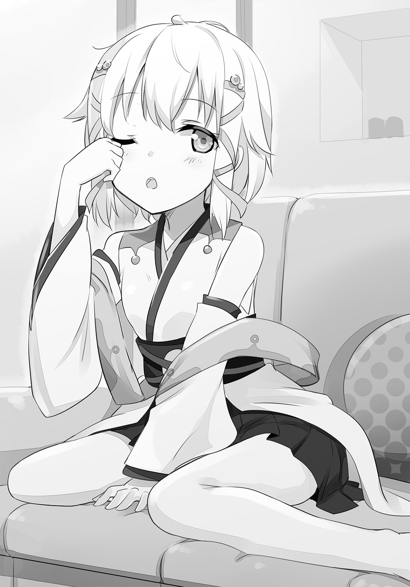

| 正直バカはラブコメほど甘くない青春に挑む | |
| 慶野由志 | |
この本は縦書きでレイアウトされています。
また、ご覧になる機種により、表示の差が認められることがあります。
 ダッシュエックス文庫DIGITAL
ダッシュエックス文庫DIGITAL
正直バカはラブコメほど甘くない青春に挑む
慶野由志
プロローグ 正直バカと高嶺の花
「......助かったわ春先君。意外と力強いのね貴方って」
昼休み中の人通りが多いざわざわとした学校の廊下で、クラスメイトの女子生徒――神楽琴葉は俺の顔を見上げながら軽く微笑み、落ち着いた声でそう言った。
神楽を背後から支える形で、俺たち二人は密着していた。初めて間近で見る彼女は、本当に目を奪われるほどに綺麗で――やや童顔なこと程度しか特徴がない男子高校生である俺こと春先真太郎は、返事することすら忘れ、思わず彼女に見入った。
大きくて宝石みたいな瞳。とても白く滑らかそうな肌。背まで届く、シャンプーの匂いがするさらさらの髪。それらの要素が織りなす、清楚で上品な容姿と雰囲気を持つ神楽のしっとりとした優雅な微笑みは、とても魅力的で美しい。
そもそもこれは、ほんの五秒前までは全く予期していなかった状況だった。
俺だって人並みの男子らしく、憧れのシチュエーションというものはある。例えば、大きくよろめいた可愛い女の子に、映画の主人公みたいに颯爽と手を伸ばし、しっかりと受け止めた上で「大丈夫か？」なんて声をかけるシーン。あれは死ぬまでに一回はやってみたいと常々思ってはいた。
けれど実際そんなシチュエーションに遭遇すると、格好つけるどころか、支えた腕に伝わる女の子の体温と、鮮烈すぎる髪の匂いで何もできなくなるなんて、考えもしなかった。
「あ、ああ。ええと、大丈夫か神楽？」
「ええ、貴方のおかげで擦り傷一つないわ」
つい先ほど転倒寸前になった神楽の身体を支えた腕を引っ込めて、俺はようやく締まらない声を発した。それに対し、神楽はやはり落ち着いた声でやんわりと応じた。
どこの学校でも、いわゆる憧れの的という女子生徒はいる。
大勢の中にいてもその一部として埋もれずに、発する輝きが人の目を惹きつける特別な存在。二週間前に俺のクラスへ転校してきた時から、神楽はそういうポジションだった。
容姿が美しいのはもちろんだが、神楽はとにかく、その雰囲気や動作の一つ一つが可憐で上品だった。何かの舞台劇を見ているみたいに立って歩いているだけで美しく、紡ぐ一言一言にしっとりとした華麗さを感じさせるという、まさに高嶺の花だ。
転校してきてから今日までの間、神楽は常に多くの男子から熱い視線を浴び続けており、かく言う俺も、その流麗な物腰と可愛さには密かに憧れを抱いていた。
ついさっきだって、廊下の向こう側から神楽が歩いてきた時は、それだけで少し幸せな気分になれた。ただそのごく小さな幸福のひと時は、俺たち二人がすれ違った直後に、いわゆる『購買組』の連中と遭遇したことで想定外の事態となってしまったのだ。
購買組とは学校の購買部で昼食を買って済ませる奴らのことで、彼らは毎日昼休みになるやいなや、陸上部もびっくりの謎の脚力を発揮して、大勢で廊下や階段を爆走するのだ。
そんな奴らは前の学校にはいなかったのか、神楽は驚きに目を見開き、彼らの疾走に煽られ、大きくバランスを崩してしまった。
それを見た俺は咄嗟に廊下の床を蹴り、神楽の身体に手を回してその体重を支えた。
ほとんど無意識での行動だったので、俺自身、自分が何をしてこうなったのか、すぐには状況判断できずに目を瞬かせてしまったが、当の神楽は実に冷静だった。
「春先君って迷わないのね」
「え？」
俺が憧れの女の子の前でどきどきしていると、不意に神楽は妙なことを言い出した。
「貴方と私の距離は三メートルくらいあったと思うわ。手を伸ばせば済む距離じゃなくて、すぐに決断して、すぐに踏み込まないと間に合わない感じだったのに」
「いや......そりゃ迷わないだろ？ 目の前で人が転びそうだったんだし」
俺がすぐにそう返すと、神楽は少しだけ意外そうな顔になり、何やら珍しいものを見るような目で俺を眺め、「ふぅん」と呟いた。
「意外とそうできる人って少ないものよ。助けられなかったら格好悪いとか、他の誰かが何とかしてくれるかもとか、いろんな考えがよぎって結局身体が動かないことが多いもの」
「そんなもんかなぁ......別に俺じゃなくても、誰だってこうすると思うぞ？」
何やらやけに感心してくれているようだが、人が転んで怪我しそうな状況で、何も迷うことなんてないと思う。たとえ相手が神楽じゃなくても、俺は同じように助けに入るだろう。
「ええ、そんなものよ。でも、貴方がそういう人間だったから、私は無様に尻餅をつかないで済んだみたいね。改めて、ありがとう春先君」
「い、いやどういたしまして......」
真正面から改めてお礼を言われ、俺は頰を紅潮させた。
さっきから言葉の端々がしどろもどろになりがちだ。初めて神楽とまともに話すこの状況では、なかなか整然とした言葉が出てこない。
涼やかで鈴を転がすような声に、この美貌、このスタイルだ。スカートから覗く脚の白さも眩しく、遠目で見た時より胸回りも豊かで、感触もバッチリだった。
（ん......あれ？ 感触......？ 俺は何でそんなこと知って......ってまさか......!?）
とある事実に思い当たり、紅潮していた顔は一転して蒼白になった。
今の今まで意識してなかったが、神楽を助けた一瞬を冷静に思い出すと、伸ばした左手が一瞬、むにゅんとしたものを摑んだような覚えがある。
そう、ちょうど神楽の胸あたりに伸ばした左手がだ。自分のことながら確定的すぎる。
「あら、どうかしたの春先君？ なんだか急にたくさんの汗をかいてるようだけど」
「い、いいい、いや、な、なんでもないっ！」
俺は大いに動揺し、我ながら露骨に不審な返事をしてしまった。
事故とはいえ、憧れの神楽に不埒な行為を働いてしまったなんて、絶対知られたくない。しかし、その隠したい事実がバレずに済むかは甚だ疑問だ。普通であれば、この状況はただしれっと冷静な顔をしていれば済む程度のことなのだろうが、ここにいるのはこの俺、春先真太郎だ。俺と噓は、昔からとても相性が悪い。
（だ、駄目だ。冷静な顔で、クレバーに、クールに、何でもないように――ん？）
何かありますよと宣伝するような身体の震えを抑えるべく、動じない氷になるよう心に命じていると――俺は自分の足下に、妙なものが転がっていることに気づいた。
テニスボールくらいの大きさの球体で......何だこれ？
思わず拾い上げてみたが、やはり何の道具かわからない。金属で作られた網状の装飾を丸めて球体にしたような美術性のある品で、くす玉みたいに真ん中からパカッと開閉できる仕組みになっているのがわかるが、これは一体......？
「ひょっとしてこれ、神楽のか？」
「あっ......！ え、ええ、その通りよ。まさか落としているとは思わなかったわ」
上品で冷静な印象の神楽だが、その声は珍しいことに、少し焦っていた。まあそれほど大切なものなのだろう。俺は廊下に転がった際についたのであろう埃をはたいて落とし、神楽にその謎の球体を手渡した。
「ふぅ、ありがとう。転びそうになった上に、これを落とすなんて、今日の私は油断しすぎね」
「ずいぶん大事にしているんだな。ちなみにそれ何なんだ？」
俺が純粋な好奇心で聞くと、神楽はなぜか「ん......」と言い淀んだ。
「......ま、いいわよね。見慣れないだろうけど、これは香炉よ春先君。香りを立てる道具ね」
「へぇ......初めて見たな。アロマとかは聞いたことがあるけど」
「ええ、でもこれは現代のアロマ用品じゃなくて、大昔に作られた骨董品よ。私の......とても大切なものなの」
神楽の説明を聞きながら、俺はその不思議な球体状の道具をしげしげと眺めた。純粋に、自分の生活範囲に登場しない道具は見ていて面白い。なるほど、中でお香を焚くから網状の通気性の高いデザインをしているのか。
「はぁ......こんなものを持ち歩いているんだな。さすが神楽、お嬢様っぽい」
「おじょう、さま？」
つい俺の口をついて出た『お嬢様』という単語に、神楽は疑問符がついた声を出した。
「あ、いや、俺が勝手に神楽ってお嬢様っぽいなって思ってたんだよ。とにかく雰囲気が上品で、落ち着いてて、綺麗で格好よくて、何をしても華やかで......まるで漫画に出てくる理想的な美人お嬢様だなって......あ」
自分の抱く正直な感想を赤裸々に語っていることに気づき、俺は冷や汗を流しつつ固まった。し、しまった！ また俺は理性というフィルターを通さず、思ったままを喋って......！
見れば、神楽は俺の褒めちぎった言葉に目をぱちくりと瞬かせ、やがて若干警戒するような視線を向けてきた。
「春先君。貴方......ひょっとして私を口説いているの？」
「く、口説く!? い、いきなり廊下でそんなことするわけないだろ！」
大慌てで否定するが、そうとられても仕方ないだろう。先ほどの俺の発言は一〇〇％本心なのだが、あんな恥ずかしいことをさらりと言える奴は、女の子に対して美辞麗句ばかり言うナンパ男か、よっぽどのバカだけだ。
そして、ひどく遺憾なことに......俺はそのよっぽどのバカに属する奴なのだ。
ああ、くそ！ 俺のバカ野郎！ 自分の悪癖が憎い！
「その頭を抱えた様子からして......どうもそんな気はなかったみたいね。ああ、そう言えば......クラスの女子から春先君の話を聞いたのを思い出したわ。いくつか渾名があって、その一つが〝正直バカ〟だったかしら」
「ぐお......!?」
お、俺の渾名がすでに神楽に伝わっていただと!? くそ、クラスの女子たちめ！ なんてことをするんだ！ 俺は......ただ人よりちょっぴり本音が出やすいだけなのに！
「なんでも貴方はうっかり本音を言ってしまったり、考えなしに思ったままのことを言ってしまったりする癖があるらしいわね。授業中に忘れてた宿題の問題を当てられた時なんか、『ちょっと待ってください！ 今友達のを写させてもらってます！』なんて言ってしまったとか」
「い、いやあれは写すのに必死な時に当てられたから、咄嗟につい......」
そのバカ正直ならぬ、正直バカという不名誉な渾名は、俺の困った性質をそのまま言葉にしたようなものだった。
俺は昔から、噓が苦手だ。自分の言葉にフィルターをかけるのが下手で、つい思ったことをそのまま口にしてしまいがちなのだ。他人のための噓ならそこまで問題はないのだが、自分のことに関しては、気をつけないとすぐ思考と口が直結してしまう。これのせいで、これまでの人生においてどれほど苦労したことか......。
「あら、だとすれば......さっきやたらと私を褒めてくれたのは、口説き文句じゃなくて、ただの本心だったのかしら。ふふ、だとすればなかなか光栄ね」
神楽は口元に手を当て、面白そうにクスクスと笑った。
今まで見たことのない神楽のレアな表情からすると、どうやら口説いているという誤解は解けたようで、俺は胸を撫で下ろした。
「ともかく、ありがとう春先君。ちょっとお手洗いに行くから、また今度ね」
「あ、ああ。じゃあな。つい話し込んじゃってごめんな」
神楽との会話が円満に終わったことにホッとしつつ、俺は踵を返した。
噓が下手な俺だが、なんとか話題が逸れたことで、うっかり神楽の胸を触ってしまったことはバレずに済んだようだ。
なんだかんだで、神楽とこんなに会話できて楽しかったし、今日はとても幸運な日だと言ってもいいだろう。さてじゃあ、この余韻に浸りつつ、教室で昼食を――
「あ、ところで春先君。さっき私を支えた時に、どさくさに紛れて胸を触ったかしら？」
「ああ、触った。............あ......」
不意を突いて刺さった神楽の問いに、俺の正直な口は、さらりと致命的なことを白状した。
何もかもハッピーに済んだはずの神楽との交流が最後の最後で崩壊したことを悟り、俺は灰のように白く燃え尽き、冷凍マグロのように冷たく凍りついた。
っておいぃぃぃぃ！ 何さらっと暴露してるんだ俺の口！ 憧れの神楽との会話を楽しく終わらせたと思ったのに、どうして最後の最後にやらかした......！
俺が壊れたブリキ人形のようにぎぎっと重苦しく首を回すと、神楽はにこにこと笑顔を浮かべていた。満面の笑みと言っていいだろう。
だがその表情からはさっきまでのような可愛らしさは感じられない。むしろなぜか、百獣の王たる獅子が周囲の動物を震え上がらせる時のような、無言の圧力を醸し出している。
ああ......終わった......何もかも......。
「そう。それで、触り心地はどうだったかしら。今日はそう厚い下着はつけてないけれど」
「ああ......制服ごしでも形のよさがよくわかる吸いつき具合で――じゃねえよ俺ぇぇぇ!!」
どこまで恥をさらせば気が済むんだ俺のアホォォ！ もう死ね！ 俺の口死ね！
俺が真剣に自殺を考えていると、ぷ、くく......と神楽が口元を押さえ、プルプルと肩を震わせた。てっきり不埒男に怒声を浴びせてくるかと身構えていた俺は、予想だにしなかった反応に目を瞬かせた。
「くく......ふぅ、なるほど、確かにバカ正直というより、正直バカのほうが正しいわね。ここまで本心と口が直結した人は初めて見たわ」
神楽はひとしきり笑うと、これまで俺が見たことのない意地の悪い笑みを浮かべ、おそらく全く褒めていない感想を口にした。清楚なお嬢様然とした神楽にはやや似つかわしくない表情だったが、俺にはそんな少女の知らない一面を発見したことを喜ぶ余裕はなかった。
「ま、私を助けようとしての事故だし、貴方の反応はなかなかユニークだったから許してあげる。じゃあね春先君。その正直さは嫌いじゃないけど、貴方はもう少し噓をつく練習をするべきかもね」
そう言って、神楽はその場をあとにした。その後ろ姿はやはり颯爽としており、それだけで十分に人目を引く。だがそんな鮮烈な後ろ姿とは対照的に、俺の心は暗い曇天模様で、自己嫌悪に陥りつつあった。
「......なんでこうなった......」
スケベ事故を怒りのままに糾弾されずに済んだことは幸いだったが、胸を触った男に好意が湧くはずもないだろうし、俺の正直バカさもしっかりとバレてしまった。間違いなく神楽の俺に対するイメージは、口の締まりが悪いアホな男という感じで固まってしまっただろう。
神楽と言葉を交わす貴重な機会が、一転して酷いオチでもって終わってしまったことに、俺はがっくりと肩を落とした。
一章 正直バカと変人少女たち
「最悪だ......」
昼休みの騒がしい教室の中で、俺は一人机に突っ伏していた。
原因は、もちろん先ほどの神楽との一件だ。憧れの女子と僅かながらもお近づきになれたかと思いきや、俺のいろいろとアレな面を暴露する結果に終わってしまったのだ。
自分自身そう暗い性格はしていないと思うが、流石にへコみはする。沸き上がる苛立ちを払拭すべく、持ってきた弁当を一気食いしてみたが、やはり気分は晴れない。
「くそぉ......それもこれも俺の噓の下手さがひょひゃああ!?」
突如制服の上から両脇腹をまさぐられる感触に、俺は机に突っ伏した顔を上げて、奇声を上げた。もちろん、俺が自分で自分の両脇腹を触るなんてアホなことをしたわけじゃない。こうも粘っこい手つきでこんなことをする奴は――俺が知る限り一人しかいない！
「何すんだ九日！ 無駄にエロい手つきで人を驚かせるようなことをするな！」
「ははは、そうカリカリするな真太郎。友人がなんとも盛大に気落ちしているので、ここは一つ元気づけようと痴漢してみただけだ！」
振り向くと、そこには無駄に偉そうな豪快な笑みとオーラを醸し出す女子生徒がいた。
切り揃えた前髪と流れるようなポニーテールが清廉な印象を与える、一見可憐で古風な美少女――十月九日は、いつものとおり根拠のない自分への自信を漲らせ、余人には理解できない思考回路とともにそこにいた。
「何が元気づけだよ！ 痴漢されて気が晴れるわけあるか！」
「む？ 私のような美少女に痴漢されれば、男子たるもの元気百倍ではないのか？ それとも君はアレ系か？ 蹴ったり唾を吐きかけたりしたほうが元気になるのか？」
「自分で美少女言うな！ あと、俺にそんな方向性の趣味はない！」
見た目だけならやや清楚な雰囲気を持ち、神楽とはまた違った魅力のある可愛い少女である九日は、よく会話する友人と言っていいだろう。
だが、そんな容姿がいい少女であるにもかかわらず、こいつの姿を見るたびに出てくる言葉は、おおむね「げっ」とか「うわっ」などに類するものになる。こいつが近い距離にいても、俺はまるで嬉しくないし、周囲の男子たちだって全く羨ましがらない。
「まあ、落ち込んでいる原因はおおむねわかっているのだがな。あれだろう。先ほど廊下であれこれしていた件だろう？ 一部始終をじっくりと拝見させてもらったぞ」
「げ......お前見ていたのかよ......」
「ああ、流石だったぞ真太郎」
げんなりする俺に、九日は機嫌よさそうに笑みを広げた。
「よもや、転校してきてからすぐに学校中の男子の視線をかっ攫った話題の女子・神楽氏に、親切ついでの乳むにゅをかますとは思わなかった！ 周囲をどれだけ敵に回そうとも露骨にエロスを求めるその心意気、私は高く評価する！ いやはや、男子とはこうでなくてはな！」
「俺が覚悟完了の上でわざと痴漢したみたいに言うなぁ！ 事故だ事故！ 俺をお前と一緒にするんじゃない！」
そう、俺はただ神楽の特定ポイントに手が触れてしまったことを隠しきれなかっただけであり、その原因自体はあくまで偶発的な事故だ。決してスケベ心に従って手を伸ばしたわけじゃない。ないったらない。
「ほう、真太郎よ。君は自分が女性と見れば露骨に性的な目で見る、セクハラ上等のエロ人間じゃないと、あくまで主張する気なのかな」
「も、もちろんだ。俺はエロ人間なんかじゃない」
俺も歴とした男子高校生なのだからして、エロいことなんて考えたこともない――などと言えば流石に噓になる。が、女子にセクハラしたいなんて考えたことはない。
......そう。考えたことはないのだが......。
「そうかそうか、ならば少しテストといこうか」
「テスト......？」
昼休み中とはいえ、教室の真ん中で妙なことを言い出した九日に、俺は警戒心を露にした。
その日付のような名前を持つ十月九日という少女は、見た目だけなら確かに可愛く、清純な印象すら与える。だが、そんなイメージでこいつと接すると、とてつもないカウンターパンチを食らうハメになる。
「何、簡単なことさ......ほら」
「............っ！」
九日はにやりと意地の悪い笑みを浮かべたまま、己の制服のスカートに手をかけた。
そして――あろうことか、それをゆっくりと、本当にゆっくりとたくし上げ始めたのである。
そのゆっくりさが全てだった。泣きたくなるほどに玄妙な、やんわりとした速度だった。
九日の白くてすらりとした眩しい脚。そこにスカートという布一枚で封じられていた太股が少しずつ露になっていく。そのむちっとしてとても滑らかそうな肌色が広がっていく。じりじりと視界を占有していく。その白さに、目を奪われる。
そしてとうとう――太股の全てが露になり、スカートの中に封印されている本命の薄布までさしかかり――
「――ほらアウトだ。私の脚をずっとガン見していたじゃないか」
「はっ......!?」
たくし上げていたスカートから手を離し、九日はほれ見たことか、と口の端を上げた。
「い、いやでも今のは仕方ないだろ！ いきなりあんなことされたら嫌でも目が行く！」
「ああ、確かに驚きに一瞬注目してしまうのは仕方ないだろう。だが、君とてこれが私の言うテストであり、すぐに目を逸らせば難を逃れられると途中で理解したはずだ。にもかかわらず、君はずっと私の脚から目を離さなかった。ふふ、相変わらず本能に忠実だな」
「ううぅ......」
論理的に責めてくる九日の言葉に、俺は反論が見つからなかった。くそぉ、くそぉ！ なんで俺はこうなんだ！ 頭ではわかっていても目はついつい見たいほうに......！
「ああ、そう自分を責めるな真太郎。私は君がいろんな意味で単純かつ純粋で、無意識にエロい視線を向けてしまうだけで、セクハラの意志がないことは知っている。まあ、たとえ無意識でも女子をエロ視線で見る癖がある奴は、世間ではただのエロ人間だがな！」
「ちくしょおおおお！」
俺は自分への怒りで声を荒らげた。全部九日の言うとおりだ。自分の心を偽るのが苦手な俺は、口での噓も下手なら、視線の噓も下手で......女子の際どい姿などの眼福な光景を前にすると、目を逸らすことを忘れて、ついガン見してしまうことが多々ある。おかげで女子からは『正直バカ』に加え、『エロ正直』『ガン見の春先』『猿』などとさらに不名誉な渾名で呼ばれたりもする。しかし......しかしだ！ こいつにだけはエロ人間呼ばわりされたくない！
「悲観することはないさ。草食系とかいう輩が跋扈する昨今、君の存在は実に貴重だ」
九日は自分の脚をガン見した男子に、実に嬉しそうに語る。ええいうるさい。お前に貴重とか呼ばれても嬉しくない。
「男子の中でも、そんなに露骨なガン見をしてくれるのは君だけだ！ 私がちょっと透けブラを披露しても、スカートの中を団扇で扇いでも、誰も彼も顔を赤くして目を背けるという似非紳士な反応ばかり......！ 学校内の地位を急落させようとも、自らのエロスに従うという気概がまるでない！ 若者の性欲離れは深刻だな！」
「お前のエロス脳のほうが深刻だよ！」
教室の真ん中で女子高生にあるまじきエロ不足を嘆く九日に、俺は声を大にして言った。
九日はエロいことが大好きであり、エロスに従って生きている。
男子の脇腹を触ってみたり、女子の胸を揉みしだいたり、美少女という立場を悪用して男女両方にセクハラを繰り返すエロ魔人だ。本人曰く『エロスの探求』とやらをライフワークとしているようで、人はどうすればより興奮するのか？ 人はどういうシチュエーションにエロスを感じるのか？ などと頭が痛くなるようなことを常に研究しているらしい。
その研究のためには自分の肌を晒すことも躊躇がなく、スカートの裾を翻してみたり、胸元のボタンを開け、皆の反応を観察したりしている。おかげで『十月さんに安易に近づかないこと、決して二人っきりにならないこと』という男子女子共通の性犯罪者対策のような不文律が生まれ、こいつの世話は俺にまかされている状態だ。九日も九日で、俺の本能に正直な反応が大層気に入ったらしく、不本意ながらこうして一緒にいる機会は多い。
「人間は総じてエロく、エロを隠すことこそ不健全というのが先祖代々伝わる十月家の家訓だ。よって我が家は父も母も兄も全員こんなだぞ」
「お前の家には一生行かない」
心のままの感想を口にすると、「む、そう言われるとなんだか無理矢理連れていきたくなるな」などと戯けたことを九日がのたまったが、聞こえないふりをしよう......ん？
「み、水......」
ごく近くから聞こえてきたその声に、俺と九日は視線を動かし――揃って目を瞬かせた。
そこには、一人の女子生徒がいた。さっぱりしたショートカットが似合う、中性的な顔立ちのクラスメイトで、俺も九日もよく知る人物だった。
「何やってるんだ更級......？」
その女生徒――更級燐子はなぜか全身汗だくだった。この昼休みが始まって二〇分程度しか経っていないタイミングで、まるで真夏のマラソンを走り終えたばかりのように制服をびっしょりと濡らし、荒い呼吸を繰り返している。
「なにやらわからんが、ほれ燐子。ゆっくり飲むといい」
疲労している様子の更級に、九日が俺の水筒から勝手にお茶を注いで手渡す。更級は呼吸を乱したままそれを受け取り、一気に呷る。
自然と更級は胸を反らした状態になり、ただでさえ汗で透け気味だった制服に、ブラの形がくっきりと浮き出す。さらに、そのとても美しい色彩と膨らみの上に、こくん、こくんと液体が喉を伝う音が鳴り、妙にはっきりと耳に届く。
......は!? し、しまった。また俺は目の前の色っぽい光景をじっくりと......！ ああくそ、俺は女子にセクハラを働きたくないし、紳士でありたいと思っているのに！
......っておい、九日。なんだその『本当に君はエロ正直だなあ』みたいな優しい目は！
「安心するといい真太郎。私もしっかりガン見した」
聞いてねえよ！ 『いい光景だったな』と言わんばかりの共感を求める顔やめろ！
「ぷはぁ！ ありがとう春先君に九日！ いやー、流石に倒れそうだったよ！」
お茶を飲み干し、何とか会話が可能になった様子の更級が言う。珠の汗を多量にくっつけている状態での、そのどこか少年っぽい快活そうな笑顔は、とても爽やかで可愛かった。
「で、結局更級は何してたんだ？ なんでそんなに汗だくなんだよ」
「ああ、うん、実は今日のお弁当は家で六時間かけて作った、牛スネ肉のワイン煮込みでさ」
そんな大層な晩餐メニューを弁当箱に詰めて持ってくるなよ。家庭で家族といただけよ。
「お腹を空かせようと思って、昼休み開始と同時に走り込みを始めたんだけど、途中で陸上部のベストタイムに挑戦したくなって、一人二〇〇〇メートル走大会を開催したんだよ」
どこから突っ込んでほしいんだ。そもそも逆に疲れすぎて食欲なくならないか、それ。
「いいところまでいったんだけど、やっぱり陸上部って凄いね。全力でも完敗だった」
「まあ、更級が満足ならそれでいいけどな。ええと......まあお疲れ様」
俺は半ば尊敬しつつ、半ば呆れながら目の前の少女を労った。
俺と九日の共通の友達である更級は、とにかく心のパワーを持った少女だ。
人間には朝起きる時も、勉強する時も、遊ぶ時でさえ心の力が必要であり、これが乏しいと何もやる気が起きない無気力な人間になってしまう。
だが更級はその心の力がやたらと強大であり、運動するにしても、料理を作るにしても、遊ぶにしても、心のエネルギー切れを心配する必要がない。眠らない子供、とでも言うべきか。
加えていろんなことに興味を示し、ついついやりこんだり、突飛な思いつきで突っ走ったりする高性能エンジン内蔵の少女である。
「いつも思うが、燐子のその膨大なエネルギーには敬意を表するな。私ももっとエロスの道を爆走せねば、と思わされる」
お前は今もこれ以上ないくらいに爆走してるだろ。どっちかと言うと終始暴走してる。
「いやいや、私に言わせれば、みんな青春への愛が足りないよ！ こんなうら若き日々を送っていたら自然とテンションが上がって、何でもできる気になるってものだよ！」
拳を固めてきっぱり言い放つ更級に、俺と九日は自然と苦笑した。若さは力と言うけれど、こんなにも力いっぱい楽しそうに日々を送っている奴もそういない。見れば、周囲のクラスメイトたちも、更級のテンションと行動に呆気に取られながらも、その潑剌とした笑顔から元気が伝播したように頰を緩めていた。
「ま、そんなわけでいただきます！ あははは！ 流石にちょっと疲れすぎて、とろとろに煮込まれた牛肉が予想以上にヘビーに見えるよー！」
更級は周囲の空いている椅子にどかっと座り、ハイテンションな笑顔のまま持ってきた弁当箱を開けた。そこに盛りつけられているブラウンソースに彩られた分厚い牛肉は、弁当をしっかり食い尽くした俺でさえ強烈な食欲が湧き出るほどの出来だが、更級は実に食べにくそうだ。せめてもうちょっと息を整えてから食えよ。
「しかし燐子。その心のパワーもさることながら、そこまでの体力があるなら運動部に入ったほうがよかったのではないか？ 夕焼けに染まるグラウンドで、君が体操服を汗で濡らしている様を想像するだけでとってもムラムラするのだが」
「んー、もぐもぐ、それは、ないかなー、もぐ、私に体力があるのは、んぐ、小さい頃から、楽器を、ごくんっ、やってるからだし」
九日の願望が多分に混じった言葉に、牛スネ肉煮込み弁当をかっこみながら答える更級。男子からも女子からも若干距離を置かれがちなエロ女子である九日だが、更級は妙に九日に友情を感じているらしく、この二人は仲がいい。
「ああ、なんか聞いたことあるな。楽器の演奏はもの凄く疲れるから、人によっては体力面のトレーニングもするとか。更級のやってる琵琶もやっぱりキツいのか？」
うちの学校には、昔の理事長が半ば趣味で創設したという珍しい部活――『和楽部』がある。琴や和太鼓などの和楽器の演奏を行う部活であり、そこに所属する更級が扱うのは伝統的な弦楽器、〝琵琶〟だ。有名な琵琶奏者である母親に幼い頃から指導を受けたらしく、その腕前はかなりのものらしい。
「そうそう、私はけっこーマジで琵琶をやってきたからね。ランニングくらいならいつもやってるよ。夏とかすぐ汗だくでふらふらになっちゃうし、とにかく演奏って疲れるんだよ」
「なら貴重な体力を思いつきで消費するなよ......今日だって放課後は部活あるんだろ？」
「ノンノン、春先君。そんな小賢しい考えは犬にでも食わせておけばいいんだよ」
俺が至極真っ当な正論を言うと、更級はチッチッと指を振った。いつもテンションが高めで元気に溢れた更級は、こういったノリのジェスチャーを好む。
「今したいことを全力で楽しむ！ それが私のモットーだよ。ランニングでも熱が入れば次の日筋肉痛で一歩も動けないほど走り抜くし、懐かしい漫画を見たくなったら、テスト前でも夜を徹して読むよ！」
「ただの自制心がないバカだろそれは!?」
「君がそれを言うのか......」
拳をぐっと握って宣言する更級に突っ込むと、横から九日がやや呆れたような顔で呟いた。うるさい、俺の自制心の効きが悪いのはあくまで口や視線だけだ！
「ま、そもそも私はこの一日一日自体をすっごく楽しんでるけどね！ 特に二人は一緒にいて最高だよ！ 春先君は歩く本音暴露マシーンみたいで、お腹痛くなるほど笑わせてくれるし、九日はこんなに可愛いのに、目が飛び出るくらいに変態だし！」
「おいぃぃ!? 明るく言ってるけどそれもう悪口だよな!?」
「ありがとう燐子。可憐な笑顔で私を変態と断じる君が大好きだ」
快活な魅力に溢れる顔で言う更級に、俺は声を荒らげて抗議して、九日は『変態』という言葉をなぜか恍惚とした顔で受け止めて礼を述べる。
「あはは、冗談だよ。でも本当に二人のことはいい友達だと思って――あ、れ――......？」
「......？ 更級？」
小気味よく喋っていた更級の声が、急にトーンダウンする。いや、おかしいのは声だけではなかった。目の焦点もぼやけ、四肢が脱力して、箸が手からこぼれ落ちて床に転がる。
これは――まさか......また!?
そう思った時はもう遅かった。更級は突然意識を失い、バランスを失って音もなく椅子から転げ落ちる。
俺は椅子を蹴飛ばすように立ち上がり、床へと崩れ落ちる更級を支えようとした。俺の傍らにいた九日も、珍しく焦った顔で手を伸ばす。
が、間に合わない。俺たち二人と更級の間に鎮座している机が邪魔で、俺と九日が伸ばした手はどちらも空しく空気のみを摑み、更級の身体に触れることはかなわなかった。
そして、何の支えもない更級の身体は、当然のように固い床へ叩きつけられる――ことはなく、横手から伸びた細い腕にしっかりと抱きかかえられた。
「え......神楽？」
意識を失った更級を助けてくれたのは、高嶺の花のクラスメイト、神楽琴葉だった。
神楽は更級の身体をゆっくりと椅子に戻し、背もたれに寄りかからせるようにした。意識こそないものの、更級の表情に苦悶はなく、静かに眠っているようにも見える。
「ふぅ......感謝するぞ神楽氏。危うく貴重な元気っ娘であるマイフレンド・燐子の柔肌に傷がつくところだった」
「どういたしまして十月さん。ええ、私も間に合ってほっとしたわ」
九日が冷や汗を袖で拭いながら言い、神楽もまた安堵の息を吐いて応える。見れば周囲のクラスメイトたちも同じように、緊迫感から解放された表情を見せていた。
もちろん、胸を撫で下ろしたのは俺もだ。椅子からとはいえ、床に無防備に叩きつけられたら顔が傷つくこともある。わけのわからない〝この件〟で、これ以上の怪我人は出てほしくない。
「更級さん......完全に意識がないみたいね。保健室に連れていきましょう」
「ああ、では私がおぶっていこう。こう見えても保健委員なのでな」
九日は手早く更級の元に屈み、彼女の身体をおぶった。意識のない人間を上手く背におさめるのはけっこう難しいものだと思うが、九日は救急隊員のような見事な手際で、更級の身体をあっさりと背負う。相変わらず無駄に妙な特技の多い奴だ。
「では皆の衆、行ってくる！ 決して気絶中の燐子に十八禁な真似はしないので、安心してほしい！ なにせ意識がないとセクハラしても面白くないからな！」
「いいから黙って行けアホ！」
こんな時でもピンク色の頭でものを言う九日が教室を去ると、さっきまで昼休みの喧噪で満ちていたこの空間には、やや重たい空気が残った。周囲のクラスメイトたちも辟易した顔で、ため息交じりの言葉を交わしていた。
「今度は更級かよ......」「もう一カ月......流石にいい加減にしてほしいねこれ」「いつああなるかわかんねえから、階段すら危ないよな」「怖いよね......とにかく」
などと不安の声が目立つが、それは当然だろう。一カ月もこんなおかしなことが続けば、気も滅入ってくるし、次は誰かが大怪我しないとも限らない。
だが、更級が意識を失った現象について、わかっていることはほとんどないと言っていい。
状況はまさに暗い曇り空だ。本来、割と明るいノリを好む奴らが多いはずのこのクラスだけど、今は漠然とした不安に満ちた陰鬱な雰囲気が満ちている。
（一体どうしてこんな......ん？）
景気の悪い顔をしたクラスメイトたちが雁首を揃えて佇む中、俺は視界の端に、憧れの少女・神楽琴葉がなぜかその視線を鋭くし、クラス全員の顔を注意深く観察しているような姿を認めた。その険しい顔は少々妙に映ったが、まあ神楽も転校してきた早々にこんな異常現象に直面して困惑しているんだろう。あいつも間が悪い時期にこの学校に来たもんだ。
「全く......本当に何なんだよこれ......」
喧噪が失せてすっかり静かになってしまった教室で、俺は皆の気持ちを代弁するように、沈んだ声でひとりごちた。意識せず、声には苛立ちとやるせなさが混じっていた。
『いやー、うら若き貴重な青春の時間を寝て過ごすハメになって、すっごい損した気分だよ。明日には完全復活している予定だから乞うご期待！』
意識を失ってから二時間後に目が覚めた更級は、やたらと元気に溢れた伝言を残して早退したらしい。聞けば保健室で目覚めた直後に『ああもう！ お弁当半分しか食べてないから、すっごいお腹減った！』とか言ってたらしいし、健康面は全然問題なさそうだ。
（まあ、一応ひと安心か......ホントに一応だけどな）
夕暮れの空が眩しい橙色に染まる中、俺は学校からの慣れ親しんだ帰り道を、我ながら浮かない顔で一人歩いていた。
原因は、もちろん今日更級の身に起こったことだ。この一カ月間、学校に起きている異変の一端であり、なんとも奇妙で、全く解決の糸口が見えない問題。普段は口に出さないが、クラスの他の生徒も、教師陣も、かなりげんなりとしているように見える。
「くそ......本当に苛々する話だよな......」
そして、それは俺も同様だ。この異変が起こるたびに、俺もまた気力が奪われる。苛立ちが募る。どうしようもないとわかっていながら、ついつい事態に対して怒りを覚える。
しかも、俺にとっては今日起こった悪いことはそれだけではない。
「そういえば......俺、神楽にやらかしてしまったんだよな。はぁ......助けたはずなのに気を悪くしたかな、あれじゃ......」
「ねえ、春先君」
「けどよくよく思い出すと凄い感触だったな......制服と下着があるのに、『ぼすっ』とか『べふっ』とかじゃなくてちゃんと『むにょっ』って感じで。あれはちょっと感動した」
「少しいいかしら春先君」
「神楽って実は見た目よりさらに大きいのかも......ん？」
背後から声が聞こえた気がして、俺はふと後ろを振り返り――一瞬でカチンと凍りついた。
彼女はそこにいた。長い髪と優雅な物腰を持つ少女・神楽琴葉は、泰然と、堂々とした様子でそこに立っていた。
固まる俺とは対象的に、神楽はにっこりと笑顔を浮かべていた。ただ、笑顔とは必ずしも友好的な表情じゃない。今の俺の致命的な呟きを聞かれていたのなら、まさに今神楽の胸中には怒りの烈火が宿っているんじゃないかと思い、俺は冷や汗を流した。
「あら、やっと気づいてくれたのね。少し聞きたいことがあるのだけど、いいかしら？」
「き、聞きたいこと......？ い、いやそりゃ構わないけど......」
いつもの帰り道にはない異常な展開に、俺は焦りつつ返答した。昼休みに神楽と話したのは突発的な事故があったからであり、俺たちは気軽に声をかけ合うような仲じゃない。
一体何で俺に......？ と混乱していると、神楽はゆっくりと先を歩きだした。俺も慌てて足を動かして、神楽に歩調を合わせる。
「ええと、神楽......それで何を聞きたいんだ？」
「あの学校で起きている異常事態のことよ」
前置きもなく、神楽は切り出した。
学校で起きている異常事態。その言葉に混乱気味だった俺の頭も、強制的に冷却される。あの学校の生徒で、今それを聞かれて表情が引き締まらない奴はいないだろう。
なるほど......そのことか。転校生である神楽としては、今学校を異常な状況に追い込んでいるこの件について、知っておきたいと思うのは当然だ。
「連続昏倒事件......って聞いているけど、私が転校してくる前から続いているんでしょう？」
「ああ、そうだ。一カ月前......俺たちが二年生になってしばらく経ってからだな。生徒や先生が、急に意識を失って倒れるようになったんだ。今日の更級みたいにな」
直前までは普通なのに、急に糸が切れたみたいに意識を失う怪現象。
それが俺たちの学校を悩ませている異変だった。最初は貧血か何かだと考えられていたが、その人数がどんどん増加していくと、次第にその異常性が浮き彫りになっていった。
ガス漏れや薬品の気化などが疑われ、徹底的な検査が行われた。けど何日も休校して行った検査からは何も得られず、昏倒した人間を調べても、医者はなぜ倒れたのかわからないと言う。
幸い、倒れた人間は後遺症もなく数時間から半日で回復するということなのだが、倒れた時に壁や床に身体を打ちつけて怪我した奴もいる。
結局......もう一カ月もの間、学校関係者はいつ起こるともわからない昏倒にビクビクしながら過ごしているのだ。危険性を考えて自転車通学も禁止になり、学校の雰囲気は暗くなっていくばかり。このままじゃ長期休校になるとの噂もあり、誰もが気を滅入らせている。
「......まあ、こんなところだよ。この症状になる人間は学校の関係者だけらしいから、やっぱり学校の何かが原因なんだろうって言われてるけど、それが何度調べてもさっぱりらしい」
「なるほど、そんなことが起きてれば自然とみんなの顔も暗くなるわね」
「ああ。特に今日は、あのバカみたいに明るい更級がああなっちゃったしな......」
クラスに不安な顔が増える中、更級のあの子供みたいなフリーダムさとパワーはみんなに笑顔を与えていた。そのあいつが昏倒事件の被害者になったことは、元気の象徴が崩れたみたいで、皆の気力をさらに削る出来事だったはずだ。
「ええ、みんな気落ちしてたわね。......それにしても、春先君って女の子にモテるのね。貴方が仲良くしている十月さんも更級さんもとても可愛いじゃない。貴方に関するクラスの女子たちの評価はだいたい『発情した思春期がダダ漏れすぎ』だったから、少し意外ね」
「大体予想はついてたけど、やっぱりそんな評価だったのか俺......!?」
『発情した思春期がダダ漏れすぎ』......ぐぅ、なんて的確なフレーズだ。反論したいのに、まるで言い返せない。これが神楽を含めたうちのクラスの女子の共通認識かと思うと、がくっと肩が落ち、やるせなさで胸がいっぱいになる。
「けど、神楽。俺がモテるっていうのは間違いだぞ」
「あら、そうなの？ 十月さんとは特によく一緒にいるじゃない」
「そりゃあ、俺だって初めて九日に会った時は、可愛いとは思ったしちょっとドキっとしたさ。でもな......結局人間は中身なんだ。マジで」
見た目だけなら古風な淑女と言ってもいいあいつの本性は、すぐに知れた。思い知った。
「隙あらば男子更衣室を覗いて、女子の汗を舐めて、エロ本を堂々と読んで、終いには『女子高生のパンツを食べてみたい』とか真顔で言い出す奴だぞ。女子高生の着ぐるみに変態おっさんが入っているみたいで、まるでドキドキしない」
「そ、そう......なら更級さんは？ 貴方たち二人の傍がいつものポジションみたいだけど」
「ああ、あいつも変わってて、なぜか九日と俺の二人と一緒にいると嬉しいらしい。九日と一緒より、俺と一緒より、三人一緒にいるのがいいんだと。ま、九日の奴は頭がぶっ飛んでいる分、見ているだけなら面白いしな」
「貴方も十分見ていて面白い人間にカウントできると思うけど......」
何やら呆れたような顔で神楽が何事かを小さく呟いた気がした時、ちょうど俺の家が遠目に見えてきた。家が学校から近いのはいいことだけど、そのせいで神楽と一緒に下校する貴重な時間が早々に終わってしまったようだ。
「神楽、俺の家はもうすぐそこなんだ。残念だけどここで......」
「あら、近いのね。じゃあ、いろいろ教えてくれてありがとう春先君。昏倒事件のことを聞きたかったけど、デリケートな話題だから誰に聞こうか迷っていたところだったのよ」
「で、そこにたまたま俺が通りかかったわけか」
「ええ、春先君なら特に話を歪曲しないで、ありのままに教えてくれそうだったし、とてもちょうどよかったわ。今日は二度も助けになってくれてありがとう」
大輪の華のような笑顔とともに感謝を告げてくる神楽に、俺は「お、おう......」と赤面しつつ返事をした。そこに立っているだけで華やいだ雰囲気を醸し出す憧れの神楽に、笑顔を向けられる。その事実は、俺の胸中に色とりどりの花を咲かせ、単純な俺の男子高校生脳に至上の幸せを与えてくれる。本当に、神楽には〝華麗〟という言葉がよく似合う。
「でもね春先君」
そう、その華やかな笑顔のまま、明るい声音のまま、神楽は続けた。今日の昼休みを再現するかのように、俺の顔を赤面から蒼白へと変える一言を。
「往来で人の胸がどうとか堂々と呟くのは、やめたほうがいいわね」
全身から嫌な汗が噴き出て、あっという間に冷たくなった。
やっぱり聞かれてたのかよぉぉぉ！ なんで着々と自分の評価を下げてるんだ俺は！
胸を触ったのは事故だと思ってくれたとしても、その感想を冷静に思い出してる奴とか変態以外の何者でもないじゃねーか！ 我ながら弁解の余地がねえぇぇ！
「ソノ......カグラサン......スイマセン......」
「あら？ 私は別に怒っているなんて言ってないわよ。ええ、そんな程度のことで目くじらなんて立てませんとも」
思わずロボットじみたギクシャクした詫びを入れる俺に、やはり神楽は笑顔で応じた。
こ、怖い......神楽は声を荒らげていないが、だからこそどれほど怒っているかわからず、わからないから余計に怖い。こんな時、相手の心中を察することができればいいのだけど、そんな高い経験値を要するスキルは持ってない。なんで女の子の心ってこうも読めないんだろう。
「ま、それはいいわ。それより、少し心に留めておいて春先君」
「え......？」
いつの間にか笑顔を消した神楽が、極めて真剣な表情と声で言った。目の前のクラスメイトが突然雰囲気をガラリと変えたことに戸惑う俺に、神楽は続けた。
「もし今後、どこかで怪しい〝もの〟を見つけても、興味本位で近づいたりしないで」
「〝もの〟......？」
「そう、古いもの、奇妙なもの、見慣れないもの。日用品、本、工具......形は問わずにどこかおかしい〝道具〟があったらすぐにそこを離れて。できれば私に教えて」
「え、いや......神楽......？」
さっぱり意味のわからない神楽の言葉に、俺は目を白黒させた。だけど、神楽の表情は冗談を言っている人間のそれじゃない。声音にも、とても痛切な真剣さが滲んでいた。
常識的に考えれば、神楽が俺をからかっているだけなのだろうけれど、この表情はどうもそう思えない。そして、こういう場合、俺が信じるものは決まっている。
「おかしなことを言っている自覚はあるわ。でもせめて頭の片隅にでも――」
「わかった。憶えておくよ」
俺がそうきっぱり宣言した瞬間、神楽は「え......？」と虚を衝かれた声を出した。
「なんだよ。神楽が心に留めておいてって言ったんじゃないか。なんで驚くんだ」
「それはそうだけど......こんな奇妙なお願いに、そこまで素直に頷く人は普通いないもの」
言われるがままに頷いた俺を、神楽は『ひょっとしてこいつはバカなのか』とでも言いたげな困惑した目で見た。神楽から言い出した話なのに、実に理不尽である。
「俺は根が単純だから、普通に考えて変なことでも、直感的に本当だと感じたらそっちを信じることにしてるんだよ。神楽は今多分真剣に言ってるんだと思ったから、その自分の感じたことを元に、俺も真剣に受け止めることにしたんだ。ただそれだけだ」
「――――......」
俺の解答に神楽はなぜか言葉を失い、呆けたような顔を見せた。
なんだよ神楽、真剣に受け止めてほしくなかったのか？
「......そう、ありがとう。そういう感覚寄りの考えは、理性的じゃないけど嫌いでもないわ」
神楽は何をどう感じたのか、少しだけ安らいだように静かに微笑み、背を向けた。
その背中に俺が何も言えないでいると、少女はそのままゆっくり歩き出した。
「さようなら春先君。また明日ね」
その言葉を残し、神楽は暮れる夕日の燃えるような紅の中に消えていった。
俺は、今日一日で神楽と話した様々なことをぼんやり考えた。今まで漠然と可愛いというだけで憧れていた神楽だけど、ただお嬢様然とした奴じゃないらしい。
転校生ということを気にしてか、まだ俺たちと距離を置いているような感じがするけど、もっと仲良くなりたいという欲求は、以前よりも強くなったような気がする。
「しかし......怪しい〝もの〟やらおかしい〝道具〟って......何なんだ？」
神楽との会話の中で唯一理解できなかった箇所を思い出し、俺は首を傾げた。
二章 正直バカと鏡の付喪神
「なんか爽やかに別れたけど......考えてみれば、俺って神楽に順調にセクハラを重ねているんだよな......」
一般的な二階建て洋風建築である自宅のドアを開けつつ、俺はその事実に思い至った。
昼の乳むにゅに続いて、夕方にはその感想を往来で本人に聞かせるという有様だ。我ながら事実を並べると酷い。
そもそも、今日の昼に乳むにゅを白状してしまったのが発端だ。事故だったのだし、あそこは黙っていたほうがお互いにとっても精神衛生上よかったのだろうが、まあ、やはり無理だった。なんで俺はこうも噓やら秘密やらが苦手なのか。
「噓や建前は人付き合いの必須スキルなのになあ......」
噓や隠し事は基本的に悪いこととされているが、噓なくして人間の社会は成り立たない。物事はなんでもかんでも正直に言ってしまえばいいというわけではないし、本音や事実が人の心を傷つけてしまうこともままある。
俺だって、他人に関することならなんとか口を堅くすることはできる。他人が秘密にしていることや、誰が誰をどう思っているかなど、〝自分の本音〟が関わらないことなら、そうおいそれと喋ったりはしない。けれど......自分のことだとどうもつい......。
「ま......今更自分の性分に悩んでも仕方ないよな。とりあえずメシだメシ！」
俺は頭を切り替えて、勝手知ったる我が家のリビングに足を進めた。
ただいま、とは言わない。なぜなら、この家に住んでいるのは現在俺だけなのだ。こう言うと、俺の家族にひどい不幸があったように聞こえるかもしれないが、別にそんなことはない。
一年とちょっと前、俺が高校入試に受かって喜んでいるその時に持ち上がった親父の転勤話。それが俺の一人暮らしのきっかけだった。
転勤先こそ遠いがその話は栄転であり、親父自身は乗り気だった。だが、親父は仕事はできるがゴミ出しのやり方もわからないほどに生活能力が絶無であり、単身赴任させるにはあまりにも心配な人だったのだ。結果、母さんと中学生の妹は親父の転勤先についていくことになり、俺だけが高校に通うためにこの家に残ったという経緯である。
まあ、誰もいない家というのも一年も経てば慣れるものだ。さて、じゃあまずはメシの準備だ。買い出しは済んでいるし、今日は作ろうと思えば何でも作れる。
俺はリビングの照明を点け、学生鞄を床に放り投げた。目に映るのは、いつもの我が家の間取りだ。丈の低いテーブル、四人分のクッション、キャビネット、ソファ、眠る幼女――
「..................あれ？」
何か......今決定的に普段と異なる異物があったような気がする。なんかこう、行きつけの店のラーメンの具の中に、さらっとクッキーが交じっているレベルの違和感が......。
俺は意を決し、もう一度見慣れたリビングを見回した。
丈の低いテーブル、四人分のクッション、キャビネット、ソファ。
そして――ソファの上で猫のように身を丸めて、すやすやと気持ちよさそうに眠る小さな女の子。もちろん、俺の妹でもなければ顔見知りでもない。
「..................」
いくらなんでもありえなさすぎる存在を発見して、俺の全身はたっぷり十数秒ほど硬直した。何か悪いことをしたわけでもないのに、全身に汗をかき、思考が大いに混乱する。
なぜ見知らぬ女の子が？ なぜ我が家に？ 今ここに警察が踏み込んだら、まさか俺が誘拐犯になるのか？ いや......まずは事実確認だ。あれが錯覚か本物か、確かめる必要がある。
俺は呼吸を整えて額の汗を拭い、なんとか気力を振り絞ってソファの上の少女に近づいた。
そこにいたのは、やはり幻覚ではなく、確かに寝息を立てる幼い少女だった。
だがその少女は、明らかに普通でない外見と装いをしていた。
まず何よりも目を引く――真っ白な髪。色素を失っているのではなく、朝陽を浴びて輝く粉雪をそのまま髪にしたような、とても鮮やかな純白だった。
そしてその服は......なんと言ったらいいのだろう。上半身は白い和服で、だぼっと大きい袖はよく見れば、服から独立している。下半身は短いスカートにも見える袴のようなものをはいており、なんとなく全体的に平安時代っぽい印象がある。
歳は妹よりも断然下で、おそらく小学校低学年......八歳程度だろう。無垢で汚れのない初雪といったイメージが似合う、とても可愛い女の子だった。
「......ん............」
物音に反応したのか、少女が声を漏らして覚醒の気配を見せ、俺の身体はさらにぶわっと汗を流して、再度硬直した。ここは俺の家で、相手は明らかに余所の子なのに、まるで気分はお城に忍び込んでお姫様の寝顔を覗く盗賊だ。
「んん......？」
うっすらと瞳が開き、俺ははっと息をのんだ。髪の色も見慣れないものだったけれど、少女の瞳の色にもまた驚かされた。蒼を帯びた水晶色......とでも言えばいいのだろうか。とても透明感のあるクリアな瞳であり、少女の神秘性をより深いものにしている。
寝ぼけ眼をこすりつつ、少女がソファから身を起こして、俺を見た。その透き通るような綺麗な瞳に、俺を映した。俺の黒い瞳もまた、少女を映した。
俺と少女の瞳は、まるで合わせ鏡のようにお互いを映し、俺たちは顔を見合わせたまま、声ひとつないリビングで時計がチクタクと時を刻む音を聞き――
「......ん......すぅ......」
「二度寝するなよおい!?」
再びソファの上で丸くなった少女に、俺は思わず叫んだ。
「ん......ああ、おはよう」
「お、おう、おはよう」
俺の声により二度寝を防がれた様子の少女が、むくりと起き上がってのんびりした声を上げた。髪の色や瞳の色は日本人離れしているが、幸い日本語は通じるらしい。
「よく寝た。とてもいい気分」
「そ、そっか......それはよかったな」
悲鳴を上げたりされないのは助かるが、なんとも落ち着いていてのんびりした表情をする子だ。どことなく目つきもとろんとしており、いまいち考えがわからない。
ただ、とんでもなく可愛い子だということはわかる。粉雪の髪、水晶の瞳、白魚の肌、そしてそれらの要素の中心となるに相応しい整った目鼻立ち。まるでおとぎ話から出てきた妖精のようだ。そんな神秘的な雰囲気を持っているくせに、むにゃむにゃと目をこするその様はとても愛らしく、昼寝から目覚めたばかりの子猫を連想させる。
さて、とりあえずこの少女にいろいろ聞いてみるべきなのだろうが、流石に家に帰ったら見知らぬ子供が寝てた、なんて状況には遭遇したことがないし、一体何から聞けば......。
「ん......ひょっとして、この家に住んでいる......真太郎っていう人？」
俺が悩んでいると、逆に少女のほうから質問が飛んできた。その少女の口から自分の名前が出たことに、俺は目を丸くして驚いた。
「ああ、そうだけど......なんで俺の名前を？」
「物部のおじいちゃんに聞いた」

「もののべ......？ もののべって......まさか物部のじいさんか!?」
その名前には憶えがあった。俺の母方のお祖父ちゃんで、熊本で骨董品屋さんを営んでいる人だ。俺も会ったことは数回しかないが、超弩級の変わり者といった筋肉質のじいさんで、普段は自分の店をほっぽり出して、世界中を旅して骨董品収集を続けているという。
しかもその息子夫婦も海外を主な仕事場としており、今は、俺と同い年の従兄弟が店番を押しつけられているという有様だったはずだ。あいつはそろそろ家族にキレていいと思う。
「まさかじいさんが君を連れてきたのか？ でもじゃあじいさんはどこに......？」
「箱に詰められて、飛脚......じゃなくてタクハイビンで送られて、一人で来た」
「......は？ 宅配......便？」
「この家に着く寸前に、荷物を配ってるジドウシャから抜け出した。この家の鍵は渡されていたから、それで家の中に入った」
「ええと......その......」
至ってクールな表情で淡々と語る幼い少女。その言葉の意味を認識するにつれ、俺の全身は氷のように冷たくなっていった。話が、ヤバいとかそういう次元じゃない。
「つまり......じいさんは君を物みたいにダンボールに詰めて、宅配便で送ったのか......？」
「そう。割れ物注意って札を貼ってあったのに、結構扱いが雑だった」
少女のあっさりした肯定に、俺は膝から崩れ落ちた。ガチだった。あのじいさんは考え得る限り最悪のボケ方をしたらしく、最低な犯罪に手を出したらしい。ことの大きさに俺の全身はカタカタと震え出し、視界がクラっと揺れる。
ああ......なんてことだ......。
よりにもよって、親族からこんな重犯罪に手を染める人間が出るなんて......。
「なんだか、とても困ってる？」
「ああ......うん。俺はとても困ってる。でも安心してくれ。君のことは、俺が責任持ってお母さんとお父さんのところに帰してあげるからな......！」
「？ でも物部のおじいちゃんは、私は春先家の真太郎という人への『ぷれぜんと』だって言ってた。だから今のところ、真太郎の所有物だと思う」
プ、プレゼント......うん、この状況でここまで破壊力がある言葉もないな。そっかこの幼女は俺へのプレゼントかぁ。いつの間に俺はじいさんの共犯になったんだ。ははは笑うしかねえ。
「はぁ......けど駄目だぞ。間違っても自分を物だなんて言っちゃ」
極めて平然とした声で自分を所有物と呼んだ少女を、俺は疲労感を覚えつつ窘めた。誰がそんなことを吹き込んだのかは知らないけれど、子供がそんな酷いことを口にすべきじゃない。
「......？ ああ、なるほど。真太郎は、何も知らないんだね」
少女は、俺の言葉に小鳥のように可愛らしく首を傾げたかと思うと、何やら納得したような声を出して、手をポンと打った。
「知らないのなら、見せてあげる」
目の前の女の子が呟いた瞬間――俺は自分の目を疑った。なにせ、女の子が消えたのだ。
俺のすぐ目の前で、幽霊のように全身の輪郭を薄れさせて、あっさりと消滅した。まるで、全てが幻であったかのように。
「な......え......!? おい、どこに――」
「ここ」
いきなりの超常現象に慌てて立ち上がった俺に、落ち着いた声が届いた。だが、声は近くにあれど、姿はまるで見えない。俺が忙しなく視線を動かしていると、まさに少女が消えたソファの上に、さっきまでなかったものが出現しているのに気づいた。
「え......鏡......？」
ソファの上には、なぜか丸い鏡が転がっていた。大きさは、フリスビーより二回り大きいくらいの真円形で、時代がかった模様の装飾が施されている。
そしてその鏡面ときたら――その、何と言っていいのかわからないほどに綺麗だった。ただの磨いた水晶であるはずなのに、見ているだけで吸い込まれそうな魔性を秘めているというか、その向こう側に、左右対称の世界が本当に広がっていると信じてしまいそうな......。
「いや、それより......あの子はどこに......」
「だから、ここ」
「え......？」
その声は、他ならぬ目の前の鏡から上がった。もちろん鏡の近くにはボイスレコーダーも携帯も置いてないし、鏡にスピーカーがついているわけでもない。
だというのに、鏡はごく当たり前のように、少女の肉声を発する。
これは......いや、まさか、いくらなんでもそんな――
「ん、じゃあ化身に化ける」
鏡から響く少女の声とともに、またも超常現象は起こった。今度は鏡が淡く発光し出したかと思うと、光は広がって子供の輪郭を作り――さっきの少女そのものになった。
「....................................」
俺は無様に大口を開けて固まった。今のを見たまま信じるのならば、少女は鏡となり、次に鏡は少女に変身したことになる。他人に言ったら正気を疑われるような、夢のありすぎる話だけれども、目の前の出来事はそう断定せざるを得ない。
「君は......何なんだ？ 何がどうなって......」
「付喪神。道具に人間の想念が集って生まれた精霊」
「つくもがみ......」
付喪神。その単語は、一般的な知識レベルでは知っている。長く使われた道具や、捨てられた道具なんかが意志を持って動き出した存在で、今でも人形供養や針供養を行うのは、それらが付喪神にならないように、という面があるらしい。
「じゃあまさか......君はあの鏡そのものだっていうのか？」
「そう。本体はあの鏡」
あっけらかんと言う少女だが、俺はトラックと正面衝突したような衝撃を味わっていた。目の前の超常現象は全て本物であり、目の前の少女は完全なる人外。ここまで見せつけられてはそう結論づけるしかない。そして、いきなりこんな想像を遙かに超えた存在が現れたことに、俺が抱く感想は一つだった。
「す......すげええええ!!」
俺は心からの感嘆を込めて、そう叫んだ。凄い！ 凄すぎる！ ホントにホントの道具の精霊なんだ！ 一〇〇％神秘の存在なんだ！
「......その反応はちょっと意外。普通は腰を抜かしたり、凄く怖がったりする」
「いやだって凄いじゃないか！ 付喪神って空想じゃなくて、ちゃんと実在したんだ!!」
俺は興奮気味に捲し立てた。しばし理性が現実を受け入れられずに呆然となったが、事実が脳に浸透するにつれ、その凄さにテンションが上がる。いやあ、まさかこの世にオカルトや神秘が実在するなんて、思いもしなかった！
ついでに言えば、じいさんも人間の幼女を箱詰めで発送したわけではなかったようで、実にめでたい。まあ......いくら人外でも宅配便で旅立たせるのはどうかと思うが......。
「あれ？ でも物部のじいさんは、なんで君を俺のところに行かせたんだ？」
その口ぶりからするに、物部のじいさんは以前から付喪神のことを知っていたようだけど、その意図がよくわからない。
俺へのプレゼントなどと戯けたことを言ったらしいが、目の前の鏡少女を骨董品収集の一環として手に入れたのなら、なんで自分の店である物部骨董店ではなく、付喪神の存在すら知らなかった俺のところに、この人外少女を送ったのか......？
「それは知らない。私は京都にあるお寺で最近まで寝てたところを、おじいちゃんに買われた。その時点でおじいちゃんは、一応私の持ち主だったから、言うとおりにした。それだけ」
俺の疑問に、鏡少女は淀みなく答えた。なるほど......そうすると、この少女も何で自分がここに送られたのかわからないのか。
うーん......あとで電話で聞いてみる手もあるが、あのじいさんはしょっちゅう山奥やら海外やらに出かけており、ひどく連絡が取りづらいと、じいさんの娘である我が母がボヤいていた気がする。全く、相も変わらず無茶苦茶で常識外れなじいさんだ。今頃アフリカ辺りで、古代文明の遺産を巡る熾烈な争奪戦でも繰り広げているのだろうか。
まあ、じいさんのことはいいだろう。たとえどんな意図があろうと、酔狂で孫に人外の精霊を送ってみたくなっただけだとしても、最大の問題は、我が家にふらりと現れたこの子をどうするかだ。とはいえ、答えなんて決まっているのだけど。
「私の扱いなら、何も悩む必要はない」
俺が沈黙していたのをどう取ったのか、鏡少女は俺の顔を見上げ、淡々と言った。
「人間の姿をしていても、私は鏡。私は道具。要らない道具は物置かどこかにしまってくれればいい。今までだって、長い間ずっと鏡の姿のまま眠ってた」
「........................」
幻想的な容姿をしている小さな鏡少女は、その妖精のような顔を歪ませずに、当然のように語り続ける。
「付喪神は、食事も呼吸も必要ない。だから床下でも天井裏でもどこに置いても大丈夫。それでも邪魔なら、いっそ捨ててくれても構わな――」
「いいわけあるか!!」
俺は声を荒らげ、鏡少女の言葉を断ち切った。ああもう！ 子供が何を言っているんだ！
「付喪神だろうが人外だろうが、子供を一人で物置に眠らせておけるわけないだろう！ 俺は自分の本能に忠実な男だから、俺がしたいようにやるぞ！ お前には三食食べさせて風呂にも入れてやる！ この家に来た以上、物置の中で埃をかぶらせたりしないからな！」
きっぱりと宣言する俺に、鏡少女は目を瞬かせて、呆気に取られた表情を見せた。
あるいは......鏡少女の言うことは付喪神にとって当たり前のことであり、俺は人間としての常識を押しつけているだけなのかもしれない。
だけど、想像する。この小さな少女が、家の物置かどこかに放置され、ただずっと暗い場所で眠る様を。いくら少女がそれでいいと言ったところで、俺自身がそんな状況に耐えられない。いくら人外だろうと、俺にはただの変わった人間の子供にしか見えないのだから。
（そう――子供が一人でいるのは......とにかく嫌だ）
それに、じいさんが俺のところに預けた以上、俺にはこの子の面倒を見る責任があるし、俺自身、この少女とはまだ言葉を交わしていたいと思う。
「......子供呼ばわりは的外れ。こんな姿をしているけど、付喪神は器物。大人も子供もない」
「何言ってんだ。子供扱いされてむっとしたそのふくれっ面とか、特に子供っぽいぞ」
俺の指摘に、少女は頰を微かに赤くして、ぷいっとそっぽを向く。
うん、その仕草は余計に可愛いぞ。
「ま、ともかくこれからよろしく頼むな。ええと......あれ、お前って名前なんていうんだ？」
ここまで長々と話していたにもかかわらず、まだ名前すら聞き出してなかった。
俺の問いに鏡少女はなぜか「ん......」と表情を硬くし、言いづらそうに答えを返した。
「昔は......いくつか名前があった。でもそれはもう......あんまり呼ばれたくない」
「......そっか。なら俺がつけてもいいか？」
俺の申し出に、少女は硬い表情を驚きの形に崩し......やや間があったものの、控えめにこくん、と頷いてくれた。よし、なら......こんなのはどうだろうか。
「降り積もる『雪』に果実の『果』で『雪果』はどうだ？ その髪の色が雪みたいで綺麗だから、なんか雪の字を入れたくなったんだ」
「............ん。それで、いい」
鏡少女改め雪果はそっけなく頷いたが、どうも大層気に入ってくれたようで、今まで動かなかった口の端を僅かに上げ、そっと静かに微笑んだ。さらに小声で「雪果......」と嚙みしめるように復唱する様はとても可愛く、俺は自分の心がふっと綻ぶのを感じた。
「でも......雪はともかく、果はどこから来たの」
「ああ、そこのテーブルの上のバスケットに、バナナとミカンが入ってるだろ？ それを見て、あ、果実の果ってなんかいいかもなって」
「......結構適当だね」
「うるさいな。いいじゃないか、お前も気に入ったんだし。......さて」
俺は改めてうちの子になった少女に笑いかけ、台所へ足を向けた。
まさか今日いきなり同居人ができるとは思わなかったし、なおかつ少女が常識外の存在だというのも、まだ完全には受け入れられていない。けど、ともかく現実に雪果という少女がこれからこの家にいることになった以上、やることは一つだ。
「よし！ じゃあメシを作るぞ！ 今日は歓迎パーティーだ！」
俺は台所にかけてあった愛用のエプロンを締めて高らかに宣言し――そんな俺を、雪果は何を言っているのかわからない様子で、不思議そうに眺めていた。
「いよぉぉし！ できたぞ雪果！ 我ながら御馳走だ！」
台所という戦場で苛烈な戦いを終え、俺は得意満面でテーブルの上に並べた料理を誇った。
濃厚な赤ワインソースのハンバーグ。カラッと揚がったサクサクのエビフライ。トロトロのチーズの下にイカやホタテを封じ込めた、海鮮グラタン。
子供の好きそうなメニューで主力を組み、その脇を白菜と人参とシメジの味噌汁、しゃっきりオニオンのポテトサラダで固めた最強の布陣だ。この面子に勝てる奴なんていない。
俺はどや顔で雪果の歓声を待ち望んだが、俺の期待とは裏腹に、床に置かれたクッションに腰掛けた雪果は、眼前の御馳走に目を丸くして呆然としている。
ん？ 嫌いなものでもあったのか？
「......もう一度言うね。わた......雪果は鏡の精霊で、付喪神。食事を取る必要はない」
「え!? もしかしてお前ってメシ食べられないのか!?」
「ううん、一応食べることはできるし、味もわかる」
「なんだ......なら何も問題ないじゃないか」
一瞬、一緒に食卓を囲めないのかと絶望的な気分に陥ったけれど、どうやら心配なかったようだ。メシは美味い。美味いは楽しい。楽しいを一緒にすると仲良くなれる。幼少時から自分と妹のメシを作ることが多かった俺が知ったコミュニケーションの要であり、真理だ。
「真太郎。冷静に考えたほうがいい」
安堵する俺に、雪果はゆっくりと諭すように言った。
「雪果の本質は器物。血も肉もないただの道具。鏡に食事を作るのは、とても異常なこと」
雪果が少しだけ困ったような顔で続ける。まあ、お前の正体は確かに鏡だけど、逆に言えばただの鏡じゃなくて、喋って眠って食事もできる鏡じゃないか。
「だから子供が遠慮するなって！ こう見えても俺は家事も料理も大得意で、妹からも『便利な家事マシーン一号』と呼ばれて敬愛されていたんだ！」
「それ、多分敬愛じゃないと思う」
「ともかくたーべーろー！ 俺一人だけ食べるなんて気まずくて仕方ないし、俺はお前を歓迎したいんだってわかれ！」
「......おじいちゃんが『儂の孫はバカと変態しかいない』って言ってたけど、その通りだった」
子供らしくない落ち着いた表情を呆れたものに変えながら、雪果はため息をついた。
しかしあのじじいめ、何がバカと変態だ。以前会った熊本の従兄弟は確かに道具オタクの変態だったが、俺はちょっと本音が出やすいだけでバカじゃない......と言いたいけどなぁ......。
「ま、ともかく食べるぞ雪果！ ほれ、いただきます！」
「ん......いただきます」
俺の勢いに押されるように、雪果は御馳走に向かって手を合わせ、俺たちは記念すべき二人での初『いただきます』を済ませる。
しかし、うちのリビングが、丈の短いテーブルとクッションで構成された床座り式でよかった。これが椅子だと、ちっちゃな雪果は背丈が足りなくて苦労するハメになっただろう。
そして、俺が見守る中、雪果は俺が作ったハンバーグを不思議そうに見ながら箸で一口大に切り、したたるソースとともに口の中に入れ――
「――――!?!!!?」
クールな顔が驚きに彩られ、小さな目がかっと開かれた。
口を動かしながら雷に打たれたように全身を戦慄かせ、一口のみ込んだあとは、強い衝撃に支配されたように、呆然とした顔を見せた。
そして、雪果が衝撃から脱するやいなや再度箸を伸ばし、猛烈な勢いでハンバーグを平らげるのを見て、俺は密かにガッツポーズを取った。
勝った。特製のまん丸ハンバーグと、肉汁と赤ワインが融合したソースが、神秘の人外少女を魅了したのだ。相手の嗜好がわからなかっただけに、正直ほっとした。妹よ。子供の時から文句ばかり垂れるお前のメシを作ってきたことは、無駄じゃなかったみたいだぞ。
「どうだ？ 美味いか雪果？」
「とても美味しい」
物言いは簡潔だったけれど、雪果はようやく取り戻した平静な顔を保ちつつも、口と箸はかなり高速に動かしていた。ありがたい。こんなに美味そうに食べてくれると、作りがいがある。
「そっか、よかった。いっぱい食べていいからな」
「ん」
こくんっと頷く雪果が他の料理も征服しかかるのを眺めていると、なんだか食欲旺盛な子猫を連想する。あまり表情が変わらない少女だけれども、間違いなく今は現代の食事を楽しんでくれているようだ。雪色の髪の少女がネコ耳を生やして、尻尾を嬉しそうにフリフリさせている光景を夢想して、俺は少しだけ苦笑した。
「ふう......食ったなあ。俺も腹がパンパンだ」
俺は重い腹を抱えて、満腹感に満ちた声で呟いた。遠慮していた割に小さな身体からは考えられないほど食べた雪果も、俺の隣で腹をさすっていた。
食器の片付けを終え、俺と雪果はリビングのソファで寛ぎつつ今後のことを話していた。大きなソファに小さな雪果がちょこんと座っている様はなんとも微笑ましくて、妹が増えたようでもあり、猫が住み着いたようでもある。
「で、明日からのことだけどな。俺は平日は学校に行ってるから、昼飯は用意していく。たまーに手抜きになるかもしれないけど、そこは勘弁な」
食事の量は今までの二倍にはなるけれど、一人分作るのも二人分作るのも、さほど手間は変わらない。この小さな同居人には、ともかく日々の食事の味を知ってもらいたいと思う。
「もし昼間にインターホン......呼び鈴が鳴っても出なくていいから――雪果？」
気づけば、雪果は俺のすぐ近くにいた。ソファの上で肌が触れ合うほどに接近した小さな身体に、雪色の髪の少女がどれほど幻想的な空気を持った精霊なのかを、俺は改めて理解する。
雪果は、俺を見ていた。数時間前にこのソファの上で俺と目を合わせた時のように、じっとその水晶色の瞳に俺を映していた。
不意に、雪果が手を伸ばしてぺたっと俺の頰に触れた。その小さな紅葉みたいな白い手で、俺の顔の感触を確かめてきた。何も語らず、無垢な赤ん坊がそうするように――
「............」
ぺたぺた。
「その......雪果......？ 何してるんだこれ？」
「............」
ぺたぺたぺた。
頰タッチは一回では終わらなかった。ぺたぺたと白魚のような手で触れてくる謎の行動は繰り返され、雪果は何を考えているのかまるで読めない表情のまま、じっと俺の目を見つめていた。本当に、透き通った瞳だなと思った。
「真太郎は、水晶色」
雪果が俺の瞳を見たまま、ぺたぺたを休めてようやく声を出した。感想が心の内から零れたような、何気ない呟きだった。
「とても純粋な善性の心。でも、本当の雪果を知ったら、きっと真太郎でも怖くなる。何でも映す鏡の前に、人間は立っていることができないから」
雪果？ 一体何を言って......。
「本気で雪果を傍に置いておくなら、約束してほしい。雪果が真太郎を苦しめたら、真太郎を壊しそうになったら、必ず雪果を捨ててほしい。雪果は、真太郎の害になりたくない」
お前を捨てるなんて――と反射的に反論しそうになったけれど、雪果の瞳に宿った何かが、俺の感情的で単純な言葉を封じた。切々と、乞い願うような瞳だった。
「......わかった。約束するよ」
俺がそう答えると、雪果は心からほっとした表情を見せて、安らかに微笑んだ。初めて見るその雪解けみたいな微笑みは、とても可愛くて、どこか寂しげだった。
「よかった。真太郎はバカだから、意固地になって約束してくれないかと思った」
「おい」
にこやかな顔でさらっとバカ言うな。
「全く、じいさんといいお前といい、人をバカにしやがって......」
「？ 真太郎は自分がバカじゃないと思ってるの？」
「そんなピュアな顔で、なんて酷いことを言いやがるんだお前は!? 俺だってそこまでバカじゃな――いや、ええと......」
俺は自分がバカじゃないと示す根拠を探そうとして......今日起こった出来事を反芻した。
噓をつけずに不利益を被り、エロい視線を制御できず、さらには憧れの女子にセクハラの感想を聞かせるという失敗だらけの一日を。うん......これはバカだ......。
「いや......決して賢くはないかもな......俺ってそもそも噓が苦手だし......」
「ん、確かにさっきから真太郎は、顔の表情と心の表情が全部一緒。噓はつけなさそう」
自分のアレな一日を思い出して落ち込む俺に、雪果がこくこくと頷いてコメントする。なんかよくわからない言い回しがあったが、まあ大体認識は正しいと思う。
「人間は噓あってこそ。噓がつけない真太郎は駄目な子。きっと出世しない」
ぐ......最初にあった遠慮を俺が剝ぎ取ってしまったせいか、言葉が辛辣になってきたぞこの付喪神！ 可愛い顔でクールに容赦ない言葉を吐きやがる！
「はいはい、どうせ俺は噓が下手なバカですよ。しかも女の子の気持ちもわからないっていうオマケ付きですよーだ......」
自分の噓が苦手なばかりか、他人の噓......というか建前と本音の見分けもつかない。今日にしたって、神楽は俺のセクハラを流してくれたように見える。けどそれは表向きのことで、実は神楽の中では『注意！ 春先はセクハラ男につき近寄るべからず！』というポスターが出回っているかもしれない。正直、俺はそれをかなり心配している。
「噓を上手くすることはできないけど、他人の心に浮かんだものを見ることはできる」
「ああ、そりゃもっと気の利いた奴なら人の気持ちだって察しがつくだろうけど――」
「そういう話じゃない。雪果の能力なら心の表情を見ることができる」
「え......？」
雪果がさらりと告げた言葉に、俺は目を瞬かせた。能力？ 心の表情を見る？
「付喪神は人々の想念が集積して生まれた道具の精霊。雪果たちはその宿した想念の祈りや信仰を元にした力を使うことができる」
そして、雪果はその人外たちが持つ能力の総称を告げた。本来想いで変えることができない現実を、ただ一点において歪めてしまうその力の名前を。
「それが――〝付喪能力〟。付喪神が持っている、現実を塗り替える力」
三章 付喪能力と正倉院
「やあ、おはよう真太郎。燐子は宣言通り、元気に登校しているぞ。後遺症などは全くないようで、私は心からほっとしたよ」
「..................」
朝の教室でいつもの調子の挨拶を告げる九日の姿に、俺は沈黙するしかなかった。俺が昨日どれだけ激動の出会いを果たそうが、こいつは今日も変わらず頭のネジが抜けまくってる。
九日は、ブルマーだった。上の体操服はいいとして、下半身がどうしようもなくブルマーだった。パンツと水着を融合させたような時代の遺物を纏い、生足を全開にしていた。
「いやあ、昨日意識を失ってベッドに横たわる燐子はとてもエロかったぞ。人はなぜ睡眠などの無意識状態にエロスを感じるのかといえば、まあまずは、単純に無防備な点があると思う。しかしこの場合に最も重要なのは、意識がないため、拒絶もなければ誰の記憶にも残らないということなのだ。『ちょっとくらい触ってもバレないだろう......』というエロス神の囁きが思考のエロモード化を促し――ひゃんっ」
妄言を垂れ流すエロバカ女の口を、俺は無言のチョップで止めた。誰がそんな無駄に深い考察を述べろと言った。あと、俺が突っ込む時だけ妙に可愛い声を出すんじゃない。なんか変な気分になるだろうが。
「アホな演説をぶつ前に常識を弁えろ！ なんだよお前のその格好！」
「無知だなあ真太郎。これはブルマーといって――」
「知ってるよ！ なんでそんなもん穿いてるのかって聞いてるんだ！」
「兄が最近手に入れたからと送ってくれたので、早速こうして皆にお披露目した次第だ。ほら、君のそんなふうに熱い視線が欲しくて―――な、何で目を瞑っているんだ君は!?」
うるさい、いつもいつもエロアピールにはまってお前を喜ばせてたまるか。シンプルな手だが、こうして視覚をシャットアウトすればエロ視線は封印される......！
「君が見てくれないと、着た意味がないじゃないか！ ほら見ろ！ 太股を全部さらけ出す上に、乙女の秘所を浮かび上がらせる勢いのぴっちりした素材で、運動服なのに汗で蒸れまくるという昭和のイカレたアーティファクトのエロさを！ 義務を放棄するなこのエロ太郎！」
「うるせえええええ！ 誰がエロ太郎だ！ お前こそ九日改めエロイカと呼んでやろうか！」
「エロはいいが、イカは嫌だ！ なんかイカ臭いビッチみたいじゃないか！」
「どうでもいいから着替えてこいバカ野郎ぉぉぉ！」
そんなおそろしくどうでもいい騒ぎのあと――生徒の通報を受けた女子の生徒指導担当である女性体育教師・村瀬先生が「とつきぃぃぃぃ！」と鬼の形相ですっ飛んできたことにより、九日は生徒指導室行きになった。風紀を乱すために生まれてきたような九日は、普段から村瀬先生の仕事を増やしているため、今回の説教も長引くだろう。
「まあ、九日が反省するはずはないんだけどな......」
「あはは、エロいことに青春を捧げてるのが九日だもんねー」
俺が自分の席でやれやれと呆れた声を出すと、いつの間にか近くにいた更級が面白そうに言った。屈託なく笑うパワフル少女の顔に体調不良の影はなく、実に元気そうだ。
「でも、クラスのみんなもやれやれと思いつつも、心のどこかでは九日には感謝してると思うよ。だって、今はこんな状況だし、九日が騒いでると、みんな笑ってられるから」
しみじみとそう言う更級だが、それについては俺も不本意ながら「そうかもな......」と同意した。昨日更級が被害に遭ったばかりの連続昏倒事件は、学校に暗い影を落としている。
このクラスは例外的に明るいほうで、他の教室では目に見えて喧噪が失せ、生徒の表情に笑顔がなくなってきている。騒がしさが売りの高校生たちが、日に日に静かになっていく様はとても異様で......言いしれない重苦しさが今の学校には満ちている。
「ま、ともかく昨日は大事なくてよかったな更級。普段が元気な分、余計に心配したよ」
「あはは、私は元気が取り柄みたいなもんだからね！ 今朝も昨日安静にしてた分、『うおおおおおおおぉぉぉ！』って叫びながら走って登校しちゃったぜ。すれ違ったサラリーマンのおっちゃんたちが凄くギョッとしてた」
「走るのはともかく叫ぶなよ!? 公共の迷惑考えろ！」
全く......九日もだけど、こいつも十分変人だ。ま、いつもの調子で安心するけどな。
「あ、そうだ更級。コンビニのやつで悪いけど、これ快気祝いな」
俺は鞄の中から今朝買っておいたコンビニ袋を取り出し、更級に手渡した。中身は更級の好物の『どっぷりバターの激甘フィナンシェ』という焼き菓子だ。
「あ......あ、あはは、ありがと春先君。あとで美味しくいただかせてもらうね！」
（ん......？）
てっきり目を輝かせて喜ぶかと思いきや、更級はどこかぎこちない笑顔のまま、俺の渡したコンビニ袋を持って、自分の席に引き上げた。
どういうことだ？ 確かに以前、大好物だと言っていたのに......。
これは......早速アレを試す機会が来たのかもしれない。ちょっと恐ろしくもあるが、まあともかく雪果の言うようにやってみよう。
（おい......雪果いいか？ 早速お前の能力とやらを使いたいんだが）
（ん......ふぁ、いつでもいい。手順は昨日教えたとおり）
俺の脳内で寝ぼけた幼女の返事が響くことに、改めて度肝を抜かれる。
雪果の説明によると、付喪神とその持ち主になった人間の間には、〝縁〟と呼ばれる見えない糸が形成され、一部の付喪神は、その糸を通して糸電話のように会話できるらしいのだ。
この時点で完全な超能力であり、昨日試した時は脳味噌がひっくり返りそうになったが、雪果の異能――〝付喪能力〟はこんなのは目じゃないほどはっきりした超常現象らしい。
俺は人目を盗んでこっそりと大型スポーツバッグを開け、中から雪果の本体――古めかしい装飾に彩られた真円形の鏡を半分だけ取り出した。その鏡の中に、席に戻った更級を映した。
（じゃあ、見てて真太郎。これが雪果の付喪能力――〝心の姿を映す能力〟）
雪果の宣言が頭に響いた瞬間、鏡が淡く光を発した気がした。
俺はごくっと唾を飲み、その能力とやらで何が起こるのかを見守っていると―――
（な......なあああぁぁ!?）
昨日雪果と出会ってからいろいろ驚かされっぱなしの俺だが、その光景は今までの価値観を粉々に打ち砕くほどに衝撃的だった。
現れたのだ。更級の背後、その何もない空間から滲み出てくるように。
真円を描く――儀式的な装飾を施された鏡が。
その鏡は音もなく出現し、宙に固定されているかのように更級の背後に浮いている。よく見ればそれは雪果の本体と同じ形をしており、違うのはやや暗いカラーリングだけだ。
（あれは雪果が能力で作った〝姿見の鏡〟。あそこに映った人間の、心の姿が映し出される）
俺は雪果をスポーツバッグの中に隠しつつ、驚きさめやらぬままに姿見の鏡とやらを見つめた。教室の空中に怪しすぎる鏡が出現しても誰も気にしていないところを見ると、どうもあの鏡は俺と雪果以外には見えていないらしい。
（けど、結局心の姿って具体的にどういう......ん？）
更級本人が、さっき俺があげたフィナンシェを難しい顔でじっと見ていた。その真剣に悩んでいるらしき顔からは、一体何を苦悶しているのかまるでわからない。
続いて、姿見の鏡を見る。そこには更級の姿が映っているけれど、その様は現実の更級とは違う。難しい顔している本人と違い、鏡の中の更級はよだれを垂らさんばかりに食欲を示しており、『食べたい......』という切望が見て取れる。
だがその食欲全開な様子の鏡に映る更級......『鏡の更級』は、たびたび欲望を払うように頭をブンブンと振る。これは『食べたいけど、食べちゃ駄目だ私！』......ということか？
（大好物なはずなのに、食べたいけど食べちゃ駄目......あ、そっか、そういうことか！）
全てを察した俺は、自分用に買った分のコンビニ袋を摑み、更級の席へと向かった。
流石にここまでヒントが示されれば、いくら俺でも答えはわかる。
「あれ......どうしたの春先君。もうそろそろ授業始まるよ？」
「ああ、その、さっき俺があげたフィナンシェ......あれとこれ、交換しないか？」
え？ とやや驚いた様子の更級に差し出したのは、俺の昼ご飯のおやつ、『ヘルシー豆乳シフォンケーキ』だ。単に豆乳シフォンがどんな味か気になったから買ったやつだけど、これならバターでこってりしたフィナンシェより確実に低カロリーなはずだ。
「え......ひょっとして、私がダイエット中だってわかったの!?」
「あ、ああ、何やらフィナンシェを見つめて悩んでるみたいだったから......」
「あはは、気を遣わせちゃったね。でもありがとう！ 甘い物はおやつに食べたかったけど、フィナンシェはちょっーとバターが気になって二の足を踏んでたの！ こっちなら問題ナッシングだよ！」
更級は照れたように笑い、喜んで豆乳シフォンケーキを受け取った。同時に、姿見の鏡に映る鏡の更級も満面の笑顔に変わり、心から喜んでいるのがわかる。
「そういう気遣いができる男の子って好きだぜ春先君！ サンキュー！」
こうして、本来なら更級に悩ましい問題を突きつけるはずだった俺の快気祝いは、雪果の能力のおかげで、更級が最も喜ぶ形へと修正された。
なるほど......これは便利だ。あんまり乱用するべきじゃないかもしれないけれど、結果的に相手のためになる場合などは、特に使う価値がある。
付喪神、道具の精霊、人の想いにより生まれた人外。これまで雪果から聞いた要素を全て証明するような衝撃的な異能力に俺は感嘆し、改めて、自分が幻想の世界の住人を同居人にしたのだという実感に包まれた。
そんなふうに――未知の存在に驚いてばかりの俺は、この時点では気づかなかった。
付喪神、そして付喪能力。それらがどれだけ超絶的な代物で、その能力を手にした人間がどのようなことを望み、どのような事態を引き起こすのか。
その途方もない非日常な現象に、自分がどれだけ深く浸かっているのか。
そして、同じ教室で机を並べる一人の少女が、この時、俺へと冷たく鋭い視線を向けていることも、俺はまるで気づくことができなかったのだ。
「しかし付喪神って凄いもんだな......本当にあんなものが存在するなんて......」
たっぷり湯を張った湯船に肩まで浸かりながら、俺は自分が体験した非現実を振り返った。付喪神とその付喪能力の出鱈目っぷりには、ただ呆気に取られるばかりだ。自分の意志と精霊としての姿を持った器物というだけでなく、〝神〟という名を冠するに相応しい力まである。
「けど......妙に人間臭いよなあいつ。気持ちよさそうに寝て、美味しそうに食べてたし」
付喪神の凄さは理解したが、俺にとっては同居人としての雪果のほうが重要だ。
物部のじいさんが俺の所へ行けと言ったのなら、少なからず俺はあいつの面倒を見る責任がある――そういう考えが雪果との同居を決めた要因の一つだが、多分それだけじゃない。
家に帰ると、あの小さな少女が出迎えてくれる。俺と話し、俺と一緒にメシを食べて、毎日一緒に今日を終え、明日を迎える――そんなふうに誰かがいる日常が欲しいという想いも、あいつとの共同生活のスタートを後押しした一因かもしれない。
（一人暮らしも慣れてきたけど......自分で思ってるよりも、俺って寂しがり屋なのかもな......）
付喪神が全てそうなのかわからないが、雪果はとてもマイペースで、いまいち何を考えているのかわかり難い。けれど、俺のメシを美味しそうに夢中で食べてくれて、今日も付喪神特有の異能力を使って俺の力になってくれた。
雪果曰く、付喪神は道具の精霊だから、持ち主の役に立てることが嬉しいらしい。けれど、それ抜きでも、あいつの根底には優しさと純粋さがあると思う。まだ出会ったばかりだけど、あいつがあいつだから、俺は一緒にいられればいいなと思えたのだ。
「熱々のお湯がいっぱい。昨日も思ったけど、現代のお風呂はとても贅沢」
「ああ、そういえば、昔の風呂ってサウナみたいなものだったらしいな......って、え？」
すぐ傍から聞こえた幼い声に、俺は驚きつつ視線を横に向けた。そこには、今まさに俺があれこれと考えていた少女、雪果が立っており、俺が身を沈める浴槽をじーっと見つめていた。
......よかった。風呂場なので一瞬焦ったが、ちゃんと服は着ているなこいつ。
「あ、悪いな雪果。もう上がるからリビングでテレビでも見て......」
「雪果も入りたい。だから一緒に入ろうと思った」
そのなんのアクセントもない平坦な声に対し、俺は咄嗟に何も言えず......気がついた時にはもう、雪果は素っ裸になっていた。
その精霊らしさを演出する服は、一瞬で幻のように消え失せて、あとに残るのはただ白い裸身のみ。いろんな意味で衝撃的な光景に、俺は大口を開けて、しばし絶句する。
「び、びっくりした......っていきなり裸になるなよ雪果」
「？ お風呂に入る時は、服を脱ぐのが当たり前」
「そりゃそうだが、いくら人外かつちんちくりんでも、お前は一応女の子なんだから......あ、こら、無理に入ってくるなよ。今お前のスペースを空けてやるから」
幼かった頃の妹以来となる湯船の侵略者に遠慮はなく、俺はなし崩し的に混浴を許すことになった。体勢的には湯船の中で向かい合っている状態で、一人分上昇した水面の上にちょうど雪果の頭だけがちょこんと浮いている感じだ。可愛くはあるが、ちょっと苦笑してしまう。
「はあ......とっても温かい。とても幸せ」
湯船にしっかり浸かった雪果が、芯から温まった声で呟いた。半ば予想していたが、どうやらこいつは暖かい寝床も好きなら、温かい風呂も好きらしい。
「お前ってのんびりして休まるものが好きなんだな。お茶とかも好きそうだ」
「昔、友達に教えてもらってから、お茶も好きになった。とっても安らぐ」
「へえ、それってどれくらい前の話なんだ？」
考えてみれば、雪果の今までの足跡を俺はまるで知らない。一体どこで生まれてどうしていたのか。友達っていうのも、やはり付喪神なんだろうか？
「ん......確か足利とかいう一族が将軍だったころだと思う」
「足利......って室町時代かよ!? い、一体お前っていつごろからいるんだ!?」
スケールのでかくなった背景に、俺は泡を食いつつ尋ねた。付喪神は別名〝器物百年〟と呼ばれているらしいので、本体の鏡は一〇〇年ものくらいなのかな、とは思っていたが......。
「よく憶えていないけれど、本体の鏡が作られてから一二〇〇年くらい。付喪神になって一〇〇〇年くらい経っていると思う」
「せ、一〇〇〇年......」
桁が一個違った。人外なのはもう知っているが、その年数は流石に予想外だった。
「けど......じゃあ、一〇〇〇年もずっとそんな子供の姿だったわけか？」
容姿だけじゃなくて、雪果は性格もまた子供っぽい。十もの世紀を跨いできたのなら、もうちょっと威厳のある性格や姿をしていてもいいのではないだろうか。
「......昔は、別の姿だった」
俺の質問の何が不味かったのか、雪果は小さな身体をさらに湯船に沈め、重苦しく答えた。
「でも今は、その時の姿も力もいらない。本当は......記憶もいらなかった」
どうやら昔は今と違う姿をしていたようだが......まあ、本人が言いづらそうにしているし、この話はここまでにするか。過去の話は、これからの話ほど重要じゃない。
「なあ雪果。付喪神として一〇〇〇年も生きてきたお前から見て......現代ってどうだ？」
話を切り替えるように投げた俺の問いに、雪果は「ん......」としばし考え――
「現代は、凄い」
「ざっくりしすぎだろ!?」
少女が真顔で放ったシンプルすぎる回答に、俺は浴室に声を響かせた。
「もっと言うと、人間が凄い。この時代で実を結んでいる成果が凄い」
俺の突っ込みに表情を変えることなく、雪果は続きを語り出した。
「人間は、とても無力。でも同時に、自分たちの想いを現実にする能力を持っている。それが道具。木を倒す力も、海を渡る力もないのに、それを為す道具を作り上げてしまう」
雪果は表情こそあまり変わらないが、しみじみと語るその声音は、本気で人間に敬意を感じているらしかった。
「この時代のれーぞうこも、でんわも、てれびも、その願いの結晶。こういうものがあってほしいという想念があって、それがいくつも実現している。それは、とても凄いこと」
「雪果......」
人ならざる精霊がその小さな口で紡ぐ話に、俺はじんわりと胸が温かくなっていくのを感じた。雪果は、人間の想いによって生まれたという道具の精霊は、現代を......ひいては人間の営みの積み重ねを肯定してくれているのだ。
道具を作り、力と便利さを手に入れていく人間の力。その恩恵を最大限に受けて生きている一現代人の俺は、なぜか、とても救われた気分になった。
「このお風呂にしてもそう。こんなにいっぱいのお湯をこんなに早く沸かすなんて、とても凄い。昔知り合いだった風呂桶の付喪神は、今頃泣いているかも」
「へえ、そんな付喪神もいるのか......でも何で泣くんだ？」
「その付喪神の付喪能力は、〝水からお風呂を沸かす能力〟だった。本体の風呂桶に水を入れたら火をおこさなくても熱々のお湯になる能力で、雪果も何度か入れてもらった」
「な、なるほど......」
異能の力が、科学技術に追いつかれてしまったってことか。確かにそれは肩身が狭いかもしれない。とはいえ、火を使わずに風呂を沸かせるのなら、野外活動が多い持ち主とかだったらかなり重宝されそうだが。
「それにしても、付喪神ってみんな付喪能力を持っているのか？ 今の話を聞いた限りじゃ、付喪神によって能力が違うみたいだけど」
「例外もあるけど、基本的に全ての付喪神に付喪能力は宿ってる」
お湯でほんのり色づいた小さな肩を見せながら、雪果は言った。
「その能力はいろいろで、その器物にどういう想念が積もったかで決まる。さっき話した風呂桶の場合は、お風呂に使う薪を満足に買えなかった家が、『水を入れるだけでお風呂が沸いてくれたら』っていう想念を代々注いで生まれた能力だね」
「ということはつまり......人間がその器物に対してどう思っていたかが、付喪神の能力を決定するってことか......」
想念という言葉は、これまでの使われ方からするに、人間の想いと、それによって生じる不思議エネルギーの両方を指すのだろう。それを糧として精霊になった付喪神たちは、その能力もまた想念に......人間の認識や願いに決められるということか。
でもそれなら......雪果はどうなのだろう。本体が鏡であるこいつが持つ付喪能力は〝心の姿を映す能力〟だが、一体どういう想いが集ってこんな能力を作ったのか――
などと考えていると、雪果はじゃばっと音を立てて湯船から出て、風呂用の椅子の上にぺたんと座り込んだ。顔も全身も真っ赤っかで、やや足がもつれている。
「ん......のぼせた......」
「精霊なのに普通にのぼせるのか......まあ、しばらく身体を洗ってろよ。石鹼は新しいの開けてあるし、タオルも替えたばかりだから」
俺の言葉に雪果は、「たおる？」と不思議そうに首を傾げ、俺は「ああ、その白いのを布に擦りつけて......」と現代の風呂における身体の洗い方をレクチャーしてやる。
雪果は俺の言うことにこくこくと素直に頷き、すぐにその実践に取りかかった。白い石鹼を小さな手でタオルに擦りつけ――あっという間に全身真っ白の泡だらけになった。
「あわあわ、いっぱい。楽しい」
一〇〇〇年以上も前から存在しているという雪果だが、身体中にくっついた泡と無邪気な笑顔で戯れる様は、丸っきりただの子供で、見ていて和む。雪果は人外の精霊だけど、それは真に重要なことじゃない。意志を持つ二人が一緒にいるために必要なのは、お互いの心だ。そして、俺の心はもう決まっている。
「雪果」
「ん？」
泡で真っ白になった少女は、きょとんとした顔でこっちを向いた。
「改めて、これからよろしくな」
「ん、よろしく真太郎」
交わした言葉に、何かが生まれた気がした。雪果が言う〝縁〟が、少しだけ強くなったと言うべきか。ともかく俺はこの時、目の前の少女と暮らしていこうと改めて決意した。
そう自分の中で強く決めることによって、俺の胸に温かいものが広がる気がした。
雪果は、柔らかいものの上が好きなようだった。
というより、寝床とするのに相応しいふかふか物体全般が好きなようで、今晩もうち自慢の革張りソファの上で身体を丸めていた。寝っ転がるのが好きなあたり、やはり猫っぽい。
「んー......昔の藁を敷いただけの寝床とは大違い。身体が沈んでいきそう」
「ホントにごろごろするのが好きだなお前は......」
怠惰全開でごろごろする風呂上がり幼女の姿に、俺は半ば呆れたような声を出した。この光景だけ見たら、雪果は本当にただのぐうたらな子供だ。神秘性の欠片もない。
けど、その見た目相応な姿はやはり微笑ましいものがある。
ソファで丸くなった雪果の隣に腰を下ろすと、雪果の特徴である雪色の髪が目に入った。最初に会った時から思っていたが、実に綺麗な純白で、とてもサラサラだ。
俺は、半ば無意識に手を伸ばし、雪果の柔らかそうな髪を、そっと撫でた。
「んぅ......」と雪果が寝ぼけたような声を出したので、一瞬嫌がられたかと思ったが、どうもそうではなく、雪果は無言無表情で、ずいっと自分の頭を俺に近づけた。
......どうも『もっと撫でろ』ということらしい。
俺は苦笑しつつ、お姫様の要望にお応えして、雪果の髪の上で手を動かした。指を蕩かすような手触りはとても心地よく、俺の動きに雪果が気持ちよさそうに安らいだ表情を見せてくれることで、心が満ち足りていく。
なんか......久しぶりだなこんな気分。沈みがちだった心が、しっとり癒されるみたいだ。
「......真太郎、たまに暗い顔してる。何かあった？」
「ああ、いや、大したことないさ。俺たちの学校で、今ちょっと暗い状況が続いててな」
俺は雪果に、俺の学校を襲っている謎の怪現象のことをかいつまんで話した。もう一カ月もの間続く、人が突如意識を失うという原因不明の異変を。
「それでな、今日の昼休みにも、美術部の女の子が倒れたらしいんだよ」
その少女は彫刻が得意であり、昏倒現象で倒れる際も、昼休みを返上してコンクールに出品する作品を彫り続けていたらしい。だが少女が倒れた時の衝撃で、制作途中の木彫りは一部が欠損してしまったそうだ。少女は二時間後に目覚めたあと、自分の力作が駄目になったことを知り、さめざめと泣いたらしい。やるせないとしか言いようがない。
「それは可哀相。心を注いだものが壊れたら、とても悲しい」
「ああ......他にも大なり小なり、いろんな場所でいろんな奴が被害に遭ってるんだ。怪我した奴はもちろん、前後の記憶が曖昧になってる奴も何人かいるな。危なすぎるからって休部になった水泳部の連中もがっくりきてたみたいだし、とにかく......嫌なことだらけなんだよ」
雪果の前だから感情は抑えたつもりだったが、それでも言葉の後半には行き場のない怒りが滲んでしまった。
全体的にノリがよくて、陰湿さがない今時珍しい校風を持つあの学校が――俺を笑ったりバカにしたりしないあの空間が、得体の知れない恐怖に侵食されていくことに、どうしようもなく不安になり、憤りを感じてしまう。
（普通でいいんだけどな......いつも通りのクラスで、いつも通りに九日や更級と話して――）
不本意ながら友人である変態エロ女の九日に、溢れるエネルギーでぶっ飛びがちな更級。そんな面子と一緒にバカ話をして、クラスのみんなからは呆れたような苦笑を送られ、時折俺が正直バカな面を発揮して落ち込む――そんなずっと続いてる日常に不満はない。
深刻な悩みもなく痛みもなく、そういうふうに過ぎていく緩やかな毎日を退屈がる奴もいるかもしれないが、俺にはそれで十分だった。穏やかに過ごせる日々は、悪いもんじゃない。
だというのに、異常な事件はそれを壊し、学校という存在の根幹を揺るがしている。
被害自体は、まだ軽微といえる段階で収まっているようだ。けど、こうも延々と謎の昏倒が続くことで、皆心が疲れてきている。うちのクラスは九日や更級のおかげかまだ活気があるが、不安のあまり、ほとんど喋らなくなってしまったクラスもあるらしい。
全く、なんでこうも原因がわからないんだろう。まるで妖怪か幽霊の仕業――
「............え......？」
何かに、触れたような気がした。謎の昏倒現象を構成する要素、その一端に。
原因不明、謎の昏倒、検査では薬品類やガスの漏出は検知できなかった。改めて浮かぶ、この事件についての主要な情報。度重なる調査でもわからない、見えない原因。
俺は、思わず雪果に視線を向けた。身体を丸めたまま、何？ とばかりに俺の顔を水晶色の瞳で見上げる、その可愛い道具の精霊の姿を視界に捉える。
――もし今後、どこかで怪しい〝もの〟を見つけても、興味本位で近づいたりしないで――
思い出すのは、神楽が言ったあの意味不明な言葉だった。
――古いもの、奇妙なもの、見慣れないもの。日用品、本、工具......形は問わずにどこかおかしい〝道具〟があったら――
（いやちょっと待て......何がどういうことだ......？）
頭にいろいろと浮かんではくるが、それぞれがどう結びついてどういうことになるのか、探偵でもない俺にはどうにも整理しきれない。
俺がこめかみを押さえて、思考を整えていると、ピンポーンとインターホンが鳴った。一体こんな遅い時間に誰が......？ と思いつつ、玄関前を映すモニターをオンにすると――
「はい、どちら様......ってええ!? か、かかか、神楽!?」
思わず慌てまくった声が出てしまったが、流石にこれは誰でも慌てるだろう。いつもは新聞勧誘の人か、回覧板を持ってくるおばちゃんくらいしか映すものがないモニターに、俺のクラスメイト――あの〝高嶺の花〟神楽琴葉が映っているのだ。
「ええ、遅くにごめんなさい春先君。少し話したいことがあるのだけど、いいかしら？」
モニターの向こうの神楽は、時ならぬ時刻の来訪を詫びるように軽くお辞儀をしたあと、はにかむような表情で尋ねてきた。そんな神楽に俺は「あ、ああ」と驚きとともに言葉を返し、とりあえず女の子を待たすわけにはいかないと、廊下をドタバタ走って玄関へ向かった。
「あら、そんなに急がなくてもよかったのに」
玄関の扉を開けた先にいたのは、やはり神楽琴葉だった。艶やかで長い髪が夜風になびく様はとても優雅で、その見事なプロポーションでありながら女の子らしい柔らかさに溢れた身体は、雪果とは違った意味で、抱き締めたらとても気持ちよさそうだ。
「い、いや、そりゃ慌てるさ。で、どうしたんだ？ 一体なんで俺の家に......」
「それは......その、あまりほいほいと口にできることじゃないの。厚かましいのを承知で言うけれど、その、中に入れてもらえないかしら......？」
仄かに頰を赤らめ、もじもじとした様子の神楽の発言に、俺は噴き出しそうになった。
い、家の中に入れる!? 神楽を!? い、一体どこでどういう手順を踏んだらこんな突発イベントが起きるんだ!?
「いえ、こんな時間に無理よね。ご家族もいらっしゃるだろうし......」
「あ、いや......この家は俺以外住んでないぞ。家族は親父の単身赴任についていってて......」
「そう、なの......？ なら、どうかしら......？」
色っぽく頰を微かな桜色に染めた神楽は切なげな声で、我が儘なお願いをした子供が、親の返答を窺うような表情で言った。
その艶やかさと子供っぽさが同居した仕草に俺が抵抗できるはずもなく、気がつくと、俺は神楽の魅力に赤面しながら「わ、わかった。じゃあ、上がってくれ」と返答していた。
かくして、憧れの神楽琴葉が「お邪魔します」などと言って我が家の敷居をまたぐという異常事態を、俺は現実感なく受け入れた。
リビングに案内して、クッションをすすめ、お茶を淹れてテーブルに置く――その来客の際の当たり前の作業を、俺は動揺のあまりポンコツな家政婦ロボットみたいにギクシャクとこなし、ほどなくして、俺と神楽は丈の低いテーブルを挟み、向かい合って席に着いた。
俺の聖域である我が家にクラスメイトの少女が座っているという事実は、やはり違和感と衝撃がもの凄い。神楽が制服姿のままなため、教室の一シーンを無理矢理自宅に持ってきてしまったかのようだ。
雪果の奴もその神秘的な容姿と表情のクールさが非現実感を醸し出していたが、見た目相応の子供っぽさがあるからすぐ馴染んで――あ!?
（し、しまった！ 神楽の来訪のインパクトに意識を奪われてて、雪果のことを忘れてた！）
神楽に見つかったら、あいつのことをどう説明していいかわからない。こういう時は妹とか親戚の子とか言って誤魔化すべきだが、俺がボロを出さずに噓をつくのは難しい。
（けど......どこ行ったんだあいつ？ 空気を読んで別の部屋に行ったのか？）
（......んん......？ どうかしたの真太郎？）
（ってまだソファの上で寝てたのかよ!?）
幸いソファの背もたれが壁になって、神楽はまだ雪果の存在に気づいていないようだ。だが、もうこの部屋から雪果を動かすことはかなわないだろう。
（お客さんだから、ちょっとそこで大人しくしてろ。できれば鏡になっていてくれ）
（ん、わかった。でも、なんで隠れてないといけないのかわからない。雪果のことは、おじいちゃんがお金で買って、真太郎に贈った幼女で説明できると思う）
（できるわけあるかぁぁ！ 言った瞬間に俺の人生が終わるだろうが！）
縁という、付喪神――持ち主間にある不可視の繫がりを通し、俺は思考の声を荒らげた。お前の作られた時代はどうだか知らないけど、現代は『ロリコンに死を』という風潮なんだよ！
「とても綺麗にしてるのね。男の子の一人暮らしなのに、結構意外だわ」
俺の脳内での騒がしい話は、神楽の感心したような一言で打ち切られた。一般的な洋風家屋のどこに気を引く要素があるのか知らないが、神楽はもの珍しそうに周囲を見回していた。
「で、その......今日はまたどうしたんだ神楽？ いきなり家に来るなんて......」
女子である神楽が、彼氏でもない男子の家を突然訪問するなんて普通じゃない。よっぽど事情がある話なのだろうとは思うが......。
「そうね、いきなり訪ねて悪かったわ。でも......とても大事な用件なの」
「え、おわ......!? か、神楽......!?」
神楽はおもむろに腰を浮かせてテーブルへ身を乗り出すと、そのまま俺にゆっくりと顔を近づけてきた。俺の視界にその美人な顔が大写しになり、甘い女の子の匂いが強烈に薫る。
「ねえ......春先君......」
しっとりと、どこか熱をもった言葉が俺の耳にするりと入っていく。鮮烈な容姿、涼やかな声、甘い吐息、その全てを克明に認識することで、神楽という少女の魅力全てに取り込まれていく。俺は、顔全体を赤く染めつつ、少女の姿に圧倒され――
「貴方の付喪神を、今すぐ私に渡しなさい」
氷漬けのような言葉が、俺の頭を芯から冷やし尽くした。
......付喪神。確かにそう言った。付喪神を自分に渡せと、目の前の少女は言ったのだ。
「か、ぐら......お前、一体......」
「驚いているのはわかるけれど、今私が欲しいのは返答よ春先君。私に貴方の付喪神を渡す？ 渡さない？ それによって私も対応の仕方を決めるわ」
先ほどまでの可愛らしさが幻だったかのように、神楽が冷然と要求のみを突きつけてくる。
有無を言わせぬその口調に、穏便に話し合えるような様子は微塵もない。いつの間にか、神楽の表情からは感情が消え失せ、その瞳が冷たく俺を映していた。
「――渡す気はない。お前が何者でも、俺はあいつを渡せない」
無意識の決意が、返答を口にさせていた。けど返答の早さとは裏腹に、頭はまだ混乱中だ。なぜ神楽が？ なぜ付喪神のことを知っている？ 要求を断ればどうなる？ 疑問はいくらでも湧いてくるが、どの道俺は駆け引きなんてできないし、自分の言いたいことしか言えない男だ。
「そう、なら強制的に取り上げるわ」
そう冷徹な声で告げた瞬間――神楽は俺の膝程度の高さしかないテーブルにだんっ！ と片足を乗せ、左手で素早く俺の頭を鷲摑みにする。突然の行動に俺が何もできずにいると、神楽は間髪容れずに、右手で作った手刀を、貫かんばかりの勢いで俺の喉へと突き刺した。
「ぐぁ、げふぉっ......!?」
俺が言葉にならない激痛に喉を押さえると、次の衝撃はすぐにやってきた。神楽はスカートが捲れるのも構わず腰を回転させて跳躍すると、俺の頭をローリングソバットで蹴り飛ばす。側頭部が破裂したような衝撃に首を半回転させられた俺は、無様に床へと倒れ転がる。
まだ神楽は止まらなかった。倒れた俺へと飛び乗って馬乗りになると、右手にＶサインを作る。その突き出た二本指と、非情で迷いのない神楽の眼差しを見て、俺は目の前の少女が何をする気なのか悟り、全身の血を凍らせた。こいつ......目を潰す気だ......！
「真太郎！」
無慈悲に振り下ろされる二本指より一瞬早く、俺の付喪神の声が響く。雪果そのものである真円の鏡がフリスビーのように神楽へと飛びかかるが、神楽はまるで慌てずに両手を交差させてそれをガードする。ダメージは全く見込めなかったが、一瞬神楽の注意が俺から逸れる。
（ナイスだ雪果......！）
俺はその隙に男女の筋力差で神楽を振り落とし、傍らに落ちていた鏡の雪果を拾って一足飛びにその場を離れた。考えてそう動いたのではなく、ほとんど無我夢中だった。
「そう言えば、貴方は動ける人だったわね春先君。必要だと思えば、すぐに行動できるタイプ」
ゆらりと立ち上がる神楽の瞳は、冷たく酷薄だった。その表情や声音は、あのみんなの憧れの的である優雅で絢爛な女子と同一の人物とは思えない。まるで殺し屋か飢えた人食い鮫みたいな雰囲気を醸し出しており、情けなんて概念が丸っきり消滅してしまっている。
「真太郎、大丈夫？」
「ああ、あちこち痛いけど、なんと......か......？ な、んだ、これ......!?」
幼女姿に戻って心配げな声を出す雪果に無事を告げようとした瞬間、視界がぼやけた。頭がふらつき、四肢から力が抜けていく。けれど、それは未知の現象ではなくとても慣れ親しんだ感覚だった。テスト勉強で徹夜した時に感じるような、極めて強烈な眠さ――睡魔だ。
「他人の付喪神を見るのは初めてかしら春先君？ 紹介するわ。これが私の持つ香炉の付喪神。名前は香澄よ」
淡々とした口調の神楽が、手に持った球体状の何かを見せてくる。金属で複雑な和風の模様を作り、それを編んだような携帯用香炉。それには見覚えがあった。つい先日、神楽を廊下で助けた時に、あいつが落とした――
「付喪能力は〝香を薫らせる能力〟。この子が学習した香りとその効能を、十数倍に増幅して匂わせることができるの。今出しているのは睡眠の香。税金をたくさん使って開発してもらった、強力な睡眠誘導アロマよ。まるで映画によく出てくる『吸った瞬間に眠ってしまう白いガス』みたいに劇的な効き目でしょう？」
自分の付喪神の能力を語る神楽に、勝ち誇る様子はない。表情に一切の感情を見せず、ただビジネスライクに仕事に臨んでいるという感じだ。
気づけば、神楽はいつの間にか妙なものを口元に装着していた。それは病院などでよく見かける酸素マスクを改造したようなもので、鼻と口を覆う透明なマスク部に、十五センチ程度の小さなボトルがくっついている。あれは......酸素ボンベ？ 携帯用のガスマスクなのか？
「くそ......眠い......けどなぁぁぁ！」
俺は倒れそうな身体で土下座の姿勢をとり、床を割るような勢いで頭を足下に打ちつけた。
どごんっ！ と床を揺らす音が響き、無感情な顔のクラスメイトと、心配げに俺を見ていた付喪神が、同時に目を見開く。痛い......かなり痛い......けど、これで幾分か目が覚めた！
こういう異常な状況では、自分の単純な性格がありがたかった。何せどんなにバカなことでも、自分がこうしたいと思えば、躊躇なく実行できるからな！
「逃げるぞ雪果！」
俺は雪果の身体を抱きかかえ、全力でリビングから抜け出した。
目指すは玄関だ。外に出ればこの眠たくなる香りから逃げ出せる――
「真太郎、駄目！ そっちはもう香りが立ち込めてる！」
雪果の言うとおりだった。玄関に近づくほど、甘く意識を蕩かす香りは濃密になっていき、瞼を加速度的に重くしていく。この家に入った時から、神楽は付喪能力を使って逃げ場を塞いでいたのだろう。ええい......用意周到な！
気づけば、眠くなる香りは家中に充満していた。俺は雪果を抱えたまま匂いの薄いほうへ必死に足を進め、家をぐるりと回って――
「お帰りなさい。逃げ場はなかったでしょう？」
キッチンに転がりこんだ俺たちを、リビングに立ったままの神楽が出迎えた。
玄関はもちろん、階段、窓などの逃げ道は、極めて濃い香りで完全に封鎖されており、結局俺たちはここに戻ってくるしかなかった。くそ......異能バトル漫画の知略派みたいな真似を......。
「もう一度言うわ。春先君。貴方の付喪神を渡しなさい」
そう告げる神楽は、決して一定の距離以上俺に近づかない。眠気で弱っているとはいえ、俺の反撃を警戒しているのだろう。どうも、こういった荒事に慣れているように感じる。
「絶対に......嫌だ......」
意識が朦朧とした状態で、けれど言葉には力をこめる。神楽の事情も考えも俺は何も知らない。けど、どんな理由があろうと――新米の家族を渡せとか言われて応じるわけにいくか！
（......家族じゃない。ただの道具）
俺の心の声が縁を通して聞こえたのか、雪果が俺の脳内へと言葉を返してきた。眠くなる香りに晒されているのは雪果も同じだが、どうもこの香りは付喪神には効きが悪いらしい。
（最初に言った。付喪神はただの道具。ただの機能する存在。そんな存在を家族とか言ったら駄目。そんなふうに、優しくしたら駄目......）
ええい、こんな時に何をグダグダ言っているんだこの付喪神は。人の頭の中で、そんな悲しそうな声を出すんじゃない。
（雪果は、別にこの人に渡されてもいい。それで真太郎に害が及ばなくなるなら、すぐにそうするべき。雪果がいることで真太郎に害があるのは嫌だって、最初に言った）
そうやって易々と自分を差し出そうとする雪果は、必死に何かを避けようとしているようだった。深い悲しみを宿した眼差しに、俺の知らない身を切るような想いが見えた。けど――
（関係あるかバカ......！ 俺は我が儘なんだよ！）
頭の中で叫び、キッチンの中で足をもつれさせながら手を伸ばす。何か......眠気覚ましになるものは......ラー油、コーヒー、酢......いや、そうだ......！
（俺は自分に噓をつきたくないんだ！ 俺はこれからお前と一緒に暮らしていこうと決めた！ たった二日しか経ってないけど、これからもこうしていけたらいいなと思えた！ それがいきなりこんな形で終わるのは絶対嫌だ！ お前が言ってたとおり、お前の持ち主はバカだ！ 自分の望みに率直なんだ！ いい加減わかれ！）
（...............）
いよいよ立っていられなくなった俺は、その場に膝をつく。いかん......意識が......。
雪果......そこの棚から......まだ開けてない......取って......俺の口に......。
「もう聞こえないかもしれないけれど、貴方みたいな無防備な人が犯人で助かったわ。これで二週間もかかった仕事もお終いね」
神楽が何か言っているようだったが、もう俺には聞こえなかった。香りが強まる。〝香を薫らせる能力〟とやらの出力を上げて、完全に俺を眠らせる気だと、辛うじて脳が理解できた。
「......？ 貴方の付喪神は何をして......炭酸ジュース......？」
意識がもう米粒程度しかない状態で、小さな手が俺の口に近づいた。最初に硬い何かをバラバラと放り込み......そのあとにしゅわしゅわした甘い液体を流し込んで――
「ぺるふぉびゃああああああああ――――!?!!!!!?!?」
爆発した。俺は爆心地となり、俺の口は破裂した噴水となった。
炭酸の奔流が、圧倒的な泡の暴力が俺を蹂躙した。喉が、鼻が、内部から自転車のタイヤが破裂したような衝撃を受けて、脳がぐらつく。衝撃は飛散し、世界的に有名な黒い炭酸ジュースが、飛沫となって周囲へと盛大に飛び散った。
「な......ちょ......っ!?」
「............ばっちい」
俺の口から発生した黒いジュースの雨に、神楽は微かに動揺を見せ、雪果はもの凄く嫌そうな表情を浮かべた。悪いな二人とも。周りへの被害を考慮できる余裕はなかったんだ。
別にこれは俺の隠し芸ではなく、化学現象だ。とあるソフトキャンディーと某有名炭酸ジュースを一緒にすると、恐ろしい圧力を生んで噴き出す――ネットではそこそこ有名な話だ。
押し寄せる睡魔に対抗する材料を探し、朦朧とした状態で買い置きのソフトキャンディーを摑んだ際に閃いた案だったが、予想以上の効果だった。胃が破裂する危険性もあるらしいので、もう二度としないけどな！
「ありがとな雪果。おかげで......目が覚めた！」
俺の口に炭酸爆弾の材料を投入してくれた付喪神の頭に、ポンと手を置いて礼を言う。雪果は俺の言葉をどう感じてくれたのか、「ん......」と照れたような声を出した。
そして――覚醒した以上やることは一つ。俺は全力で床を蹴って、神楽へ飛びかかった。
「......っ！ 香澄！」
神楽が手にした香炉に呼びかけ、一際強い眠りの香りを放出する。そこに突っ込んだ俺は意識を溶かすような眠気に襲われるが、鼻口を手で覆っていることもあり、そう一瞬では眠りに落ちない。そう......あと数秒もあれば十分だ。
俺は左手を伸ばし、神楽の肩を押さえつける。けど神楽に怯む様子はない。たとえ自分が殴られても、あと数秒もすれば勝ちだと思っているのだろう。けど――これでお終いだ！
「あ......!?」
神楽が、心底しまったというような声を出した。いや、そりゃ狙うならそこしかないだろ神楽。お前がつけてるその透明ガスマスクを剝ぎ取るしか、有効な手がないじゃないか。
思考が保ったのは、そこまでだった。至近距離から睡眠の香を浴びた俺と、ガスマスクを失った神楽は、揃って膝を折ってその場に崩れ落ちた。薄れゆく意識の中で、俺は女の子の身体ってやっぱり柔らかいなあ、などと平和な感想を抱き、少しだけ幸せな気分になった。
「ふああ......ん？ 何で俺こんなところで寝て......？」
リビングに乱雑に敷かれた布団の上で、俺は目を覚ました。
普段はこんなところに布団は敷かないし......ん？ しかも、何で俺は裸なんだ？ 身につけているのは下着のトランクスだけで、他はアンダーシャツすら着てない。
ええと......何か凄くドタバタした騒動があったような......あ！
寝ぼけた頭が記憶を取り戻し、俺は目を見開いた。神楽の襲撃、この家を舞台にした地味な異能バトル（俺が使ったのは異能力ではなく食い物だが）、必死の抵抗の末の相打ち――
「あれから......どうなったんだ？ 神楽はどこに......ん？」
静まり返ったリビングには、雪果も神楽も誰もいない。......だが、違和感はあった。
俺が寝ていたこの雑に敷いてある布団、何で両親が使っていた二人用のやつなんだ？
そして、何で俺の隣にもう一つ、人間が一人収まるような掛け布団の山ができている？
「ん......もう朝......？ あれ......なにか......変ね......」
俺の疑問に答えるように、掛け布団の山が動き、中から寝ぼけた声がした。
そして――リビングの真ん中で花は咲いた。
蕾のようだった掛け布団が花弁のごとくしゅるしゅると開き、神々しい身体がＬＥＤ照明の元に晒される。その露になった姿を、俺は一瞬、それこそ妖精か何かだと思った。
そこには、神楽琴葉という少女がいた。俺と同じく下着のみを身につけた状態で、惜しげもなくその半裸の姿を晒していた。
まだ夢心地なのか、目の焦点が定まっていないようだが、その無防備さが清楚と淫靡という相反する雰囲気を同時に醸し出しており、俺の眠気は残らず吹き飛んだ。
神楽の身体は、綺麗だった。その素肌のきめ細かさと、艶やかな白さといったらない。
雪果の肌の色も大層白いが、あちらを汚れのない無垢の白とするなら、こちらはミルクを溶かしたような乳白色だ。滑らかで、ぷるぷるしていて、とても甘そうな肌。実際、彼女と一緒に潜り込んでいた布団からは、くらくらする蠱惑的な匂いが甘く薫っていた。
そんな白い肌の、最後の一線を隠す下着もまたエロい。
乳白色に対するピンク色のブラとショーツは、蕩けるように甘い白桃や、薄紅色の桜を連想させ、少女を酸味と甘みが絶妙に配合された、ストロベリースイーツのように彩っている。
「綺麗だ神楽......凄く......」
俺は陶酔したように呟いた。普段から言葉を検閲せずに頭から口へと通してしまうユルいフィルターしか装備していない俺だが、この熟れた果物みたいになった脳は、いつにも増して言葉をダイレクトに発している。
「そう、よかったわね......って......ん......？」
ここに至って、ようやく神楽は夢うつつの状態から覚醒し、現実を――男女二人が下着姿で同衾している事実を認識したらしく、寝起きの顔を硬直させた。
「................................................」
下着姿のまま真顔で黙り込む神楽。その瞳は同じく下着姿の俺を映しており、どうやら事態の推測を行っているらしい。そして、おそらくその推測は、俺にとって非常にマズい結果しか弾き出さないように思える。
神楽は、何の表情も見せず、何も言わなかった。その状態のまま、すぐ傍にいる俺の手をそっと静かに握る。正確に言えば、俺の手首を万力のような力で摑んだ。
「ええと、そのな、かぐ」
言葉は最後まで紡げなかった。瞬間、俺はリビングの宙を舞った。ゴミ袋でも放るように、簡単に投げ飛ばされた。叩きつけられた場所は柔らかい布団の上ではあったが、それでも肺にズドンと殴られるような衝撃が走り、脳が激しくシェイクされて、意識が明滅する。
「......貞操なんてそこまで大事なものでもないけれど、侮辱されたことへのケジメはつけないといけないわ。そう思わない春先君？」
仰向けに倒れた俺の視界に、リビングの照明の光と、俺の顔を覗き込む神楽の顔が見えた。艶やかな下着姿とは対象的に、その美人な顔に張りついているのは、機械じみた無機質な無表情だ。一見して怒りも羞恥もないように見える表情だが、その裏に『まあ、とりあえず殺そうかしら』とでもいうような、さらりとしたナチュラルな殺意が見えた気がした。
「さて、どこから潰してほしいかしら春先君。喉？ 目？ 鼻？ 好きなところを言っていいわよ。どうせ全部潰すんだもの」
蛇に喉元を食いつかれたような感覚に、俺は全身から冷たい汗を流した。
まずい、今日の夕飯のリクエストを聞くような気軽さで物騒なことを尋ねてくる神楽だが、おそらく冗談は一言も言っていない。ここでなんとか神楽を宥めなければ、俺はしばらく病院のベッドで流動食を食べて過ごすハメになるだろう。
「ご、誤解するな神楽！ 俺は何も変なことはしてない！ あ、あれ？ ならなんで俺たちは服着てないんだ!? ま、まさか俺はそんな......無意識に、心のままにシタいことを......!?」
エロ正直と言われ、女子の身体につい視線が行きがちな俺だが、いくらなんでもそこまで心のままに行動したはずはない。絶対ない。
い、いや、けれど、それじゃあ裸で同衾しているこの状況の説明が......。
あ、ああどうしよう!? まずは親に電話して、それから神楽のご両親に会いに行って、キレた神楽の父親に殴られてから、責任を取ることを真摯に話して――
「それが遺言でいいのね。じゃあまずは鼻から――」
「まあ待て琴葉よ。そこの小僧は何もしておらぬよ」
聞き覚えのない声に首を動かすと、そこには雪果と同じくらい......八歳児程度に見える幼い女の子がいた。簡略化された十二単を身に纏い、長く艶やかな黒髪を持つその姿は、まさに平安時代のお姫様という感じで、幼い容姿ながらも声には凜とした高貴さがある。
「小僧が目を覚ましたのは、そなたが目覚める直前じゃ。とはいえ、下着姿のそなたに魅了されたようにガン見はしておったがの」
「ふぅん......まあ確かに冷静になれば、身体に痛い箇所はないわね」
視界を彩る華やかな装いの幼女に促されるようにして、神楽は固めた拳を降ろした。
よ、よかった。あのままだったら、俺は自宅のリビングで処刑されるところだった。
しかしこの時代錯誤な格好をした幼女は一体......と考えるまでもないか。思い当たる存在はたった一つしかいない。
「ええと......ひょっとしてお前が神楽の付喪神なのか？」
「いかにも。妾の名は香澄。香炉の付喪神にして、神楽琴葉を持ち主として守護するものじゃ」
時代がかった喋り方をする上に幼い容姿をしているが、その声はきびきびと淀みない。どうやら雪果と同様に、見た目通りの奴ではなさそうだ。
「勘違いするでないぞ小僧。妾は誤解を正しただけであり、そなたを助けたわけではない。あれ以上琴葉の下着姿を舐め回すように見ておれば妾自身が――」
「お前自身が......？」
「夏の炎天下に三日放置した生ゴミの匂いを、十数倍にしてこの家中に充満させるくらいの罰は下しておったところじゃ」
「貴族っぽい外見なのに発想が汚い!?」
初めて遭遇した雪果以外の付喪神に対し、俺は叫んだ。見た目こそ煌やかだけど、やっぱりこの付喪神も雪果と同じで、精霊っぽい神秘性は持ち合わせていないようだった。
俺と神楽が眠りに落ちたリビングで、かぐや姫みたいな化身に姿を変えた香炉の付喪神・香澄と雪果はしばし睨み合い、最終的にお互いの持ち主を介抱するため一時休戦したらしい。
そこで二人はまず炭酸ジュースで濡れまくっていた俺と神楽の服を脱がし、続いて寝室の押し入れにあった布団を引っ張り出して、俺たちをそこに寝かせたそうな。
俺たちが目を覚ました時、付喪神二人がリビングにいなかったのは、俺たち二人の服を洗濯機に放り込む作業の真っ最中だったかららしい。どうも香澄は現代生活が長いようで、平安時代のお姫様みたいな外見の割に現代の道具・常識をよく知っているらしい。
「なるほど......世話をかけたな雪果。ちびっ子のお前たちじゃ、布団敷くのは苦戦しただろ」
「付喪神の化身は見た目通りの力しか出せないから、とっても大変だった」
雪果がくたくたの様子で、テーブルの上に突っ伏した。
なお付喪神の〝化身〟とは器物から変化した精霊としての姿をいうらしく、雪果や香澄のように人間の姿をとる場合も多いが、付喪神によっては動物や昆虫、果ては想像上の生物になる奴もいるそうだ。ちなみにこの化身を一度解除すると身の汚れは一切リセットされるらしく、俺と同じくらい炭酸ジュースを被った雪果が綺麗になっているのは、このためらしい。
「ふん、本当に大変なのはそのあとじゃったわ。その白髪が洗濯機に落ちそうになるわ、洗剤の代わりに入浴剤を投入しかけるわ......全く、無知なら引っ込んでおればいいものを」
不機嫌を隠そうとせず、香澄がぶつくさと言う。なんだかやたら苦労をかけたようだ。
なお、俺たち四人は今一つのテーブルを囲んで休戦協定を結んだばかりである。
香澄の登場によって、俺の『寝ている神楽に不埒なことをした容疑』が晴れたあと、俺は必死に神楽に今の状況を訴え、俺が納得する説明さえしてくれれば、雪果を渡すことだって考える――まあそうしないと人が死ぬレベルの話ならだが――とまで言って話し合いを主張した。
そんな俺を神楽はどうでもよさそうに眺め、「ま、下着姿で続きをやるのも間抜けな話ね」と答えて一応の休戦協定を結んでくれた。お互いに抱えている聞きたいことや言いたいことを、じっくり話し合おうと合意に至ったところだ。
「ん、あのくるくる回る機械は面白かった。今度は中に入って洗われてみたい」
「さっき散々妾にいらぬ苦労をかけた挙句、言うことがそれかそなたは!?」
マイペースに洗濯機の感想を述べる雪果に、香澄が声を荒らげる。付喪神同士が会話しているのを見るのは初めてだが、その様子に精霊の神秘性などなく、ただの人間の子供とまるで変わりない。こいつら相性がいいのやら悪いのやら。
「落ち着きなさい香澄。一時休戦したからには静かに話をするべきよ」
冷静な声で、神楽が自分の付喪神を窘めた。制服は洗濯中なので、神楽は今、俺のシャツと妹のスカートを身につけている。が、妹より足が長い神楽にはそのスカートは小さいらしく、結果的にミニスカートを身につけているような状態だ。なんとかテーブルが視界をブロックしているので、ガン見せずに済んでいるが。
（神楽琴葉......なんだよなこいつは）
自分の正面に座る澄ました顔の少女を眺めながら、俺は胸中で呟いた。昨日の昼や下校時に言葉を交わしたあの憧れのクラスメイトと、先ほど豹変してからの神楽は明らかに違っていた。容姿はもちろん、言葉遣いもそのままだが、俺を躊躇なく痛めつけた攻撃の激しさと、それを平然と行えるメンタルは、とても同一人物とは思えない。
一体神楽は――どういう奴なんだ？
「さて......じゃあ教えてもらおうか神楽。聞きたいことは山ほどあるけど......まず、お前は何者なんだ？ どうして今夜俺を襲ったんだ？」
俺は真剣な面持ちで問いかけた。俺は神楽のことも付喪神のことも、何も知らないと言っていい。だがいくら俺が無知だったとしても、自分の家を襲われたからには、まずその点で納得のいく説明をしてもらわないといけない。
「そうね。貴方への疑いを捨てたわけじゃないけど、そこから話したほうがいいでしょうね」
琴葉は俺が淹れた緑茶の入った湯飲みに口をつけ、話を切り出した。
「春先君。貴方の話を信じれば、貴方は付喪神を手に入れてまだたった二日らしいけれど......付喪神を見て何を思ったかしら？ 常識を超えた付喪能力を見た感想はどう？」
「どうって......そりゃあ驚いたさ。付喪神なんて昔の人が空想した妖怪の一種だとしか思ってなかったしな。おまけに超常現象を立て続けに見せられて、何度も自分の正気を疑ったよ」
付喪神というオカルトとの出会いは、まさに今までの俺の人生観を一変させるほどのものだった。けど、そんな超絶的に不可思議な精霊は、人間と隔絶した存在でもなかった。
「でも、同時に思ったのは......不思議な存在だけど、考え方そのものは凄く人間臭いってことだな。正直、超常現象がないと雪果はただのクール顔の子供だし」
素直な感情を述べると、雪果は「くーる？」と小首を傾げた。どっちかといえばぼんやり顔だけど、まあ俺だって言葉は選ぶ。
「付喪神のメンタルが人間臭いのは、ある意味当たり前よ。付喪神は器物に人の願いや想いが集って生まれる精霊。人間の想念......想いのエネルギーで成り立っているから、性格や嗜好も人間に近くなるわ。そして......その人間に近い思考と、強力な能力が問題なの」
言葉を切り、神楽は続けた。
「その能力が悪用されたら大変だし、付喪神自身が暴走しても大変。この二つを防ぐために国が運営している付喪神対策機関があるの。私はそこの職員をしているわ」
「く、国ぃ!? 付喪神を国が管理してるのか!?」
付喪神という超常的存在が実在するのなら、漫画みたいな超法規的組織が存在してもおかしくないかもしれないが、まさか、国がオカルトを認知しているとは思わなかった。
「〝正倉院〟――それが私の属する組織の名前。まあ当然わかるだろうけれど、東大寺にある正倉院宝物庫と関係があるわ。あそこを管理する正倉院事務所はうちの機関の一部だもの」
「え......じゃあ、お前って公務員なのか？ ってことは歳も......」
「詐称なく貴方と同じ歳よ。それと、女性に歳の話題を出すのは今後一切やめておきなさい」
俺が呟くやいなや、神楽はキツイ視線とともに、ぴしゃりと言った。すいません......。
「正倉院は文化庁と宮内庁が合同で作った文化財の管理機関、ということになっていて、各省庁もそれを信じてるわ。まあ別にそれは噓じゃなくて、付喪神じゃない文化財の管理も行っているけど、あくまでその活動内容は付喪神に関することね」
一呼吸をおいて息を整え、神楽は話を続けた。
「正倉院の活動内容は三つ。付喪神の回収、付喪神の保管、そして付喪神による事件を解決すること。私の仕事は主に最後で、事件原因の調査・解決よ」
「回収や保管はともかく......そんなに付喪神がらみの事件って起きるのか？ 確かに付喪能力は凄いけど、別に国が組織を作ってまで対処するようなものでも......」
「その認識は甘いわね春先君。この国には様々な付喪神が存在するのよ」
俺の疑問に、神楽はさらりと事実だけを告げる様子で言った。その表情には、犯罪件数の深刻さを語る現場の警察官みたいな、蓄積した実感がこもっていた。
「小僧は知らぬじゃろうが、中には〝竜巻を降ろす能力〟だの〝魂を抜き取る能力〟だのと洒落にならぬ付喪能力を持つものもおる。まあ、あくまで一部じゃがな」
「聞いただけでヤバいなおい!?」
付喪神である香澄の補足に、俺は戦慄した。そこまでできるのか付喪能力って!?
「実際に私が目にした中で一番凄かったのは、職場の先輩が使ってた〝偽典・天叢雲剣〟っていう銅剣の付喪神ね。〝森羅万象を斬る能力〟を持っていて空間とか斬ってたわ」
「世界観が違いすぎる......」
なんだそのＲＰＧの最強武器みたいな名前の付喪神は。というか、そんなバトル漫画の最終局面に登場しそうな代物を振るう公務員ってなんだ。何と戦ってるんだ。
「まあ、そんな超強力な付喪神は希だとしても、付喪神が常識や警察では対応しきれない現象を起こすのは事実よ。香澄の能力だって、使い方次第では致死性の毒物の香りと効能をばらまいたりできるもの。もっとも、この子にそんなことは絶対させないけれど」
最後の一言に力をこめた神楽に、俺は少しほっとした。付喪神の危険性を説き、目的のためなら苛烈な行動も厭わない神楽だが、決して香澄を単なる道具とは捉えていない。姉妹か親友のような、確かな絆があるようだ。
「まあ、そんなわけで、正倉院は自分たちが保有しているいくつかの付喪神の能力によって、付喪神による異変を察知するわ。そしたら、その場に調査員を派遣して解決に当たらせる。ここまで話せば、私があの学校に来た理由はわかるんじゃないかしら」
神楽がうちの学校に転校してきた理由......？ それはつまり、あの学校に付喪神がらみの事件があったということで......あ......！
「集団......昏倒事件......」
「そう、あの事件は間違いなく付喪神の能力で起こされているものよ。付喪能力の使用による想念の力の残滓が校舎の端々に残っていたし、間違いないわ」
俺の学校を苦しめている事件に付喪神が関わっているという事実に、俺は驚愕した。
原因不明で解決策がない集団昏倒事件。出口が見えないだけに、皆がいつ終わるとも知れない刑罰のような苦しみに晒されているあの事件。
あの現象のせいで、校内の活動は広く制限された。生活のあらゆる場面で大怪我する可能性があり、誰もが真綿で首を締め続けられている状況だ。怪我をした奴も、部活が休止になって泣いた奴も、恐怖と不安で体調を崩してしまった奴もいる。
その状況を誰かが付喪神を使って意図的に作ったのなら......一体誰が？ 何のために？
「私はあの事件を付喪神の仕業だと断定すると、すぐに付喪神の持ち主を探したわ。付喪神と持ち主の間にある〝縁〟という見えない糸を、付喪神は目を凝らせば見ることができる。こういう場合、それで探すのが基本なんだけど......今回は確実性と効率性の面から、別のやり方に切り替えたわ」
国家機関の調査員を名乗るだけあり、神楽は付喪神の性質について淀みなく解説する。
「さっきも言ったけれど、付喪神は人の想念が蓄積した精霊で、その能力を使うと想念の力がうっすらとその場に残るの。ガスコンロを使ったら、ガスの匂いが残るようなものね」
「そして、妾たち付喪神は想念の残滓を感じ取ることができる。故に、学校で能力が使用された痕跡を辿ることもできる......はずじゃった」
神楽の説明を補足した香澄が、顔を曇らせた。どうも、そこで問題が生じたらしい。
「学校全体から想念の気配が発生してて......まるで発生源を辿れなかったのよ。さっきのガスコンロのたとえで言うなら、学校中からガスの匂いがして、どこが火元かわからない状態ね」
「そうなのか......ってまさか、そんな捜査が行き詰まった時に俺が......」
血眼になって付喪神とその能力の痕跡を探していたであろう神楽と香澄。そんな二人の前で、俺は今朝、更級に堂々と雪果の能力を使ったのだ。......うん、なんか話が見えてきたぞ。
「そう、どんな能力かわからなかったけれど、貴方は付喪神を使った。その子......本体は鏡でしょう？ 鏡は大昔から魔性や神秘を象徴する道具で、発現する付喪能力も精神や意識に関するものが多いわ。これで疑うなって言うほうが無理な相談なんじゃないかしら」
「い、いやでも、それだけで犯人扱いは酷いぞ！ さっきの話からすると、付喪神の持ち主ってそこそこいるんだろ!?」
俺は必死で身の潔白を訴えた。確かに神楽たちからすれば怪しいというレベルじゃないかもしれないが、身に覚えのないことは否定するしかない。
「そうね。最初、私も貴方みたいに単純でバカな人が犯人とは思えなかった」
今、真顔で人を単純とかバカとか言わなかったか神楽。いや、否定はしにくいけどさ。
「だからこそ、今日は一日貴方をこっそり見ていたわ。昼休みに一人で教室を抜け出した貴方を追って......そこで美術室で人が倒れているのを見つけた」
今日の昼休みに美術室......ってまさか、夕方に噂になった、昏倒して自分の作品を駄目にしてしまった女子の話か？
「そこで私は見たのよ。人が倒れている美術室から、平然とした顔で立ち去る貴方をね」
「な......何を言ってるんだよ!? 俺は今日の昼休みに美術室なんて行ってない！」
事実とまるで異なる証言に、俺は焦りの汗を流しつつ反論した。
「今日は雪果がいたから、屋上に行って二人でこっそり昼飯を食っていただけだ！ その時に美術室の前なんか通ってないぞ！」
「ん。真太郎の言うことは真実。それは絶対」
無実を叫ぶ俺に、雪果が口添えしてくれる。ナイスだ相棒！ もっと言ってやれ！
「そもそも、真太郎は隠し事とか噓とか全然駄目。犯人とか頭のいい役は務まらない」
「おいこら!?」
「そうね......そこは確かに腑に落ちないわ。春先君のシンプルすぎる頭で私を二週間も攪乱するなんて、ちょっと考えがたいもの」
「それで納得するのかよおい!? シンプルって何だよ！ 俺は昭和の家電か!?」
もっと人格の清廉さを信用しろよ！ 負の方向で信頼されても嬉しくねえよ！
ええいくそ......なにか別の方面で無実の証明ができそうなものは......あ、そうだ！
「俺に対して雪果の能力を使えばいい！ そしたら俺が犯人じゃないって証拠になる！」
「ふむ？ そういえばその白髪の能力を聞いておらなんだな」
興味を向けてきた香澄と神楽に、俺は雪果の能力を説明した。〝心の姿を映す能力〟――人が心に浮かべる表情が見えるあの能力なら、使い方次第では噓発見器にもなるはずだ。
「確かにそれなら雪果と貴方の両方の身の潔白がわかるけど......どう思うかしら香澄？」
「......小僧が妾たちを騙して、能力の餌食にしようとしている可能性も否定できぬ。が、試す価値はあるじゃろうな。想念に害意が混じれば、すぐに妾が対処しよう」
よし、何とか合意してくれたようだ。まあ神楽たちが心配しているような、他人を害する要素なんて雪果の能力にはないのだが。
「よし、じゃあ話は決まりだな！ 頼む雪果！」
「わかった。じゃあ琴葉と真太郎は手を繫いで」
え......？ いや、その、雪果......。
「春先君と雪果の縁を介して、私を能力の使用者に含めるのね。わかったわ」
雪果が無表情な顔で放った一言に絶句する俺をよそに、神楽はさっさと手を伸ばして俺の手を握りしめた。そのすべすべした乙女の手の感触は鮮烈であり、俺は思わず「ひゅわっ」とか変な声を出して、神楽に妙な顔をされた。ああもう落ち着け俺！ 中学生か！
「じゃあ、能力を使うね」
雪果がその汚れのない瞳の中に俺たち二人を収める。俺はてっきり鏡状態に戻らないと能力が使えないと思っていたが、どうやら化身状態でも瞳が鏡面の役目を果たすらしい。
「......！ これが......この鏡が雪果の能力......？」
「む、琴葉との縁を介して妾にも見えるな。これが〝姿見の鏡〟とやらか」
どうやら、俺と神楽の背後に浮かんだ〝姿見の鏡〟を全員が視認できる状態になったらしい。
さて、まずはこの能力の効果を証明する必要があるが......そのためには俺が神楽に『平然とした顔で隠そうとするけど、本心では平静でなくなる』言葉を投げないといけない。
さて何がいいか......あ、そうだ。どうせなら神楽に聞いてみたかったあれでいこう。
「じゃあお試しで俺が質問するぞ神楽。なるべく普通にしててくれ」
「ええ、好きに聞きなさい。もっとも、貴方の言葉程度で私の心が取り乱すとは思えないけど」
髪を撫でながら答える神楽はやはり冷然としており、豹変してからずっと鋼鉄の女軍人みたいな表情を保っている。だからこそ、その本心を知りたい。本当はどう思われているのかを知りたくなる。
「じゃあ行くぞ。昨日俺がうっかりその......む、胸触ったり、その感想を聞かせたりとか大層なセクハラをしちゃったけど......あれってホントに怒ってないのか？」
俺が発した質問に、雪果が「真太郎、助平」と冷たい視線を向け、香澄が「そんなことをしおったのか不埒者！」と怒りを露にした。いかん、幼女たちの心情を考慮していなかった。
だが、俺にとってこれは重要な質問なのだ。神楽が秘密組織の調査員とやらなのは理解したが、今も続くこの冷たい態度は素のものなのか、それとも俺がセクハラを重ねたからその怒りが冷酷な対応に繫がっているのか、俺は是非それを知りたい。
「......別に、貴方がやったことなんてどうとも思っていないわ。猿に裸を見られても、少し不快なだけで、まるで恥ずかしくないのと同じよ」
さ、猿......ごく当たり前にさらっと人をモンキー扱いしやがった......。
「それに、どうやら私の変化が気になっているようだけど、これが私の本来の性格なの。学校ではただ猫を被っていただけで......何もかも擬態。噓っぱちよ」
くだらない質問だとばかりに、神楽があしらうように言う。学校でのあの人当たりのよい上品な笑みではなく、澄ました無愛想さで。
が、俺と雪果と香澄の三人の視線が集中する〝姿見の鏡〟、そこに映った『鏡の神楽』の反応は違う。そこに映る神楽の姿は、俺の予想外のものだった。
「......？ どうしたの貴方たち？ 一体何が映って......ってええ!? ちょっ、なっ何よこれ!?」
周囲の反応に、神楽は怪訝な顔で背後を振り返り......姿見の鏡に映った自分を見て、余裕を失った様子で狼狽した。
鏡の中の神楽は――平然としているのではなく、怒っているのでもなく、頰を紅潮させて、自分の胸を両腕でそっと覆っていた。恥ずかしそうに目を伏せ、自身の心と身体を隠そうとするかのように、細い二本の腕で自分の身体をかき抱き――
「これは......ふむ、妾は安心したぞ琴葉よ。外道すぎる女に育ってしまったかと思うたが、やはり年相応じゃな。小僧よ。セクハラは本来斬首ものじゃが、まあ今回は不問に付す」
「琴葉、とっても乙女だね」
「ち、違う！ 違うから！ 私はこんな乙女すぎる反応してないわ！ してないったら！」
香澄が満足げに頷き、雪果は冷静にコメントする。そして、神楽は動揺しまくった声とともに盛大に取り乱していた。どうも神楽にとってこの心の表情は、予想だにしなかったものらしい。自分でも気づかなかった、根底にある本心なのだろう。
「神楽......ごめんな。本当にごめん。お前がそんなに恥ずかしがっていたなんて......」
俺は女の子の苦しみを甘く見ていた自分を猛省し、床に頭をこすりつけた。乙女の尊厳を傷つけた俺にできる謝罪は、せいぜいこれしかない。
「な、ちょっ、やめなさい！ なんで土下座してるの貴方！ 私はあんなことくらいで恥ずかしがってないって言ってるでしょう！ ああもう、何なのよこの付喪能力――!?」
珍しく慌てふためく神楽に合わせ、鏡の神楽もまた顔を真っ赤にして慌てふためく。まあそんなこんなで......雪果の能力を実感してもらうことは、なんとか成功したようだった。
淹れ直した緑茶を神楽の前に置くと、神楽は熱く湯気を立てるそれを無言で一口啜った。なんだか、やたらと不機嫌で疲れた顔をしている。
「......まさか本人が意識していない深層心理レベルでの心の表情まで読み取れるとはね。正直、あんなことくらいで恥ずかしがっていたつもりはまるでないのだけど」
「でもこれで俺と雪果の身の潔白は証明できたんだよな？」
神楽が漏らした呟きに、俺は心軽い表情で尋ねた。
あのあと、雪果の能力による効果が証明されたことで、話は極めてスムーズに進んだ。神楽が発した「貴方は集団昏倒事件の犯人なの？」「付喪神を悪用している？」「他人を害することを行っている？」といういくつもの質問に、俺本人も、鏡の俺も、後ろめたさのない表情で「ノー！」と答え続け、俺は何とか容疑者から外された。
「まあ、そうね。あの能力をどう使っても、大勢を昏倒させるのは難しいもの。だから貴方たちは、犯人候補から一時除外することにするわ」
「ん？ いやそうしてくれるのは嬉しいけど......一時除外って？ 俺たちが犯人じゃないってことは完全に証明されたんじゃないのか？」
俺がきょとんとした顔で聞くと、神楽はため息をついて答えた。
「確かに能力の効果は理解したわ。けど、付喪能力が何でもありな以上、貴方たちが犯人でないということは完全には証明できないの。例えばさっき貴方に雪果の能力が使われた時、姿見の鏡に映る内容を操作していた可能性だってあるでしょう？」
「あ......そうだな。それは確かにそうだ」
俺は雪果の能力で出た結果を疑う必要はないけれど、雪果の持ち主でない人間からすれば、そういう疑問は持って当然だ。これじゃあ何の証明にも......。
「同時に、私が貴方を犯人だと確信した美術室の場面も、何らかの付喪能力による錯覚かもしれない。こういうふうに、制約がない付喪能力がらみの事件は、疑いだせばきりがないわ。だから物事をある程度仮定しながら行動する必要があるのよ。今夜、私が貴方たちを犯人と決めて行動して、今度は犯人候補からとりあえず除外することを決めたみたいにね」
一時除外とか、とりあえず犯人候補から外すと決めた、みたいなもって回った言葉を使う神楽だが、これは......俺と雪果をある程度信用してくれたととっていいのだろうか......？
「ふむ......では振り出しに戻ったということじゃな琴葉」
「いいえ、そうでもないわ香澄。こうして思わぬ戦力を発見できたじゃない」
神楽は湯飲みから緑茶をひと啜りし、口の端を微かに上げた。戦力？ 一体何のことだ？
「春先君、雪果。私に協力しなさい」
思わぬ幸運を喜ぶような上機嫌な声で、神楽はごく当然のようにそう告げてきた。
「協力って......まさか神楽の追っている昏倒事件の調査を手伝えってことか？」
「ええ、そうよ春先君。相手の本心を見抜く雪果の能力は、とても有用だわ。その力を、明日から正倉院と私のために役立てなさい」
「な......」
その居丈高な神楽の協力要請に、俺は言葉を詰まらせた。
実を言えば、その提案自体は拒絶すべきことじゃない。むしろ俺は協力を惜しむ気はない。昏倒事件が付喪神を持った犯人による人為的なものだと聞いた時、俺は驚愕するとともに、怒りに顔を歪ませた。あの学校を、あのクラスを、更級や九日たちを脅かし続けている存在が、昨日も今日も平然と学校に登校し続けていたという事実に、どうしようもなく苛立った。
もっとも、それは正義感からの怒りじゃないけれど――
「あら、不満なの春先君？ 一応謝礼は出すわよ」
「......協力するのはやぶさかじゃないよ。けど......」
「ん、真太郎の言いたいことはわかる。琴葉、とてつもなく偉そう」
相棒が代弁してくれた言葉を、俺は否定しなかった。まだ神楽という人間がわからない。神楽という人間が信用できない。猫被りと言っていたあの学校での態度は、全部噓なのか？
「そう、私の物言いが気に入らないのね。まあ、貴方をさっき散々痛めつけたし、別に不思議ではないけれど。でも――このやり方を改める気はないわ」
そこで、神楽は口元から笑みを――いや、感情を消した。極めて冷然とした表情で、極めて冷静な声で、自らの流儀を語り出す。
「犯人が抵抗すれば徹底的に痛めつけるし、邪魔をするなら民間人だって容赦しないわ。私が興味があるのは、ただ職務を完璧に終えることだけよ。そのためだったら、何だって利用するし、どんな手段だって使うわ」
そう語る神楽は心ない機械のように淡々としており、そのくせ胸の奥にはほの暗い炎が灯っているようにも見える。けれど......なぜだ？ どうしてここまで心を尖らせているんだ？ まるで何かに追い詰められて、何かがすり減ってしまったような......。
その心の内が見たい。神楽を知りたい。どこに神楽の真実があるのか探ってみたい。
あんまり乱用はしたくないけれど――ここは使おう。頼む、雪果。
（ん、わかった。もう琴葉は真太郎から離れているから、鏡が見えることはない）
俺の思考に応え、雪果が神楽へと〝心の姿を映す能力〟を発動させる。
そうして、ロボットのように冷淡な少女の背後に、再び姿見の鏡が現れる。
（よし神楽は気づいていない......って、香澄は雪果が能力を使ったことに気づいている!?）
神楽の横に座っている香澄が鏡の出現にぴくりと反応するのが見え、俺は冷たい汗を流した。そ、そうか。さっき神楽たちは、付喪能力が使われたら想念というエネルギーの残滓が残ると言っていた。香澄にも鏡は見えてないが、想念の消費を感じて能力発動を悟ったのだ。
（あ、あれ......でも、黙ったまま？ 神楽に報告しないのか？）
かぐや姫のような容姿の付喪神は、ちらりと俺に意味ありげな視線を向けたかと思うと、そのまま口元に指を当てた。これは......黙っていてやる、という意味か？ どうして......。
俺が困惑していると、姿見の鏡は神楽の姿を浮かび上がらせた。そして、そこに映る神楽の心の表情を見て――俺は絶句した。神楽琴葉という存在がさっぱりわからなくなった。
冷徹な兵士のような表情と意志を示している少女は――鏡の中で顔を隠していた。
その肩は震えていた。あたかも、迷子の子供が不安や寒さに晒されているように。そして、自らの両手を交差させて顔をすっぽりと覆い、頑なにその素顔を隠し続けている。
あまりにも違いすぎる表層の表情と心の表情。その差異にさっぱり理解が追いつかず、俺は心から困惑した。付喪能力という異能の力まで使っているのに、全く心が読み解けない。
顔を隠す......？ これは何を示しているんだ？ 顔......心？ 心を覆う？
「ずっと黙っているけれど、協力はできないということかしら春先君？」
耳に届いた神楽の声に、俺は驚きの硬直から解放された。まだ姿見の鏡は震えながら顔を隠す神楽を映しているが、当の神楽は、至って平静な声で語りかけてくる。
「お金での謝礼が不満なら......私が欲しいのかしら？」
......へ？ いや、お前何を言って――ってな、なに上着をはだけさせてるんだ!?
「こちらとしては、貴方たちの協力は是非欲しいところよ。貴方がお金の報酬じゃなくて何か別のこと......そう、例えば私が欲しいのなら好きにしていいわ。私と......してみる？」
神楽は表情を一変させ、蠱惑的で淫靡な笑みを浮かべた。隣の香澄が呆れたような顔になるのも、雪果がおー、と感心したような声を漏らすのも構わずに、甘ったるい声を出す。
し、してみる!? してみるってまさかそういう方向のか!? そ、そりゃ本音を言えば超いろいろしたい！ け、けどそんなことしていいわけがない！
「だ、だだだだ、駄目だそんなの！ そんなこと軽々しく言うんじゃない！ 神楽、お前はもっと自分を大事にだな――」
俺は真っ赤な顔で心乱れた声を出し――神楽が腹を抱え、肩を震わせているのに気づく。さらに耳を澄ませば、神楽の口から「ぷ......く......」と噴き出すのを堪える音が......あ！
「ちょ、神楽！ お前からかったな！」
「くく、くくく、いえ、まさかあんなに真剣に悩み出したあげく......くくっ......『超いろいろしたい！』とか叫び出すとは思わなかったわ。あはははは！」
しまったぁぁぁ！ また心の声を漏らしてたのか俺ぇ！
しかもピンポイントでそこか！ せめて叫ぶなよ！ ぼそっと呟く程度にしろよ！
見れば、香澄は「よもやこの小僧......今のを無意識に口にしておったのか？ 阿呆か？」と呆れ顔になり、雪果は「真太郎、ダダ漏れすぎ」と冷静に突っ込みを入れてきた。
くそ......恥ずかしい......。まさかこんな小悪魔的な罠を仕掛けてくるなんて......。
「くく、ふふふ、貴方のその性格とピエロみたいな芸風は割と好きよ。なにせ、とてつもなく滑稽なんだもの」
はだけた上着を直しつつ、悪の女幹部みたいに邪悪な笑みを湛えて神楽が言う。どうやら神楽は冷徹なだけじゃなく、嗜虐的というか......Ｓな気質もあるらしい。
ああ......俺の中の憧れの神楽像はもう跡形も......ん？
ふと神楽の背後にまだ浮かんだままの姿見の鏡を見て、俺は固まった。
嗜虐心を満足させたらしく、機嫌よさそうにニヤニヤとした笑みを深める表層の表情に対し、鏡の中にある心の中の表情は――羞恥だ。自分の行いにとてつもなく恥ずかしさを感じているようで、鏡の中の神楽は顔を赤くして身体をもじもじさせている。今にも『ああ......私ったらなんて恥ずかしいことを......』という声が聞こえてきそうだ。
「じゃあやるなよ!?」
突如叫んだ俺に、神楽と香澄が「？」と怪訝な顔になるが、もちろんその理由を説明する気はない。しかし......鏡に映っているのは本当に神楽の心の表情なのか？ さっきからどうも本人の態度と乖離しまくっているような......。まあいい、ともかく本題に戻ろう。
「......お前に協力するよ神楽。雪果もそれでいいか？」
「雪果は問題ない。真太郎の決めたことを助ける」
即答してくれた付喪神に、俺は「ありがとな」と礼を告げ、髪を軽く撫でた。
「ふぅん......？ 協力してくれるならそれでいいけれど、いきなり心境が変化したものね」
神楽がいまいち腑に落ちない様子で言う。
「......俺だって俺なりに昏倒事件を解決したい理由がある。それに、お前の本性は自分の目的以外を顧みない冷血女で、信用できないかと思ったけど......そんな単純な奴じゃないみたいだ」
「......？ まあ何でもいいわ。私が欲しいのは雪果の能力だけだもの」
またそうやって露悪的なことを言う神楽だが、多分、それが全てじゃない。きっと、神楽の心の中には何かがある。俺は、それがとても気になる。いつか見つけてみたい――と思う。
「ああ、それでいいさ。神楽は学校の事件を本気で解決してくれようとしている。俺にとっても今はそれだけでいいよ」
「ええ、それこそ私の職務だし、そこは間違いなく解決すると約束するわ。だからその点は安心なさい。私は約束を違えるのは嫌いなのよ」
力強く断言し、話は終わったとばかりに神楽は席を立つ。香澄は「じゃあの、小僧に白髪娘」と言い残して香炉の姿に戻り、神楽の手の中に収まった。
さっさと足を進めて玄関へ向かう神楽のあとを、俺は慌てて追う。もう時間はかなり遅い。こんな時間にクラスメイトの女子を一人で帰させるわけにはいかない。
「送るよ神楽。もう外は真っ暗だぞ」
靴のつま先で玄関の床を叩く神楽にそう声をかけると、少女は驚きに目を瞬かせ、直後にやや呆れたような顔になった。
「貴方......よくそんな台詞が出てくるわね。自分が私に何をされたか忘れたのかしら」
「疑われて、喉を突かれて頭を蹴られて、目を潰されそうになったな。それでも神楽は女子で、俺は男子で、今は夜だ。なら送るべきだろ普通」
「............いよいよ貴方のバカさ加減に頭がクラクラしてきたわ。そもそも私には香澄がいるから送りなんていらないわよ。それに......万が一何かあれば携帯で彼らを呼べるもの」
神楽の言葉の意味がわからず、俺が「へ......？」と間抜けな声を出していると、神楽は玄関の扉を開けて一歩外に出た。そして、夜の闇と夜風が支配する空間に――そいつらはいた。
「な......なああああ!?」
塀のブロックの向こうから、電柱の陰から、植え込みの近くから、ガサゴソと出てくる黒いスーツの男たちが計三人。全員アスリートのようにガタイがよく、まるで何かの冗談のようにおそろいのサングラスをかけている。な、なんだこの人たち!?
「ああ、彼らはもちろん正倉院の調査員たちよ。付喪神は持っていないけれど、警察や自衛隊の出身者ばかりでとても優秀なの。今日は犯人候補だった貴方を逃がさないように、この家の周辺を固めてもらっていただけよ」
え......じゃあ、神楽が襲ってきた時、もし俺が家から脱出できたとしても、この屈強な男たちが襲いかかってくる運命だったのか......？ こ、こええ......。
「黒豆さん、紅葉さん、緑粉さん、お疲れ様。彼は犯人じゃなかったし、協力関係を築いたわ。詳しくはあとで報告書をメールで送るので、今日のところは解散ということで」
神楽が手をパンパンと鳴らすと、三人はこくっと頷いて、ぞろぞろと夜闇に消えていく。
正倉院なんて国家組織の存在は正直神楽の話だけじゃ眉唾だったが、こうして女子高生にすぎない神楽の言葉に生半可な鍛え方をしていない男たちが従っている様を見ると、一気に信憑性が増した気がする。あれって......神楽の部下ってことなのか？
「当然だけど、彼らは学校の調査には参加できないし、いつでも私のところに張りついているわけじゃないから、そう当てにしないで」
「あ、ああ......なんかお前って凄い奴だったんだな神楽......」
「......凄くなんかないわ。付喪神が......香澄がいなければ、私なんてただの......」
俺が呆然と呟いた言葉に、神楽がふっと哀しげな声を出した。それは神楽にとって無意識のことだったらしく、少女ははっと口を噤む。
「......じゃあ、明日からよろしく頼むわ春先君。また......学校で」
そう言い残し、神楽は俺の家をあとにした。その小さくなっていく背中を見つめながら、俺は激動の一日だった今日を振り返る。
神楽琴葉。高嶺の花のクラスメイト。今日初めて知ったその本性は、学校でのお嬢様然とした雰囲気とは全く異なり、冷徹な軍人のように容赦がなく、態度も尊大だ。
だけど、いくつか腑に落ちないこともある。雪果の能力で垣間見た、あいつの心の表情。その態度とは一致しない心中は、一体何を意味するのか――。
神楽の心は、一体どこにあるのだろう？
四章 少女の笑顔と付喪神の笑顔
「しかし意気込んで始めたものの......雲を摑むような話だよなこれ......」
どこまでも快晴な空の下、俺たち以外に人気がない屋上で俺は呟いた。
学校関係者に片っ端から雪果の〝心の姿を映す能力〟を使い、集団昏倒事件について質問する――今日の午前中に行ったこの異能式の調査は、全く成果が上がらなかった。
「容疑者が全校生徒と教師陣全員だものね。とはいえ、ここまで見つからない以上、一番確実な方法はやっぱり、雪果の能力で噓つきを探すことなのだけど」
俺の隣に腰掛け、コンビニのサンドイッチを囓る神楽が言った。女の子と屋上でお昼なんて本来なら心拍数がヤバくなる話なのだけど、それは昨日までの話だ。
神楽の冷徹な本性を知った今では、親愛の情なんてさっぱり期待できないことはよく理解している。ドキドキするようなことが発生する余地なんてない。
「まあ、付喪能力を使うのは慣れてきたけどなあ......」
更級の時に比べたら、今日雪果の能力を使うのは簡単だった。
雪果の能力の発動には、鏡状態の鏡面か、化身状態の瞳に対象者を収める必要があり、学校で行うには怪しすぎる。が、その問題に対し、雪果は「じゃあ小さくなる」と軽く言い、そしてあっさりとハムスターのように小さくなった。丸っきり小人になっていた。
仰天する俺だったが、神楽や香澄曰く、そのコンパクト化の機能はほとんどの付喪神が持っているらしい。もうなんでもありだなこいつら......と思いつつもその機能はありがたく、雪果は今日一日、ミニ化身姿で俺の胸ポケットに入ったり、またはコインサイズの鏡状態で俺のペンダントに偽装したりして、対象者を視界に収め続けてくれたのだ。
「なんで縁があるかないかで探しちゃ駄目なんだ？ 雪果ももう能力を使いすぎてるぞ」
ちらりと目を向けると、小さな手乗り雪果がハンカチを敷いたコンクリート上に、だるーんとのびているのが見えた。香澄が「軟弱よな、まるで蛙のような姿じゃ」と同じくミニマム状態でからかっているが、雪果は「んー......くたくた......」と反応が薄い。相当お疲れだ。
「普通なら縁の有無が持ち主探しの基本なんだけど、それが当てはまらないケースもあるのよ。例えば、一時的に持ち主をやめて縁を見せないようにするとかね。ここまで探して見つからない以上、犯人はそういう隠蔽工作を行っている可能性が高いわ」
なるほど......そうなると確かに、対象者の深層心理レベルで噓を見破れる雪果の能力が最も確実だ。一番手っ取り早いのは、実際に付喪能力を使う現場を押さえることなのだろうが。
「あとは......そうね、持ち主が暴走する付喪神に乗っ取られている場合もあるわね。ただこれは今回の場合、考慮に入れなくていいけれど」
「の、乗っ取る!? もの凄く恐ろしいケースなんじゃないのかそれ!?」
さらっと言うが、それは俺にとって衝撃的な話だった。乗っ取るということは、付喪神側が悪意を持って人間を利用するケースがあるということだ。俺が知っている付喪神である雪果と香澄が基本的に善良な性格をしているため、そんな場合を想像し難い。
「暴走する付喪神は〝黒付喪神〟と呼ばれているわね。彼らは基本的に自分の望みを叶えるために持ち主を選んで乗っ取るわ。とはいえ、黒付喪神は邪悪な意志で動いているわけじゃなくて、自分の内にある矛盾や溢れる想念を抑えきれなくて、自己を制御しきれなくなった存在という側面が強いわね。人間でも強い悲しみや絶望で錯乱したりするでしょう？」
「なんか悲しいな......。それも付喪神の人間臭さの弊害ってことなのか？」
「そう。付喪神は精霊だけど......人間が想像するほど精霊の精神は特別じゃない」
青空の下でのびていたミニ雪果が、仰向けのまま不意に口を挟んだ。なぜかいつもののんびりした声じゃなく、ぽつりと口から零れ出てしまったような声だった。
「黒付喪神になる要因はいろいろあるのじゃが......暴走しているだけあり、その脅威は筆舌に尽くしがたいの。何せ付喪神側も乗っ取られた人間側も、付喪能力を使うのに一切のタガがないのじゃ。仮に妾が黒付喪神に墜ちれば、毒の香でもなんでもばらまき始めるじゃろうな」
香澄が引き継いだ説明に、背筋が凍る。いやいやいや！ 死ぬほど危険だろそれ！
「そんな存在を考慮に入れなくていいのか......？ 一番警戒するべきケースなんじゃ......」
「それは心配いらないわ。黒付喪神に乗っ取られた持ち主は悪霊が取り憑いたみたいな状態になって、とても普通の生活なんか営めないもの。よく創作物で妖刀とかの呪いの道具に身体を乗っ取られたりする場面があるでしょう？ 大体ああいう感じで、やたらと目立つのよ」
な、なるほど......確かに何かに乗っ取られた人間というのは意識も奪われて、ただ暴れ回る存在になるというのが、創作物のお約束だ。ああいうのって、結構正しい描写だったんだな。
「そっか......学校にそんな変な奴がいたら、すぐにわかるしな」
俺は胸を撫で下ろし、持ってきた弁当箱の蓋を開けた。
「あら......？ 手作りのお弁当？ 春先君、貴方ってご両親は不在なんじゃ......？」
「ん？ ああ、弁当はいつも自分で作ってるんだ」
「......へえ、驚いたわ。貴方にそんな特技があるなんてね」
俺の言葉に、神楽は微かに感心したような声を出した。けどまあ俺にとってはそう大したことじゃない。料理も家事も幼いころからしているので、もう習慣だ。
「真太郎は料理だけじゃなくて、家事も喜々としてしてる。まるで割烹着を着たお母さんで、雪果が空になった飲み物の缶を置きっぱなしにしてたら、叱られた」
ミニ雪果がやや不満そうに言うが、それは必要なことなんだぞ同居人よ。確かに俺は家事の得意な男だが、別に不必要にうるさく言う気はない。けど、共同生活を送る上で、食器を下げるとか、食べ物のゴミは洗って分別して捨てるとかのルールを忘れちゃ駄目だ。
そう言って俺が窘めると、雪果はほっぺたを膨らませて、むー、と呻いた。まあ人間の生活様式は面倒なことも多いが、納得してもらうしかない。美味いメシ、熱い風呂、ふんわりした布団なんかは、そういった面倒臭さで維持されているものなんだ。
「おっと、そういやお前の分の弁当も持ってきたんだった。今のうちに食べとけ」
「ん、何か元気出てきた。真太郎、口うるさいとか思ってたけど取り消す」
「現金だなおい。最初にメシはいらないとか言ってたお前はどこ行った」
弁当という言葉に力を得たらしき雪果が元の大きさに戻り、俺の足元にぽてっと座った。そのまま目をつぶって口を開けて......いや、なんだそれ。まさか......『あーん』か？
「今日はとっても疲れたから、食べさせてほしい」
雛鳥かお前は。けどまあ、確かに午前中は無理させたし、多少は労ってもいいかもな。
それに......おそらく何かを抱えているであろうこいつが子供っぽく俺に甘えるのは、正直ほっとする。俺をもっともっと、持ち主として信頼してほしいと思う。
俺は雪果用の弁当箱からおにぎりを取り出し、小さな雪色の髪の少女の口に差し出した。
雪果はまるで犬のようにかぷっと米粒に齧りつき、嬉しそうに咀嚼する。その見逃しそうになるくらいにうっすらと浮かぶ微笑みが、無言の『美味しい』を伝えてくる。
作った人間に対する最高の報酬であり、その可愛らしさに俺の顔も思わず綻んでしまう。
「そういえば......春先君。協力者のモチベーションに関わることだから聞くけれど」
神楽はふと思い出したようにサンドイッチを囓るのを止め、俺に視線を向けた。
「貴方が言っていた、この昏倒事件を解決しなきゃいけない理由って何なのかしら。単純な貴方だから、ただの正義感なのかとも思ったけれど」
「ああ、それか。いや、そんなに格好いい理由じゃないよ」
おにぎりと一緒に手まで囓ってきた雪果に、ぴしっとデコピンを見舞って「あうっ」などと言わせながら俺は答えた。そう、別にそんな大層な理由じゃない。
「一言で言えば......この学校が好きだからかな。なんか校風がユルくて細かいことを気にしないし、俺みたいな奴でも、バカにされたりしないし」
「......バカに、される？ それは......どういうことなの？」
怪訝な顔をする神楽に、俺は水筒のフタのカップにお茶を注ぎつつ、ゆっくりと答えた。
「ああ、今でこそ結構楽しくやれてるけど、これでも小学生や中学生の頃はいろいろあったんだよ。だって、みんな噓が上手くなっていくのに、俺だけ下手なまんまなんだから」
ごく幼い、子供のころはよかった。誰も彼も無邪気で、純真さが大方を占める世界だった。皆が本音で喋り、噓をついたとしても下手くそで、隣の誰かの心は透けていた。
けど......身体も心もある程度大きくなれば、そうもいかない。小学生の高学年になるころには、周囲はすっかり噓をつくのが上手になっていた。相変わらず噓が下手な俺は、取り残された。みんなだけが大人になって、俺だけが子供のままでいるような気さえした。
噓が下手な俺は、いろんなところで損をした。遊びでもスポーツでもまるで駆け引きができないし、宿題を忘れたとか何か壊したとか、何かしらの失敗も隠せずに口にしてしまう。
学校社会で力を持つクラスのガキ大将や不良に対しても、媚びへつらうような噓の言葉を言えず、相手の怒りを買って殴られることもあった。
噓や建前という基本武器が使えない俺は弱者であり、そんな弱者は当然のようにいじめられた。その間抜けな正直さをからかわれたり、バカにされたりするようになった。
「程度の差はあったけど、大体いつもそんな感じだったんだ。あと、『お前と一緒にいると秘密をバラされそうだ』って敬遠されることもあったな。自分のことと違って他人が言ってほしくないことは秘密にできるんだけど、まあそんなこと言っても信用ならないよなぁ」
昔を思い出し、俺はしみじみと言った。
「でもこの学校はなんか明るくて、陰湿さがないんだ。寮があって、よその県からの生徒が多いからかもしれないけど、九日みたいに俺以上に変な奴が堂々としていたり、更級みたいに変な奴を面白がって好意的に受け止めてくれる奴がいて、のびのびできるんだ。口にするのはちょっと照れくさいけど、あの二人には特に感謝してる」
たまたま入学した学校がたまたまのんびりした校風を持っていて、噓が下手な正直バカが周囲から潰されることを怖れずに、のびのびと心のままに過ごせるようになった。
言葉にして言えば、ホントにただそれだけのことだ。けれど――
「ただそれだけのことだけど......俺にとっては涙が出るほどありがたいことだったんだ」
自分を否定されずに、思うような学校生活が送れる。
毎日、お前はそれでいいのだと肯定してもらえる。
それがどれだけ救いになるのか、どれだけ人の心を勇気づけるものなのか、ちょっと言葉にはし難い。地面に転がって乾いていた魚が、久しぶりに水を得た気分だった。
「だから......俺はこの学校で昏倒事件を起こしている犯人を、野放しにしたくない。立派な正義感なんかじゃなくて、単に自分の居場所が壊されるのが嫌なんだ。せっかく楽しい学校生活を手に入れられたんだから......ただそれを平和に続けたいんだよ」
そうして、やや長くなった俺の独白は終わった。
「......そう。居場所のため、ね......」
そして、その話に対する神楽の反応は少し意外だった。俺が事件に挑む動機なんて、さほど関心がないんじゃないかと思ったが、じっと黙って話を聞いてくれていたようだ。
てっきり『ふーん、どうでもいいわ』みたいな無愛想な反応が関の山かと思っていたが。
「......って、んむ、おわ、雪果？」
不意に、頰に小さく柔らかな温もりが触れた。ふと自分の隣を見ると、雪果が俺の胸元から俺の顔を見上げ、その白い紅葉みたいな手でぺちぺちと俺の頰に触れていた。
「............」
その顔はとても哀しそうで、そのぺちぺち具合は慈しむように優しい。これは......ひょっとして俺を慰めて元気づけようとしているのか？
「意外じゃな。その阿呆面からして脳天気に生きてきたかと思えば......じゃがまあ、そこの白髪が懐くのも納得じゃ。その鏡の〝銘〟からすれば、そのようにバカ正直な小僧の性分は、確かに好ましいじゃろうな」
香澄が述べる感想に、俺の顔を覗いていた雪果がピクリと反応を示し、身を強張らせた。銘？ 茶碗とか刀とかに入れる名前か？ それが一体どうしたんだ？
「......香澄、雪果のこと知ってる？」
怖がるようなおどおどした様子の雪果に対し、香澄はふうっとひと息吐いて答える。
「ほぼ同じ時代の生まれじゃ。人の心を垣間見る能力にその形......そなたが何者かは大体見当がつく。じゃがまあ、その名を嫌うというなら黙っておこう」
「ん、ありがとう......香澄、嫌みっぽい似非貴族みたいな化身だけど意外と優しい」
「誰が嫌みっぽい似非貴族じゃ!? 素直に感謝せんかこのボケボケ鏡が！」
付喪神二人がまた姿相応の子供っぽさで喧嘩するが、そのよくわからない内容に、俺は首を捻った。銘？ 正体？ なんだ一体......？
「まあ、よくわからないけど、それを言うなら神楽と香澄だって仲がいいじゃないか」
卵焼きの濃厚な甘さ（俺の家は出汁巻きではなく甘い卵焼き派である）を味わいつつ、俺は言った。上品な学校のアイドルの仮面を捨てた神楽は、情け容赦なく、歯に衣着せない物言いをするが、自分の付喪神である香澄には心を許しているようだ。
道具と持ち主、つまり主従という関係を超えて、彼女らには強い繫がりを感じる。雪果によれば、実際に二人を繫ぐ縁も、かなり太くて強固な形をしているらしい。
「まあ、それはそうね。香澄は私が子供のころから......もう十年もの付き合いだもの」
「じゅ、十年......」
なるほど、強い縁になるはずだ。それだけの年数を一緒にいれば、もう感覚は家族だろう。
「けどそう言えば......神楽って俺と歳が変わらない高校生なのに、どういう経緯で正倉院なんていう組織にいるんだ？ まさかアルバイトってわけじゃないよな？」
「そんなことを貴方に教えて、私にメリットがあるのかしら春先君」
俺が心に浮かぶままに口にした疑問は、即座にギロチンのような言葉で一刀両断にされた。うん、なんかもう神楽のこういう辛辣な態度にも慣れてきたな。
「ホントに歯に衣着せなくなったなお前......けど、これだけは聞かせてくれよ。正倉院っていうのは国の組織らしいけど、ホントにまともな組織なのか？ 未成年のお前を職員にしている点だけ見ても、ちょっと普通じゃないぞ」
「そう思うのも無理はないでしょうね。なにせ、実際まともな組織じゃないもの」
俺の疑問に対して、神楽はあっさりとそう答えた。いやおい、そんなさらっと......。
「正倉院は、表向き真っ当な国営機関だけど、付喪神なんていう常識外の存在を扱うだけはあって、中身は非常識に溢れているわ。付喪神の持ち主は年齢に関係なく組織にスカウトするし、その成果によっては、私みたいに未成年でも一定の肩書きや権限が与えられる。マニュアル通りのやり方が通用しない問題を扱う組織だからこそ、成果と実力が評価されるの」
な、なるほど......現実を超越した存在である上に、それぞれまるで違う能力を持つ付喪神がらみの問題に対処するなら、常識的な組織では確かに無理だろう。
付喪神の協力は不可欠だろうが、道具の精霊たちは便利なアイテムじゃなくて心ある存在であるため、気に入った持ち主にしか力を貸さない。そうなると、付喪神と強い縁を持つ持ち主をスカウトしたり重宝したりするというのは、ある意味当然の話なのかもしれない。
「そう、香澄の持ち主であるということが......私の数少ない財産なのよ」
俺がふと視線を向けると、雪果がおにぎりを二つに割って香澄に分け、「ん、お裾分け」「具の鮭が全部そなたの分に含まれとるのはどういうことじゃ!? 半端な善意はやめい！」とじゃれ合っている光景が見えた。
そして、俺ははっと息をのんだ。おそらく無意識のことなのだろうが、元気に声を荒らげる香澄を見る神楽の目は、とても穏やかで、優しい。あの苛烈でダーティな神楽の存在が一瞬頭から飛んでいってしまうほどに、その瞳は衝撃的だった。
「それで......神楽にとって一番大事なのがその組織なのか」
昨晩の神楽を思い出しつつ、俺は言った。温もりのない瞳に、一切容赦のない行動。学校で見せていたお嬢様的な上品さをかなぐり捨てたような、組織に奉仕する軍人めいたあの顔を。
「ええ。だから、私が猫被っていた時のイメージを引きずるのはやめなさい春先君。私にとって一番は組織よ。正倉院が私に与える評価が私の全てで、それ以外に欲しいものなんかない」
まるで警告を飛ばすように、神楽は強い口調で言葉を重ねてきた。
「職務を妨げるものは全部取り除くし、どんな手段でも最も効率のいい方法を選ぶだけ。もし貴方が協力を頑なに拒んでいたら、その時はまた苦痛を味わってもらうつもりでいたわ」
俺と自分を断絶するように、神楽は冷徹な言葉を発した。けれど......俺はその言葉に昨日感じたほどの冷たさを感じることができなかった。
昨晩見た、神楽の表層の表情と心の表情の不一致。それを知っているからこそ、見えるものが変わってくる。その態度を、一方からの見方で判断しようとは思わなくなる。
神楽が今の言葉を本気で言っているのはわかる。けれど、こうも強い言葉を使うことについては、何か別の意味があるような気がするのだ。
そう、あたかも――そんなふうに辛辣で高圧的な態度をとることで、何か殻のようなものを纏っているような。周囲との関わりを潰すために、あえて威嚇しているような......。
「そっか、まあお前の流儀はわかったよ。話してくれてありがとうな」
「......気持ち悪いわね。どうして今の話の流れで、そんなヘラヘラした態度になるのかしら。もう私のことはいい加減理解したでしょうに」
神楽は心底理解できないといった様子で、訝しげな声を出した。
確かに、それは自分でも不思議だった。俺は別に聖人じゃないし、いくら女の子だからって、殴られたり傍若無人な態度を取られたりすれば、腹が立つし、付き合い方だって考える。
だけど、俺は神楽を嫌いになれない。それは憧れていた少女だからというだけじゃなくて、神楽という少女がわからないからだ。
神楽の胸の奥には、何かが見え隠れする。俺はそれが知りたい。見えないから見てみたい。たった今、神楽のことをまたほんの少し知ったように、少しずつ本当の神楽が見えていくことに、自分でも不思議なくらいの喜びがある。
「ああ、そっか。俺って神楽の全部を知りたいのか。............あ」
あ、しまった......聞きようによっては死ぬほど卑猥なことをぽろっと......。
「............は？ 貴方、一体何を言って――」
俺の発言の意味不明さに、理解が及ばない様子の神楽が何か言いかけ―――誰かが走ってくるけたたましい靴音が聞こえてきた。一体誰が......ってげえ！ あいつらか！
「おおおお！ ホントに神楽さんと春先君だ！ うわー！ うわー！」
「お、屋上弁当イベントだと!? ず、ずるいぞ真太郎！ いつの間に君は神楽氏とのフラグを立てた！ もう揉んだのか!? 吸ったのか!? 私にも堪能させろ！」
そこに現れたのは、青春の価値とパワーを愛する少女、更級燐子と、エロポニーテールの女、十月九日だった。な、何をしに来たこいつら!?
「何しに来たという顔をしているな真太郎。だが、友人と美少女転校生が弁当を持って屋上に向かったなどという情報を得れば、全力で出歯亀せざるを得ないだろう？」
堂々と下世話な行為を宣言するなバカ野郎。って......あ！ そうだ、雪果と香澄は!?
この二人に付喪神が見つかれば、説明は困難を極める。俺は冷や汗を流して周囲を見回すが、幸いにして二人の幼女はさっさとミニマム化して、九日たちの死角に移動中だった。
なにやら小さな声で（なぜそなたの弁当箱を運ぶのを手伝わねばならんのじゃ......！）（さっき、おにぎり半分わけた）（半分と言いつつ七対三だったじゃろうが！）とぼそぼそ言いながらミニ幼女二人が弁当箱を運搬する様は、凄まじくメルヘンだった。
「お邪魔かと思ったけど好奇心を抑えられなかったぜ！ そんなわけでほらほら春先君、馴れ初めをスピーチプリーズ！ うひゃあ、テンション上がってきた！」
更級もまた、自分の興味というパワーを制御できずに下世話全開だった。
ううん......これは、どうしよう？ まさか付喪神のことを話すわけにはいかないし......。
「春先君、ここは私から話すわ。どうも二人とも話を聞きたくて仕方ないみたいだし」
この状況をどうしようかと俺が頭を悩ませていると、神楽が俺へとにこやかに微笑みながら、声をかけてきた。どうやら無愛想な仕事モードから、温和な微笑みが眩しい猫被りモードに切り換えたらしい。そのあまりにも素早い変わり身に、俺は目を白黒させる。
「そうね、まずはどこから話しましょうか――」
そうして神楽は、にこやかに話し始めた。俺ではできない、噓たっぷりの話を。
それは手垢がつきすぎた感のある王道ストーリーだった。
先日、神楽が街を歩いていると、彼女にコナをかけるガラの悪い男たちに囲まれ、そこに俺が通りかかった。俺は状況を察すると男たちへ突進し、しかし至極あっさりと返り討ちに遭う。が、神楽はそもそも柔道黒帯であり、なんとその場にいる男たちを全て地に這わせてみせた。
何の助けにもならなかったものの、俺の勇気ある行動にいたく感激した神楽は、俺に友達になってくれるようにお願いし、早速今日一緒にお昼をとっている。
これが神楽が九日と更級に説明した、俺たち二人が一緒にいる理由なのだが――
（なんで俺が突っ込んで返り討ちに遭う展開なんだよ！ どうせ創作なら俺が格好よく男たちを叩きのめした、でもいいじゃないか！）
（貴方の行動パターンと、リアリティを重視したのよ。それに、私が柔道黒帯なのも噓じゃないわ。正倉院で一通りの武術指導は受けているもの）
俺にとってあんまりな筋書にひそひそ声で抗議するが、神楽はまるで取り合ってくれなかった。いや、そりゃあ俺が一人で男数人を叩き伏せたっていうのは無理があるし、神楽の格闘能力は、昨日俺が身をもって体験したが......。
「へぇー、そんなことがあったんだ。でも凄いよ春先君！ それから神楽さんを怒らせずに、きちんとまともな会話ができたんだね！ 本音べらべらの君がスカなこともエッチなことも言わないようにどれだけの心のパワーを燃やしたのか......想像するにあまりあるぜ！」
「幸運にもキューピッド系の不良に遭遇したとはいえ、好感度がマイナス一〇〇ポイント状態からお昼イベントまで辿り着くとは......君を少々舐めていたな。表示される選択肢が本音だけという、駆け引き不能の攻略ハードモードでよくやるものだ」
「人を心底バカにしてるだろお前ら!?」
いつの間にか腰を下ろして食事の輪に加わった二人は、俺を褒めるように見せかけてこれ以上なく貶めてきた。これでどっちも心から感心して言っているのだから質が悪い。
ただでさえいつもこの二人にはげっそりさせられるのに、俺が神楽とお近づきになったという格好のネタを得て、どっちもウキウキしてやがる。状況的には女子三人と男子一人という羨望を受けるべき光景なのだが、嬉しさよりただただ疲労だけが増える。
（......いい機会かもしれないわね。春先君......この二人にも）
（ん、ああ、そうだな。更級は今朝やったから......あとは九日だな）
神楽の耳打ちに、俺は頷いた。この機会に、二人に対して雪果の付喪能力による〝調査〟を行うべきだろう。
ちなみに、もう更級については調べ終えている。俺は今朝、雪果の能力を発動させた状態で、神楽が考えた犯人識別用の質問を、更級に投げかけたのだ。
すなわち......『この学校で起こっている、連続昏倒事件の原因を知らないか？』と。
結果は、他の大勢の生徒たちと同じく、シロだった。更級は「え？ そりゃあ知ってたら先生たちに教えるけど......」と困惑の表情で答え、鏡の更級も全く同じ表情をしていた。
典型的な、『言っている意味がわからない』という表情。何も知らないという証拠だ。
（雪果、あの馬の尻尾みたいな髪型をした女子に能力を使う。死角からあいつを見てくれ）
（むしゃ、もぐ......ん？ ん、わかった）
縁を使った通話――神楽がこれを〝念話〟と呼ぶことを教えてくれた――で語りかけると、ミニ雪果はまだ食べていたのか、胸元を叩きながら九日を目に映す配置へと移動する。
そして――〝心の姿を映す能力〟は発動し、もうかなり見慣れてきた〝姿見の鏡〟が九日の背後に出現する。たった二日間でこれを奇異に思わなくなるのだから、人間の慣れって怖い。
「あー......九日。唐突で悪いんだが、お前に聞きたいことがある。『この学校で起こっている、連続昏倒事件の原因を知らないか？』」
「ん？ 本当に唐突かつ不自然な質問だが......知らんな。だが、一刻も早く解決してほしいとは願ってるよ。こんなふうに学校全体が暗くなっていくのは、好かん」
九日本人も、鏡の九日も、寸分違わぬ忸怩たる想いを滲ませた表情で言った。これは『苛立ち』と『怒り』の表情だ。災厄に対して何もできないことを、心底口惜しいと思う表情だった。
よし、よかった......これで九日もシロ。ちょうどクラス全員を調べ終えたので、俺たちの身近な人間に犯人はいないことは確定した。正直、かなりほっとした。
「まあ、そんな暗い話題はさて置くとして――神楽氏は、この真太郎という男をどう思う？ おそらくすでに笑える失言を重ねた状態だと思うが、印象を遠慮なく言うがいい」
おいこら九日ぁ！ 本人を前にして、なんだその人をバカにしきった質問は!?
「そうね......まずクラスのみんなから教えてもらったとおり、噓がド下手ね。本人は至って真面目なのに、エッチな欲望とかが口から素通りして自爆するのはなかなか面白いわ」
神楽はそう言って、可愛い小悪魔のようにくすくすと上品に笑う。
その様は茶目っ気を出した深窓の令嬢といった感じで、とても愛らしい。
しかし神楽、お前いくらなんでも、猫をダース単位で被りすぎだろう。昨晩俺の家を強襲したときの、無慈悲・無愛想・無遠慮の三拍子揃ったギロチンみたいなお前はどこに行った。
「そうだろう、そうだろう。この真太郎は、色香と見れば砂糖に向かっていかざるを得ない蟻の如くだからな。だからこそ私は大層気に入っているのだが」
「だ、誰が蟻だ！ 俺がその、欲望を隠すのが下手なのは認めるけど、そこまで言われる筋合いはないぞ！ ちょっとくらいなら自分を制御できるさ！」
「ほほう、ならば......またテストと行くか？ ルールは簡単だ。今から君に女子高生のあられもない姿を見せる。それを五秒以上ガン見すればアウトで、二分間耐えきればセーフだ。さあどうする？ 受けて立つか真太郎？」
「ああ、やってやる！ どんなエロいポーズでも絶対にガン見するもんか！」
九日がニヤニヤとした顔でふっかけてきた勝負を、俺は即座に受けて立った。
そんな俺たち二人を、更級は定番のお笑い番組でも見るかの如く、くすくすと面白そうに眺めており、神楽は冷ややかな目で、俺たちの知能を危ぶむような呆れ返った顔をしていた。
そんな『バカとアホの実演販売なの？』みたいな目をするな神楽。お前から見ればくだらないことかもしれないが、ここで退くわけにはいかないんだ。俺は正直バカとかエロ正直とかの不名誉な渾名を持つ男だが、この変態エロ女にこうまでバカにされて黙っていられるか！
「くくっ、そうこなくては！ では、スタートだ！」
晴れ渡る青空の下に響いた九日の勝負開始宣言に、俺は身構えた。チラリズム、たくし上げ、女豹のポーズ......九日がいつも使ってくる様々なエロ技を想定し、意識を集中させる。
来るならこい変態エロ女め。もうお前のエロいポーズなんて見切って――な、なにぃ!?
九日は、消えた。もちろん本当に消えたわけじゃなく、ただ恵まれた身体能力による瞬発力を生かし、忍者のように素早く移動したのだ。
そう、突如始まったバカバカしいイベントを、ため息交じりに眺めていた神楽の背後へと。
それから起こったことは、まさに一瞬だった。あの神楽が何の反応も示せずに、「え――」と呟いて、ただ呆けた顔でされるがままになるほどに、あっという間の出来事だった。
九日はにやりと笑みを深めつつ、神楽の背後から手を伸ばした。そのマジシャンめいた手つきで神楽のブレザーとシャツのボタンを外し、その秘められたエロスの果実を解き放ったのだ。
それは確かに有効な技だった。九日本人が脱ぐのではなく神楽を脱がすというのは、俺の意表も衝けるし、無理矢理暴かれた感のあるその胸元は、エロスそのものだった。
だが......甘い、甘いぞ九日。確かに初見ならその技は成功していただろう。俺が神楽の柔肌を見たことがなければ、そのレアリティの高い光景に食いついていたかもしれない。
しかし不運だったな九日！ 俺は昨晩、神楽の上半身どころか、全身下着姿をしっかり見てしまった上に、一緒の布団で寝ていたんだ！ どんなに素晴らしいものでも、二回目にはその破壊力は半減する！ 抵抗できずに、視界を奪われる、わけ――
勝利を確信した俺の眼球の中で、黒くてエロい神楽のブラと、そこに収まるふるんとした双丘が躍る。だが違和感がある。それは昨日も見たはずなのに――昨日とはどこかが違う！
（しまっ......！ せい、ふく......！）
この学校という背景と、その閉じた世界の衣装である制服。それは空の青さや太陽と同じで、決して破られることのない不変の存在だ。神聖にして不可侵なものなのだ。
それが暴かれ、はだけ、そのほんのりと朱に染まる喉元と、くっきり見える鎖骨、そしてわがままにふるふると存在を主張する美乳が顔を覗かせている。その光景は、また別の破壊力を生んだ。禁忌を犯し、禁断の財宝を拝む罪深さが、興奮をブーストさせる。
「な、ちょ、九日さん!? あ、貴女、何を――!?」
さらに、そこに響く神楽の狼狽した声。そのギロチンのような本性を知っているからこそ、その心から動揺していると思われる声に視線が熱を持つ。背後からホールドする九日から逃れようと神楽が身をよじるたびに、青空の下で二つの果実はふるんふるんと震え――
「くくっ、ほら君の負けだ。視線で火がつきそうなほどのガン見ぶりだったぞ真太郎」
「――はっ!? し、しまったあああ!?」
俺は神楽の胸にずっと視線を合わせていた自分に気づき、頭を抱えてその場にへたりこんだ。
くそ！ くそぉ！ どうして学校の制服ってあんなにエロいんだ！ もう規制しろ！
「ぷ、ぷぷぷ......二分耐えるどころか瞬殺って......あははは！ 春先君エロ脳すぎぃ！ ちょ、ちょっともう無理！ 笑い死にしちゃうぜ！ ぷ、ぷあっははは！」
見れば、更級はコンクリートの床に崩れ落ちて、腹を抱えて大爆笑していた。ああくそ......自分のエロ正直さが全部悪いとわかっているだけに、顔から火が出る思いだ。
さらに視線を巡らすと、ミニマム化した香澄は『妾の待ち主を不埒な目で見るのはやめいと言ったじゃろうが！』と言わんばかりに怒り心頭な顔をしており、雪果だけは変わらぬぼんやり顔で俺を見つめていた。呆れてるのか、話がよくわかってないのか知らないが、その汚れのない瞳が今は一番辛い。
「ふふ、そう気落ちするな。エロいことは悪じゃない。何度も言うが、私はそのエロ正直さを実に評価しているぞ真太郎。いやさ、エロスの道を追求する同志・エローニンよ！」
「誰だそのロシアっぽい名前の奴は!? ......って......神楽......さん？」
いつの間にか神楽の背後から離れていた九日に俺が喚いていると、神楽は俺の眼前へと一歩足を動かし、コンクリートに膝をついている俺に視線を合わせた。そして――
「ぐぉ!? ちょ、おい神楽......!?」
神楽は無言のまま、俺のシャツの襟を右手でぐいっと絞めるように摑んだ。その腕はぷるぷると震えており、沸々とこみ上げる感情が腕にこもっているのがわかる。
「どうして貴方はそうなのかしら春先君？ どうしてそんなに堂々と人の胸をねぶるように見るの？ バカなの？ 猿なの？ いい加減、わざとやっているようにしか思えないのだけど」
神楽は冷たい表情のまま告げてきたが、心中が静かな怒りに染まっていることは、こめかみに浮かんだ青筋と声音ですぐに理解できた。襟を摑む腕にも、ますます力がこもってるしな。
「い、いや、悪かった。でもお前、昨日は猿にいくら見られても恥ずかしくないって――」
「不快だとは言ったでしょう......！ 昨日までの事故と違って、そこまで露骨にガン見されたら、いくら猿でも駆除したくなるわよ！」
自己弁護する俺に、神楽は戦慄きが限界を突破したように、クールな顔を崩して憤然と吠えた。それでも声のボリュームを抑えて九日たちに聞こえないようにするくらいの理性は残っているらしいが......自分を顧みる冷静さが失せていることは、そのあられもない姿を見れば一目瞭然だった。
（ちょ......おい神楽！ 胸！ 胸......！）
あろうことか、神楽ははだけたシャツを直すのを忘れており、白くて大きな双丘が、ダイナマイトな存在感とともに俺の視界を占有していた。近くで見るその揺れる果実のド迫力さに、俺の思考回路は一瞬でショートし、言葉を発することすらできなくなるほどに圧倒される。
「......って、貴方どこを見て......～～～～!?」
言葉を失った俺を訝しんだ神楽はその視線を辿り、外気に晒されたままの自分の胸をようやく自覚したようだった。さしもの神楽もその自分の状況をクールに対処することはできなかったようで、俺の眼前から弾けるバネのように飛び退り、若干頰を染めながらごそごそとシャツのボタンを留め始めた。
いや......そんなふうに睨まないでくれよ神楽。最初のガン見はともかく、胸を放り出したまま近寄ってきたことについては、お前にだって非はあるじゃないか。
「むう、神楽氏よ。真太郎に対するサービスタイムが終わったのなら、今度は私が神楽氏の生乳を至近距離から観察していいだろうか。ちょっと揉ませてくれればモアベターで――」
「いいわけないでしょう!? そもそも十月さん！ 何してくれてるの貴女は――!?」
羞恥心と怒りがない交ぜになった感情を逆撫でするような九日のお願いに、神楽は被った猫が何匹か剝がれたように、余裕なく地金を晒して吠えていた。
そんな神楽を見て――俺は少しほっとした。どうやら神楽にも恥じらいはあるらしく、度を超えたセクハラ行為にはきっちり怒りもするし羞恥を感じもするらしい。その本性が冷淡で無愛想なだけに、感情を露にする様は普通の少女らしさを感じさせてくれる。
俺や九日のバカ対決に挟まれて、自身もバカな役をやるハメになった神楽がおかしくて、つい苦笑してしまう。何か妙な安堵感があった。
そうして――そんな雑多な雰囲気のまま昼休みの時間は過ぎていった。
まあ客観的に見れば平和な時間だっただろう。愛嬌ある付喪神たちや、個性の濃すぎるクラスメイトたちと過ごす時間は、とにかく騒がしい反面、暗い雰囲気とは無縁だ。
だからこそ――学校関係者に昏倒をもたらす付喪神、そして連続昏倒事件の犯人。そんな日常を脅かす非日常的存在を、俺は自分の心の中で薄れさせてしまっていたのかもしれない。付喪神という事件の核となる存在を知っていること、神楽たちという付喪神に関するプロがついていてくれることで、この事件をこれ以上深刻化することなく解決できるという、楽観的な思いがあったことは否定できない。
そして、そんな気の緩んだ俺に氷水を浴びせるように、さらなる犠牲者が出た。
被害者の名前は十月九日。あんなにも騒がしかったあのエロいこと好きのクラスメイトが教室の床に崩れ落ちたのは、昼休みから僅か一時間後のことだった。
（......九日の奴は倒れた時の衝撃で、左手首捻挫か。ま、軽傷の部類だよな。怪我のほうは）
学校のない休日の午前中。俺はざわざわと騒がしい屋内を歩きながら、胸中で呟いた。
今俺がいるのは、郊外にある大型ショッピングモールの中だった。雪果という同居人が増えたせいで、いろいろと買い揃える必要が出てきたのだ。
今日は晴天なせいか、建物内は多くの家族連れで賑わっており、温かい喧噪に満ちている。
けれど、俺の気持ちはまるで晴れない。捻挫した上に半日昏睡した九日の奴を心配したせいもあるが、状況が予断を許さなくなっているからだ。
度重なる昏倒事件の発生により、俺たち生徒やその保護者たちは、とうとう学校側から本格的な長期休校に入る可能性を説明されたのだ。
もちろんその弊害は数限りなくある。授業一つとっても、どこかの施設を間借りして補習する必要があるし、全ての部活は休止状態になるだろう。だがその他諸々の問題と秤にかけても、生徒の安全には代えられないというのが学校側の主張だ。そして、それは正論である。
急いで犯人を捕まえない限り、最悪俺たちは別々の学校にバラバラに編入という可能性すらある。それを改めて認識した俺は、神楽とともにあれからさらに調査を進めたのだが、まだ成果は上がっていない。ああ、くそ、歯がゆい。事態はただ悪化していくだけで――
「真太郎、これは何をする道具？ 全くわけがわからない」
幼い少女の声に、俺は思考に沈んでいた意識を浮上させた。見れば、雪果は雑貨コーナーの一角で、妙な棒を持って頭に疑問符を浮かべていた。
ええと......確かになんだこれ。先端に人の手みたいなのがついていて......あ、なるほど、説明文を見てわかったが、マジックハンドの一種なのか。
「『ポテチタベール君』とかいうらしい。どう使うかというと......ええと、この間コンビニで買ってやったポテトチップスは憶えてるか？」
「ん、ぱりぱりしてて美味しかった。特に九州しょうゆ味が最強」
「お前の中のランキングはともかく、これはそのポテトチップス......略してポテチを手を汚さないで食べるための道具だ。この手元のスイッチで先端の指が動いて、ポテチが摑める」
俺が実演してかちんかちんと先端のハンド部分を動かしてやると、雪果は「おおー」とやたら感心した声を出した。しかしなんとも平和な道具だよなあ、こういうの。
「真太郎、すぐに買うべき。これはとっても素晴らしい道具」
「ええ？ そりゃちょっとは興味を引かれるけど、ポテチくらい別に手でも......」
「これを使えばいちいち化身を解除して、手の油を落とさないでよくなる。ソファから一歩も動かないで、ぽてちをつまみながらテレビを見てだらだらできる。ん、完璧な布陣」
「それは人をダメにする布陣だアホォ！ ごろごろすることばっかりに執念を燃やすな！」
満足げに完全怠惰フォーメーションを語る幼女に、俺は怒りの言葉を浴びせた。
全く......楽することと美味いものの味ばかり覚えやがって。
（けど、まあ......こいつと話してると、なんだか少し元気が出るな）
今日このショッピングモールを訪れた目的はもちろん買い物だが、せっかく雪果と二人で訪れたのだから、今日くらいは事件のことを忘れていいかもしれない。
それに......雪果と出会ってすぐにこの事件に首を突っ込むことになったが、元々こうして一緒に出かけるなどして、現代社会の勉強はさせるつもりだったのだ。その時代の空気やら生活やらを教えるには、やはり人がたくさんいるところに行くのが一番だろう。
（しかし覚悟してたけど......目立つなぁ......）
さっきから、周囲の視線が痛い。何せ雪果は精霊としての時代がかった衣装に身を包み、髪の色は日本人離れした雪色なのだ。これで注目を浴びないわけがない。
うーん......今度から出かける時は現代の洋服と、帽子でも用意するべきかな......。
などと考えていると、雪果が俺のシャツをくいくいと引っ張って、何事か言いたそうな顔で見ていた。ええと、どうした雪果。お前って基本的に行動は子供っぽいんだが、お澄まし顔が多いし、猫っぽい気まぐれさもあって、意図がわかりにくいんだが......。
俺がどうした、と尋ねると雪果は無言で手を出してきた。手？ なんだ、何かくれってことか？ ん？ 違う？ じゃあ一体なんだよ。
「この建物は、もの凄い人の数。真太郎が迷子にならないとも限らない」
「俺か!? お前と俺がはぐれた場合、俺が迷子になるのか!?」
「だから......しっかり雪果の手を握るべき。人間の子供も、みんなそうしてる」
あくまで『握ってあげる』という態度を崩さずに言う雪果だが、ほんの少しだけ頰が赤い。そんな小さな付喪神に、俺は苦笑した。ああそうだな雪果。二人で来ているんだから、お互いにしっかりと手を繫ぐ必要があるな。
俺は雪果の小さな手をとり、ゆっくりと握った。想念という想いの力で構成されているその手には、しっかりとした弾力と温もりがあり、俺の手を力強く握り返してきた。
うん、この瞬間、周囲からの視線の刺さり具合もひどいことになったような気がするが、まあ気にしないことにしよう。雪果が手を握りたいと言っているのに、そのお願いを断る選択肢などない。ただまあ、警察が駆けつけてきたら即逃げる準備だけはしておこう。
「ほれ、じゃあ行くぞ雪果。お前の言うとおり人は多いんだから、ちゃんと握ってろよ」
「ん......わかった。しっかり握る」
どことなく弾んだ声を出す雪果と並び、俺たちは歩き出した。付喪神、人間、道具の精霊、持ち主――そんな諸々のことを忘れて、ただそうするべきなのだとお互いが手を取り合って一歩を踏み出す。どちらもうっすらと笑みを浮かべ、心軽い足取りで。
「........................」
『それ』を見つめ、雪果は凍りついたように固まっていた。眠たげな猫みたいな表情が常なこいつだが、そのあまりにも特異な存在を目にした瞬間から、魂を手放したようにもう十数秒も呆然としている。おそらく、目の前の存在をなんとも定義しがたいのだろう。
「これは......何？ 虫？ 動物？ 丸蓋の付喪神？ 全くさっぱりわからない......」
「ああうん、見た目からはまるでわからないだろうけどな、これはロボット掃除機なんだ。家でもガーガー音がする箱と管の掃除機は使ってるだろ？ あれを自動で動くようにしたのがこれだ。掃除をする丸形のカラクリ人形って言ってもいい」
家電売り場の一角にあるロボット掃除機。その実演を目の当たりにして混乱する雪果に、俺はなるべくかみ砕いて説明してやる。まあその衝撃は理解できるぞ雪果。人間だって、これの登場に驚いたのはつい最近の話だ。
「凄い......これはまるで付喪神。仮初めの意思が宿ったカラクリの精霊......」
雪果が心から感心した様子で、感嘆の声を漏らす。
けれどそう言われてみれば、これも立派な付喪神なのかもしれない。プログラムによって人工の意思を宿らせて、道具のカテゴリから逸脱した自律機械。機能という名の能力を宿して誕生したこれも、雪果たち付喪神たちも、『こんなものがあってほしい』という想念を糧に生まれてきたという点では変わりない。人工の付喪神......人工付喪神とでも言うべきか？
「やっぱり人間は凄い。付喪神の能力も、最終的には全部人間に再現されるかもしれない」
ひょっとしたらそうなのかもしれないが、それは多分何百年か何千年後かの話だろう。
人間は付喪神の存在と能力に驚いているような状態が、まだまだお似合いだと思う。なにせ、人間は道具を作るのは大好きだが、それを使いこなすのは下手なのだ。
「ん、この調子で人間はどんどんカラクリを作るべき。カラクリ農民に、カラクリ板前に、カラクリ家来を並べて、何もしないで済むだらだらな時代が到来すればいいと思う」
「バッドエンド確実なディストピア!? というか道具のお前が勤勉さを放棄するなよ！」
何かしらの仕事を背負って生まれてくるのが道具なのに、なぜこうもこいつは怠惰なのか。
まあ電化製品にすぐ慣れてくれるのは都合がいいが、過度に便利なアイテムは与えるべきじゃないかもしれない。特にパソコンな。あれをこいつに渡した瞬間、我が家に働かない道具の精霊という存在意義が今イチわからない存在が爆誕するかもしれん。
「うん、そうだな。雪果、お前も働け。洗濯物畳んだり、掃除を手伝うくらいしろ」
「..................え!?」
「出会ってから今までで一番シリアスな顔で驚くなよ！ なんだその愕然ぶりは！」
同じ付喪神である香澄は神楽を手伝ってずっと正倉院の職務に従事してきたらしいのに、どうしてお前はそこまで労働を拒むんだ。
「道具の精霊に泥臭く働けなんて、真太郎は八百万神への信仰が足りない。もっと想念によって誕生した神秘の精霊を敬うべき――あだっ」
ない胸を張って『精霊なんだから敬え』などと言い出した同居人に、俺はデコピンを見舞った。ごはんをおかわりして、風呂上がりに麦茶を飲みながらテレビを見てるような奴に、今更神秘性や威厳なんて残っていると思うのかバカ。
「全く、少しは労働意欲を――ん？ あれって......更級？」
俺がぶつくさ言っていると、大勢の客の中に見知った顔が......クラスメイトの更級燐子が見えた。あいつは一人ではなく、母親と見られる中年女性と一緒だった。母娘でショッピング中なのか、雑多な喧噪の中をいくつもの紙袋を提げて歩いている。
更級は何かしら喋りながら屈託なくよく笑い、女性のほうも一緒に笑っている。二人とも実に楽しそうで、一目でいい親子関係なのだとわかる。
「んん？ どうしたの真太郎？ 誰か知った人がいた？」
「ああ、でも楽しそうにしているし、声はかけないほうがいいみたいだ」
せっかくの母娘水入らずを邪魔することもないだろう。それに俺のほうも雪果という説明に困る存在がいる。噓の下手な俺がそうそう上手い言い訳を考えつくとは思えない。
しかし......ついさっきまで学校の暗い未来を考えていただけに、事件の被害者になった更級があんなふうに元気で楽しそうにしている姿を見ると、こっちも気力が湧いてくるな。
ああいう毎日と学校を大事に思っている奴のためにも......早く事件を解決しなきゃならない。そして、それができるのは、おそらく俺と神楽たちだけなのだ。
ショッピングモールのフードコートというものは、最近はあんまり利用していなかったが、うどん、ラーメン、オムライス、といろいろな店が立ち並んでいるのを見ると、ついつい目移りしてしまう。どれを食べるか、子供の頃の俺は大いに迷ったものだ。
なので、雪果が「並んでるの全部食べたい」などと予算を一切考えてないことを真顔で言った時も、俺は別段突っ込みを入れることなく、冷静に「その気持ちはわかるけど、選んでいい店は一カ所だけな」と告げることができた。
実は俺や妹も今の雪果と同じことを言って、親父たちに同じように返されたのだ。
まあそんなわけで、今回は俺も雪果もファーストフード店を選んだのだが......。
「真太郎、ひどい。これはもう家から出て行くことを検討するべき」
対面に座る少女が上げた声に、俺は、「は？」と目を丸くする。雪果の眼前には、こいつが注文したテリヤキバーガーや黒い炭酸ジュースが並んでおり、すでにハンバーガーは「んー、ハイカラな味」などと言いつつ完食しかかっていたのだが――
「この前真太郎の口に入れた黒いじゅーすを飲んでみたら、口の中がちくちくした。これには小さな針がいっぱい入っているに違いない。自分の付喪神に一服盛るなんて、真太郎は鬼」
「いや......それは炭酸ジュースっていって、口の中でちくちくする飲み物なんだよ」
小さなほっぺたを膨らませて真剣に抗議する付喪神を、俺は何とも言えない顔で宥めた。雪果は好奇心旺盛で、現代のものにいろいろと興味を示すが、ある意味時代から隔絶されたタイムスリッパーであるため、妙な勘違いや早合点が多い。
「ん、ならいい。慣れればちくちくも結構面白い」
俺の説明に安心したのか、雪果はちゅーっと一気に炭酸ジュースを吸い込み、口の中で弾ける大量の炭酸に、んー、と目を閉じて耐えていた。そんな和む光景を見て、俺は少し苦笑する。
「で、どうだった雪果？ 現代のショッピングモールの感想は」
「とっても楽しかった。市場がそのままお城になったみたいで面白い」
うきうきと上機嫌に、雪果は言った。うん、そう言ってもらえれば連れてきたかいがあったというものだ。
更級を見かけたあとも、俺たちはいろいろな店を冷やかして歩いた。
子供服屋では、妖精のように非現実的な容姿をした雪果に店員さんが張り切り、あらゆるタイプの服を着せては、店内中の注目を引いていた。雪果は、着せ替え人形にされて困惑しつつも、可愛い子供服を着て、うっすらと嬉しそうに微笑みを浮かべており――そんな様は、お洒落に目覚め始めた人間の女の子そのままに見えた。
家具屋さんでは、最高級のマットレスを使ったベッドの上で雪果がガチ寝してしまい、滅茶苦茶ぐっすり眠っている少女を起こすのに苦労した。というか、寝ぼけて鏡に戻ってしまった時は本当に肝が冷えた。目撃者が俺の他にいなかったのは、幸運としか言いようがない。
ペットショップでは、なぜか猫が雪果ににゃーにゃーと話しかけてきて、雪果はそれにこくこくと頷き始めた。その様を見て、俺は「お前って猫の言葉がわかるのか!?」と興奮気味に尋ねた。付喪神という超存在なら、それくらいできるのかも――と思っての発言だったのだが、雪果は「？ そんなのわかるわけない。真太郎、バカ？」と真顔で言いやがったので、怒りのデコピンを見舞っておいた。店内にいた全員にくすくす笑われただろうが畜生。
「手を繫いで、買い物して、ごはんを食べて、何だか人間の子供みたいだった。こういうのは初めてだから、とっても新鮮」
「初めてって......今までこんなふうに出かけたり遊んだりしなかったのか？」
雪果と出会った時の反応からして、こいつにメシを食わせた持ち主はひょっとしたら俺が初めてなのかもしれないが、そういえば、俺は雪果がどんな人間の手を渡ってきて、どんな暮らしをしていたのかはほとんど知らない。
「あちこち旅はしたし、持ち主はころころ変わった。でも雪果は何もせずに、ただの古い鏡のふりをしてた。基本的に寝て過ごしてたし、人間みたいに遊んだりもしてない。中には雪果が付喪神だと気づく人もいたけど、雪果は持ち主のために能力を振るおうとは思わなかった」
「そう......なのか？ でもじゃあ、どうして俺には最初から力を貸して......」
雪果は最初こそ『蔵かどこかでずっと寝ている』と主張したが、家族として一緒に暮らそうという俺の提案を受けたあとは、素直で協力的だった。無知な俺に付喪神について教えてくれたり、自分の能力を明かしてそれを俺のために使ってくれたりと、ずっと俺を助けてくれていた。
「それは......真太郎が、バカだから」
「ちょ、おい――」
「真太郎はとてもバカで、とても綺麗な水晶色の心を持っていたから」
臆面もなく告げられたその言葉に、俺は沈黙した。出かかっていた言葉が、全て立ち消える。
「本当は、雪果は真太郎のことを嫌いになるべき。その正直な心を認めることは、昔の雪果も認めることになるから」
気ままな雪果の言葉は理解し難い場合が多いが、今回のそれもやはりよくわからない。
俺を......いや、正直さを嫌いになるべき？ 一体どういう意味だ？
「でも......雪果はその透き通った心が嫌いになれない」
俺の顔をその綺麗な瞳で見つめながら、雪果は続けた。
「真太郎は、雪果にごはんを作ってくれて、お風呂に入れてくれる。そうしないと嫌だっていう優しい心が透けて見える。自分の気持ちに真っ直ぐで、人に噓をついたり誤魔化したりすることが苦手な、不器用な水晶の心」
静かに言葉を紡ぐ雪果が纏う雰囲気は、とても柔らかかった。その俺を語る言葉の一つ一つが親愛や優しさに満ちており、それはするりと俺の胸中に染み入り、じわりと溶けていく。
「だから、雪果は真太郎の力になりたいっていう気持ちが強くなる。付喪神として、真太郎の役に立てることが嬉しい」
そうして、雪果は告げた。俺という存在を慈しむような、その一言を。
「雪果は、真太郎の心が好き」
言葉とともに、雪果は笑った。いつも澄ました平静な表情が多い雪果だが、その瞬間に浮かべた微笑みは、とても優しく柔らかで――まるで白い鈴蘭の花が、そっと咲くようだった。
その言葉と笑顔を前に、俺は全ての言葉を失い、呆然と間抜けな顔を晒した。
雪果がくれた俺を肯定する言葉に、全身の細胞が痺れるような衝撃を味わった。
「雪果......」
俺は、自分が嫌だった。正直者である自分が、好きじゃなかった。
神楽たちや雪果に屋上で語ったとおり、俺は小さいころから、噓が下手なことでいろいろな損を被り、時にはいじめられもした。正直者はバカを見る――その誰もが知る言葉を、俺ほど実感している奴もいないだろう。
正直であることに意味なんかない。むしろ正直さなんて有害だ。この世を作っているものは噓であり、噓を上手くつける奴だけがいい思いをする――今よりもさらに子供だった俺はそんな考えに囚われて、苦しんだ。
噓が苦手な俺は、欠陥品で、駄目な奴なんだとさえ思った。だって、こんな性分で得をしたことなんて、まるでなかったのだから。
今でこそ、そこまで自己否定はしていない。けどそれでも、ずっとつきまとう不安はある。
自分はこれでいいのだろうか？ いつかこの性分のせいで決定的な痛みを負うことになるんじゃないか？ 噓が横行するこの世で、こんな自分はやっていけるのか？
俺は......こんな自分はダメなんじゃないだろうか？
常に俺の胸の奥に巣食っているこの疑問。心に抱く不安。
それを、雪果は肯定してくれた。春先真太郎はこのままでいいのだと、そのバカ正直な心が美点なのだと、初雪のような少女は言ってくれたのだ。
それは、俺にとって革命的なことだった。人間を客観的に見る付喪神の言葉だからこそ、精霊の無垢なる想いだからこそ、より救われたような気分になった。ふと、瞳の奥に熱を感じた。どうやら、俺の瞳は僅かに潤んでいるようだった。
「ありがとう、雪果」
俺は万感の想いを込めて、俺の心を認めてくれた少女に感謝の言葉を告げた。
雪果は、自分の言葉がどれほど俺の心に染みいるものだったのかわかっていないようで、目元を赤くしている俺を不思議そうに眺めていた。だが、俺の感謝の言葉を、そこに込められた想念を感じ取ってくれたのか、穏やかでとても嬉しそうな微笑みを見せてくれた。
「それと......これ。本当は家に帰ってから渡すつもりだったんだけど......今渡したくなった」
俺は目元の滴を拭い、傍の椅子に置いていた買い物袋から、小さな箱を取り出した。
そのラッピングされた箱を雪果は「んん？」と首を傾げながら受け取り、俺に促されるままにその場で開け始める。どうやら、その中身は全く見当がついていないようだ。
「これ......」
中身を取り出した雪果が、驚いた様子で言う。
その中身は、茶碗だった。子供用の小さなやつで、表面にはまどろむ猫と、舞い降る雪が描かれており、子供用らしいのんびりとした印象を与えている。
「ああ、お前用の茶碗だよ。これからずっと暮らすんだから、こういうのも徐々に揃えていかないとな。あ、箸も買ってあるぞ」
「......雪果の、お茶碗......」
雪果は自分の手の中にある茶碗をしげしげと眺め、ひっくり返したり、撫で回して手触りを調べたりと、その全てを確かめ始めた。自分専用の道具をもらうという事実に大層衝撃を感じているようで、ただの陶器であるそれを、宝石のように見つめている。
「......真太郎、やっぱりバカ。鏡に専用のお茶碗を買うなんて、ありえない」
やや呆然とした声で、雪果は感想を漏らすように言った。
「じゃあ、いらないのか？」
「仕方ないから......もらっておく」
俺がやや意地悪な顔でそう聞くと、雪果はちょっと慌てた顔を見せ、茶碗を胸に当てるように両手で抱え込む。誕生日プレゼントを大切そうに抱く、子供のように。
ああ、これが贈り物のいいところだよな。すぐに消えてしまう言葉と違って、物は現実にそこにあり、想いが確かに存在していることを伝えてくれる。付喪神が生まれてくる経緯と同じように想念を宿して、物に触れる持ち主に、そこに込められた想いを伝えてくれるのだ。
「ありがとう、真太郎」
先ほど俺が告げた感謝の言葉が、今度は雪果から俺に贈られる。
その無垢な笑顔で告げられた言葉は、胸に染みた。心から嬉しくなる。こいつのこういう顔が見れてよかったと、この言葉がもらえてよかったと、そう思えた。
そうして、付喪神と持ち主、そして家族。二つの関係性を持つ俺たちは、また少し深まった絆に、頰を緩め合った。俺たちを取り巻く事件の捜査はまだまだ進展していないけれど――雪果と俺を結ぶ縁は、今日また少しだけ強くなったような気がした。
心おきなくこういう日々を送れるように頑張ろうと――そう思えた。
五章 水晶の世界と煩悩砕きの仏具
「けど......また空振りか。的は絞っているんだけどなあ......」
休日明けの月曜日。俺は放課後の廊下で呟いた。
生徒はほぼ校舎から引き上げ、聞こえてくるのは吹奏楽部と和楽部の部室から聞こえる楽器の音だけだ。昼休みの校内放送という発表の場があるだけに、どちらの部からも気合いの入ったいい音色が響いている。
俺と雪果の付喪能力を使った聞き込み調査は続いているのだが、いかんせん、今日も成果なしだ。神楽が国家機関の調査員らしく、これまで発生した昏倒事件と、その時近辺にいた人間のリストをまとめてくれたのだが、それを使ってもまだ当たりは引けない。
その神楽は現在、香澄と一緒に違う調査を行っているので別行動中だ。なんでも、能力使用時に発生する想念が、どこから拡散して学校全域に行き渡っているのかを調べているらしい。
「真太郎、焦っちゃ駄目。噓はいくらでも転がっているけど、真実は見つかりにくい」
「ああ、わかってる。わかってるけどな......」
まあ刑事ドラマみたいに、次々とイベントと手がかりが舞い込んでくるなんて思っていないし、実際どんな調査でもこんなふうに地味で手応えのないものだとは思うが......。
「多分......わかりやすい敵の像が欲しいんだろうな俺。この状況じゃ、本当に犯人なんているのかってところから疑問が湧いてくるんだよ」
付喪能力を使用することによって発生する想念は、香澄だけじゃなくて雪果も確認している。この学校で起きている連続昏倒事件が、付喪能力によるものであることは疑いようがない。
けれど......実体が見えない。目的が見えない。全容が摑めない。
一体犯人は何がしたい？ どうなれば満足だ？ ぱっと思いつくのは、学校を憎む生徒が連続昏倒事件を起こして、学校を休校に追い込もうとしている――くらいのものだ。
「なあ、雪果。お前から見て、犯人ってなんでこんなことをやっているんだと思う？」
俺は、自分の隣を歩く雪色の髪の少女に問いかけた。正直、俺の観点じゃ犯人の目的がさっぱりわからない。それがわかれば、犯人像も見えてくるかもしれないのに。
「わからない。でも、目的は人を気絶させることじゃないっぽい。おそらく、あれは副作用」
「え、副作用......？」
「そう。多分使われている付喪能力は精神とか意識......人間の内面に働きかける能力。それの影響で頭の中に無理が生じて、気絶したんだと思う」
「な......！ じゃあ、昏倒した奴はただ倒れただけじゃなくて、頭の中を何かされたって言うのかよ!? 一体どんなことを......」
衝撃につい声を荒らげてしまった俺だが、雪果の困ったような顔が冷静さを取り戻させてくれた。それを知っているのなら、雪果はとっくに教えてくれているはずだ。
くそ、昨日は楽しい思いをして、もっと頑張ろうと思った矢先なのに......。
「大丈夫、真太郎には雪果がいる」
そう平静な声で呟いたのは、隣にいる小さな付喪神だった。俺の顔をじっと見上げる少女の声音には、普段にはない力強さがあった。
「雪果は、真太郎の付喪神。真太郎が望むものを映して、真太郎が転びそうになったら支える。だから大丈夫。真太郎は一人じゃない」
「ああ......そうだな」
昨日のお出かけからずっと機嫌のいい付喪神の意気込みに、俺は苦笑しつつもありがたさを感じていた。日常生活でもこういう事件においても、誰かがそばにいるということは途方もなく力になる。ひょっとしたら、能力がどうとかにかかわらず、付喪神の最大のありがたさは、その精霊としての純粋な意思と、人間を助けたいという健気な想いなのかもしれない。
（それにしても......重要なのは、犯人の付喪神の能力だよな。まずそれを把握しないと......）
昏倒が副作用というのなら、一体この学校はどういう能力の干渉を受けている状態なんだろう？ 昏倒事件以外は、何も変わっているようには見えないのに――
「変わってないように見えて、何かが変わっているのか？ それ、は――？」
あれ......何か聞こえ......？ ん、なんだ、これ......立ちくらみ、か......？
あ......う......？ 聞こえ......そう、聞こえる。
これは......楽器の......音色？ ががが、がっききき？
ぐ......あぁ？ あれ......？ あれ？ 今、何か聞こえたっけ？
視界がぐらつく、身体の時間が乱れる。目の前の光景を見たのは一秒前なのか、一時間前なのかが思い出せなくなる。記憶が混濁する。脳が浮いているようで、潜っているような感覚。
「真太郎？ どうしたの？」
雪果の声が聞こえる。いや、どうしたんだろうな、な、あああ、あれあれ？
な、にかおかかか、しいい。何か、き、きこえ？ ち、違う？ 見た？ 触った？
異様な感覚の中で、ただ一部だけが急速に冷却される。そこだけが正気を取り戻す。
廊下の窓から外の様子がはっきりと見える。女子生徒が二人。そのうちの一人は左手首に包帯を巻いたポニーテール。右手には、槍の穂先を二つ合わせたような物体。それを、もう一人の見知らぬ女子生徒の頭に軽く触れさせる。すると、見知らぬ女子生徒は糸が切れた人形のように昏倒する。俺がよく知るポニーテールの少女――十月九日は、それを眺めて薄く笑う。
「真太郎！」
雪果の声とともに、俺の脳天に目が飛び出るような衝撃が走った。なんと、雪果が鏡状態になり、俺の頭にフリスビーアタックを敢行したようだ。い、痛え......。
「ん、もう一発......！」
「い、いやもう大丈夫だ！ いつもの正気な春先真太郎だから！ めっちゃ痛かったから！」
意外と荒っぽい方法を選択した相棒を、俺は慌てて止めた。さて、おかげで正気に戻れたが......今俺が見た光景は、そこに映っていた九日の姿は一体......ってあれは!?
いつも通りの視界に映るものを見て、俺は凍りついた。廊下の窓の外、人気のない中庭に、あいつが......九日がいた。先日の昏倒で捻挫した左手首に包帯が巻いてあり、右手には、槍の穂先二つを根元でくっつけたような物体がある。
そして......あいつの眼前には、倒れ伏した見知らぬ女子生徒がいる。妄想でも錯覚でもない、完全確実に現実の光景だった。
「......っ！ 行くぞ雪果！ 中庭だ！」
俺の声に従って走り出した雪果と一緒に、俺は校舎の階段を駆け下りた。さっきの異様な感覚はなんだ？ 九日はあそこで何をやっている？ あいつが手に持っているあれは何だ？
渦巻く疑問を胸に、俺は中庭に降り立った。そこにはやはり女子生徒が倒れており、その傍らに九日が佇んでいた。あいつは、俺の登場に若干驚いた顔を見せた。
「......私は今とても困惑しているぞ真太郎。私の付喪神によれば、君とそこの幼女の間に縁が見えるという。世間は狭いとは言うが、君も付喪神の持ち主なのか」
九日の口から滑り出てきた〝付喪神〟や〝縁〟という言葉に、喉がひりつくような感覚に襲われる。少なくとも、これで九日が付喪神の持ち主であることは間違いない。
「真太郎、九日が持っている道具は〝独鈷杵〟だね。仏具の一種だけど、付喪能力はちょっと予想つかない。ただ、元々が武器だから、攻撃的な能力かも」
雪果の解析に、俺の緊張がますます高まる。万が一異能バトルになった場合、注意が必要だろう。まあ、こっちの付喪神に攻撃能力なんてないので、その場合は逃げるしかないが。
とにかく落ち着け......九日が犯人じゃないことは雪果の能力で確認しているし、神楽だって付喪神を持っている人間はそこそこいると言っていた。いくらなんでも、この状況だけで九日を犯人と疑うのは早計すぎる。
「こうなると、問わないわけにはいかないな。真太郎、君は付喪神の持ち主を自分の意思でやっているのか」
「......そうだ」
低い声で俺が答える。嫌な状況だ。質問を受けていることが嫌なんじゃない。俺と九日が、普段とは違う目でお互いを見ないといけないことがだ。
「連続昏倒事件の元凶が付喪神であると気づいているか」
「ああ、俺はお前がそれを知っていることにたまげてるよ」
俺の答えに頷き、九日は最後の質問を投げてきた。ひどく億劫そうに、顔を歪ませて。
「死ぬほど口にしたくない質問だが......君は犯人本人か、もしくは共犯か？」
「違う。俺は犯人でも共犯者でもない」
予想された問いに、俺はきっぱりと答える。ああくそ......何で俺たちはこんな問答をしているんだ。お前の口から出るのは、いつものくだらないエロ話でいいんだよ九日。
「君が噓をつかないのは知っている。だが、その言葉を鵜呑みにはできない。なぜなら、無自覚の共犯という可能性もあるからな」
「九日......？ 何を――」
「春先君！ 雪果！」
その人気のない中庭に、神楽の声が響いた。あいつはどこかで俺たちの姿を認めたらしく、息急き切ってこの場に駆けつけてくれていた。その手には香澄の本体である香炉もあり、安穏とした状況でないことはすでに察しているようだ。
「十月さん貴女、付喪神を......それにそこに倒れている生徒は......」
「神楽氏か。やはり君も付喪神を持っていたのだな」
九日の視線が新たに現れた神楽に向き、さらにその手にある香炉を見る。その声音は硬く、いつものふざけた様子はまるで感じられない。
「真太郎。神楽氏から離れるがいい。そこにいると危ない」
「は？ い、いや九日。何を言って......」
「一言で言えば――神楽氏こそがこの連続昏倒事件の犯人だ」
「な......」
九日の発言に、俺は絶句した。神楽が......犯人？ いやいやいや、何をバカな。
「いや九日、お前は知らないだろうけど、神楽は付喪神対策を行っている国家機関の人間なんだ。わざわざこの学校に来たのは、まさに連続昏倒事件の調査のためで――」
「背景は知らん。だが、私は確かに見た。神楽氏が怪しげな煙かお香のようなものを放ち、今ここに倒れている生徒を昏倒させたのをな。さらに言えば、その際ほくそ笑んでもいた」
「は......あ......？ そんなわけ......」
あまりにも突飛な話の展開に、俺は困惑した声を出した。そんなバカな話が......。
「神楽氏から何を聞いたのかは知らん。だがそれを確認したのか？ 神楽氏が犯人ではないという確実な証拠はあるか？」
畳みかけるような九日の言葉に、俺は言葉を失った。そう言われれば......確かに否定材料はない。神楽はまだ昏倒事件の被害者にもなっていないし、雪果の能力で犯人か否かの確認もしていない。だけど――
「芝居はやめて頂戴、十月さん。私は校舎の窓から、貴女がその独鈷杵を使って生徒を昏倒させるところを見ているの。私としては、貴女とたくさんお話がしたいわ」
鋭い目つきで、神楽が一歩前に出る。その表情に宿るのは、犯人と名指しされた怒りではなく、軍人のような使命感だ。その姿には、一分の隙も綻びもない。
「何をバカなことを。私は神楽氏の犯行を見かけ、ここに駆けつけたばかりだ」
対する九日も、自分に恥じるところはないというふうに、泰然とした表情と声だ。やはりこちらにも、態度に噓やごまかしは見受けられない。
「そう、お互いに主張が全く異なるということね」
恐ろしく低い声を出して、神楽は一歩前に出る。その目はやはりあの冷徹なものと化しており、俺は激しく慌てた。神楽は犯人と目した奴や、自分の障害物には躊躇しない。
このままじゃ、九日は俺がそうされたように、容赦のない攻撃に晒されるだろう。仮に九日の付喪神に自衛できるような能力があった場合でも、今度は異能バトルに発展してしまう。
そうなると、お互いにどんな被害が出るかわからない。付喪神の能力はある意味なんでもありなため、その目で確認しない限りはどれだけの脅威か測れないのだ。
「や、やめろ神楽！ 何もいきなり叩き伏せなくたって、話をすればいいだろう！」
「黙りなさい春先君」
二人の間に割って入った俺を、神楽はうるさそうに一蹴した。
「そんな悠長なことを言っている間に、相手の付喪能力の術中にはまってしまったらどうするの？ ここで私たちが倒れて、次の調査員が送られてくるまでに、大怪我を負う人や死人が出てしまったらどうするの？ 疑わしい人は完全に無力化してから話を聞けばいいのよ。もし間違いだったら治療代と慰謝料は出すわ」
「なるほど......今までの態度は擬態で、それが本性というわけか神楽氏よ。そのビジュアルでその武闘派ぶりはなかなか萌えるが、今は身を守らねばならないようだな」
付喪神の持ち主である二人の視線が交わり、周囲に緊張が走る。だが......二人がどうであろうと、こんなこと許容できるはずがない！
俺は、俺の好ましい学校生活を守るためにこの事件に首を突っ込んでるんだ！ 目の前でクラスメイト二人が暴力と異能力で戦うなんて事態を、放っておけるか......！
「いいからやめろ二人とも！ 犯人だと断定するのが早すぎだ！」
俺は今にも飛びかかりそうな女子二人の間に立ち、必死に停戦を呼びかけた。いざ勝負が始まりそうになったら、抱きついてでも止めないと......！
「それで......貴方はどっちの味方をするのかしら春先君」
......は？ どっちの......味方？
「ああ、早急に教えてほしいものだな真太郎。それによってこのバランスは崩壊する」
その時点で、俺は気づいた。やる気まんまんの女子二人だが、未だに火蓋は切られていない。お互いの間にあるのは、緊張と警戒。つまりこの状況は、お互いに相手の付喪神の能力を知らないがために、大量破壊兵器によって牽制し合う国同士みたいになっているのだ。
あの苛烈で容赦ない神楽にしては慎重に感じるが、確かに何も知らずに飛びかかるのは迂闊だ。うちを襲った時は、俺の付喪神の能力が少なくとも攻撃的なものじゃないことはバレていたが、九日が持つ独鈷杵の付喪能力はさっぱりわからないのだ。プロなら警戒もするだろう。
そして――この状況は、俺がどっちかに味方した時点で終了する。
二人の少女は同じタイミングで俺を見た。その視線はどっちを信じるのか、と問いかけており、俺に選択と審判役を迫っている。
俺は混沌とした場の舵取りを任されていることを悟り、内心慌てた。犯人は神楽か九日か、神楽と九日のどちらを信じるのか。俺は焦って今までの事実や言葉を整理しようとして――すぐにやめた。俺は探偵じゃなくて、ただの正直バカ男だ。
だからどっちが犯人かなんて、アホの極みである思考はすぐに捨てた。どっちを信じるかと言われれば、結論なんて一つしかない。一瞬でも迷った自分が、ひどく恥ずかしかった。
「神楽、お前との付き合いは日が浅いけど、お前を信じる。九日、お前はどうしようもないエロ女だけど、お前を信じる。お前たちはどっちも犯人じゃないって、俺は信じる」
俺の言葉に、二人は一瞬目を見開いて――それから諦観と呆れが混じったようなため息を揃って吐き出した。どちらも『まあ春先真太郎だし』と呟くような吐息だった。
だけど、これが俺の結論だ。仮にどっちかが犯人だったとしても、それはどうでもいい。答えがどうやってもわからない状態では、考えても仕方ないことだからだ。今この時に俺ができることは、信じるか信じないか、ただそれだけだ。
あとはこの場をなんとか収めて、冷静に話し合うことだけが真実に近づく道だろう。
さて、そのためにはどうするかといえば、やはり雪果の〝心の姿を映す能力〟だろうか。あれなら『自分は犯人じゃない』と思っていることが周囲に証明できる。
問題があるとすれば、九日がそれを信じてくれるかどうかだ。以前神楽に指摘されたとおり、雪果の能力が公平なものだと俺には証明できない。姿見の鏡に映る心の表情を雪果が操作していると思われたらそれまでだ。さて――
「許せない」
静まり返った場に響いた声に、俺はぎょっとして自分の隣に立つ少女を見た。
声の主は、なんと雪果だった。平静な表情と静かな口調が常である俺の相棒は、人間三人が集う場を見つめて明らかに怒っていた。初めて聞いたかもしれない、憤怒の声を発していた。
「せ、雪果......お前何をそんなに怒って......」
「ここには、噓ばかりある」
俺が動揺した声を出しても、雪果の怒りの声は止まらなかった。神楽と九日も俺の付喪神の変調を感じたらしく、怪訝そうな顔をしている。
「この場所は、すれ違いと誤解を招く噓の想念で満ちている。とても不快。とても許せない。それが真太郎たちを困らせてるのが、一番許せない」
「おい、雪果。ちょっと落ち着――うおっ!?」
俺は目を瞠って驚きの声を出した。俺と神楽と九日の三人の背後に、いきなり何かが出現したからだ。これは――〝姿見の鏡〟？ 何だ？ 雪果が俺たちに能力を使ったのか？
見れば、神楽もまた「なっ!?」と突如出現した鏡に驚き、〝姿見の鏡〟を初めて見る九日は「おわああああ!? な、なんだこの不意打ちミラーは!?」と悲鳴を上げていた。
いや待て......この〝姿見の鏡〟、俺だけじゃなくて二人にも見えている......？
「全ての噓を、全ての誤解を取り払う」
雪果が何事か唱えたその瞬間、なぜか俺は妙な幻を見た。
長い雪色の髪を持つ、女神のような神々しい女性の姿を。その何もかも見透かしているようで、深い悲しみを湛えたような水晶の瞳の輝きを。
まるで――目の前の幼い付喪神が、一瞬だけ成熟して大人になったような。
「真実は、此処に映る」
そして――世界は水晶色に染まった。
突然光が溢れて視界が潰れた。まあそれはいい。いい加減俺も付喪神の超常現象には慣れてきたので、今更謎の発光くらいでは驚かない。
だが......いくらなんでもこれは驚くなというほうが無理だろう。
光が収まったあとで目を開けると――そこは学校の中庭ではなかった。
そこは蒼く透き通っていた。そこは果てがなかった。もの凄く安直に言葉にするならば、そこは水晶色の世界だった。
その場所は、全てが淡い蒼色がかった水晶で構成されている。果ての見えないほど広い大地からして全て磨かれた水晶でできており、その場に立つ人間の距離感を完膚なきまでにおかしくする。足元を見ても、ほとんど空中に浮いているようにしか見えない。
上を見上げると、空は水晶でドーム状に覆われているようだった。とはいえその水晶の空もバカみたいに広くて、状況を客観的に見れば、水晶玉の中に入ったミジンコが空を見上げているような状態になっているのだろう。
「一体なんだここ......？ 幻覚か何かか......？」
――でも多分、幻覚じゃないんだろうなあ――
......あれ？ 何か今......変だったぞ？ 俺の声が二重に......いや、本当に声か......？
耳に......いや、意識に直接響く幻聴のようなものに困惑していると、神楽と九日の姿を見つけた。どうも中庭に立っていた時から位置関係はさほど変わっていないらしく、二人ともごく近くにいるのだが......。
「これは......い、一体何が起こったの？」
――まさか十月さんの付喪神の能力？――
「な、なんだこれは......？ 今、神楽氏の声が意識に直接......」
――いや、私の付喪神の能力はこんなド派手なものではないが――
二人とも、この突如広がった空間と、謎の〝声〟に困惑している。だがわけがわからないのは、俺も同じだ。何が起こって、どうなっている......？
「ひょっとして、心に思ったことがダイレクトで......」
――心が筒抜けになっている状態ってことか？――
「いえ......正確には多分違うわね。これは......」
――言葉に付随した思考や想いがそのまま伝わっている――
「なるほど、噂には聞いたことがあったが......これが鏡の世界、その一端というわけじゃな」
――あの白髪が臆病になるのも無理はないの。人が最も求め、しかし最も怖れる能力か――
様々な〝声〟が乱舞する中、どうも香澄だけがこの状態の正体を知っているらしかった。
鏡の......世界？ なんだそれは？ この水晶色の空間の名前なのか？
「小僧！ 心して聞け！ 今この時のみ、言葉は全てを解き明かす魔法の鍵となる！ そなたの付喪神が作った空間、使うなら今じゃぞ！」
――怒りのままに半ば暴走状態で使っておるの。おそらくあと数分と保たんじゃろう――
香炉状態の香澄の言葉に、俺はなんとか混乱を脱した。この空間のルールを完全に把握したわけじゃないが、ともかくここでは噓が排斥されて、真実のみが伝わるらしい。なら......！
「ふ、二人に聞くぞ！ 二人は連続昏倒事件の犯人なのか!? ちなみに俺は違うからな！」
――二人が犯人なわけはないし、俺が犯人なわけもないけどな！――
俺が発言し、それに付随する〝声〟が発生した瞬間、神楽と九日は目を瞠った。そして、二人の少女は、なぜかしばし言葉を失い......やがて何か鮮烈な体験の余韻から脱するように、二、三度目を瞬かせた。
「これは......凄い体験ね。春先君の考えてることが真実だと、魂に染みこむように理解できたわ。言葉の意味ではなく、言葉に宿る想念をそのまま相手に刻むのね」
――つまり、噓をつくことが不可能な空間ということね――
「では神楽氏。この時点で問題は解決している気はするが、ケジメとして答えを言おうか」
――今エロいことを考えるわけにはいかんのだが、やはり神楽氏のプロポーションはグレイトだな。あとで一回揉ませてもらいたい――
二人の少女が頷き合って、俺へと視線を向ける。うん九日、お前の心の失言は俺も神楽も全力でスルーしてやるから、ともかく今はこの状況にケリをつけてくれ。
「「私は――犯人じゃない！」」
――自分の付喪神にかけて誓うわ――
――私が歩むのはエロの道であり、他人を害することではないからな――
二人の少女の唱和が、そこに付随した真実の意思が俺に染みこむ。それは確かに鮮烈な体験だった。脳が言葉の意味を理解して心に想いを届けるというプロセスではなく、直接心の中心に意思が届いて、自分の全存在をもって相手の意思を理解する。
一切の誤解も曲解もなく、相手が胸に抱いた真実の想いが、真実のままに伝わってくる。
もう何も証明する必要もない。何も言葉を交わす必要がない。俺たちはほんの一時だけ、お互いの意思を完全に理解することができた。
そして、それと同時に――この特異な水晶色の空間も、その役目を終えたかのように消えていった。ほんの瞬きほどの間の蜃気楼であったかのように、淡い夢から覚めるように。
「......ここは......元の場所、か......」
白昼夢のようだったあの水晶色の世界が消失したあと、俺たちは元いた学校の中庭に戻っていた。こうして枝葉を広げる植木や色とりどりの花壇、そして灰色の校舎などの見慣れた光景を見ると、あの不思議空間がひどく朧気に感じるが――
「まあ夢じゃないんだろうな......って雪果!?」
俺の傍で地面に倒れ伏している幼い少女を見つけ、俺は顔を蒼白にして抱き起こした。あの水晶色の世界が雪果によって作り出されたものだとしたら、まさか自身にダメージを負うようなリスクが......!?
「......すぅ......ふぃ......」
寝てた。穏やかに寝息を立ててすやすや寝てた。全力で肩すかしを食らった俺は、雪果を抱えたままずっこけそうになり......しかし心底安堵した。この分なら心配いらなそうだ。
「封印された能力を力尽くで解放したので、疲労したのじゃろう。まあ寝かせておくがいい」
いつの間にか化身状態になり近くにいた香澄が、腕を組んだポーズで言った。
「封印......？ そう言えば、香澄ってさっきの現象について何か知っているふうだったよな。一体何だったんだあれ？ 本音がそのまま伝わってきて......」
「それは雪果から直接聞くべきことじゃな。あれを理解してこそ、小僧がその白髪娘の本当の持ち主になれるかが決まるじゃろう。その時がくれば、心して対話せい」
全てを見通しているような口調で、香炉の付喪神が言う。その声には、教師が道半ばの生徒を導くような響きがあった。
「......ええ、やっぱり外傷はないわね。まあ、一応念のために救急車は呼んであるけれど」
「柔らかい土の上で倒れたのが幸いだったな。せめて枕代わりにハンカチでも敷いておくか」
さっきまではお互いを犯人と断定して一触即発だった女子二人は、そんなことなんてなかったかのように生徒の介抱に当たっていた。九日のみならず、あの疑わしい可能性は全て叩き潰して確かめるという考えの神楽でさえ、もう微塵も九日のことを疑っていない。
だがさっきの空間を体験した俺からすれば別に不思議なことじゃない。相手の心と自分の心が重なり合うようなあの現象の前では、全ての誤解は消滅して正しい相互理解だけが残る。
本来知り得ない他人の想いを、完全確実に認識して自分のものにできるのだ。
少なくともこの事件において、俺たち三人はもうお互いを疑う余地はない。
「ふう、まあともかくこの場は収まったな。付喪神が絡む事件においては、自分の目で見たものすらあてにならないということか」
「ええ、その通りです九日。そこな鏡の付喪神が強制的に解決してくれたからよかったものの......あなたがすぐに人を疑うからいけないのですよ」
聞いたことのない声は、九日のすぐ傍から聞こえた。
その声の主は響きのとおり幼く――雪果や香澄と同じくらいの背丈だった。白い袴に白いフード......そして肩からかける袈裟。あれは......僧服？ その可愛い顔とフードから溢れる綺麗な髪からすると......女の子？ 小さな女の子が尼さんの格好をしているのか？
「その姿......その子が十月さんの付喪神なの？」
「ああ、紹介しよう。独鈷杵の付喪神、沙門だ。見てのとおりロリ尼僧でな。初めて邂逅した時の興奮はまさに富士山ボルケーノだった！ ははは！ 日本は昔から始まってた！ 人々の想念がこのような芸術的ロリを生み出すとは、つくづくいい国だここは！」
自分の付喪神を、喜色満面で自慢する九日。その顔はいつもどおりのバカエロ女の顔であり、俺はちょっぴりさっきまでのシリアスモード九日が恋しくなった。
「そ・れ・に！ なんと神楽氏と真太郎の付喪神まで幼女とは、もうこれは愛でろとゴッドが囁いている！ さあロリ精霊たちよ！ 今お姉さんがそのぷに肌を「かぁぁぁつ！」ふごぉ!?」
それはまさに一瞬の出来事だった。息を荒くして手をわきわきと動かす九日に、独鈷杵の付喪神である沙門が器物状態へと変化し、飛び上がって持ち主の脳天へと体当たりしたのだ。
そして、そのままばたりと倒れる九日。あんまりな展開に、俺も神楽も香澄も声が出ない。
「お初にお目にかかります皆さん。不本意ながら、そこの十月九日の付喪神である沙門です」
化身状態に戻って、あっけにとられる俺たちへぺこりと頭を下げる沙門。どうやら容姿と服装のとおり、礼儀正しくて理知的な性格をしているようだ。
「私の付喪能力は〝煩悩を打ち砕く能力〟。煩悩という概念の定義はかなり広いですが、おおむね邪な感情や思考を払う能力だと考えていただければ結構です」
その沙門が持つ能力の説明に、俺は何とも言えない顔になった。なんだその九日が持つ付喪神としては世界一相応しくない能力は。ナメクジが塩を持って歩くようなものだろう。
「いや......その......大丈夫なのか九日？ よく見たら白目むいてるけど......」
「いえ、本来私の能力に気絶するような効果はありません。むしろ煩悩が払われて冷静な思考力を取り戻すのですが......その......」
沙門は大きくため息をつき、倒れ伏した九日をちらりと見た。
「九日は煩悩が大きすぎて......煩悩を砕くと同時に意識も砕けてしまうのです」
「どういう女じゃこやつは......」
沙門の説明に、香澄が戦慄の目で九日を見る。人外から畏怖と呆れをもって見られるこいつは、本当に何なんだろう......。もうこいつのほうが人外なんじゃないか。
「私は本来、修行が足らぬ僧を戒めるための道具なのですが......九日の付喪神になってからは見ての通り、持ち主の暴走を止める仕事しか......ううう......」
苦労性な性格が滲み出ているような小さな尼僧の肩を、香澄が「まあなんじゃ......元気を出すがよい」と慰めつつぽんぽんと叩いていた。
そんな新たな付喪神の紹介が済んだところで、救急車のサイレンが近づいてきた。紆余曲折はあったが......どうやらこの場で起きたことはこれで終着らしい。
そして、これはようやくの前進だった。九日という付喪神の持ち主を見つけたのももちろんだが、俺たちは今日、間違いなく犯人に出会った。姿も能力も未だわからないけれど、俺たちは犯人の攻撃を受けて、それを退けた。相手はようやく――自分の情報を垣間見せたのだ。
昼休みの屋上に人がいないのを確認した俺は、安心して雪果に通常サイズになっていいぞ、と言うことができた。しかしなんだな......コンパクト化して携帯して、通常サイズには一瞬で戻れるあたり、モンスターをボールに入れる有名なゲームを思い出す。
「雪果、調子はどうだ？ あれから身体に変なところはないか？」
「ん、平気。今朝も納豆ご飯二杯いけたのは、真太郎も知ってるはず」
「その小さな身体でよく食うなお前は......」
クールな顔で自分の健啖ぶりをアピールする付喪神に、俺は突っ込んだ。
昨日、お互いを付喪神の持ち主だと知った俺たちは、この昼休みの昼食会で情報交換をすることになったのだ。
こうなると問題は蚊帳の外にせざるを得ない更級だが、あいつは明日に予定されている和楽部の演奏放送の打ち合わせに出ており、『ぐがあああ！ 今日はみんなと一緒に昼食とれないなんて悔しい！ 見てて！ 明後日は大勢で食べられるものでも作ってくるから！』と口惜しそうにしていた。まあ、食べ物を作ってくるのは止めたけどな。あいつはほっとくと夜を徹して満漢全席くらい本気で作ってきかねない。
「ま、お前が平気でよかったよ。アレはなんかもの凄かったからな。反動とか心配だった」
「............心配かけたのは、ごめん」
俺は軽く話を振ってみたが、やはり反応は予想通りだった。
昨日家で雪果が目を覚ましたあと、俺は当然あの水晶色の世界について質問した。雪果の付喪能力は〝心の姿を映す能力〟であるはずなのに、あの現象はなんなのか。もしかして付喪能力は複数持ったりできるのかと聞いてみたのだが――
答えは、黙秘とはぐらかしだった。雪果としてはあの時怒りに任せてあの現象を発生させてしまったこと自体が失態だったらしく、ただ一言「忘れていい」とだけ言ってきた。なぜか、暗く沈むような声だった。
まあ......今はしつこく聞くのはやめにしよう。少し時間が必要なのかもしれない。
「あら、もう来てたのね二人とも」
「おう神楽に香澄、そっちも早かったな」
もう定例になった屋上報告会に、神楽が香澄を伴って現れる。神楽はいつもどおりの位置に腰を下ろし、いつものとおりサンドイッチを取り出す。
しかし......こいつの昼食はいつも軽食だけど、家ではきちんと食べてるのか？
「......雪果、具合はどう？ 昨日はかなり無理をしたようだったけど」
神楽はぽつりと雪果に尋ねた。その声音はそっけなくはあったが、俺に対してたびたび向けているような辛辣さや冷たさはない。純粋に、小さな付喪神を気遣う言葉だった。
「ん、平気。疲れただけだったから、寝れば治った」
神楽は、ただ「そう、よかったわ」と答え、香澄が「あれだけの現象を引き起こしたのに、お手軽な奴じゃ」と呆れるようなコメントを呈する。
「昨日のことは礼を言うわ。春先君と雪果のおかげで、犯人の思惑にはまらずに済んだもの」
「ぶぅ......!? か、神楽が礼を!? お前って礼とか言えたのか!? ......って、あ......」
衝撃のあまり思わず本音を漏らしてしまった俺を、神楽は冷たい瞳でぎろりと睨んだ。
ま、待て！ 俺の家の時みたいに投げ飛ばすのは勘弁してくれ！
「......別に、私は職務が第一なだけであって、礼が言えないわけじゃないわ」
俺の失言に怒りより呆れを感じたのか、神楽はため息を一つついて、静かに言う。
俺はふうっと胸を撫で下ろすとともに......少女の言葉に微かなひっかかりを覚えた。
（......職務、か）
その何気なく紡がれた言葉に、俺はこれまでたびたび感じていた違和感を、またも感じてしまった。神楽が自分を語る時の発言には、職務という言葉が多すぎる。
「なあ......神楽。お前にとって、職務ってそんなに大事なのか？」
「ええ、何よりも大事よ」
俺の問いかけに、神楽は迷いなく即答した。
その答えは半ば予想したものではあったが、それは俺の違和感をより深いものにした。
神楽の組織に対する想いは異常だ。組織の職員としての自分にあまりにも重きを置いており、まるで何かに追い立てられているかのようで、生き方に余裕がない。
絶対的な組織への信仰心でもなく、恩義からくる深い忠誠心でもなく――もっと違うもので自分を縛っているような気がする。
「じゃあ......どうして職務がそんなに大事なんだ？」
その問いかけに答えは期待していなかった。おそらく『そんなこと貴方には関係ないわ』くらいの回答が関の山だとは思ったが、ただ言わずにはおれなかったから口にした疑問だった。
だが、その時神楽は何事かを考えて空を見上げており、快晴の空に意識を向けていた。だからだろう。俺の問いに、無意識にぼそりと呟きを漏らしたのは。
「だって......それしか......」
「え――？」
それはどういう意味かとさらに問おうとした時、どたばたとした足音とともに、騒がしく頭のネジが外れたような声が、この屋上へと上ってきた。
「おっふおおおおお！ ロリな付喪神たち！ 神楽氏！ 真太郎！ なんだこれは！ 私専用のハーレムか！ うひゃひゃひゃ！ この世の春が来たああああ！」
そして、女子高生にあるまじき奇声とともに、その少女は屋上に現れた。いつも以上にテンションと煩悩が暴走しているらしき九日は、俺たちを一望するなり、もはやそのまま意識が飛んでしまいそうなくらいにイッてしまっていた。
「何を猿のようなことを言っているのですか九日！ そも女性たるもの『おっふおおおおお！』とか『うひゃひゃひゃ！』とか叫んではいけません！」
九日の肩に乗ったミニ状態の尼僧幼女――沙門が、九日のバカを叱責すると同時に、そのほっぺたをぐいーっと摘まんで戒めていたが、どうにも効果がないようだった。
まあともかく面子も揃ったことだし......情報交換会を始めるとしますか。
九日は高校入学を機に地元である熊本を離れ、現在こっちで一人暮らしをしている。そして地元を離れる際、実家の古い蔵で荷造りを行ったことが沙門との出会いに繫がったらしい。
その日、九日は秘蔵のエロ本を新天地へ持っていくべく朝からせっせと梱包作業をしており、夕食の時間に作業半ばのダンボールをそのままにして蔵をあとにしたそうだ。
そして、蔵内の棚に器物状態で安置されていた沙門は、久しぶりに人が入ってきてガサゴソやっている騒音に寝ぼけて、思わず寝返りをうって棚から落下した。すると、そのままエロ本満載のダンボールの中へずぼっと収まり、目覚めぬまま荷物の一部と化してしまった。
その後、一人暮らしをスタートさせてダンボールを開けた九日も、いつの間にかエロ本の中に埋まっていた沙門も、想像の埒外な邂逅にお互い死ぬほど驚いたらしい。
だがそこは九日だ。奴は精霊でありロリ尼僧である沙門の存在に、奇声と不思議な踊りをセットで披露するほど感動し、是非ともこのまま一緒に暮らそうと持ちかけたそうな。
沙門は沙門で、煩悩の固まりのような少女をこのまま捨て置けないと考え、九日の付喪神となって今に至るらしい。......すでに後悔の色が見てとれるが。
「元々、私はあなたのご先祖が買い取ったものなのですよ九日。『君の〝煩悩を打ち砕く能力〟は煩悩を是とする我が十月家を滅ぼしかねない。よって、私たち一族が保管させてもらう』などと大真面目に言われた時は、何を言っているのでしょうこの人......と思いましたが」
「お前ん家って先祖代々煩悩塗れだったのかよ......」
俺の言葉に、九日は無反応だった。嗜好を同じくする先祖に感銘を受けているらしく、「おお、我が祖よ......貴方たちの魂は、今日も生きています......」などと涙ながらにほざいている。
その後、九日は一年もの間沙門とともに過ごし、連続昏倒事件の始まりを迎えた。が、それをガス漏れ事故か何かだと思っていた九日は特にその詳細を沙門に伝えず、結果、先日九日が昏倒して、その身体から何らかの能力の対象となった証である想念の残滓を沙門が発見してはじめて、この事件が付喪神がらみのものだとわかったそうだ。
それから早速沙門を片手に調査を開始してみると、その直後に付喪神を持つ俺たちと遭遇し、昨日の一件となった――これが九日と沙門が語る、これまで足跡だった。
「さて、これで私と沙門の話は終わりだが......そちらもなかなか波乱なエピソードだったじゃないか。そしてその中に、昨日と同じ状況があるのが興味深いな」
「ええ、この三人が犯行を働く場面を、それぞれ誰かが目撃したということね」
そう、神楽が最初に俺を犯人だと断定した根拠は、俺が美術室に入り、そこに昏倒した生徒がいるにもかかわらず、何もせず悠然と去っていくという場面を見たからだった。
さらに昨日は、九日が犯行を犯す場面を俺と神楽が目撃し、神楽が犯行を犯す場面を九日が見た。このように事実と異なる映像を見せるのが犯人の付喪神の能力だとしたら――
「犯人の付喪神の能力は、幻覚、ないしは催眠だろうな。真太郎たちも体験したというあの頭痛......あれが引き金なんだろうが」
「ええ――でもあの程度なら問題にならないわ」
そう自信ありげに口の端を上げたのは神楽だった。調査開始から三週間近くも経ってようやく見つけた手がかりに、糸口を摑んだような顔をしている。
「まずあの時、あの周辺にいた生徒・教師をリストアップして、それから雪果の能力で、犯人を特定するわ。こうなったらもう時間の問題よ」
「確かに調査する人数を絞り込めたらすぐに犯人はわかるだろうけど......相手が抵抗してきたらどうするんだ？ また幻覚を見せられたら対抗策がないぞ」
「それなら問題ないさ真太郎。私と沙門が君を守る」
俺が危険性の問題を説くと、そこに九日が自信満々で名乗りを上げた。
ちなみに、九日も俺と同じように神楽から事件への協力を要請されており、すでにそれをあっさりと快諾している。九日はその動機を、
「学校中に暗い人間が増えて、セクハラの醍醐味である慌てた反応が薄くなってるのが気に食わん！ さらに言えば、運動部が休止になって、汗で透けた体操服姿やら、濡れてぴっちりの水着姿も鑑賞できなくなっているのも最悪だ！」といつもの調子で語った。
だが、直後に一瞬だけ見せた鋭く真剣な顔には、俺と同じく、居場所が脅かされることに対しての怒りがあった。少なくとも、一人で調査を開始するほどには、九日は事件の解決を本気で望んでくれているのだろう。
「ええ、私の〝煩悩を打ち砕く能力〟は極端に言えば、心を駄目にするものを霧散させます。最も効くのは自己の内から来る度を超した執着ですが、誘惑や洗脳などの、外部から来る干渉にもある程度効果ありです。あの程度の能力の強さなら、問題ないですね」
「もちろん、私も香澄と一緒に、これまでどおり警戒に当たるわ。問題はないわよ」
なるほど......それなら盤石だ。この状況は、犯人を追い詰めたと言っていいだろう。
作戦が決まり、俺たち人間三人は大きく頷き合う。
「じゃ、とりあえず今はメシを食おうぜ。雪果たちもお預け食った犬みたいになってるし」
俺がそう言うと。香澄から「誰が犬じゃ！」とブチ切れた罵声が飛んだ。しかし、うちの雪果はまさに犬という表現がぴったりで、俺の許可が下りると即座に弁当箱を開け、ばくばくと食べ始める。よく食うなあお前は......。
「もぐもぐ......ん？ 九日のお弁当も美味しそう。それ、九日が作ったの？」
「ん？ ああ、昨日の残り物を詰めただけだが、一応手作りだ。ふふん、この十月九日は清純な乙女なのだからして、このような良妻スキルも完備しているのだよ」
どや顔の九日が広げたのは、見た目からして食欲をそそるトンカツ弁当だった。からっと揚がった豚ロースに、大根と人参の煮物に、キャベツの浅漬けとバランスもいい。無駄にいろんな特技があり、いろんな面が優秀なのもこいつの妙なところだ。
「ふふ、やっぱりトンカツはロースですね！ ヒレも悪くはありませんが、このぎゅっと詰まった肉をガッツリと嚙みしめている感がたまりません！」
意外なのは沙門だった。幼い尼僧姿の仏具の付喪神は、しっかり者のお姉さんみたいな態度を潜ませ、代わりに妙にうきうきとした笑顔を浮かべている。
「んー、昔は獣肉と言えばとにかく臭いものでしたが、こうも高品質な肉が民衆に出回っているとは、つくづくいい時代です」
沙門は自分用の弁当箱から摘まみ上げたトンカツを頰張りつつ、とてもホクホクした顔でサクッとした傑作洋食の美味さを賞賛する。頰も完全に緩んでおり、傍から見ると、仮装した子供が大好物にご満悦になっているようにしか見えない。
うん、そうだな。トンカツは美味い。それは真理だ。けど、沙門って〝それ〟いいのか？
「しかし、そなた......そうもあからさまに肉を頰張っていいのか？ 見たところ、仏門に帰依しているようじゃが、生臭は御法度ではないのか？」
「ぐ......!?」
その何気ない香澄の言葉に、その場にいた俺たちはうんうん、と首を縦に振って同意を示し、問題の沙門はあからさまにびくっと震え、箸の動きを止めていた。
何やら、ちょっぴり冷や汗をかいているようにも見える。
「え、ええ......もちろんこの身は御仏に至る行を積んでいる身です。だからして本来肉や魚のような精のつく食べ物はあまりよくありません」
「でも、思いっきり食べてる」
雪果の冷静な指摘が刺さり、再び沙門はうっと呻いた。
「で、ですが！ 本来僧侶の托鉢は、肉でも魚でも施してもらったものを全て食べていたと言います！ つまり、九日が用意してくれた肉入りのお弁当を礼儀に則って残さないように食べているだけで、私自身が肉好きなんてことはありません！」
「そうなのか？ さっきトンカツ食べてる時は凄く嬉しそうに......いやなんでもないです」
だまらっしゃい！ と言わんばかりの鋭い視線を投げられ、俺は慌てて口をつぐんだ。
「ほほう、ならばそなたは本来肉や魚なんていらないと言うのじゃな」
「も、もちろんですとも！ 精のつくものは煩悩を生みますし！」
「じゃあもう九日が用意するごはんには、お肉いらないね」
「ええ！ ............え？」
ややにまっとした意地悪な顔になった香澄と雪果が、こんな時には連携よく言葉を並べる。それに対し沙門は反射的に言葉を返し、直後に呆けた声を出して固まった。
「ふむ、そうだな。いや沙門。今まで君に御法度である肉や魚を食べさせて悪かったなぁ。いやはや、仏門の君に詫びきれないほどの無礼だった。今後はきっちりと漬け物と白米だけの食事にするので、どうか勘弁してほしい」
「えええぇぇぇぇぇ!? い、いや、ほら、私だけのために九日が食生活を変えるのは大変です！ このまま無理をせずに、肉でも魚でも好きなものを――」
必死な顔になって訴える沙門に、九日はにやにやと面白そうな笑みを浮かべて「いやいや、君の行の邪魔はできないからな。今後一切肉類なんてなしとしよう」などとからかい、沙門はついには涙目になって美味しい生臭メシの存続を訴える。
それを見て、香澄と雪果は揃って悪戯っ子のような笑みを浮かべる。
神楽もまた、その騒がしい喧噪に呆れたような表情を浮かべながらも、身に纏う空気は柔らかいものになっていた。楽しそうにしている香澄を見る目は、とても温和だ。
（......いい光景だよな。こういうの）
人間も付喪神も、感じる感情や、浮かべる表情は同じものだ。人々の願いが付喪神を作り、無力な人間である俺たちに力を貸してくれて、お互いに心通じ合わせることができる。
人工物の精霊である彼女たちが人間を好きでいてくれること、こうして付喪神と親友か姉妹のように接する人間が目の前にいることが、何か無性に嬉しい。
（でも......神楽や九日に比べて俺はどうなんだろう。俺と雪果はまだ......）
出会ってまだ一週間と経っていないのだから当然かもしれないが、俺はまだ雪果の全てを知らない。雪果が時折見せる怯えや悲しみは、おそらくあの水晶色の世界が深く関わっているのだろうけれど、まだ、そこまで踏み込んでいいものか――
「ふう......何だか手ひどい洗礼を受けた気分です」
俺がぼんやりと考え事をしていると、沙門がふらふらとした様子で退避してきた。肉料理の廃止は何とか避けられたようだが、九日との交渉で気力を相当消費したようだ。
しかしまあ、本当に肉が好きなんだなこの幼女尼僧は。というか、付喪神たちって倉庫に仕舞われているのが普通みたいに雪果は言ってたが、皆メシをガツガツ食うよなぁ......。
「む、肉好きの幼女尼僧で悪かったですね。それに、付喪神は人間的に扱う持ち主に当たった場合、その好意に呼応して人間的欲求が増大する傾向があるんです。決して私が昔から食事好きで肉好きだったわけではありませんよ。ええ、ありませんとも」
フードを被った幼女は、むっとした顔で頰を膨らませて言った。
げ、しまった。ひょっとして、俺はまた無意識に本音を......？
「ええ、しっかり全部口にしていましたよ。まあ、その本音と口が直結しがちな性格だからこそ雪果はあなたを慕っているのでしょうね。あの浄玻璃の付喪能力は、まず普通の人間には扱えない力ですから」
「え......？ じょう......はり......？」
沙門の口から飛び出してきたのは、聞き慣れない言葉だった。けれど、それが雪果という存在を解き明かす重要な言葉であることは理解できる。
それに......それは聞き慣れない言葉であっても、決して聞いたことがない言葉ではない。どこかで耳にしたことがある、かなり有名な名前のはずだった。
「......なるほど。大体状況は察しました。どおりで雪果の表情に微妙な陰があって、あなたもこのような華のある場で俯いているはずです」
「沙門......お前は知ってるのか？ 雪果が隠していること......」
「ええ、ですがそれはやはり本人から聞き出すべきことでしょう。それでしか、曇った鏡に真の輝きを取り戻すことはかないません」
俺の問いに、沙門はきっぱりと香澄と同じことを言った。あいつが苦しんでいる何かを取り除くには俺との対話しかないと、そう言い切る。
「ただおせっかいまでに言いますと......付喪神の少し深い部分まで知っているべきですね。あなたはどれだけご存じですか？ 私たちのことを」
「それは......」
俺は雪果や神楽に教えてもらった通りのことを沙門に語った。付喪神は人間の想念によって生まれてきて、受け続けた想念の質によって能力が異なる。中には天変地異を起こすクラスの付喪神もいて、全体的に人間臭い感情を持っている――だったはずだ。
「ええ、その通りです。ですが、それが全てではありません。知ってほしいのは、人々の想念によって生まれるということは、人々の希望や呪いなどの宿命を背負って生まれることでもあるということ。そして――その宿命を、必ずしも付喪神が背負いきれるとは限りません」
呪い、そして宿命。どちらもあのぼんやりとした雪果には似合わない言葉だ。けれど、おそらく、それこそが雪果の秘密を解き明かす鍵のような気がした。
「例えば......ひと振りの刀がありました。その刀は清廉な武人たちの想念を受けて付喪神となり、正々堂々とした性格をしていましたが――」
晴れ渡った空を仰ぎ、沙門は語り出した。まるで、手の届かない過去を垣間見るように。
「その切れ味から『斬る真似をしただけで離れた軍勢の骨まで斬れる』という本質を無視した大袈裟な逸話が広まっていたため、発現した付喪能力は〝宙を薙いで数多を斬る能力〟というものになりました。これは空中を薙いだだけで離れた場所にいる十数人もの敵を斬るという、恐ろしい殺傷力を持つ能力で――当然、戦場で重宝されました」
「やっぱり......〝武器〟が付喪神になると、そんな能力になるのか......」
薄々予想はしていたが、実際その能力が人を殺す様を見ていたであろう沙門の言葉は、実感と重みがある。けど、聞かなきゃならない。それもまた人間が生み出した道具の一つなのだ。
「尋常に切り結ぶこともなく、ただ殺すための兵器となった彼は、段々その想念を黒く濁らせていき......女子供の虐殺に使われそうになった際に、とうとう暴走して持ち主側の軍を切り刻みました。正気に戻ったあと、彼は自分の存在を根底から嫌悪し――自らを封印したのです」
その語り口と表情からするに、それは沙門にとって他人事ではなかったのだろう。言葉の端々にも、悔しさと、悲しみが滲み出ている。親しい隣人を救えなかった、人間の姿そのままに。
「このように、人間が野放図に発した想念が、付喪神に望まぬ宿命を課す場合というのは多々あります。それを......憶えておいてください真太郎。あの子の持ち主として」
「ああ......わかった。話してくれてありがとうな、沙門」
俺の返事に、沙門はうっすらと微笑んで、手を合わせた。その微笑みからは、多くのみ込んだ苦しみと、救いを探す祈りのようなものを感じた気がした。容姿の幼さからして冗談じみた尼僧姿だけど、あるいは......こいつは本当に徳の高い僧といえるのかもしれない。
六章 食卓と古い鏡が見る夢
本日は創立記念日につき、学校は休みだった。本来なら環境の激変による疲れをとるべき貴重な時間なのだが、俺はとある目的のために雪果とともに街を歩き、そこを訪れていた。
「まさか神楽のアパートを訪ねることになるなんてな......」
俺たちは事件の調査開始以来、メールか電話で一定時間ごとに、『本日わかったことはなし』のように定期的な報告を行っていた。これは万が一犯人の攻撃を受けて長時間連絡ができなくなった場合、自動的にお互いの危機が伝わるようにという神楽の提案（半ば命令）である。
だが、犯人の付喪神の能力が幻惑や催眠に類するものだと判明した今、メールや電話による報告が『ない』にもかかわらず『あった』と信じてしまうケースも考えられる。
そんなわけで昨日、明日は昼に一度顔を見せなさい、とお互いの無事を確認するための呼び出しを受けたのだ。
ちなみに、九日と沙門にもさっき会ってきたばかりだ。あいつが住んでいる学校の女子寮の門でお互いに顔を見せてすぐに別れたのだが、見知った女子たちに『え？ デートの待ち合わせじゃないの？ なんで顔だけ見て帰るの？』とでも言いたげな怪訝な顔をされた。
「家を訪ねるなんて、猫被った神楽しか知らなかったら緊張でカチコチだったかもな」
「ん？ 真太郎は、琴葉にずっと猫を被っていてほしかったの？」
俺の言葉に反応して、隣を歩いていた雪果が、俺の顔を見上げて聞いてきた。
「いいや、それがそうでもない」
答えは、自分でも意外なほどすんなりと口から出た。あの上品なお嬢様神楽の顔の下から現れた女軍人みたいな神楽は、正直衝撃的だった。だが、神楽がより本心に近い面を見せてくれたこと自体は嬉しいし、その本性だって俺はどうも嫌いになれない。
それに......俺はあれが神楽の全てなのかどうかも疑問に思っている。
あの苛烈すぎるまでの職務第一主義。あの冷徹な兵士のような表情を浮かべている時に姿見の鏡に映った、顔を隠して震える神楽。それらは一体何を意味するのか。
あの辛辣な態度は、頑なに自分の内にある何かを隠しているような......。
そんなことを考えていたら、もう神楽のアパートの前だった。築年数はけっこう経っている様子で、お嬢様然とした（俺の勝手なイメージだが）神楽にしては極めて質素な住み処だ。
「神楽。俺だ。春先だ」
インターホンを押して呼びかけると、すぐに扉は開いた。だが出迎えてくれたのは家の主の神楽ではなく、簡略化した十二単を纏ったかぐや姫のような付喪神――香澄だった。
「うむ、よく来た小僧に白髪よ。まあ上がるがよい」
「香澄、その格好であぱーとから出てくるのは、もの凄い違和感」
「ええい、言うでない。現代にそぐわぬ格好をしておるのは、そなたも同じじゃろうが」
付喪神二人が挨拶のように言葉を交わし合い、俺たちは部屋の中へと導かれた。
しかし......女の子が一人暮らしする（香澄もいるので一人と言えるかは微妙だが）部屋か。
そんな場所に足を踏み入れるのは初めての体験なので、流石に緊張する。うっかり洗濯物を干しているのをガン見したりしないように、きっちり注意......を......？
な、な......？ なんじゃこりゃああああああ!?
「ああ......春先君に雪果。来たのね」
部屋の奥から、神楽は姿を見せた。制服姿しか知らなかったが、今日はロングＴシャツとストレートのロングパンツと、動きやすさを優先した私服姿だ。
「じゃあ、お互いに付喪能力を使って、お互いが幻覚じゃないことを証明しましょう。まあ、気休めみたいなものだけど、こういう地味な安全確認は大事よ」
神楽が何事か言っていたが、俺の耳には全く入らなかった。いやいやいや、それよりどういうことだよこれは。お前も香澄も、なんでこんな状態で平気そうな顔をしてるんだ。
「なあ......神楽......どういうことなんだこれは......？」
「？ どういうことって......何を言っているの？」
「そっちこそ何を言ってるんだ！ 何だこのゴミの山は！」
俺は、とても女子高生の部屋という甘い響きには似つかわしくない惨状を指さして叫んだ。
最低限の家具だけを取り揃えた殺風景な部屋は、散らかり放題の極みだった。
空のペットボトルやら、空き缶やら、雑多な本やら、コンビニのビニール袋やら、多種多様なゴミが散乱しており、足の踏み場すらないとはこのことだ。掃除機もまともにかけていないのか、あちこちに積もった埃も凄い。
「ああ、いいのよこんなの。どうせこの部屋は、正倉院が用意した職務が終わるまでの仮の住み処だし、ここをあとにする時にでも、清掃会社に頼んで片付けさせるわ」
「な......じゃ、じゃあお前、こんな環境でもう三週間近くも......？」
「ええ、私は片付ける必要性なんて感じないし、香澄も元々平安時代の貴族の持ち物だったせいか、片付けは苦手で......？ どうしたのかしら春先君。肩が震えているようだけど」
肩が震えてる？ そりゃそうだろう神楽。よくも俺の前でこんな部屋を見せつけてくれたな。ああもう、なんだこの家庭力が最低値の空間は！ こんなの我慢できるか！
「ふ、ふざけるなあああぁぁぁ！ 女の子がこんな生活をしていいと思ってるのか！」
突如叫び出した俺に神楽と香澄は目を丸くしたが、雪果は驚きを見せなかった。
「神楽！ お前は花の女子高生だろうが！ それがこんなに部屋を汚して恥ずかしくないのか！ ちょっとは恥じらいを持て！」
「な......あ、貴方には関係ないわ。そもそも貴方を招くのに部屋を片付ける必要なんて――」
「関係大ありだバカ！ 俺はお前の協力者だぞ！ ならお前がきちんとした生活を送っているかどうか気にして当たり前だろ！」
「ば......バカ!? まさか貴方に言われるなんて......！ それに何よその意味不明な理屈は！」
全く反省の色を見せない神楽に、俺は業を煮やして上着を脱いだ。話はあとだ。このライフスタイルの乱れはもはや到底我慢できない。だから――やることは一つだ！
家事が疎かな環境は、直ちに是正すべし！
「片付けだ！ 掃除だ！ 今すぐここを人間が住むのに相応しい空間にするぞぉぉぉ！」
叫んでゴミの山を征服しにかかった俺を見て、神楽たちは心底呆気に取られた顔になった。
「よし......完璧だ。ようやく落ち着いたな」
掃除開始から二時間後、俺はひと仕事終えた達成感に、汗を拭って笑顔を浮かべた。散乱したゴミを高速で分別してポリ袋に放り込み、掃除機をかけ、雑巾がけをして、洗面所や流しの水垢を除去し――神楽の部屋からはゴミや汚れが文字どおり一掃されていた。
冷静に考えれば、女の子の部屋を強制的に掃除するのはありえない行動かもしれないが、生活環境の乱れの前では、そんなことは些末事だ。健全な生活環境は全てに優先する。
「雪果......どういうことなのじゃこれは。何が小僧をここまでさせるのじゃ」
「真太郎は、家事がほとんど趣味の域。どんな汚れも落とすし、洗濯物はふんわり仕上げて、ごはんも彩りを気にしてる。家がきちんとした状態じゃないと、イライラするって言ってた」
「............そう。欠片も理解できないツボもあったものね。どう文句を言っても、まるで聞こえていないみたいに作業をやめないし......」
困惑する香澄に雪果が解説し、それを聞いた神楽は、こめかみを押さえてげっそりした顔をしていた。いやいや、何が理解できないんだ神楽。誰だって汚い家より綺麗な家だろ。
「しかし、小僧の奇態に呆然としている間に、昼が過ぎてしまったの」
香澄の呟きに反応してか、俺の腹がぐうと鳴った。そういえば、昼飯がまだだった。
「あれ......そういや神楽。掃除中に思ったんだけど、この部屋って鍋も包丁もないけど、お前ってメシはどうしてるんだ？」
「は......？ そんなものレトルトか、コンビニのお弁当とかサンドイッチよ」
「......え？ それって......毎日か？」
「ええ、それがどうしたの。そもそも、私は貴方に掃除をしてくれなんて頼んでは――」
続く神楽の言葉は、その衝撃的な事実のせいで全然聞こえなかった。
そ、掃除だけじゃなくて......食生活まで疎かだと......？
「あ、ありえねえ......！ 俺たちの身体はまだ成長しきってないんだぞ！ そんな野菜不足で口内炎になりそうな食生活を送ってどうする！ アホかお前！」
「な、こ、今度はアホ呼ばわり......？ 自分のことを棚に上げてよくもそんな口を――え？」
俺は愕然とする神楽に手を伸ばし、クラスメイトである少女の細い腕を摑んだ。
俺の頭は、深い苛立ちで占められていた。ただでさえ家庭力が低い家は見ていて落ち着かないのに、神楽の生活態度は投げやりな様子ですらある。生活を大事にしないということは、自分を大事にしないということでもあるのだ。
「せっかくそんなに可愛い顔をしてるんだから、ちゃんと健康を維持する努力をしろよ！ ああ、もう今から俺の家に行くぞ！ お前にまともなメシを食わせないと気がすまない！」
「あ、え――？ ちょ、貴方、なにを――」
「雪果！ 香澄！ ミニ状態になって俺か神楽のポケットに入れ！ 俺の家まで駆け足だ！」
腕を引っ張られて外に連れ出された神楽が何やら猛抗議をしてきたような気がしたが、俺の耳には届かなかった。思考と行動が直結しがちな俺は、思い立ったら一直線なところがある。
だからこの時も、俺はキレた神楽にボコボコにされる危険性も何も考えず行動を開始した。疾駆する俺の頭には、神楽に美味くて栄養のある食事を馳走することしかなかったのである。
「さあできたぞ三人とも！ 遠慮せず食べてくれ！」
自宅のリビングでエプロンを脱いだ俺は、テーブルに並べた料理の壮観さに満足しつつ言った。だが、その言葉に「ん、いただきます」と反応したのは、そわそわと料理の完成を待っていた雪果のみだった。テーブル前のクッションに腰を下ろす神楽と香澄は、事態の変化についていけないのか、怒りすら忘れて絶句している。
うん、俺も改めて自分の行動を振り返ってみると、その滅茶苦茶さにびっくりだ。
初めて訪ねる女の子の部屋で、突然意味不明なこだわりからキレて掃除を始め、それが終わったかと思えば、今度は女の子の手を引っ張って、路上を爆走の末、家に連れ込み、昼食を作ってほら食べろと言う。
よし、我ながら意味がわからないな。親切の押し売りがジェットコースターすぎる。
その意味不明な流れに、あのギロチンみたいな苛烈さを持つ神楽も、呆気にとられた表情でただ俺を眺めるのみだ。その目は俺が錯乱した可能性を本気で検討しているようで、心底理解不能という様子で言葉を失っている。
「小僧......そなた、真面目に付喪能力による精神攻撃を受けておるのではないか？」
「んぐ、もぐ、それはない。真太郎は、ごくっ、いつもどおり心のままに行動してる」
「......心を見通す能力を持つ雪果が言うならそうなんでしょうね。バカでアホで変人だとは思っていたけど、ここまでなんて......呆れたとかいうレベルじゃないわ」
ちょっと自分を省みたらそう言われてもおかしくないような行動をしたとは思うが、それでもまるで後悔はしていない。我慢ならないことは我慢ならないし、必要だと感じたことはすぐに動いてしまうのが俺だ。そして、これは俺にとって必要なことだったのだ。
「まあ、ちょっと強引だった気はするけど、ともかく食べてくれよ二人とも。これで食べずに帰ったら、ここまで足を運んでもらったのはなんだったんだってなるぞ」
「む、むう、まあ......言うだけあって見かけはよさそうじゃな」
視界を占める料理の匂いに困惑を脱したのか、香澄は箸を取って分厚く焼き上がった卵焼きをつまむと、訝しげな顔で口に運び――その顔が驚愕に彩られた。
「う、美味い......!? このふわふわさに甘さ加減......本当に小僧が作ったのかこれは!?」
「そう、真太郎の料理はいつもとっても美味しい」
俺のメシに衝撃を受けている様子の香澄に、雪果はにやっと口の端を上げて勝ち誇るような口調で言う。俺が作ったメシなのに、なんでお前がそんなに得意げなんだ雪果。
「全く......意味不明さに圧倒されてここまで流された私も私だけど、時間の浪費以外の何ものでもないわね。食事なんて、ただの補給なのに」
テーブルに並ぶ数々の料理を見下ろしつつ、神楽が言う。いつもの冷静さと気の強さが戻ってきたのか、その口調は呆気に取られたものではなく、不機嫌そうな文句になっていた。
「とはいえ......このまま帰るのも間抜け極まりないわね。仕方ないから、今日は貴方の奇行に付き合って食べることにするわ」
神楽は観念したようにため息を一つ吐き、箸を手に取った。荒れた食生活を送っている割に、その姿勢や箸を動かす所作はなぜか極めて流麗で、自然な気品があった。
そして、神楽はその時点でようやくテーブルに並ぶ料理を注視したのだが、それからなぜか動きを止めたまま沈黙した。嫌いなものでもあったか？ と思ったが、どうもそうではないらしい。その表情には眉を顰めるような曇りはなく、ただ物珍しげな色だけがあった。
「これは......この料理は......ひょっとして肉ジャガ......？」
「ああ、当たり前だろ。ひょっとしても何も、肉ジャガ以外の何に見えるんだよ」
まるで幻の珍味でも見つけたかのようにその定番料理をしげしげと眺める神楽に、俺は若干戸惑いつつ答えた。至って普通の肉ジャガの何がそんなに珍しいんだ。
神楽は無意識に導かれるように、肉ジャガの器へと無言のまま箸を伸ばした。ジャガイモをひと欠片摘まんで静かに口に運び――ゆっくり咀嚼して飲み込む。
「......そう。これが肉ジャガなのね。初めて食べたわ」
「は、初めて......？ 今まで肉ジャガを食べたことがなかったのか？」
「ええ、知識としては知っていたけれど、こうして食べたのは生まれて初めてになるわね」
そのさらりと返した回答に、俺は目を丸くした。定番中のド定番料理とすらいえる肉ジャガを、その歳まで食べたことのない日本人がいるなんて、正直信じられない。
「......当たり前なのよね」
「え？」
「さっき貴方が言ったとおり、これは当たり前の料理なのよね。誰もが母親に作ってもらう当たり前の味で......家族で囲む食卓に並べて食べる、手作りの家庭料理......」
まるで無意識に心に浮かんだ言葉をそのまま呟いているかのように、神楽は語る。その顔からはいつも内在している鋭さや苛烈さは消え失せており、普段は見せない何かが顔を出しているようだった。ひょっとしたら、その瞳が映しているのは目の前のテーブルと料理ではなく、神楽の記憶に残るいつかどこかの光景なのかもしれない。
「肉ジャガって、本やらテレビやらで家庭料理の代表格みたいに言われているから、どんな味かと思っていたけれど......まあ、そうね。悪くは、ないわ......」
そう呟く神楽は、箸を止めなかった。肉ジャガだけでなく、味噌汁、漬け物、ほうれん草のおひたしに、卵焼き――居並ぶ家庭料理に次々に口をつけ、順番に味わっていく。
よかった......少なくとも食べるのを拒否されるのは避けられたようだ。
「......貴方の行動は、正直理解し難いわ」
一時箸を休めた神楽が、唐突に言った。その横では雪果が味噌汁の滴をテーブルに零してしまい、香澄がその行儀悪さに嫌みを言いつつ、布巾で汚れたテーブルを拭ってやっていた。
「さっきの掃除もそうだけど、どうして私に料理を作って食べさせようという気になるのか理解不能だわ。他人がどんな食事をしていようと、貴方に損があるわけでもないでしょうに」
神楽は腑に落ちないといった様子で言う。どうしてお前はそんな労力を払うのかと、春先真太郎が神楽琴葉にそこまでする理由なんて存在しないのに――と訝しげな顔で俺を見る。
いやまあ......別に損得の話じゃないんだけどな......。
「そりゃあ、俺がそうしたかったからに決まっているだろ。お前の食生活が俺的に許せなかったのもあるけど、俺がこんなことした理由はそれだけじゃないぞ」
「え......？」
「神楽に俺のメシを食べてもらいたかったからだ。興奮して強引に連れてきたのは悪かったけど、近しい人間を、自分の得意なことで喜ばせようとすること自体は当たり前のことだろ？ 俺は、神楽に喜んでほしかったんだよ」
「..................」
なぜか絶句する神楽だが、俺はいつもどおり自分の思うことを言ったまでだ。俺は、神楽を知りたい。未だにその心が摑めない少女のことを、少しでもよく知りたい。
だからこそ、もっと言葉を交わして、こんなふうに俺のメシでもてなしたい。雪果にも使った方法だが、『美味い』を共有する時間は楽しい。そして、その時間はまた少しお互いの理解を深めてくれる。俺は、神楽の〝本当〟にもっと近づきたいのだ。
「......本当に、根底からバカね。それを本気で言っている辺りが、救いようがないわ」
神楽は呆れ果てたといった様子で冷たく言った。その面持ちはどうしようもないダメ社員を見る上司のように冷ややかで、視線もまた冷たい。
（し、しまった......馴れ馴れしいことを言って、気分を悪くさせちゃったか）
ちょっとでも神楽と親交を深めて、少しでも喜んでもらいたいと思ったのだが、やはりそうそう上手くはいかないようだ。自分の失敗を悟って俺が意気消沈していると、ふと肩に重みを感じた。ん？ 何か今肩に乗ったような......。
（そう心配せずともよい小僧よ）
その小さなヒソヒソ声は、間近から聞こえた。驚いて視線を動かすと、神楽の付喪神である香澄が、小さなハムスター大の姿となってちゃっかりと俺の肩の上を占領していた。
（そんなに琴葉の内心が知りたいなら、雪果の能力を使ってみるがいい。そなたには、琴葉の胸中を知っておいてほしい）
（え......いいのか？ じゃあまあ......雪果、頼む）
（ん、了解）
俺の隣に座る雪果に念話で指示を出し、雪果はそれにすぐ応じてくれた。
結果、その効果はすぐに現れた。澄ました表情で食事を続ける神楽の背後に大きな鏡――心の姿を映す〝姿見の鏡〟が出現する。
さて、神楽は今どんな心の顔を――って、これは......？
鏡に映った神楽の姿に、俺は目を丸くした。
俺に向かい合って座っている神楽は、冷たい表情で春先真太郎というバカに呆れ、ただこの場を早く終わらせるために、出された食事を機械的に片付けているようにしか見えない。
だが、姿見の鏡に映る神楽は、まるで違う顔を見せていた。
美麗な少女の表情は、うっすらと微笑んでいた。
何か温かいものを胸に抱いたような、心の軽さから出たような、自然な微笑み。心の奥で春風が吹いたような、素直な喜びが表れたその笑顔は、『嬉しい』という感情を如実に示しており、とても可愛い。
のみならず、その両手はときどきそっと自分の頰に添えられる。その時瞳は何かを堪能するように閉じられ、ホクホクとした満足げな『美味しい』という表情を見せる。
（な、なんか凄く嬉しそうだけど......少なくとも機嫌を損ねているわけじゃないってことか？）
（そう。この前もそうだったけど、あれは琴葉の深いところにある本質の心）
深いところにある本質の心......つまり、無意識や深層心理って意味か？
（ああ、その調子じゃ小僧。もっと琴葉にそなたのバカで裏表のない好意をぶつけよ。今後、琴葉の心に疑問を感じれば、遠慮なく雪果の能力を使え。妾が許す。というか命ずる）
俺がヒソヒソと付喪神二人に確認すると、雪果は嬉しそうに語り、香澄もまた上機嫌でよくわからないことを言った。
どうしてこんなに表層と心が乖離した表情を浮かべているのかは、さっぱりわからないが、まあ、それは今はどうでもいい。俺の作ったメシで、神楽が喜んでくれている。それさえ事実であるならば――俺はこの上なく満足だった。
「本当に時間を食ったわ。私の家で安全確認だけしていれば、ものの数分で済んだのに」
湯飲みに注がれた日本茶を遠慮なく啜る神楽は、いつもの調子で不平を漏らした。
昼食の会はすでにお開きになり、テーブルから食器は全て下げられている。それで俺たち四人は食後のお茶を囲んでいるのだが......。
「まあ、掃除や食事のおせっかいについては一応お礼を言うけれど......今後はこんな無駄なことはやめなさい春先君。私は貴方と違って暇じゃないの」
そのズケズケと刺すような言葉を浴びせる神楽と、さっき見た可愛さと嬉しさを見せる鏡の神楽とのギャップに、俺はまたしても困惑していた。
（わからん......本当にあの鏡が映してるのは神楽の心なのか......？）
本来雪果の付喪能力は相手の心中を知るためのものだと思うのだが、こと神楽に関しては使うたびにその心の実態がわからなくなっていく。心の中はああも乙女で素直な少女なのに、この普段の態度はどういうことだ......？
「あ、ちょっとお手洗いを借りるわ春先君。香澄、もし彼が覗こうとしたら、激辛唐辛子の匂いを十倍にして叩きつけておきなさい」
「俺をなんだと思ってるんだ!? というかそんなの食らったら目と鼻が潰れるだろ！」
俺の抗議を意に介さず、神楽はすたすたと廊下の向こうに消えていった。
しかし改めて考えれば、香澄の付喪能力も本当に凶悪だな。俺を捕まえようとした時に使ったのが睡眠の香だったのは、神楽の最後の良心だったのかもしれん。
「ふう、馳走になった。なかなかの腕じゃったぞ小僧」
満足げに息を吐く香澄が、お茶をひと飲みして言った。どうやらこのかぐや姫風の幼女も俺のメシをお気に召してくれたようで、とても機嫌がいい。
「ん、もっともっと褒めるべき。そして毎日あれを食べてる雪果を羨むべき」
「ええい、そのうざったい勝ち誇りをやめい。そなたは何もしておらんじゃろうが」
胸を反らす雪果に、香澄が呻く。うん、ホントになんでお前が偉そうなんだ。
「まあ、それはともかく、さっき妾が言ったことは覚えておけ小僧。そなたはまさに正直バカとしか言いようがないが......そういった存在こそ琴葉にはいい影響を与えるのやもしれん」
「それって......さっき言ってたいつでも神楽の心の表情を見ていいとか、好意をぶつけろとかいう話か？ けどそれってどういう......」
以前、俺が神楽にこっそりと〝心の姿を映す能力〟を使ったことを報告しなかった件といい、香澄は、どうやら神楽には内緒で神楽をどうにかしたいと思っているようだが......。
「詳しくは言えぬが......琴葉はかつて、それまでの自分と決別した。現実と相対するために、強靱で鋭い刃のような心で自分を覆ったのじゃ」
覆う、という言葉に思い出すものがあった。神楽が冷徹な自分を語った時に見せた、心の表情。あの時姿見の鏡に映っていたのは、自らの顔を手で『覆う』神楽だった。
「それが歪みを促進させるとわかっていても、妾には止めることはできなんだ。あの娘を取り巻く全てが崩壊した時も......妾は無力じゃった......」
何らかの過去を追憶しているらしき香澄の顔には、その幼さに似合わない深い後悔と、無力感が満ちていた。雪果はそんな同族に何らかの痛みを感じ取ったのか、無言でその小さな背中をそっと撫でた。
「おそらく琴葉が最も信用しているのは、幼い頃からともにあった妾じゃろう。妾自身、琴葉のためならばこの身が消滅しても構わぬ。じゃが......駄目なのじゃ。道具は持ち主を助けることはできても、持ち主の心に真の救済をもたらすことはできぬ......」
煌びやかな平安時代のお姫様のような外見をした香澄もまた、雪果がそうするのと同じように苦悩する姿を見せた。人間の想いによって誕生した道具の精霊たちは、その純粋で人間臭い感情で人間を想い、それによってたびたび苦しみを見せる。
「人を救うには、精霊という半ばこの世から逸脱した存在ではなく、同じく世俗で息をする人の心が必要なのじゃ。そして、琴葉はそなたに対しては心の綻びを見せ始めている。夢や希望を持つことに怯え、他人の心に幻想を見まいと誓ったからこそ、バカ正直な心で好意を示すそなたの存在が理解できず......同時に興味深く思っているようじゃ」
「え......いや、でも......俺って神楽とお前がこの家を襲った時から、ハリネズミみたいな対応されてばっかりなんだが......」
俺の目から見れば、神楽が俺に心を開き始めているとは思えない。上から目線はもとより、殴られたり怒られたりで、優しい対応を受けた覚えがないぞ。
「じゃから、琴葉がわからぬ時は雪果の能力を使うがいい。それ以外は特別なことはいらん。その心のまま、すっかり口が悪くなってしまったあの娘と、友誼を深めてくれればよい」
「......ああ、わかった」
香澄が最終的に望んでいるのがどういうことなのかはわからないが、神楽のことをもっと知り、もっと仲良くなることは俺の望みでもある。頷かない理由はない。
「それと......雪果のことも上手くやるがいい」
香澄がそっと身を乗りだして俺の耳に口を寄せ、ぼそりと言った。そんな俺たちを見て、雪果は「？」と首を傾げている。
「沙門が付喪神の宿命について少し語ったようじゃが......妾もまた、同じ付喪神としてそなたが雪果の全てを受け入れることを願っておる。そなたは自らの性分に悩んだようじゃが、そんなそなただからこそ......救えるものもある。それを、胸に留めておくがいい」
そう言って、香澄は微笑んだ。沙門といい、香澄といい、その微笑みには、付喪神として存在してきた年数を物語る様々なものがこもっているように思えた。
人間のために苦しんでくれる純粋な精霊たちの――様々な想いが。
深い森の中は、とても静かだった。その場には鳥の囀りと虫の囁き程度しか響いておらず、暖かい日射しがさんさんと降ってくることもあり、穏和な空気に満ちている。
この浮き世から隔絶されたような安穏とした場所だからこそ、私は自分という存在を根底から考えることができる。自分の愚かさを......殊更に嚙みしめることができる。
「私は、何も映してはいけなかった」
私はひどく打ちのめされた心を抱え、自己を否定する言葉を呟いた。
私は、自分の想いと考えを信じていた。どこまでも無邪気に信じていた。
人を幸せにしたかった。人間を苦しめる業を取り払い、誰もがわかり合える優しい世界を作りたかった。自分という存在はそのために生まれたのだと、希望に満ちた確信すらあった。
「私は、生まれてくるべきではなかった」
だけど、私が得られたのは、自分が人間にとってこの上なく有害な存在だという自覚だけ。まだあるとするならば、せいぜい自分のどうしようもない愚行への後悔だろう。
「そんな悲しいことを言っては駄目よ浄玻璃。私たちの在り方や能力は様々だけど、存在してはいけない付喪神なんていないわ」
人里離れた静かな森の中で、私と並んで倒木に腰掛ける親友が、いつものおっとりとした優しい声で私を慰めてくれた。夏を終えたこの季節、色づき始めた木々や落葉が山を彩っているけれど、その美しい景色も、今の私には退廃の一端としか映らなかった。
「人間の役に立とうとする意志さえあれば、それだけで私たちの存在には意味がある――私はそう考えるわ」
彼女は私と同様に、成熟した女性の化身を持つ付喪神であり、一見するとどこか名のある家の令嬢にしか見えない。切り揃えた短髪と、黄緑色の着物がよく似合っており、大人の色香を纏いつつも、どこか童女のような印象を受ける美しい女性だった。
けれど、彼女の他人を気遣う心も、その穏やかな優しい声も、今の私の心を癒してはくれない。なぜなら、私は、私自身で自分の存在の有害さを証明してしまったのだから。
「......紫金銅にはわかりません」
どこまでも優しい友人に、私は苦しみを込めて言葉を返した。
「紫金銅の付喪能力は......〝幸福を招く能力〟は全てを救う」
晴れ渡った空を見上げ、私は人間の理想を体現するその能力の名前を呟いた。
「紫金銅はこれからどれだけ時代が進んでも、ずっと必要とされて、ずっと愛される。何より、自分の能力と自分自身に誇りが持てる。自分の能力が怖くてたまらない私とは......違います」
多大な羨望と、幾分かの嫉妬を混じらせて私は語った。
紫金銅は人間にとって理想的な付喪神だ。その在り方、心根、信条、そして付喪能力。
幸福という、人間なら誰もが求めるものを与えるその力は、私のそれと比べてなんて素晴らしいものなのだろう。〝優しさ〟〝癒し〟〝幸福〟――そういった純粋な善性の想念をもって誕生した彼女は、穏やかな神々しさすら纏っている。
「いいえ、同じよ」
私の羨みの言葉に、紫金銅はおっとりとした声で応えた。
「私たち付喪神は道具の精霊。現世の理に反した力――付喪能力が使えるわ。けれど、人の益になる能力が人を救うとは限らないのよ。私の能力が人々の『幸福になりたい』という願いが結晶となったものであっても、それによって本当の幸せを与えることは......できないの」
「紫金銅......？」
常に優しい微笑を湛えている親友は、珍しく陰りのある表情で、苦しそうに言った。
「人間が家柄や才能に翻弄されるように、私たちもまた与えられた宿命と向き合わないといけない。だから、探しなさい。貴女の在り方を、貴女の能力を正しく使ってくれる持ち主を。人間を愛して、人間のためにそこまで苦しめる貴女なら、きっといつか答えに辿り着くわ」
いつもよりもさらに優しい微笑みを浮かべた紫金銅の言葉には、私には窺い知れない何かが混じっているような気がした。あるいは......彼女もまた苦しみとは無縁でないのかもしれない。私が感じているような絶望を、彼女もいつかどこかで味わったのだろうか。
「でも......私にそんな持ち主は現れません。こんな能力を持っている私を好きになってくれる人間なんているわけがない......」
「大丈夫よ。いつかきっと、いい〝縁〟が貴女を導いてくれるわ」
怯える子供のような私を、紫金銅は母性に満ちた微笑みを浮かべて抱き締めてくれた。
その身体は想念の力で構成されているにもかかわらず、女性らしい柔らかさと、確かな温かみがあった。紫金銅の優しさが、そのまま温もりになったみたいだった。
「だからいつか旅立ちなさい。私もまた、私の在り方を探しに行くわ。たとえ......今までの全てを忘れてしまっても」
それが――私の記憶に残る彼女の最後の言葉だった。
そのあとで、私は知った。紫金銅が、その無制限に幸せを与える能力を使い失敗したことを。その強力すぎる能力が人間たちを自堕落にしたばかりか、紫金銅の所有権を争って多くの人が傷ついたことを。そのことを......彼女が深く悲しんだことも。
そして、自らの在り方を見つめ直すために、彼女は自分の力の大半を封印したと聞いた。能力も姿も記憶も制限して、最も人間の役に立てる在り方を模索する旅に出たと。
失意の中にいた私は、それを真似た。ただし紫金銅とは違い、未来を見つめる模索ではなく、悲しい過去からの逃避のために。
あの恐ろしい付喪能力を、心の表情を覗く程度のごく軽いものに劣化させ、容姿や精神性も幼く、無垢なものへと変えた。自らを捨てて、新しい存在になりたかった。
けれど、最も消したかった記憶だけは、消えずに残った。
この鏡に宿った想念の質は〝真実〟。それが記憶の消去という〝欺瞞〟を拒み、消えない罪を象徴するかのように残り続けた。
経年によって成熟した精神――所謂『大人』の思考を色濃く有していた封印直後の〝私〟は、その消えない記憶の重さに苦悶した。ただでさえ重くのしかかる罪科を、これから徐々に心までも幼くなる自分が耐えられるのかどうかを怯え、悩んだ。
けれど、苦しんだ末に、私は記憶を背負って歩き始めた。
希望を抱きたかった。希望は抱かないほうがいいと知っていたけれど、根底には人の役に立ちたいという強い想いがあった。だから――私は眠ることより旅立ちを選んだ。
いつの日か、私の真実を知って、それでもなお私を使ってくれる人間を夢見て。人間にとって残酷な存在である私を、必要としてくれる持ち主を求めて。
いつもなら熟睡している深夜四時。なぜかぱっちりと覚醒した俺は、布団の中で奇妙な気分を味わっていた。頭の中がごちゃごちゃしているというか、脳味噌が混乱している感じだ。
おそらく、変な夢を見たせいだろう。見たことのない景色に、見たことのない登場人物が出てくる上、視点は俺ではなく見知らぬ大人の女性という複雑な設定の夢だった。一体どういう深層心理があんな夢を見せたのか......。
「いや、ただの夢のわけないなこれ......」
俺は布団から半身を起こし、真っ暗な部屋で呟いた。しばらく前の俺なら『変な夢だった』で済ますだろうが、今や俺にとって超常現象は身近なものだ。
とすればあの夢は......ひょっとして雪果の......。
「ん......？ 明かりが......」
自室のドアの隙間から、微かに明かりが漏れている。つまり廊下の照明が点いているということだが......。
不審に思った俺は、布団から出て自室のドアに手をかけ、部屋の外に出る。すると、照明は廊下だけでなく、一階の階段......そしてリビングまで灯っているようだった。
おおむね状況を察しながら、俺は階段を降りてリビングへ向かい――そこに予想通りの奴を見つけた。静かなリビングのソファで、雪果がぼんやりとした顔で天井を見上げている。
「眠れないのか雪果？ 寝るのが好きなお前が珍しいな」
「ん......真太郎？」
俺が声をかけると、小さな少女はきょとんとした顔で見返してきた。
「俺も目が覚めちゃったんだよ。なんか飲もうと思ったんだけど、雪果も飲むか？」
「......ん、日本茶がいい」
見た目の年齢からすれば渋い注文だが、まあ実際に付喪神として存在してきた年数を考えればそう不思議じゃないだろう。そういえば、この前もこいつはお茶が好きだと言っていたな。
俺はさっさと電気ケトルでお湯を沸かし、二人分の緑茶を淹れた。そしてそのまま、盆に載せて、ソファ前のテーブルへ置く。
「ほれ、熱いからゆっくり飲めよ」
「ん、いただく」
夜の静寂だけが満ちるリビングで、俺と雪果はソファに向かい合わせに座り、互いにお茶を啜り合った。うん、美味い。やっぱりお茶は、誰かと飲む時が一番美味いかもしれない。
「今も昔もお茶は美味しい。とっても軽い気分になる」
湯飲みから立ち上る湯気がくゆる中、雪果は機嫌よさそうに言った。
出会ってからの様々な出来事や、屋上での集まり、昨日の神楽たちとの昼食会のおかげか、鏡の付喪神は出会ったばかりの時にあった陰が大分晴れている気がする。俺自身、もうこいつと長く暮らしているかのような錯覚を覚えたりもする。
けれど......俺は未だに本当の雪果を知らない。こいつが昔どうしていたのか、一体何を抱え込んでいるのか、正直さを嫌いになるべきとはどういう意味なのか――
「なあ雪果、俺さっき変な夢を見たんだ。なんか黄緑色の着物を着た女の人が出てくる......」
俺が切り出すと、雪果は如実に反応した。その水晶色の目を見開き、一瞬、胸の奥にある大きなものを揺さぶられたような表情になる。俺が発した言葉が、少女の安らいだ表情に無粋な一石を投じて揺らぎを生み出したことに、胸がちくりと痛んだ。
「それは、きっと昔の記憶。雪果がまだこの姿になる前の......古い思い出」
縁という糸を通じて持ち主や付喪神の記憶の一部が片方に流れ込んでくる――静かに語った雪果によると、それはままある現象らしい。
そうか、やっぱりそうなんだな。なら――あの夢に付随していた想いもまた、夢じゃなくて現実ってことだ。『浄玻璃』と呼ばれていた、あの女性化身を持つ付喪神の苦しみも。
「雪果、お前は出会った時から、ずっと何かに怯えていたよな」
踏み込んだ俺の言葉に、雪果は無言だった。表情こそ平静なままだったが、痛みを堪えるように、湯飲みを持つ手に力をこめていた。
「さっきお前の夢を見て、お前が怯えているのは、お前自身の能力のことだってわかった。それは......あの時学校の中庭で、お前が使った『水晶の世界』のことなのか？」
「......あれは、雪果の感情で溢れた力の一部。能力の全部じゃない」
俺の言葉に、雪果はやや弱々しい声ながらも答えを返してくれた。
これまで得た情報を考えれば、雪果の本当の能力がどういうものか、少しは想像がつく。
おそらく雪果の昔の名前である〝浄玻璃〟。この言葉の意味は、少し調べればすぐにわかった。そして、あの『水晶の世界』での出来事を振り返れば――
「雪果、お前の本当の能力っていうのは〝真実〟が深く関わっているんだと思う」
「............」
雪果は、微かに俯いたまま、俺の言葉を受け止める。お茶は、すでにぬるくなっていた。
「でも実際どんな能力なのか俺は知らないし、無理に尋ねたりはしない。それは多分どうでもいいことなんだ」
え......、と虚を衝かれた様子の雪果が俯かせていた顔を上げる。
俺は大きく息を吸い、雪果の瞳を見つめながら言葉を紡ぐ。そう、大事なのはただ一点だ。
「いいか雪果。お前の能力がどんなものであれ、お前は俺の付喪神だ。同居人としても、道具の精霊としても、俺はお前が必要だ。どうしようもなく必要だ」
雪果にとって、どうかこの言葉が力になるようにと願い、言葉に確かな力強さと熱を込める。それは別に難しいことじゃない。ただ本心を本心のままに語るだけだ。
「たとえお前が俺の想像を超えるような能力を持っていたとしても、それは絶対変わらない。お前は、それだけを憶えていてくれればいい」
そう。本当の能力とやらがどんなものであるかは問題じゃない。雪果が怖れているのは、その能力が人にとって害となることと、俺がその能力に怯えて雪果との縁を断とうとすることだ。そうでなければ、雪果はこうまで俺に能力の詳細を隠そうとはしないだろう。
だからこそ俺は言うのだ。正直バカらしくただ本心のままに――俺の、雪果への想いを。
「しん、たろう......」
雪果が俺を見ていた。普段は平静さが常の表情を呆然とさせて、俺の顔をその水晶色の瞳に映していた。ああ、俺を見ろ雪果。俺が今どんな気持ちでお前にそれを誓ったのか、姿見の鏡でも何でも使って見ろ。俺は噓が苦手な男だから......心まで見抜くお前に見られたら一発で本心なんて丸裸だ。しっかりと、俺の本心を視てくれ相棒。
雪果は動かない。しばし呆けた顔で俺の顔を眺めていたかと思うと、にわかに身体を戦慄かせて――
「......ってぐふぉ!?」
唐突な胸への衝撃に、俺は苦悶の声を漏らした。
なんと雪果は対面のソファに座っている俺めがけて、突如猫のように飛びかかったのだ。
「ちょっ、雪果、お前、何を......」
俺は突然のタックルに抗議しようとしたが、その言葉は尻すぼみに消えていった。
雪果は、微笑んでいた。いつも表情が豊かとは言えないこいつだけど、そこにあったのは、安堵と安らぎとが混じった幸せの表情。迷子の子供が、長く彷徨ったあとに母親と再会できたような、救いを得た微笑みだった。
そしてその目元には、うっすらと涙が滲んでいる。
「ありがとう......真太郎」
小さな唇が紡ぐ感謝の言葉とともに、雪果はそのぷにぷにしたほっぺたを、俺の胸板にすりつけてきた。動物がそうするように、身体の接触面を少しでも増やして、心が通じ合う面積を増やそうとしているかのようだった。
「......もう、何も怖がらなくていいからな。お前には俺っていう持ち主がいる。俺が、お前の旅のひとまずの終点になるよ。だから、これからもよろしくな――相棒」
俺の言葉に反応したのか、雪果はさらに目元の濡れ具合を増して、今度は俺の頰にその小さな手で触れてきた。
ぺたぺた、ぺたぺた、と、無垢な好意を示すような頰ぺたは続く。
頰をこねくり回される俺はなんとなく恥ずかしくなり......むず痒さを紛らわすように雪果の頰に触れた。って......おお......これは......。
ん......と呻く雪果のほっぺは、予想以上にぷにぷにすべすべとしており、俺は夢中で手を動かしてしまった。これは......なんて官能的なほっぺだ。一晩中でもぷにぷにしていたい。
「真太郎」
「おう、なんだ」
深夜の自宅で繰り広げられる、ぺたぺた、ぷにぷに、謎のほっぺの触り合い。第三者から見たら意味不明な状況の中で、俺たちは微笑みながら言葉を交わした。
「いつか......雪果の全部を明かす。雪果の全部を、真太郎に知ってほしい」
雪解けあとの、春の息吹のような微笑みで雪果が言う。俺は雪果の表情と同じくらいとても穏やかな面持ちで、「ああ」と答える。そんな短い言葉で十分だった。
そうして、静かな夜は過ぎていった。自分の付喪神と心の一部を通わせ、この時俺は、穏やかな優しい想いでいっぱいだった。雪果の心を満たした笑顔を見て、心の奥底から充足感が湧いてきた。何も怖れるものはないと、そう確信を持って言えた。
そして――確かに、この直後に俺は何も怖れる必要がなくなった。
連続昏倒事件、犯人、付喪神、付喪能力――それらについて思い悩む必要なんて、このあとすぐに消滅してしまったのだから。
七章 弾き語られる物語と鏡の世界
「これから事件の詰めに向けて気合いを入れるぞ！ ......って意気込んだばかりだったのにな」
夕暮れの静かな教室で、俺はぼんやり呟いた。気分はなんとも言えない無気力感が支配しているが、あんなことが起これば仕方ないだろう。
「まあ、終わりなどというものは、往々にしてこんなものだろう。ゲームとは違い、現実のラスボスは、イベントとともに最終局面で待ち構えてくれているわけじゃないということだ」
机を挟んで座る九日の声にも、覇気がない。だけど言っていることはその通りだ。俺たちが物語の主人公気取りで調査を進めても、犯人と対決する最終話があるとは限らない。
「それで、神楽氏は？ 今日は授業に出席していなかったが」
「ああ、今日は自宅に待機して、正倉院といろいろやりとりするらしい」
今朝電話をくれたっきり、早退した神楽からは、追加の連絡はない。まあ事態の推移を見れば、のんびり授業に出ている場合じゃないのだろう。
「でもまさか......犯人が逃げ出してしまうなんてな」
「ああ、捕まえられなかったのは残念だが、神楽氏は無事だったし、こちらの勝利と言っていいだろう。顔と名前が割れれば、たとえ付喪神を持っていようが国家権力の前には無力だ」
俺のため息交じりの言葉に、九日が労苦は報われたのだと言うように応える。
眩い橙色が教室を染める中、俺たちは事態と感情の折り合いをつけるのに苦労していた。
その唐突な結末がもたらされたのは、今朝の話だ。
神楽は教室で容疑者リストをまとめようと、朝早く登校したらしい。
すると、人気の少ない校舎で、さりげなく生徒のあとをつける男性教師を発見し、神楽はそれを不審に思って追跡した。そして、その教師は何らかの道具を掲げ、物陰から生徒に狙いを定めて何かをしようとしたのだという。
掲げた道具と教師の間に、か細い縁があると香澄から伝えられた神楽は、教師を犯人だと断定し、睡眠の香で攻撃した。奇跡的にそれを避けた教師は、付喪能力が自分に向けられたことにかなり怯えたのか、すぐさま学校から逃走。家も身分も放ってこの街から出たという。
俺たちに伝えられたのはその経緯くらいで、あとは何も知らされてない。その後神楽は正倉院の本部に連絡を取って、犯人を捕まえる手配を急いだ。そして、正倉院は警察を動かして捜索の手を広げたばかりか、神楽と同じような付喪神を持った調査員を何人も派遣したらしい。
こうなると、もう一個人にすぎない犯人に為す術はない。あとは時間の問題だ。
「今日欠勤している教師の一人が犯人ということなのだろうが......なぜこんなことを行ったのやら。あとで是非聞かせてほしいものだな」
「ああ、けどもう終わったんだ。それは......間違いなくいいことだ」
犯人は逃走に手一杯で、この街に戻ってくる余裕なんてないだろう。たとえ幻惑や催眠の能力を持つ付喪神を持っていようと、警察の連絡網やデータベース、正倉院が抱えるという多数の付喪神の全てを出し抜けるとは思えない。もしそれを為せるほどの強力無比な付喪神を持っているのなら、そもそも逃げる必要がないだろう。
「そうだな。下手をすれば大怪我を負う者や、死者が出る可能性すらあった事件だ。我々としては如何ともし難い気分だが......全体的に見ればハッピーエンドでしかないだろう」
自分に言い聞かせるように言い、九日は席を立って鞄を手に取った。
そう、もうこの学校に脅威はない。犯人が逃亡した今朝から放課後に至るまで、昏倒した人間は誰もいないし、これからもそうだろう。
「さて、事件が終わっても腹は減るな......そろそろ帰って夕飯の支度をするとしよう」
「おう、じゃあな九日。またこっそり沙門を学校に連れてきてやれよ」
そうだ。事件が終わっても日常はそこにある。俺も今日は家でゆっくり料理でもしよう。気合いを入れていっぱい作っても、食べるのは俺だけなので無駄になりがちなのが辛いが。
「ああ、真太郎もお疲れ様と言っておこう。付喪神を持たない身でよくやってくれたな」
「ま、お前と神楽の手伝い程度しかできなかったけどな」
力の抜けた状態の俺たちは挨拶を交わし、別れた。定番のエロ話がないあたり、どうやら九日もまだ気持ちの整理がついてないらしい。まあ、明日には復活している気がするが。
「あれ？ 春先君、九日知らない？ 今日はせっかく一緒に帰ろうと思ったのにいないんだよ」
「ん......更級か？ タイミング悪いなおい。九日なら入れ違いで帰ったぞ」
俺一人になったばかりの教室に響いた声は、クラスメイトの更級のものだった。
毎日会っているはずなのに、なんだか久しぶりに会った気がする。それだけ俺が連続昏倒事件に没頭してたってことなのだろうか。
「そっかぁ......そりゃ残念。ところで......春先君どうしたの？ なんだか元気がないみたいだけど。神楽さんにフラれた？ それとも九日と一線越えちゃったの？」
「なんでそうなるんだ......まあ、ちょっとなんか空回りして落ち着かない状態なんだよ」
そう、なんだか変なのだ。犯人を自分たちの手で捕まえられなかったことを、俺は思っている以上に残念がっているのか、どうも地に足がついた感じがしない。
「ふーん？ まあよくわかんないけど、悩みがあるなら聞くよ。気分が晴れないなら遊びに行ってもいいし、テストに向けて、みんなでひーひー言いながら勉強会もいいかもね」
にっこりと快活な笑顔で、更級はそう言ってくれる。力いっぱい青春を楽しむことをモットーとする元気少女は、その笑顔に俺に対する親愛を込めてくれていた。
ああ......それもいいかもな。元々、俺が神楽の調査に協力したのは、連続昏倒事件によってこの学校がお通夜みたいな雰囲気に追い込まれて、居場所が奪われるのが許せなかったからだ。
事実上事件が解決してその危機が去った今、俺が守りたかった日常を満喫するのも悪くない。
「けど......何か変な気がするんだよな......何か足りないような......」
「楽しい日常も、親しい友達も、優しい家族もいて、春先君は一体何が不満なのかわかんないぜ。私に九日に神楽さんと、こんなに可愛い子たちに囲まれて不満とかどういうことかなぁ」
確かに更級の言うとおりだ。俺に何も欠けているものはない。強いて言えばやたら本音が出やすい性格は悩みだが、その性格のおかげで九日たちと親しくできている面もあるし、今はそこまで深刻に悩んでいるわけじゃない。
「ううん......そう言われてみれば結構夢みたいな状況なのか俺？」
「ははは！ 自覚できているならよし！ ま、君の夢は覚めないから安心していいよ！ あ、ね、念のために言っておくけど、ここは春先君の夢の中って意味じゃないからね！ これ幸いと私にエロいことしないように！」
「俺をどれだけアホだと思ってるんだ!? いくらなんでも現実と夢を間違えるか！」
全く、こいつと九日は、いつも笑顔で俺をバカにしやがって......。
「――どうかな。現実と夢の違いなんて些細なものだと思うけど」
不意に、更級が笑みを薄れさせ、声のトーンを下げた。いつもの更級らしいノリから一気に温度が下がったことに俺はぎょっとし、言葉を詰まらせる。
「夢でも何でも楽しければそれでいいと思うな。春先君も経験ない？ とてもいい夢を見てるのに途中で起きちゃって、凄くもったいないとか、夢の続きが見たい、とか思う時」
「そりゃあ......もちろんあるさ」
それは当然俺だって経験がある。例えば空を飛ぶ夢はいいもんだ。鳥になったみたいに空を舞うあの解放感は、夢でしか体験できない。
「でしょう？ でも私って幸せなことに、この毎日が気持ちのいい夢みたいに楽しいんだ。みんなは私のことを心のパワーがあり余りすぎとか言うけど、こんなに楽しいんじゃ、そんなもの自然に湧いてくるんだよ！」
一際眩しいオレンジ色が教室を照らす中、更級は満面の笑みを浮かべた。それは子供のように無邪気で純粋で、実に楽しそうな――まさに心からの感情の発露に見えた。
「なるほど......お前がいっつも元気な理由が実感できた気がするよ。じゃあまあ、俺もお前を見習って、少しは元気を出すとするよ」
「うんうん、男の子はそうでなくっちゃ！ じゃあね春先君！ また明日！」
いつも通りの笑顔を浮かべ、更級は去っていった。話している途中に一瞬声音が変化した時は、俺が何か失言したのかと焦ったが、そのあとの笑顔を見る限りその心配はないようだ。
「けど......なんかやっぱりおかしいような......？」
更級が言ったように、何かが欠けているわけじゃない。俺の周囲にあるべきものは全て揃っている。だというのに......俺はどうも妙な喪失感を感じていた。
守るべきものは全て無事であり、失ったものなど何もないというのに。
いつも通り、俺一人しか住む者がいない家へと帰宅する。
玄関を潜り、照明を点け、廊下を歩く。リビングに着いたらそこも照明を点け、まずは学生鞄を床へと放る。その何百回と繰り返した動作を、今日もまたいつも通りに行う。
「ん......？」
その習慣のような動作の中、俺は妙な違和感に顔を顰めた。
ＬＥＤ照明が照らし出す、自宅のリビング。
テーブル、四人分のクッション、キャビネット、ソファ――昨日と同じ、いつも通りの間取り。そこに何か、足りないものがあるような気がした。特にソファだ。あの柔らかい革張りの上にごろごろとした小さい何かが――
「いや......何考えてんだ俺。猫も犬も飼ったことないだろ」
何もないソファの上を十秒近く見つめていたのに気づき、俺は自分の意味不明な思考にセルフで突っ込みを入れた。
何だかいまいちしゃきっとしない頭を振り、俺はエプロンを着けて、キッチンへと向かった。頭を空っぽにする作業として、料理はもってこいだ。
「あれ......なんでこんなにいっぱいの料理が......」
食材を取り出すべく冷蔵庫を開けると、大皿に盛られた炒め物や、鍋いっぱいに作った味噌汁が出てきた。美味しくできているのは間違いないけど......量が多い。
「これは......俺が作ったんだよな？ でも、なんでこんなにたくさん作ったんだっけ......？」
冷凍に向いたものならともかく、炒め物や味噌汁を大量に作っても食べきれないし、結局捨てることになる。なのになぜこんなに作ったのか記憶を探るも、どうもはっきりしない。
「まあ......いっか。ともかく作ったものはなるべく消費しよう」
若干の気持ち悪さは残るものの、俺はともかく作り置きの料理を温め、テーブルへ並べた。
この食卓もまたいつも通り。一人分の箸とコップを置き、ただ一人でいただきますを唱える。
一人暮らしを始めた直後こそ、三つの空席とともに食べる食事を寂しく思ったが、今ではそうでもない。これもまた何百回と繰り返してきたことで、もう特に何も感じない。......はずだ。
「..................」
無言の食卓。響くのは、箸が皿や茶碗に触れる音のみ。いつもは気にならないはずのその音が、今日は妙に気になる。美味しいと言ってくれる誰かが、いればいいのにと思う。
「今日は、なんとなく寂しくなる日ってことか......？」
一人暮らしに慣れたつもりでも、ふと一人が寂しくなる夜がある――ネットか雑誌かでそんなフレーズを見たが、今日はたまたまそんな日なのかもしれない。
「......なら、さっさと寝たほうがいいかもな」
俺は洗い物を済ませ、風呂を沸かし始めた。
妹がいる時は、お兄ちゃんのあとは嫌だの、お父さんのあとは嫌だのとうるさかったが、今は当然そんな心配はない。自動給湯システムの給湯完了を告げる電子音を聞き、俺は浴室へと向かった。たっぷりの湯を湛える湯船に身を沈め、安らいだ気分で立ち上る湯気を見つめる。
ああ、やっぱり一人だと湯船が広い――
「............？ 一人じゃない時なんてあるわけないだろ......？」
家族と一緒に住んでいた時でも、妹と一緒に風呂に入っていたのは、もうずいぶん昔の話だ。
でも......ここで、湯の温かさに、白い肌をほんのり上気させていた奴がいたような......。
「......って何を九日みたいな酷い妄想をしてるんだ俺は」
事件が俺の手を離れたことで、妙な気の緩み方をしているらしい。本格的に調子が悪い頭を抱え、俺はさらに湯船に身を沈めた。やはり今日はもう、何もせずに寝たほうがいい。
なんだかさっきから耳鳴りがするけど――それも寝たら治るだろう。
自室の布団に、これまたいつも通り身体を横たえる。
眠ってしまえばいい。ぐっすり眠って目が覚めればもう俺は妙な違和感に悩まされずに済む。なんだかそんな予感がある。
だというのに――眠れない。身体はそこそこ疲れているのに、どうにも目が冴えて眠りの世界に行く気配がない。というか、それでなくても耳鳴りがひどい。明日にでも病院に行ったほうがいいかもしれない。
（ま......いろいろあって疲れが出たのかもな）
いよいよもって体調がおかしいようだが、それもある意味当然かもしれない。付喪神という超存在を知り、その付喪能力という超常現象を目の当たりにして、意識はしていなくてもショックを受けていたということは十分に考えられる。
付喪神。道具に宿る精霊であり、人間の想念によって生まれる存在。それははっきりとしたオカルトであり、けれど人間に近しい存在で、とても人間臭い感情を持っている。
そう付喪神は人間と同じように喜んで、
――あわあわ、いっぱい。楽しい――
人間と同じように悩んで、
――そんなふうに、優しくしたら駄目......――
人間と同じように心を通わせることができる。
――ん......わかった。しっかり握る――
「う......ぐぅ......!?」
俺は掛け布団をはね飛ばして、飛び起きた。頭痛がする。頭痛がする。頭痛がする。きりきりと頭の奥を締めつけるような痛みが、ゆっくり広がっていく。
（ち......がう。ちがう。ちがちがう。おかしい、おかしい、おか、おかか、おかししし、い）
頭痛がひどくなっていくほどに、違和感も気色が悪いほどに増大していく。
この家に帰ってきてから頭の中をちらつく影。家のどの部分を見ても、それを見出してしまう。あるはずのものがないと、思ってしまう。
――............ぅ――
理性的な部分は言う。そんなのは錯覚だと。ただ疲れているだけで、春先真太郎の世界に欠けているものは何もないのだと、そうやって常識を説く。
――......ぁ......ぅ......――
けれど、聞こえる。ほんの微かな耳鳴りにしか聞こえない声で、ずっとずっと何かを訴えている。俺に対して呼びかけ、かかか、かけててて、いる、いるる。
「ぐ......があああああぁぁぁ！」
俺は頭を抱えて叫んだ。何かが頭を滅茶苦茶にしている。俺をどうしようもなくバカにしている。何かを本来から離れた形で固着させようとしている。
――......ん......ろぅ――
聞け、聞け聞け聞け聞け！ 見えない糸を、声の道をこじ開けろ！ 脳を、意識を尖らせろ！ ただひたすらに強く願え！ この細い糸を断たれたら――何もかも終わりだ！
――しん......ぅ......――
そうだ......そうだそうだそうだ！ いた......！ 確かにこの家にいた！ 俺のメシを美味そうに食ってくれた奴が......俺に信頼を寄せてくれた奴が、ががが、が、がが......!?
何かが響く。俺を真実に繫ぎ止める声をのみ込むように、弦を弾く旋律が。
静謐な音色が、時に軽快に、時に重苦しさを感じさせながら、俺の中に入り込み――俺を覆う。俺を書き換える。過去の記憶を、偽りの記憶でコーティングしていく。
やめろ、やめろやめろやめろ！ 捏造するな！ 上書きするな！ 俺の心を噓で埋めるな！
あいつは、あい、あいつははは、ぜ、ぜぜぜ、ぜったいにぃ......！
――......しんた......ろう......――
その声はまさに鍵だった。その声はまさに吹き抜ける風だった。
頭が、風船のように弾ける。頭の中を覆っていた霧が晴れる。ちぐはぐに組まれていたパズルのピースがバラバラになり、瞬く間に再集合してあるべき絵を描いた。
「せ......」
解放される。俺の記憶が、想いが、あいつの顔が、あいつとの日々が。
「せつかああああああああ!!」
記憶から奪われていたその名前を、俺は叫んだ。
そして同時に――俺は本来見えないはずのものを見た。
夜の闇に閉ざされた一室。壁に小さな穴がたくさん空いたその部屋は、小型のダウンライトが一つだけ灯っており、薄ぼんやりと室内を照らしている。
何者かが楽器を奏でている。それは本当に楽器なのかと疑うほどに絢爛で、鑑定眼なんて持ち合わせていない一男子高校生の俺ですら、思わず魅入られるほどに美しい秘宝だった。
それ以外に見えたのは、暗闇の部屋で弾き奏でる演奏者の口元に浮かぶ薄い笑みと――俺の付喪神の、白くて小さな足――
「はぁっ......！ はぁ、はぁ、はぁ、はぁ......！」
布団の上に倒れ込み、俺は全力疾走したあとのように荒い息を吐いた。
寝間着は下着ごと冷たい汗でびしょ濡れで、こうしている間にも頰や髪から雫が滴り落ちて布団を濡らす。滲み出た水分に全身の熱を取られていくが、身体がカタカタと震えるのはそれだけが原因じゃない。圧倒的な恐怖に、心を鷲摑みされたせいだ。
「そんな、こんな......こんなのって......」
俺は右手を顔へと動かし、覆うように押し当てた。恐ろしかった。信じられなかった。付喪能力が超常の力だと知っていても――いくらなんでもここまでのことは想像していなかった。
俺は、雪果を忘れていた。一緒に暮らした時間こそまだ僅かでも、確実に心寄せ合って家族のような存在になりかけていたあいつを、完全に頭の中から消失させていた。
そのことになんの疑問も抱かず、九日の奴もそれを当たり前と認識していた。
直感だが、俺が今夜何の疑問も抱かずに眠りについていたら、もう二度と雪果のことを思い出せなかったのではないかと思う。あいつと過ごした時間も何もかもなかったことになり、俺は何も思うことなくまたいつもの毎日を送り始めただろう。
俺はここに至り、この世に在らざる力である付喪能力の、その真の恐ろしさを実感した。
もうこれは幻覚とか催眠とかそういうレベルじゃなく、完全な洗脳か記憶操作と言うべき能力だ。多分、俺が雪果のことを思い出せたのは、奇跡に近い話なのだろう。
「けど......まだだ......！」
俺は未だに色濃く残る恐怖を振り払い、歯を食いしばった。
これは、おそらくこの事件の最終局面なのだ。連続昏倒事件の犯人は健在であり、今朝起こった犯人の発見も逃亡も、全て偽りだ。全ては、犯人がこの事件を『終了』させ、自己の安全を図るために仕組んだ茶番劇......そう、まさに『劇』にしかすぎない。
事件が『終了』したあと、犯人がどうするつもりだったのかは知らないが、ともかく、犯人にとって雪果は特別だったのだ。あいつが必要なのか邪魔なのかわからないが......ともかく犯人は雪果を誘拐して、俺に違和感を残した。それだけが、敵の能力を破る突破口となった。
「待ってろ......雪果......！」
布団から跳ね起きた俺は、すぐに自分の携帯を充電器から抜き、アドレスを開いた。
本音を言えば、今すぐにでもあいつの元へ身一つですっ飛んでいきたいところだが、そんな無謀な真似は許されない。何せ、救出の失敗は、おそらくあいつとの永遠の別れを意味する。相手の強力すぎる付喪神に対抗するには......こちらにも仲間と付喪神が必要なのだ。
虫の鳴き声だけが響く、人気のない夜の公園。安全性のためか、俺が小さいころに比べてすっかり遊具が少なくなった場所で、外灯の明かりの下に俺たちは立っていた。
目の前には、俺が電話で呼び出した神楽と九日がいる。それぞれ傍らには香澄と沙門もいるが、その面子の表情に一様に浮かぶのは困惑だった。
それはそうだろう。俺が今語った話は、皆にとっては意味不明に近い。皆の認識としては、俺は付喪神を持っていない協力者で、事件は今朝方、事実上解決しているのだから。
「我々の記憶が操作されていて......君の付喪神のことを忘れている、か」
「しかも事件は終わっておらず、今朝琴葉が突き止めた犯人も虚像と言うのか、小僧」
九日と香澄が訝しげに言う。沙門も難しい顔をして黙っており、やはりこの事態を証明するのは難しいらしい。だがそれでも、犯人と対決するには皆の協力は不可欠だ。
「......私の意見を言えば、その話が事実であるとは考えにくいわね」
このメンバーの中で最も深く事件に取り組んでいた神楽が、髪を翻しつつ言った。
「一応、確認してみたけれど、私が正倉院本部に連絡して、逃走した犯人に対して警察を動かしてもらったのは事実よ。つまり貴方の話が本当なら、私は犯人が作った出鱈目な犯人像を信じこんで報告して、警察や正倉院は今、存在しない犯人を探していることになるわね」
「ああ、事件の結末を『捕まった』じゃなくて『逃走した』にしたのは、『捕まった』場合、捕まった犯人と、犯人が使っていた付喪神を用意しないといけないからだ。適当な誰かと適当な付喪神を記憶操作して犯人に仕立てあげるより、『犯人は逃走中で、なぜか捕まらない』ということにしておくほうが、遙かにボロが出にくいから......だと思う」
俺なりの推理を述べるが、神楽や皆がどう思うかは不明だ。だが俺だってアホじゃない。雪果という付喪神が存在した証拠は用意してきている。
「これを見てくれ、これが雪果って奴がいた証拠だ」
俺は自分の携帯を掲げ、皆に示した。全員の注目が集まる画面に映し出されているのは、先日の午前中に受けた、とあるメールだった。
『わかったお昼に屋上だな！ ははは、神楽氏と君はもちろんだが、ロリ和風貴族の香澄はなんかもう十二単を無理矢理剝ぎたいな！ 雪果はあの雪のような肌と髪をくまなくぺろぺろしたい！ では、ハーレムランチタイムを楽しみにしているぞ我が同志よ！』
女性陣全員に、沈黙が降りた。このメールの送信者は、当然そこにいる九日だ。まさかこんな変態メールが唯一の証拠になるなんてな......って、ん？ なんか反応薄いな皆。
沙門は呆れて、九日は「ほぉ」などと呟き、香澄は九日を警戒するように後ずさる。そして神楽は腕を組んで「文面が実に十月さんね」などと呟いているが、さほど驚いてないようだ。
「いや、おい、どうしたんだよみんな。これじゃ証拠にならないって言うのか？」
これは雪果が存在した証明であると同時に、全員が記憶操作を受けている証明にもなるはずだ。もっと驚いて、自分たちの身に起こったことに恐れ戦いてもいいと思うのだが......。
「春先君、あのね」
神楽が皆を代表するように、息を吐きながら言った。
「証拠は確かに重要だけど、そもそも私は貴方の話を信じるわ。さっき考えにくいって言ったのは、あくまで客観的に見ての話よ」
「え......え......？」
その神楽の思いもよらない台詞に、俺は一瞬硬直した。神楽は職務第一主義なだけあり、その考え方は効率性と論理を重視する傾向にある。どう考えても情に流される奴ではない。
こいつに俺の話を信じさせるには、証拠と根気強い証言が必要だと思っていたのだが......
「勘違いしないで、これは単なる冷静な判断よ」
俺の呆然とした顔を眺めつつ、神楽は補足する。
「貴方との会話の記憶はしっかりあるし、その中で貴方のバカ正直ぶりは思い知っているわ。となると、貴方は今の話を本気で言っているか、付喪能力で操られるか騙されるかして言わされてるかだけど......事件が『終わった』今、犯人がそんなことをする意味はないもの」
クールな顔で冷静な判断とやらを語る神楽に、俺はさらに目を丸くした。その論理には、俺が『犯人の干渉を受けていない限りは、本当のことを言うはずだ』という確信があったからだ。
「私『たち』をつけたまえ神楽氏。私も、君の話は全面的に信じさせてもらう真太郎」
ふふん、となぜか偉ぶりながら、腰に手を当てて宣言する九日。
「そのバカ面からするに、自分が信じてもらえるとは思っていなかったようじゃが、まあそう不思議ではない。常識外の事件において、重要なのは信用じゃ」
「貴方が徳を重ねて誠実に振る舞ってきたことが、自らに返ってきたということです」
香澄が澄ました顔で言い、沙門が手を合わせて笑顔で言う。
「それに......多分他の皆もそうでしょうけれど、貴方の話を聞いて唐突に思い出したことがあるわ。水晶色の空間で、貴方と十月さんと私が、お互いを犯人でないと確信した記憶よ」
それは......雪果が『水晶の世界』を使った時の......。
「その時の記憶だけ、他の記憶と何の連続性もなく、ぽっかりと浮いているわ。おそらく、その雪果という〝真実〟の属性が強い付喪神の能力が最大限に発揮された瞬間だったから、記憶操作の力が完全には及ばなかったようね」
「ああ、私も今思い出した。君は猜疑心を一蹴し、私と神楽氏を信じると即断してくれたな。乙女はおいそれと顔には出さないが、あれは本当に嬉しかったぞ？ ホントにそれ以外は記憶が曖昧だが」
九日が、腕を組んで笑う。雪果に関する記憶は隠蔽されているはずだけど......二人ともあの時の俺とのやりとりは憶えてくれているのか......。
「だから、貴方の証言を元に捜査を再開するわ。貴方は正直バカで、アホで、意味不明で、女の子の身体をガン見するお猿さんだけど――信じられるかどうかと言えば、答えはイエスよ」
神楽は、苦笑するように口の端を上げた。俺の正直バカぶりが信用の決め手になったことを滑稽に思っているようでもあり、仲間に対する信頼の微笑みにも見えた。
「神楽......みんな......」
俺は思わず涙ぐみそうになった。雪果が犯人に囚われているという焦燥感と、俺だけが記憶を取り戻しているという孤独感。それらによって圧迫されていた心が、じわりと緩んでいく。
「さて、では、そろそろ私がお役に立てそうですね」
俺が信じてもらえることのありがたさを実感していると、不意に沙門が発言した。
「む？ この状況を打破できる何かがあるのか沙門よ？」
「ええ、私の〝煩悩を打ち砕く能力〟で皆の記憶を元に戻します」
「ええ!? そんなことができるのか!?」
それが本当なら、ありがたいことこの上ない。俺が記憶を取り戻せたのは、おそらく雪果が〝真実〟という属性の想念を持つことが関係しており、その雪果と縁で繫がっていたからだと予想できる。けど、沙門の能力ってそこまでできるのか？
「はい、煩悩の一つである體性の欲漏の見......つまり『誤った認識』へ導こうとしているこの能力にも、私の能力は効果を発揮します。あ、琴葉。ちょっと香澄を抱えてください。頭の高さが皆と同じになるくらいまで......ええ、そのくらいです」
沙門の謎の指示に首を傾げつつ、言われたとおり香澄をだっこするように抱える神楽。香澄も九日も不思議そうな顔をしており、沙門が何をするつもりなのかわかっていないようだ。
「では九日、私を天へ向かって投げてください。九日たちの真ん中に落下するように」
「ふむぅ？ まあ、わかった。では......いくぞ！」
独鈷杵形態に戻った沙門を手に取り、九日が怪訝そうな声を出しながらも、自らの付喪神を夜空へとぶん投げた。沙門は一体何を......？
天へと投げられた独鈷杵は、当然地面へと落ちてきて――っておいいいい!?
「うわああああ!?」「ぬおおおおぉぉ!?」
「ちょっ......きゃあああ!?」「あ、阿呆かそなたはああああ!?」
土管のように巨大化した独鈷杵が頭上から降ってくるのを仰ぎ見て、俺たちは悲鳴を上げた。だがそんな叫びも空しく、俺たちは膨大な金属の質量に押し潰され――ることはなく、予想に反して、ごんっと地味に痛いけど怪我するほどでもない音が響いた。
「......ふうっ、これでいいはずです。皆さんどうですか？」
化身状態になってしゅたっと器用に着地した沙門が言う。いや、なんでそんなに晴れやかな笑顔なんだ。お前を常識枠だと思った俺が間違いだったのか。
「さ、流石の私も死ぬかと思ったぞ沙門......なんなのだ今のは......」
「能力に力をこめないと記憶操作は破れそうになかったので、全力を皆さんに均等に叩きつけるために巨大化しただけです。見た目は大きくても、元の器物の重量しかないので、さほど痛くはなかったはずですが」
「だとしても先に言うがいいこの生臭尼僧！ べらぼうに驚いたではないか！」
頭を押さえ、香澄が怒り心頭で抗議する。うん、というか他のみんなはともかく、記憶を取り戻している俺は別に今のを脳天に受けなくてもよかったんじゃ......？
「でも......確かにこれは効いたようね。突然記憶が解放されてかなり頭がびっくりしているけど......どうやら思い出したわ。雪果のこと」
「む......確かにな。おお、ありありと思い出せるぞ、あの白い無垢ボディを......！」
「ふん、思い出さんでもよかったが......まあ思い出した以上、見捨てるのも不義理じゃな」
「ええ、私にも自分の能力が効いてきたようです。......ちなみに香澄、それは九日が好んで読んでる本に出てくる〝つんでれ〟という奴でしょうか」
「ち、違うわド阿呆！ 持ち主からいらぬ知識を吸収するでない！」
よし......！ どうやら、神楽たちは無事に雪果のことを思い出したらしい。
こうなったら、あとは......！
「......こうして記憶を取り戻すと、事態の恐ろしさがわかってゾッとするな。こうして我々全員が記憶を取り戻したのは、おそらく千載一遇の好機だぞ神楽氏。この時を逃せば我々にもう勝機はない。いずれまた記憶を操作されて、元の木阿弥になるだろう」
「今回ばかりは、そこな変態娘の言うとおりじゃ琴葉よ。今朝発見した犯人との一戦も、今となってはそういう映画を記憶の上に貼りつけられたような、偽りの夢だったとわかる」
記憶を取り戻した仲間たちが、冷や汗をかきながら言う。誰もが顔を強張らせているが、記憶の隠蔽を実感したからには当然だろう。記憶とは今までの足跡であり、それがあるから人間は次の道を選んでいける。それを操作する能力となると、それは自己を奪う能力ということだ。次に記憶を操作されたら、もう戦うことすらできない。
「ええ、今すぐ雪果を救出に向かって、犯人を打倒するべきね。でも心して頂戴、相手は正倉院が予想していたより、遙かに強力な付喪神よ」
想像だにしなかった敵の強大さに、神楽の声もまた緊張を帯びている。だが、ここで退くという選択肢はない。記憶操作なんてヤバすぎる能力を持った相手を放置しておけないし、何より俺は雪果を取り戻さないといけないのだ。
「しかし、すぐ動くのは賛成ですが、肝心の犯人の居場所がわからないのでは......？」
「それは......多分俺が知っている」
沙門が呈した当然の疑問に答えた俺に、全員が注目する。
「雪果のことを思い出した瞬間に......見えたんだ。音楽室みたいに壁に小さな穴がいっぱい空いた部屋で、誰かが楽器を弾いているのを。あれは、見覚えのある場所だった」
「縁経由による、感覚共有じゃな。雪果の視界を小僧が垣間見たのじゃろう」
やっぱりそうか。カメラ視点みたいに、視界の下に雪果の足が見えていたからそうじゃないかとは思ったんだ。とすれば、その視界に映る楽器の演奏者は、やはり犯人である可能性が限りなく高い――いや、間違いないと言っていいだろう。
「真太郎。見覚えがあると言ったが、やはりそこは......我らが学校の一室だったか」
「ああ、ちらりと見えた棚に、琴やら和太鼓やらがあった。あれは間違いなく、俺たちの学校にある和楽部の部室だ」
犯人との対決に必要な最後の情報が示され、居並ぶ面々は顔つきに覚悟と緊張を滲ませた。
あれだけ探し回って見つけきれなかった犯人と、ようやく――
「春先君、誰かが楽器を弾いているのを見たらしいけど、それはどんな楽器だったの？ ほぼ間違いなくそれが犯人の付喪神でしょうけど、それによって、もう少し相手の能力の詳細が絞れるかもしれないわ。無理矢理にでも思い出しなさい」
調査員らしい神楽の意見に、俺は記憶を振り返った。確かに、これから対決する付喪神の情報は少しでも多いほうがいい。
「ええと......まず確実に弦楽器だった。ギターに似てたけど、真ん中に穴は空いてなかったし、民族楽器だと思う。特になんの器具も使わずに、手で弾いてたな」
一瞬だけ見えたあの楽器の詳細を、懸命に思い出す。部屋が薄暗く、とても鮮明とは言い難かったが、あの鮮烈な印象を残す絢爛な姿は目に焼きついている。
いや......そうだ。あれとそっくりな形をした楽器を、以前に和楽部で見たことがある。もちろん同じものじゃないけれど、見た目はかなり似ている。
「あれは......多分〝琵琶〟だ。けど......普通の琵琶じゃなかったな。もの凄く豪華な装飾があって、思わず見惚れるくらいの美術品だった。弦は五本あって――」
俺がそう口にした瞬間、神楽と香澄、そして沙門は揃って表情を凍らせた。その反応の意味が理解できない俺と九日が頭の上に疑問符を浮かべていると、神楽が震えた声で呟いた。
「......琵琶で、豪華な装飾があって......弦が五本......」
その神楽の声には、緊張というよりも恐怖があった。じっとりと額に汗を滲ませ、微かな震えすら見える。怯えている？ あの神楽が？
「小僧......本当にその琵琶に弦は五本あったのか？ 四本でも六本でもなく五本なのか？」
香澄もまた、真剣な面持ちで俺の顔を見上げていた。
「重要なことなのです真太郎。その琵琶は、五弦琵琶だったのですか？」
沙門の表情もやはり硬く、弦の本数が何かしらの重大な要素を持っているということはわかった。だが、やっぱり間違いはない。何度思い出しても、弦の本数は五本だった。
「ああ......間違いない。あの琵琶には、弦が五本あったよ」
そう答えると、三人は沈痛な顔で黙り込んだ。まるで、予期しない陰惨な災厄や疫病が発生したと聞いたように。対決せねばならない相手の思わぬ正体に、青ざめている。
「......その付喪神の正体がわかったわ。何せ、付喪神になるほど古い琵琶の中でも、五弦琵琶は世界でただ一つしか現存していないもの」
こみ上げる恐怖を振り払うように、神楽は顔を上げて語った。だがやはり、その声の端々には、沈むような重苦しさが纏わりついている。
「その名は〝螺鈿紫檀五弦琵琶〟。奈良時代にシルクロードの東の終着点と言われた正倉院宝物庫。そこに納められた宝物の一つで――楽器系の付喪神の中でも最上位の格を持つ一体よ」
我が身が生誕した場所は、大河の沿岸にある灼熱が地を燃やす国だった。
他国への交易品としての運命が決まっていた我が身は、楽器でありながら、極めて華美な装飾が施された。
大粒の夜光貝を用いた螺鈿による駱駝と琵琶弾きの絵は情緒に富み、同じく螺鈿によって描かれた散り花は目も覚めるような輝きと評され、誰もが我が身の美しさを絶賛した。
我が身は生誕した時から楽器ではなく、美術品としての意味を持たされた。
装飾過多な道具というものは本来の用途の機能を失いがちだが、我が身を制作した職人の腕は非凡であり、我が身は楽器としても誇るべき機能を持っていた。美しい彩りと美しい音色、その二つを兼ね備えた我が身は、至高の宝物と称えられた。
我が身が精霊と化す以前、ただの器物であった時の記憶は断片的にしかない。だが、我が身が生誕した時の原初の記憶は、今も鮮烈に思い出せる。
初老の職人によって長い時間をかけて制作された我が身を、職人はその出来を確かめるために、顔見知りの楽師に奏でさせた。
そうして、私が身は産声とも言える音色を奏でた。楽師の指が爪弾くと、弦は魔法のように自然にない音を奏で、その場を〝音〟による〝楽〟が満ちる空間へと変えた。
楽師も職人も、職人の妻も子も、職人の工房の弟子たちも、その場にいる者たちは、我が身の音色に笑顔を浮かべた。心から嬉しく、楽しそうな顔だった。
我が父とも言える者から祝福を受けた我が身は、そうして生まれた。
その記憶が――まさか一三〇〇年もの苦悶になるとも知らずに。
至高の宝物、世界でも希に見る絢爛な楽器。
そういった道具としての機能と関わりない付加価値が、我が身の楽器としての存在意義を封じていった。我が身の音色の是非など、誰も口にしなかった。
そうして、我は琵琶ではなくなった。音色を響かせぬ琵琶など、もはや琵琶ではない。一三〇〇年という年月の中で、我はただ鑑賞される美術品としてのみ求められた。
我が身は、待ち続けた。いつか我が身を奏でてくれる者が現れることを。
我が身は、願い続けた。この身を着飾った偶像としてではなく、音をもって楽をもたらすために使われることを。付喪神としての姿と能力を得たあとも、ただひたすらに待ち続けた。
いくつもの国が建ち滅ぶ中も、戦火が幾百の野原と村を焼く最中も、人が海や空を渡る術を手に入れていく中でも――我が身は待った。
待ち続けた、待ち続けた、待ち続けた、待ち続けた、待ち続けた、待ち続け――
時が止まったような宝物庫の奥で、我が身はただ闇と時を食み続けた。
いつしか我が身に宿る想念は、黒く染まりつつあった。
嗚呼――なぜだ。なぜだ我が父よ。なぜ貴方は、我が身を楽器として創造した？
いっそ、伽藍堂でよかっタ。琵琶としての機能なんてなけれバ、ただの絢爛な装飾を纏った工芸品であれバ、それでよかっタ。
父ヨ、貴方は我が身ニ誇リを教エタ。琵琶でアルとイウこと、楽器トシテ、そノ音色ヲ持っテ人々に笑顔ヲ与えルことを教エタ......！
ソレガ呪イダ！ ソレコソガ、我ガ身ヲ苛ム！ アノ眩シイ記憶コソ、我ガ身ノ始マリデアリ、全テノ終ワリダッタ！ ダカラ！ ダカラ我ガ身ハ――！
――トゥル――トゥルン――トゥルルル――
アア、嗚呼、ああ――
昂ぶりハ、我が身を抱く楽師の爪弾きで微かに和らグ。
我が弦は大気を震わせ、彼方へと旋律を躍らせル。ただ一人の楽師、ただ一体の白き付喪神を聴衆として、音色を響かせタ。
異能を用いて暗い宝物庫を抜け出シ、幽鬼のように渡り歩キ、そして出会った我が楽師。
嗚呼、そうダ。楽師ヨ、音色を爪弾ケ。弾いて語るがいい。それにより、我が身も汝もその願いを叶え続けル。その切望ヲ、現実のものとできル。
汝だけの音色ヲ。汝の意志によって紡がれる物語ヲ、いつまでも、奏で続けるがいい――
夜闇に満ちた夜の校舎は、俺がよく知る昼の校舎とは別世界だった。
年相応に騒がしい生徒たちも、窓辺から射し込む太陽の光もないそこは、まるで暗さと息苦しさが支配する陰鬱な迷路のようで、一歩進むごとに気力が削られていく。
いや、俺の胸がざわつくのも、皆の表情が一様に硬いのも、暗闇のせいだけじゃない。
無人のはずの校舎を満たす、異質な空気。想念の質なんて感じ取れない俺たち人間であっても、その全身が粘つくような気配に、怖気が走る。そしてさらに――聞こえるのだ。
校舎に足を踏み入れた時から聞こえる弦の音色。そのひどく穏やかかつ軽妙な音色が聞こえてきた時は、皆、警戒心を露にして身構えた。
だが、付喪神たちによればこの演奏にはなんの能力も付加されておらず、ただ普通の楽器のように音を奏でているだけらしい。挑発なのかなんなのかわからないが――犯人はやはりここにおり、俺たちがやってくるのもお見通しだったのだろう。
そして――辿り着く。元々勝手知ったる校舎で迷うはずもない。けれど、ここからは何がどうなるかはまるでわからない。わかっているのは、俺はここで退けないということだけだ。
「いいわね皆。まず、香澄が睡眠の香を出して持ち主を動けなくするわ。それで決着がつけばいいけど、無理な場合は雪果の救出を最優先に。下策だけど、一度逃げることも考えておいて」
リーダーである神楽の作戦伝達に、俺たちは硬い面持ちで頷く。毎日通う慣れ親しんだ校舎、その一室の入口の前に立っているだけなのに、緊張に手の平が汗ばむ。
「じゃあ......行くわ！」
がらっ！ と神楽が力強く和楽部の入口を開け放ち、俺たちは暗い部屋へと足を踏み入れた。
そして、その教室一つ分の大きさの部屋の中で、俺が捜すものはすぐ見つかった。
「雪果......！」
床にぐったりと倒れ伏す小さな身体を見つけ、俺はすぐに駆け寄って抱き起こす。見た限りでは身体に何の異常もなさそうだが、相手の能力が能力だ。考えたくないが、俺のことを忘れているなんてことすらあるかも――
「しん......たろう......」
「ああ、そうだ雪果！ 助けに来たぞ！」
名前を呟いてくれたことに安堵しつつ、俺は腕に抱えた雪果に呼びかける。まるで夢から覚めたばかりみたいな状態で、やや意識が混濁しているようだ。
「雪果は......縁を通して......呼んでた......伝わらないかもしれないって思った......」
ぼんやりとした瞳に俺の顔を映しながら、雪果は呟くように言う。
「真太郎が......雪果を忘れてしまうのは嫌だって、そう思った......」
雪果の疲弊した声に、胸が締めつけられる。つい数時間前まで事態の真実も自分の付喪神のことも忘れていた俺とは違い、雪果は囚われている間ずっとここで、俺に対して必死に呼びかけてくれていたのだ。思わず、小さな身体を抱く腕に力が入る。
「真太郎、来てくれた。とても、とても嬉しい......」
瞳にうっすらと涙を溜め、雪果は安堵と嬉しさがそのまま表れたような微笑みを浮かべた。その健気なまでの想いに、目頭が熱くなる。胸に渦巻いた感情のまま、俺は雪果を抱き締めた。離したくないと、そう思った。
「流石、一〇〇〇年級の付喪神だよね。五弦琵琶の能力が効かないなんてびっくりしたよ」
「え――」
雪果との再会に感極まっていた俺の脳が、突如響いた声によって冷たく凍てつく。今この場でその耳慣れた声が聞こえる理由を理解しきれず、思考活動が停止する。
「多分、潔癖なまでに〝真実〟を求められた付喪神だからかな。しばらくじっくり音色を聞かせてみたけど、記憶の上に上書きする〝物語〟が定着しにくいんだよね」
硬直しているのは、俺だけじゃなかった。神楽や付喪神たちもまた驚きに固まり、九日に至っては呆然と心を手放している。なんで、なんでお前が――
「どうして......どうしてお前がここにいるんだ更級......」
薄暗い和楽部の部室の中で、小さなダウンライトが、まるでステージを演出するように楽器を抱えた演奏者を照らしていた。
大型の琵琶を抱いて立つクラスメイトの少女――更級燐子を。
あいつは場違いにもそこにいた。穏やかな笑顔を湛えて、深夜の和楽部に立っていた。
「どうしてって、見たままだよ春先君。この付喪神......螺鈿紫檀五弦琵琶の持ち主であり、春先君たちが捜していた連続昏倒事件の犯人は、この私。更級燐子だよ」
和楽部の部室奥に設けてある演奏スペースから、更級は笑って答える。いつもの教室と同じ笑顔で、俺が知る快活な少女そのままに。
「いや、だって......そんな、どうして――」
衝撃のあまり、言葉が定まらない。どういう因果が働けば、この場に更級が立っていることになる？ こいつはいつも俺たちと一緒に教室で笑っていたし、昏倒事件の被害者にもなっていた。雪果の能力で、シロであることもわざわざ確認していた。それなのに――
「この気配......あの琵琶から黒い想念が出ています。あれは......黒付喪神です！」
沙門の上げた声に、俺は以前に神楽たちから聞いた知識を思い出していた。暴走状態にある付喪神を〝黒付喪神〟と呼び、その特徴としては、自身が選んだ人間に悪霊のように取り憑いて操り、自分の願望を果たすため、理性なく行動する......だったはずだ。
なら、更級は想念を濁らせた付喪神に操られているのか？ でも――
「でも......おかしいわ！ 黒付喪神に乗っ取られていたら、理性的な振る舞いなんてできなくなる！ ただ暴走して野放図に黒い想念と能力を撒き散らすだけになるはずよ......！」
神楽が理解できないといった様子で叫ぶ。そう、それが神楽たちがかつて俺に語った黒付喪神の特徴だった。悪霊が取り憑いたような状態となり、ただ情動のままに暴れるのだと。
「......理屈はどうでもいい。五弦琵琶、貴様が黒付喪神であるなら、早々に燐子を解放しろ。何が目的なのかは知らんが、それ以上私の友人を操り人形にすることは許さん......！」
九日が怒りを露にして五弦琵琶に吠える。その瞳には、真剣な憤怒が宿っていた。
「ううん、違うよ九日。五弦琵琶は確かに黒付喪神だけど、私は乗っ取られても操られてもいない。私たちは本当に相性がよくて、縁を通じて心が半ば一体化しているの。私は更級燐子であり、螺鈿紫檀五弦琵琶でもある。お互いの目的のために、心を重ねているんだよ」
「更級さん、貴女......黒付喪神を拒むことなく、進んで受け入れたの......？ だから乗っ取られることなく、むしろ同調してる......？ でも、そんなことが......！」
神楽が愕然とした声を漏らす。どうやら更級の状態はかなりのレアケースのようだが、今の話で俺にとって重要な点はそこじゃない。本当にこの学校で起きていた事件の全てが更級の意思によるものなのだとすれば、あいつは、一体どういうつもりで――
「ネタばらしをするとね、五弦琵琶の付喪能力は〝物語を弾き語る能力〟だよ。〝語り物〟を弾く琵琶っていう楽器に対するイメージが生んだ能力で、本来は、聴衆に弾き語った物語を、超リアルな夢みたいに体験させる娯楽用の能力なんだ。でも、その使い方を一歩進めると、記憶を操ることができるんだよ」
薄暗いこの一室で、更級は語り続ける。いつも見せていた、朗らかな笑顔のままで。
「例えば、朝に春先君がおにぎりを食べたとするよね。そこに五弦琵琶の能力で、『朝はパンを食べた』っていう『物語』を刷り込むの。そうすると、春先君は朝にパンを食べたと思い込んで、おにぎりのことは忘れちゃう」
更級は軽い口調で言うが、それはやはり戦慄するほどに恐ろしい能力だ。けれど、ここまで話を聞いても、まるで更級の本心は見えてこない。
「薄々予想はしておったが......学校全体で起きていた昏倒は、記憶操作の副作用じゃな」
「香澄ちゃんだっけ？ うん、そうだよ。記憶を操作すると、たまに頭の中に無理が生じちゃってね。脳がブレイカーを落とすみたいに意識を消しちゃうんだ。結構頑張ってそうならないように工夫してるんだけど......まだ学校関係者全員の記憶操作を上手くやるのは難しくてさ、どうしても昏倒が起きちゃうんだ」
『学校関係者全員』という言葉に、俺たちは一様に息をのんだ。連続昏倒事件が始まったのは、約一カ月と一週間前。ということは......少なくともそれ以上前から学校が丸ごと記憶操作されてたっていうのか!? 一体、何の記憶をねじ曲げるためにそんなことを......!?
「どうして......どうしてなんだ更級......？ 本当にお前が犯人なら......五弦琵琶の付喪能力を使って、一カ月以上も学校全体を記憶操作していたのは一体、何のためなんだ......？」
俺が意を決して核心となる問いを放つと、更級は少しだけ困ったような顔になりながらも何事か言うべく口を開く。その場にいる仲間たちも、固唾をのんで更級の言葉を待つ。
「目的はたった一つだよ。更級燐子っていう存在しない生徒が、この学校で高校生活を送るため。そのために、私は人外の能力で現実の全てを塗り替えたの」
「存在、しない......？ 一体何を言っているんだ燐子。君は、この学校の――」
「ううん、本当だよ九日。私はこの学校に在籍している生徒じゃない。私がここにいるのは、ここにいたいと思ったのは、春先君と九日がいたから」
淡々と語る更級の言葉に、理解が追いつかない。存在しない？ この学校の生徒じゃない？ そして、そのことについて、俺と九日がどう関係する？
「なら......貴女は何者なのかしら更級さん。この学校に、何を求めていたの？」
「うん、みんなにはきっちり話そうと思う。私の記憶を元に、直接ね」
そう言って、更級は手にした琵琶の弦を爪弾いた。そのあまりにも自然な動作に俺たちは何も反応することができず――
「じゃあ聴いてね。どこにでもいる女の子の、ありふれた悲しみの話を」
旋律に心を奪われ、俺たちは眠りに落ちるように抵抗なく更級の〝物語〟にのみ込まれた。
そこは、夢を見る時と酷似した意識の狭間のようだった。自分の在り処がわからず、ただ主観だけがある。起きているのか寝ているのか己の状態を把握できず、脳が混乱している。
「琵琶奏者である私のお母さんは、演奏技術にしか興味がなくて、私は小さいころから弦を弾いてばかりいた。友達と遊んだ記憶も、ほとんどないね。毎日毎日、ただレッスンだけ」
頭の中に直接響く更級の声とともに、視覚に俺の知らない映像が流れ込んでくる。
まるで映画のように上映されるその中に、幼い更級の姿が映っていた。身の丈に合わない琵琶を手にして必死な顔で練習しており、間違えるたびに隣にいる女性から叱責されている。
「私は、それに必死に耐えたよ。だって琵琶しかなかったもん。それだけがお母さんと私を繫ぐもので、上手く弾けた時だけはお母さんから褒めてもらえる――それが私の全てだった」
春も夏も秋も冬も――小さな更級は傷だらけの指で必死に弾き続ける。ただ母親の琵琶に対する執着を満足させるために。母親から自分への関心を引き出すために。
「中学を卒業したあと、お母さんの指示で私は地元から遠く離れた寮付きの音楽学校に入学したんだよ。そしてお母さんと離れたことで......それまで無理矢理押し込めてきた傷が痛むようになった。ずっと手に入れられなかったものが、とても欲しくなった」
やや声のトーンを落とし、更級はその望みを口にする。
「私は......普通が欲しかった。普通に遊んだりお喋りしたりする、普通の女の子として当たり前の青春が。お母さんとも、普通の親子みたいに仲良くしたかった。でも......それは当然叶わなかった。お母さんはお父さんと別れる前からずっとああだったし、音楽学校の生徒たちは私と違って音楽に魂を懸けたような人たちで――あそこにはただライバル心しかなかった」
更級の日常が、その悲嘆の顔がスライドするように流れていく。笑い合える友達がいない孤独、母親の賞賛を得るために努力しても、思うように技術が向上しない苦悩、更級燐子という当たり前を望む少女は、常に琵琶の弦によって縛られており、笑顔が封じられていた。
「そんなある日――用があって地元に戻った私は、とある学校の前を通りかかったんだ。騒がしさに目を向けると、そこではちょうど学園祭をやっていて、とても楽しそうな雰囲気だった」
またも場面は転換する。大勢の生徒と一般客で溢れかえる校門。楽しそうな笑顔と喧噪に満ちたその場所はまさに青春という要素が集約しているようで、道行く更級は、それを羨みと悲しみの目で眺めている。――いや、待て、あの学校は......!?
「私が求める普通の青春をまざまざと見せつけられて――とても自分が哀れになった。けど、そんな時に、二人は来てくれた。唐突にバカバカしく、私のところへ現れてくれた」
眩しいものから目を逸らすように、騒がしい校門から離れる更科。だが、そんな少女に突如強引に抱きつく影があった。更級は悲鳴を上げるが、その影――いや、女生徒は笑う。
――ははは、すまんな少女よ！ しかしこのような美少女が我が校を前にして、所在なさげに佇んでいれば、ついつい抱き締めてしまうのも無理はないだろう！――
――一般の人に何してんだおいぃぃ!? いい加減にしろこのエロバカ女！――
あれは......九日と......俺......？ 一年生の、時の......？
「九日は、本当に笑ってしまうくらいに滅茶苦茶で、まるで面識のない私を強引に学園祭に連れ込んで、一緒回ろうなんて言い出したんだ。私は驚いたけれど、その出鱈目な展開に流されることにした。望んで流されたいと思った。春先君が心配だから俺もついていくって言った時はちょっと緊張したけど――二人とはすぐに仲良くなれた」
大勢の人でごった返す校舎の中で、やや緊張した様子の更級と、それを強引に引っ張る九日、さらに心配そうについていく俺がいた。いくつもの出し物を回って、俺たちと多くの言葉を交わすうちに――更級は自然と笑顔になっていた。あらゆる束縛から解き放たれたように――
「あの日は――本当に、本当に楽しかった。けど、そのせいで私の中の痛みもより強くなったんだ。あんなに楽しい世界があるのに、どうして私はあそこにいられないんだろうってね」
悲嘆を思い出すように語り、更級は続けた。
「それでも頑張ったんだ。お母さんの期待に応えるために必死に必死に練習して――でも、どうしても一定以上から上にいけなかった。お母さんの望む域には、辿り着けなかった」
そうして、またも場面は移る。帰省した時の場面なのか、更級は自宅で母親と向き合って琵琶を弾いていた。必死の形相で弦を操り、俺からすれば見事な一曲を演奏し終えるが......。
――もう、いいわ――
母親が発したその一言で、更級は全ての表情を忘れてしまったかのように凍りついた。
――貴女には才能がないみたいね。全く、お金も手間もかけたのに――
母親は呆然となった娘を一顧だにせず、自室へと引き上げる。あとには、身じろぎもせず絶望する少女の姿だけが残っており――その全てが抜け落ちてしまったような顔は、思わず目を背けたくなるほどに痛ましかった。
「私は、その時にようやく気づいたの。お母さんはただ自分の技術を伝承する存在が欲しかっただけで、それ以外に私に何も求めていないんだって。痛いくらいに......理解できたんだ」
〝物語〟はそれで終わりではなかった。なおも転換する場面。絶望に塞ぎ込む更級。そこに、音もなく忍び寄る黒い影があった。更級の人生を束縛してきた〝琵琶〟。それを本体とする黒い楽器の精霊は、更級の絶望に惹かれるように――悲嘆を抱えた少女の前に忽然と現れた。
「ご静聴ありがとうね。ラストを除けば、結構ありふれた話でしょ？」
一人の少女の足跡を観ていた俺たちは、更級の肉声で宙に飛ばしていた意識を取り戻した。まるで白昼夢を見るかのように上映された〝物語〟は、現実との境界線があやふやになるほどリアルで、今目を開けて見ているこの和楽部の光景が、夢か現実か咄嗟に判断できなかった。
「今のが......更級の過去？ 更級は本当にうちの学校の生徒じゃなくて......一年生の時の学園祭で、俺と九日に会っていた......？」
じゃあまさか、更級の目的っていうのは、あいつが理想とした世界っていうのは......。
「あとはもうわかるよね？ 私は、全てを理想通りにしたの。元の学校と今の学校の皆の記憶を操作して、私はこの学校に通い出したんだ。それによって生じた問題は全部〝物語を弾き語る能力〟で解決した。今考えたら、転校扱いにするとか、もっと少人数の記憶操作でなんとかできたと思うけどね。五弦琵琶を手に入れたばかりの私は、黒付喪神と精神的に繫がってもの凄く不安定だったから、そこまで頭が回らなかったんだ」
「さら、しな......」
明るい口調で全てを語る更級に、俺は掠れた声を出した。思えば、こいつは常に学校生活を楽しんでいた。いろんなことにチャレンジし、熱意を燃やし、青春を楽しんでいた。
それもこれも、ただ、それを渇望していたから......？ ずっとずっとそんな当たり前に憧れていたからこそ、あんなにも、普段の日常を全力で......？
そして、その青春を送る舞台としてこの学校を選んだ理由は、さっき更級自身が言っていた。俺と、九日がいたからだと。俺たちが思い出せないその一日――更級が能力でもって俺たちの記憶から隔離したのであろう学園祭の一日を、更級はそこまで大切に思っていてくれたのだ。
「燐子......君は、君はそれで幸福なのか!? いくら記憶操作で自分の心地いい環境を整えようと、君自身が君の世界の噓を知っていては......！」
泣いているような感極まった声で、九日が言う。更級のやったことの是非は一切口にせず、ただ更級の心の安寧を考え、やりきれなさとともに言葉を紡いでいた。
「ありがとう九日。でも、大丈夫だよ。私は普段、全部を忘れているの。自分自身の記憶も操作できるから、子供の時のことも、お母さんのことも、付喪神のことも、心を痛める要因になる記憶は何もかも隠しているよ。定期的に能力をかけ直す時と、こうして問題が発生した時にだけ、全部の記憶を取り戻すの」
そう、か......だから更級自身も記憶に無理が生じて昏倒して、雪果が能力を使った時も、何も知らないという心の表情しか映らなかったのか。
そして、おそらく更級は学校だけじゃなくて、家庭環境をも『調整』しているんだろう。あいつが母親とショッピングモールを歩いていた姿を思い出す。仲睦まじく、休日の買い物を楽しむ母娘の姿。あれが異能の能力で整えられたあり得ざる光景なのだとすれば......その悲しさは俺の貧弱な語彙じゃ言葉にできない。
記憶を取り戻している今、更級は全てに対してどんな想いで......。
「だから......みんなもこんな嫌な夜のことは忘れちゃおうよ。またこの学校で楽しく騒いで、一緒にごはんを食べて......私と一緒に、あの楽しい毎日に戻ろ？」
五弦琵琶に手をかけた更級に、この場にいる全員が慄然とする。まずい、今度あの琵琶の付喪能力を使われたら、もう俺たちは二度と真実には......！
「大丈夫だよ。私と五弦琵琶もようやく同調しきってきたから、今後はちゃんと上手くやって昏倒被害を減らして、最終的にはゼロにする。雪果ちゃんもこれから頑張って記憶操作を成功させて、あとで春先君のところに返すよ。正倉院とかいう組織だって、きちんと誤魔化す。五弦琵琶の能力を上手く使えば、何も問題なんてないんだよ」
「......生憎だけど、そうはさせないわ更級さん」
低く底冷えする声で、神楽が言った。五弦琵琶と同調した更級が発する雰囲気に気圧されることなく、一歩前へ出る。
神楽の瞳は、すでにあの冷徹なものへと変化していた。鋭く、冷たく、障害は全て排除すると誓うような、情けのない兵士のそれに。いや、瞳だけじゃない。その表情もまた引き締まり、少女の全身が、研がれた刃物のような雰囲気に満たされていく。
「指を全部折ってでも、貴女と五弦琵琶を引き剝がすわ。貴女に恨みはないけれど、もう二度と琵琶を弾けなくなることも覚悟して頂戴」
今にも飛びかかりそうな神楽に、俺は激しく慌てた。このままだと神楽は更級の指どころか腕まで折りかねない。けど、もうそれを止めている時間も――
「ねえ......神楽さん」
意気を上げる神楽に、するりと更級の声が忍び寄った。
「もし神楽さんが望むなら、神楽さんの環境を『修復』してもいいよ？」
その言葉に――神楽は一瞬、全ての表情を失って全身を硬直させた。
「............なるほど、記憶を操作する過程で、私の記憶を見たのね」
「うん、ごめんね......。神楽さんの記憶は、悪いと思いつつも、つい細かいところまで見ちゃったよ。神楽さんの絶望は、私のそれと鏡合わせみたいにそっくりだったから」
神楽の......絶望？ 一体更級は何を言って......。
「別にこの提案は取引とかじゃなくて、ただ私がそうできるからだよ。人格は記憶に引っ張られるから、記憶操作を上手く使えば人間の人格だって疑似的に操作できる。私が、お母さんにそうしているようにね」
料理のコツを語るように淡々と言う更級だが、語る内容はとてつもなく悲しい。
強力無比としか言いようがない五弦琵琶の付喪能力。それを使って行ったことが、更級が欲しかったものがそれだったのだと思うと、やりきれなさすら感じてしまう。
「神楽さんが望むとおりの世界を作るよ。もちろん、それが付喪能力で作った環境だっていうことは忘れさせてあげる。私は、私の鏡みたいな神楽さんに、幸せな曲を奏でてあげたい」
打算のない純粋な善意で発したのであろう更級の言葉に、神楽は沈黙した。あの冷徹な表情を霧散させ、胸に抱えた何らかの痛みが顔を出したように苦悶と迷いを見せる。
「......魅力的な話ね。全てを望むままに再生する――ええ、私もそんなことを考えたことがあったわ。それは付喪神の能力があれば決して不可能な話じゃないもの」
見えない傷を覆うように胸に手を当て、痛みを堪えるように神楽は言葉を紡いだ。
「そうだよ。だから――」
「でも――それはもう私にはいらないわ。あんなくだらない私も過去も必要じゃない！ 私はもう幻想は見ない！ 形のない何かに期待することなんてない......！」
今もまだ尾を引く何かを振り払うように、神楽は叫んだ。その表情はあの鋭く冷たいものに戻っており、身に纏った強靱さで、更級の言葉をはねのけているようだった。
「......そう。神楽さんは自分を固くすることを選んだんだ。それは、強いけれど痛ましいね」
両者が言う言葉の意味がわからずにいる俺たちを視界に収めつつ、更級はため息をついた。
「私は鎧じゃなくて、優しい噓でいい。ずっと手放さなければ......それは真実に等しいんだよ」
旋律が聞こえてきた。更級の指の動きに応え、伝説の琵琶は美しい音色を奏で始める。
「更級！ やめ――ろ、ろろ、あ、ぐ......!?」
だが、その美しさはまさしく毒だった。
またも頭の奥が揺さぶられる。脳内にある記憶というデータフォルダに、まるで知らない記憶が忍び寄って上書きしようとする。全てをなかったことにするために、メロディは響き渡る。
「ぐ......うう、か、香澄！ す、すい、睡眠の香を！ わ、私たちごとでも構わないわ！」
「む、無理じゃ！ つ、付喪神に、妾の香はき、きき、効き目が薄い！ くろ、黒付喪神と同調しておるあの娘に使っても、ほ、ほとんど効果がない！」
神楽の指示に、香澄は苦々しく否と答えた。くそ......最大の攻撃手段が......。
「う、く......沙門！ な、なら〝煩悩を打ち砕く能力〟で、あ、ああの、あの琵琶を！ 〝妄執〟という煩悩を滾らせる黒付喪神には、き、君の能力は、て、てて、覿面だろう！」
「た、確かにそれはそうで、でで、ですが！ 地力が、と、虎と猫ほどにも違います！ く、口惜しいですが、わた、私の能力では、あの黒い想念を、はら、払いきるのは......！」
仲間たちの苦悶の声を旋律に交ぜ、五弦琵琶の付喪能力がこの場を制圧していく。
「大好きだよみんな。だから――もう眠っちゃおう？ 朝起きれば、何もかも元通りだから」
慈しむような更級の声とともに、琵琶の五弦は大気を震わせる。眠りへと誘う子守歌を奏でるように、認識と記憶を閉じていく。
「く、そぉ......さら、しな......！」
これまでか？ これで終わりなのか？ このまま更級の優しい噓に流されて、俺は明日の朝、平気な顔でみんなとまた笑い合うのか？
更級の苦しみの全てを知ったのに、それを全部忘れないといけないのか？ そんなの――
「しん、たろう......」
声は、間近から聞こえた。俺が抱いていた雪果がいつの間にか自分の足で立っており、俺に語りかけてきていた。今まで黙っていたところを見ると、監禁中、五弦琵琶の能力を受け続けたことによる衰弱が激しかったのが、なんとか立てるところまで回復したらしい。
「真太郎は......噓を望む？ 真実を望む？」
なおも続く五弦琵琶の旋律が俺や仲間たちの膝を折り、脳内を少しずつ霧の中に追い込んでいく。そんな中、雪果の問いかけはなぜかはっきりと聞こえた。
このまま噓に流されて、欠けるもののない優しい安寧の中にいるか。
それとも真実をもって噓を破壊し、誰にとっても痛みを伴う現実を突きつけるか。
それは、正解のない問いかけだ。けれど、今は、俺の想いを表すのに必要なものは――
「俺は――真実を望む！ 何もかもをこのままにして、自分の頭から都合の悪いことを排除するのは耐えられない......！」
「ん......真太郎なら、そう言うと思ってた」
俺の言葉に雪果はうっすらと微笑み、ゆっくりと頷いた。
「なら、雪果を使って。雪果は――浄玻璃の鏡は、真太郎の役に立ちたい」
雪果にしては珍しい決然とした声とともに、縁を通じて、『それ』は流れ込んできた。
「この能力は、いつ思い出しても醜悪な能力。人間には毒でしかない力。だけど......雪果は真太郎を信じる。もし結果として、雪果が嫌われても構わない。真太郎が真実を望むのなら、雪果は真太郎の付喪神として真実を映す......！」
「雪果......お前――」
頭に流れ込んできた情報と雪果の言葉に、俺は呆然と呟いた。
それは、とある付喪能力の名前と、それを発動させる方法だった。
雪果がずっと隠していた、雪果の本当の能力。それを雪果は俺に委ねた。ずっと自分を苦しめていたその封印を解き、俺に自分の心を解放した。
白くて小さい俺の相棒である精霊は、俺を信じて、自分の全てを託してくれたのだ。
雪果はどこか吹っ切れたように薄い微笑みを残し、化身をすぅと薄れさせ、鏡に戻る。
そして、俺はその鏡をしっかりと両手で摑む。この手に、雪果の全てが載っていた。
「雪果......ありがとう......！」
俺のために頑なに守っていた禁を破る決心をした相棒に、万感の感謝を示す。
これからやることによって何が起こるのか、俺は知らない。けれど、俺は真実を欲して、雪果は真実を映すと言った。なら、あとは雪果を信じるだけだ。何が起ころうとも――この付喪神と人間の悲哀が混じった〝物語〟に、俺なりの終止符を打ってみせる......！
頭は相変わらず頭痛に支配されている。立ち上がって足を動かそうとするだけで、頭の中がバラバラにされるような異質な痛みに気を失いそうになる。
だがそれでも、俺は雪果を――〝浄玻璃の鏡〟を抱えて駆け出した。今にも意識を手放してしまいそうな自分を無理矢理に衝き動かし、更級への短い距離を駆け抜ける。
急速に接近した俺の目に、驚く更級の顔が大きく映る。もう頭痛はピークを越えて、頭蓋骨ごと崩壊しかけているのだと本気で思った。けれど、あと一瞬、あと一瞬だけ保ってくれ俺！
辿り着くゴール。俺は残された思考力を振り絞り、鏡となった雪果を更級の前にかざした。
「雪果！ お前の本当の付喪能力を――〝真実を映す能力〟を！」
「ん......！」
瞬間、五弦琵琶を携えた更級の姿が、その顔が鏡の中に映り――いや、捕らえられる。
そして次の瞬間、燐子の背後から、音も立てずに現れるものがあった。
それもまた鏡だ。〝心の姿を映す能力〟を使う時に出現していた、姿見の鏡。
姿見の鏡が、浄玻璃の鏡を映す。浄玻璃の鏡が、姿見の鏡を映す。
鏡、鏡、鏡、鏡、鏡、鏡、鏡、鏡、鏡、鏡、鏡、鏡、鏡、鏡、鏡――
合わせ鏡となった二つの鏡が、無限に映し出される。
そして、その狭間にいる更級の茫洋とした表情もまた無限に映し出され――
眩い光が溢れて、俺の視界は塗り潰された。
目の奥を焼くような光が収まったあと――俺は呆然と立ち尽くした。
「なんだ......ここは......」
今更目の前の光景が幻だとは思わないが、それでも、そう呟かずにはいられなかった。なぜなら、俺は今学校の和楽部の部室ではなく、見たこともない場所にいるのだから。
そこは――夜の砂漠だった。
暗黒の空に煌々と輝く三日月と星々だけが明かりをもたらす、乾き枯れ果てた砂海。
オアシスも、砂漠の町もなく、ただただ虚無だけが広がっているような、絶望の海。足下の砂一粒一粒が、無為や不毛といったあらゆる負の意味を内包しているようにすら思えた。
「ん......あれは......？ 石の......台？」
遙か先に視線をやり、俺は遠くの彼方に唯一の人工物らしきものがあることに気づいた。
その砂漠にぽつんと建っている石造りの台は広い円形で、直径三〇メートル程度はありそうだ。ただ、遠目でもわかるほどに古く、遺跡のように劣化している。
「ここは......『水晶の世界』じゃないのか？」
この異空間がどういうものかよくわからないが、あの学校の中庭で雪果が使った水晶色の世界ではないようだ。だとすれば、ここは一体......？
「ううん、ここは真太郎が知ってる、あの水晶色の世界そのもの」
声がした方向へ振り向くと、そこには雪果がいた。一面の砂の海を、ただ一点だけ雪のような白に染める精霊は、懐かしむような顔で砂漠の世界に視線を巡らせていた。
「雪果......それってどういうことだ？ ここって全然あの世界とは似てないぞ」
透き通る水晶だけが広がっていた世界と、砂漠だけが広がっているこの世界では、あまりにも差がありすぎる。とても同一のものとは思えない。
「水晶色の世界は、正しくは『鏡の世界』っていう名前。そして、ここはその鏡の世界に、燐子の心を映し出した世界。つまり、この砂漠は燐子の心の景色......心象風景」
「ここが......更級の心象風景......？」
とすれば......ここは更級の心の中といえる場所なのか？
「そう。雪果の〝真実を映す能力〟は、全てを暴く。鏡の中に呼び込んだ燐子の心を映し出したのがこの世界。燐子が抱える、心のカタチだよ」
そう説明する雪果は、しっかりと俺を見ていた。その水晶色の瞳に、以前はなかった強い意志が宿っているように見える。
「この世界の中心は、あそこの石造りの舞台にいる燐子。燐子と話せばこの世界がどんなところかはすぐに実感できると思う。だけど、その前に教えるね。雪果の全てを。それを知って、燐子のところに行ってほしい」
そう言って、雪果は俺の手を愛おしげに抱いて、そのまま目を閉じた。その行動にはやや驚いたが、俺は雪果のしたいままにさせた。おそらく、これは雪果にとって必要なことなのだ。
――伝えるね。この世界のこと。雪果のこと――
この感覚は......縁を使った念話？ いや、それよりも圧倒的に情報密度が濃い。まるで、心を直接繫げて情報を流し込むような......。
――雪果が昔何を考えていて、何をしてしまったのか――
そして――俺は視た。俺は聴いた。俺は識った。
善意、無邪気な想い、噓、憎しみ、浄められた世界、大勢での諍い、発動する鏡の世界。
そして――悪意、悪意悪意悪意悪意悪意悪意悪意悪意悪意悪意悪意悪意嫉妬嫉妬嫉妬嫉妬嫉妬嫉妬嫉妬嫉妬嫉妬嗜虐嗜虐嗜虐嗜虐嗜虐嗜虐殺意殺意殺意殺意殺意殺意殺意殺意殺意色欲色欲色欲色欲色欲色欲色欲色欲色欲物欲物欲物欲物欲物欲物欲物欲物欲嘲笑嘲笑嘲笑傲慢傲慢傲慢殺滅破壊負滅噓噓噓噓噓噓噓噓――――
血、血血血血血血血血、血肉肉肉、見渡す限りの血肉の海――
「ご、がぁ、ぎ、がああああああ!?」
ほんの数秒間頭の中を駆け巡った光景に、俺は悲鳴を上げた。
砂の上に片膝をつき、一瞬で全身から噴き出た汗が、ぽたぽたと垂れて乾いた大地に染みこむ。夕方に食べたものが喉元までこみ上げてきて、胸を押さえつつ荒い呼吸を繰り返す。
「いま......のは......」
酷い光景だった。視覚や聴覚だけでなく、想念の質を感じることができる雪果の視点から見た、人間の醜悪さが満ちた空間。そのおぞましさが具現化したような、凄惨な悪夢。
けれど......これでようやく理解した。これでようやく、雪果を知ることができた。
――ああ、そう、だったのか......
それが鏡の世界。それが浄玻璃の鏡。それが――人間が発する想念が求めた〝真実〟。
雪果が封印しようと考えるはずだ。これは、確かに人間には過ぎた能力としか言いようがない。あまりにも潔癖すぎる。あまりにも残酷すぎる。だが――
俺は、雪果に手を伸ばした。何を想像したのかびくっと身を竦ませる雪果の頭に手を置き、ゆっくりと撫でる。それを雪果は、呆然と受け入れた。
「辛かったな、雪果」
「.........っ」
俺が発した一言に、幼い少女は何か胸の奥からこみ上げたように顔を歪ませた。瞳に大粒の涙を溜めて、小さな身体を微かに震わせる。
「確かにこれは、使いどころが難しい能力だと思う。けど、それでも俺はお前が自分に対して思っているように、この能力の存在自体が悪だとは思わない」
俺は全身にかいた汗を拭い、努めて明るい笑顔で言った。そうだ。あの夢の中で紫金銅という着物美人の付喪神も言っていたが、存在してはいけない付喪神なんていないと思う。
どんな道具、どんな付喪神であろうと、全ては使う人間次第だ。どんな危険を秘めた道具でも......たとえ核ミサイルだろうと、使い方によっては多くの人間を救うだろう。
「道具は使い方だ。刃物で人を切りつけるか、野菜を切るかで結果は全然違ってくるだろ。だから......俺が証明してみせる。俺の付喪神である雪果は、人を救える付喪神だって」
「しんた、ろう......」
雪果は、堰を切ったように泣き出した。ぼろぼろと瞳から透明な滴を落とし、砂の海に染みを作る。一〇〇〇年を生きた精霊は、ただの人間の子供のように、様々な感情が入り交じった涙で、ただひたすらに頰を濡らす。
「じゃあ、行ってくる。お前は俺のためにこの世界を作ってくれた。あとは......俺の仕事だ」
俺は雪果の涙を指でそっと拭い、遠くに見える石造りの円台に向かって歩き出した。
名残惜しいけれど、これ以上更級を待たせるわけにはいかない。それに......雪果とはこれからいくらでも話す機会はある。あいつは、俺の付喪神なのだから。
月明かりだけを頼りに、夜闇に満ちた砂漠をざくざくと歩く。
ふと、琵琶の音が聞こえてきた。弦楽器特有の優しく素朴な音色。郷愁を感じさせると同時に、どこか寂しさを感じさせてしまうような、そんな旋律だった。
音色に惹かれるようにその場に近づくと、更級はそこにいた。
石造りの円台の上で、弦を爪弾き、この月夜と砂漠に曲を響かせている。
近づいてわかったが、その石造りの円台は古代の演奏場のようだ。朽ち果てて装飾も何もかも色褪せ、もう誰も奏でる者がいない旧いステージ。
草木一本生えず、ただ静寂と無為のみが占める砂の海、朽ち果てて、もう用が為されることがない演奏場。誰一人聴衆のいない舞台で、ただ一人自分の物語を弾き語る少女。
その光景は――あまりにも、酷すぎるほどに悲しい光景だった。
これが、鏡の世界に映った更級燐子の心の風景。
更級......お前は、今までずっとこんな心を抱えて......。
「よう......更級。俺から招待したのに、待たせてごめんな」
「平気だよ。ずっと月を見て琵琶を弾いてたから」
風流な答えを返す更級は、月の光に照らされつつ軽く微笑んだ。
「いきなりこんなところに引きずりこまれて驚いただろ？ ここはな――」
「説明されなくてもわかるよ春先君。だってここは、私が一番馴染み深くて、ずっと膝を抱えていた場所、私の心の中なんだぜ」
そう語りながら少年っぽい笑みを見せる更級は、一見俺たちと教室で騒いでいたあの更級と何も変わらないように見える。だが、それでもやはり違う。この笑みは、あの世界の楽しさを謳歌していた更級のものじゃない。これは......とても疲れた奴の、力のない笑みだ。
「なら......話は早い。単刀直入に言うぞ。更級、五弦琵琶を手放してくれ」
「お断りだよ」
――いやだ！ いやだ！ いやだ！ いやだ！ いやだ！ イヤダァァァ！――
「............っ！」
その短い言葉と同時に――恐ろしいほどの感情の奔流が流れ込んできた。
明確な否定ではあるが、まだ理性のある表面上の言葉に対し、同時に流れ込んでくる想いの何と生々しいことか。
これが......この世界が伝える〝真実〟。これが噓が許されないということなのか。
俺は雪果から送られた過去の記憶から、『鏡の世界』の特性を知った。
雪果の本来の能力である〝真実を映す能力〟とは、この『鏡の世界』を作り出すことにある。この世界は本来水晶色の世界だが、対象となる人物・集団を取り込むことでその人物たちの心を世界全体に映し出し、心の世界を――心象風景を形作る。つまり、空間全体が鏡なのだ。
この世界は、言葉に付随した想いが、何の添削も検閲もされずにそのまま叩きつけられる。好意も悪意も関係なく、ただ厳然とした〝真実〟を明らかにする。
この世界は噓の存在を許さない。どんな虚飾も建前も全て剝ぎ取り、ただただ胸中の想いを全て相手へとぶちまける。
雪果の正体とは、地獄で閻魔が罪人の噓を暴くために使ったとされる〝浄玻璃の鏡〟だ。実際に閻魔に相当する存在がいたかどうかはともかく、そう信じられ、そう奉られた。
そして、その浄玻璃の鏡であるという逸話は、人々の〝真実〟を求める想念を集めた。
誰だって、本当が欲しい。噓をつかれたくない。騙し騙される欺瞞に満ちた世界から脱却して、真実のみが占める世界が欲しい――そう願っている。
けれど、それはあくまで理想だ。現実の人間社会に噓は欠かせない。誰もが本音だけを喋って生きていくわけにはいかないし、常に相手の本音を聞くことに耐えられるわけがない。
だが、人々が浄玻璃の鏡に向けた〝真実〟への憧れは、そんな現実とは乖離した純粋すぎる理想だけで形作られた能力を、〝真実を映す能力〟を鏡の付喪神に宿らせた。
昔の雪果――浄玻璃と呼ばれた付喪神は、自分に宿った付喪能力を最初は喜んだという。
浄玻璃は、噓を悪だと考えていた。人間の争いが絶えないのは噓をつき、相手を騙し、自らを偽り、本心を隠し続けるからだと。
争いは誤解や未知への恐怖から始まる。そういった〝噓〟に類するものを封じ、誰もが本心で通じ合えば、人を無用の争いや差別から解放できるはず――そう浄玻璃は無邪気に思った。
やがて目の前で農民同士の大規模な諍いがあった際、浄玻璃は〝真実を映す能力〟を用い、『鏡の世界』と呼ばれる自らの結界に争う人々を封じ込めた。
そうすれば、誤解もわだかまりも全てなくなる。人々は相手の心に触れ、真にわかり合って笑顔で通じ合えるのだと――初雪のように無垢な善意でそう思った。
だが、浄玻璃は知らなかった。人間が、善意だけで成り立っている存在ではないのだと。
実際に〝噓〟という心の霧が払われたあとには、人間のおぞましい悪性が顔を覗かせた。
陥れようとする悪意、危害を加えようとする害意、物を奪おうとする物欲、ぎらついた殺意、強欲で自己愛だけに溢れた利己性、排他的な差別心――無限に続く黒い本性を。
誰もが人間の悪性を正確に理解し、彼らはお互いを怪物だとわかり合った。その結果、争いは血で血を洗う凄惨な殺し合いに発展し――相互理解と和解をもたらすはずの『鏡の世界』は、夥しい死肉と血の海で埋め尽くされた。
それが――雪果が教えてくれた過去。この能力がもたらした理想とは真逆の結果だ。
（この世界では......考えても無駄だ）
ここでは相手と対話する上での駆け引きや噓は使えない。
唯一、黙秘だけが心中の秘密を守る手段だ。この世界の創造主である雪果と、雪果と会話する人間は例外らしいが、それは今は関係ない。
ああ――だけど、それならこの世界は俺向きだ。
何せ俺は、噓が基本である現実世界でさえ本音をぶちまけて、いらないトラブルを起こしてしまう正直バカだ。だから、いつも通りでいい。いつも通り、俺は俺の本音で話そう。
「ねえ、どうして邪魔するのかな春先君」
――煩わしいよ！ とってもウザいよ！ 私は幸せな日々を送りたいだけなのに、どうしてそれを妨害するの!?――
石造りの舞台に立つ更級は、砂漠の上に立つ俺に問いを突きつけた。そして同時に、心の声も届く。更級の想いが、伝わってくる。
「そんなの......そんなの決まってるだろ！ お前がやっていることは、お前の幸せには繫がらない。そう思ってるからだ！」
――どれだけ記憶操作で現実を理想通りに作り変えても、真実は変わらないだろ！――
「真実？ 真実がそんなにいいものなの？ 真実って噓より正しいものなの？」
――真実なんて役に立たない！ 響きだけがよくて、ただおぞましくて残酷なだけ！ 幸せならなんだっていい。あえて真実を暴く必要なんてあるわけがない......！――
「けど......このまま噓を塗り重ねても......！」
――俺はお前が心配なんだよ！ このままじゃお前が破滅してしまうだろ......！――
それは、恐ろしく奇妙な感覚だった。言葉とともに、俺の心も更級の心も明け透けに聞こえてくる。相手がどういう想いで言っているのか、理解できてしまう。
だが、どうやら心の声の大きさは、言葉に込めた感情の強さに依るようだ。特に感情を込めない挨拶や無意識の受け答えなら、心の声が極端に小さくて聞こえなかったり、そもそも発生しないこともある。
「余計なお世話だよ春先君......！ 満たされている君には、私を糾弾する資格なんてない！」
――うるさい......うるさい、ウルサイィィ！ 家族に愛されていて！ 普通の学校に通って楽しい生活を送っていて！ 雪果ちゃんとも心を通わせている君が言う言葉は軽いんだよ！ 綺麗事ばかり言うナアアアァァ！――
「ぐっ......う......」
言葉の熱に比例して、一際強い心の声が世界に響く。妬み恨むような声が直接胸へと届く。それは更級の言葉に込められた真実の想いだ。怒り、反発、嫉妬、苛立ち、それらがない交ぜになった感情を、心に直接叩きつけられるような衝撃とともに、正確に理解する。何の誤魔化しもないその意思は、あまりに重く、あまりにも痛い。思わず、呻き声が漏れる。
これは......学校の中庭の時とは明らかに違う。あの時は心の表層に浮かんだ言葉が筒抜けになるという感じだったが、この更級の心象風景と化した世界は、その奥底からの想いを全て解放している。まさに今、俺は更級の心そのものの中にいるのだ。
「誰も助けてくれなかった！ 私を助けてくれたのは、五弦琵琶がくれた現実を塗り替える異能の力だけだった！ それだけが――私の欲しいものをくれたんだよ！」
――道具としてじゃなくて、お母さんから娘として見てもらいたかった！ 当たり前の女の子みたいに、笑顔の日々を送りたかった！ それがそんなに悪いことなの!?――
「私は......五弦琵琶のおかげで！ この付喪能力が作った噓のおかげで！」
――救いを得た。嬉しかった。五弦琵琶は私を必要としてくれた。こんな境遇が不幸せならただそれまでな世界で、私を救う魔法として現れてくれた――
「間違いなく、この一カ月は幸せだった......！」
――九日がいた。春先君がいた。神楽さんとも仲良くなりたいと思った。青春のいろんなことに挑戦できて、笑い合えた。私は、笑顔を浮かべていられたんだよ――
伝わる。更級が俺を親しく想っていてくれたことも、その俺と今ここで対決し、溜め込んだ心中を吐露しなければいけない苦しみもまた、伝わってくる。余すことなく伝わってくる。
ああ、そうだな更級......。俺も楽しかったよ。それは、決して噓じゃない。お前にとっても、俺たちにとっても真実だ。だから――お前がそう思うならそれでいい。
「そうだよな更級......お前の言うとおり、真実なんていらないよな......」
――人を不幸せにする真実より、人を幸せにする噓だよな――
「......え？」
激情に涙すら溢れさせていた更級が、ぽかんとした顔で呟いた。
そんなに呆けた顔をするなよ更級。ここは噓がつけない、お前の心の中の世界だ。だから、俺が今のを本気で言ったのもわかるだろう？
「俺は......もうお前に五弦琵琶を手放せなんて言わない。これからもずっと記憶操作を続けろ。けど、怪我だけは洒落にならないから昏倒被害はちゃんとゼロにしてくれよ。俺から出す条件はそれだけだ。なんなら、俺が手伝ってもいい」
――それがお前の幸せなら、それでいい。俺が口を出すのは......確かにおこがましかった。お前の苦しみを、やっぱりどこか他人事に考えていた――
「え......？ え......？」
続く俺の言葉に、更級は混乱を加速させていた。おそらく、更級は俺が偽りの物語に逃げるのをやめて、現実を直視すべきと主張すると思っていたのだろう。
そして、それは別に思い違いじゃない。更級が五弦琵琶を手放して異能力に頼らずに現実に向かい合っていけるのなら、それでいいと思う。
けど、それが絶対に正しいなんて俺は思っていない。事実は一つだけど、真実なんて観点によってころころ変わる。そして、俺が考えるのは何が更級にとっての真実かだ。
「お前の言うとおり......この一カ月は楽しかった。あの楽しさは噓じゃない。だからお前がやってきたことも......方法は歪んでいたとしても、その底にある願いは正しいよ」
――噓かもしれない。作られた物語かもしれない。けど、それを悪とは思わない。昏倒被害なしでそれを続けられるのなら、俺やみんなをまた記憶操作して構わない――
それは、紛れもない本音だった。俺は知った。更級がどれだけあの日々を愛していたかを。どれだけあの日々が更級にとって救いだったのかを――心を共有するレベルで実感した。
俺が何を言おうと、苦しんでいた更級を実際に救ったのは五弦琵琶とその付喪能力であり、その救済こそ更級にとっては唯一の真実だったのだ。それは決して揺るがないことだ。
「春先......君......」
更級が、信じられないといった面持ちで、掠れた声を紡ぐ。
物部のじいさんが何を考えて俺に雪果を託したのかはわからないが、その付喪能力との相性を考えてのことなら、悔しいがあいつは噓が苦手な俺にぴったりの付喪神だ。
人は、人を簡単に信じることができない。噓をついているんじゃないだろうか？ 上辺だけのことを言っているんじゃないか？ と、いつも相手を疑ってしまう。
だからこそ、本音を口にしてもそれが本心の言葉だと信じてもらうことは難しい。
だけど、この鏡の世界なら、間違いなく相手に自分の気持ちを伝えることができる。
この、相手を油断させるためとしか思えないような言葉の数々を、ただの俺の本心だと誤解なく相手に理解してもらうことができる。
「けれど――けれどだ！」
そして、俺が言いたいことは次で最後だ更級。お前にとっての本音を聞かせてくれ。
「その前に一つだけ答えてくれ更級！ お前は噓をずっと続けていく覚悟があるのか!? 本当に――ずっとずっと永遠に！」
――お前の一生を、全部噓で塗り固める覚悟があるかよ!?――
そう告げた瞬間、更級は身体をびくりと震わせ、何かを喉に詰まらせたような表情になった。
ああ、そうか。やっぱり、それがお前の真実なんだな更級。
俺の言葉が本気だと理解してくれたからこそ、お前は自分の根底にあるものを表に出した。
心の奥にあるお前の真実を、俺に見せてくれた。
「お前がこれからずっと噓をつき続けて......人生の全てを書き換え続けるっていうのなら。それだけが自分を幸せにする方法だと心底信じているのなら......それでいい。けど――」
――さっきの表情でわかった。お前も本当は噓よりも真実を欲しがっている。噓偽りのない〝確かなもの〟を――
「や......やめて！ やめてよ！」
更級は取り乱したように頭を振り、俺の言葉を払おうとする。だけど、俺は言葉を止めなかった。俺は、俺の本音を残酷に突きつけていく。
「本当は違うだろ！ 記憶操作なしで楽しい毎日を送って、母親とわかり合って、笑顔に満ちた日々を送る......お前が思い描く本当の幸せはそっちじゃないのか！」
――噓で作った幻の幸せじゃなくて、自分の本音を戦わせて作る揺るがない幸せを望んでいる！ 途方もなく困難だけど、お前が一番願っているのはそっちだろ！――
「そんな......そんなの......！」
先ほどから、更級の心の声はノイズのような雑音になっていた。これはおそらく、心がぐちゃぐちゃになって感情が定まらない状態なのだろう。
「そんな自分の本当の望みすら噓で書き換えるのなら、俺は全力でそれを阻止するぞ！ いいか、俺は更級燐子が、自分を一番幸せにすると信じる方法を選べって言ってるんだ！ 決めるのはお前で、俺はお前がどんな方法を選ぼうと、それを助ける！」
――重要なのはただ、お前がどうやったら一番幸せになるかだ！ それ以外のことは、他人を傷つけない限り問題じゃない！ 俺が考えてるのは、その一点だけだ！――
「お前は――俺たちの友達なんだ更級」
――だから、俺はお前の幸せだけを願う――
「あ............」
瞬間――何かがヒビ入ったような気がした。その音を聞いた。
それは、世界全体から響いた音だ。ふと周囲を見れば、この更級の心を映した世界全体に、星空にも砂漠にも巨大なヒビが走っている。まるで、砂と闇を封じた水晶玉が、輪郭から砕けていくように。卵の殻が割れていくのを、内側から見るように。
そして、漆黒と綺羅星で構成された星空の一部が崩れ、そこから溢れんばかりの光が射す。石造りのステージに佇む更級を眩く照らし出す。
更級は魂を奪われたように茫洋とした表情を浮かべ、全身を脱力させる。
両手で抱えていた五弦琵琶は、石造りの舞台に乾いた音とともに転がり――なぜか黒い霞のように揺らいで消え失せる。
全ての原動力を失ったかのように、更級は足元をふらつかせ――
「更級！」
間一髪、飛び込んだ俺の腕の中へと倒れ込んだ。
両腕に確かに感じる、クラスメイトの少女の温もりと感触。全身を脱力させた更級を心配げに覗き込む俺だが、少女の身体に特に変わった点はない。ただその表情は、さっきまでの怒りや苦悶、そして困惑などとは無縁で、ひどく穏やかだった。
「ああ......本当に......」
砂漠の空に広がる満天の星々と、煌めく三日月。そしてその一部が崩壊してスポットライトのように射し込む光を眺めながら更級は呟いた。
「君はバカだね......春先君......」
――こんな私に、あんなことを本気で思っているなんて――
「別に、俺はいつもどおりだよ。思ったことを、思うように言っただけだ」
俺に器用な真似はできない。噓が苦手で、本音を漏らす正直バカ。それが俺だ。
「はは、もう噓つく必要はないね。欲しかったもの......少しだけ、手に入ったもん」
――本当の言葉、本当に私を想ってくれる言葉――
更級の言葉と想いが、この乾いた砂漠に響き渡る。その心の声はとても静かで、満ち足りたものだった。
「確かなもの......この辛いことばかりの世界で、寄りかかれる思い出......」
――これが、ずっと欲しかった――
それが答え。それがこの物語を締めくくる。更級燐子にとっての真実の想いだった。
「これは......我が化身、だったか......」
まるで長い夢から覚めたような気分だった。
夜闇と冷たい砂の海が占めるこの空間で、我は化身となった自らの身体を見下ろした。
我が生誕した南国の煌びやかな民族衣装を纏い、褐色の肌を持つ成熟した女性の姿。
その姿は華華しく彩られた我が本体と同じく、まるで女帝か姫のように輝かしく美しい。
だが、我はこの姿を嫌悪していた。人間であれば誇るべきこの美貌の化身も――絢爛さだけが評価された弾かれずの楽器であることを象徴しているように思えたからだ。
「我は......なんということを......」
我は、自らへの嫌悪に顔を褐色の手で覆った。
もはや我を染めていた黒い想念はなく、余さず浄化されている。持ち主が救いを得たことに同期して、精神同調していた我が身もまた、妄執より解放されたのだ。
だが、事実は消えるわけもない。螺鈿紫檀五弦琵琶という歴史に名を残す楽器でありながら、我は渇望に負けて黒い想念を纏い、その欲望のままに行動したのだ。
「燐子......すまぬ......我は......」
彼女に奏でてもらえるのが嬉しかった。彼女の絶望する想念に惹かれて出会った時、運命が用意してくれた持ち主なのだとすら思った。
燐子の指が爪弾き、弦が音を奏でる時が至福だった。ここに我は在るのだと――世界へと叫ぶように旋律を響かせた。その時点で、我は救われていた。
だが我が抱える黒い想念は、燐子の願望を増幅させ、暴走させた。
我の内には楽師たる燐子への共感と感謝、そして罪を犯す我が子を後押しするような、歪んだ慈しみがあった。時には彼女の意思に反して、我らを追う少年たちを同士討ちさせようと独断で能力を行使したが――それも燐子の外敵を排除したいという想いが強かった故だった。
燐子が望むままに、付喪能力を用い続けた。それによって彼女が最後には破滅を迎えると無意識に気づいていながら、破滅の美酒を与え続けた。
「偽りを紡ぐ能力をもって......恩ある持ち主に仇のみを返したか。は、なんという――」
「違います。貴女が燐子にもたらしたのは噓ではなく、寄る辺となった救い」
自らの愚かしさを自嘲する我に、涼やかな声が響いた。我が振り向くと――そこには見たこともない付喪神の化身がいた。
雪のように白い衣装と、白く長い髪を持つ女神のような美しさの女性化身。
まるで清廉さを体現したようなその姿は触れ得ざる神性があり、その水晶色の瞳は心の全てを見通しているかのようだった。
「貴女は......浄玻璃の鏡か。それが本当の姿というわけだな」
「ええ、こんにちは螺鈿紫檀五弦琵琶。これは貴女と同じように、封じていた姿です」
そう語る白き付喪神は、何か大きなものを得たのだろう。その身に纏う想念は清流のように澄んでいる。力や格が上がるほどに付喪神に立ちはだかる宿命を、彼女は乗り越えたのだ。
「我が妄執から燐子を解放してくれたこと......貴女と貴女の持ち主に感謝する。だが、先ほどの言葉は如何なる意味か。我が能力は、燐子に世界をねじ曲げる噓のみを与えたのだぞ」
噓は噓でしかなく、それが破滅をもたらすのならば、甘い毒薬でしかない。この琵琶の音色は......悲しみに暮れる少女にさらなる苦しみを与えただけではないのか？
「私の持ち主も似たことを言っていましたが、噓にも真実にも意味はありません」
「真実を司る貴女が......それを言うのか？」
噓を見破り真実を示す浄玻璃の鏡。その付喪神にあるまじき言葉に、我は瞠目した。
「かつて、私は噓を悪だと思い、真実を善だと思っていました。でも違います。それらの違いなど、些細なことなのです」
遠い星空を仰ぎ見て、浄玻璃は語る。
「貴女が燐子に与えた日々は、偽りでできていたかもしれない。けれど、それは確かに彼女の救いとなって、悲しみから脱却する一歩になった。苦しみの中にいた彼女にとって、貴女こそが救いであり真実だった。この世界に映った彼女の想いが、そう言っています。彼女は貴女に感謝こそすれど――欠片も恨んでいませんよ」
「そう、か――燐子......貴女は......」
想念によって構成された化身の、その胸の奥が熱かった。この自らを顕示することに憑かれていた幽鬼のような妄執の精霊を、そのように想っていてくれるのか。我が奏でる〝音〟は、少しでも貴女の心に〝楽〟をもたらすことができたのだろうか。
「それと、燐子が救われたのは私の手柄ではありません。私の持ち主である春先真太郎の言葉と想いです。私は――ただ道具として持ち主の力となっただけ」
浄玻璃の視線を追って、遙か彼方にある石造りの舞台を見た。そこでは浄玻璃の持ち主である少年が、穏やかな表情をした燐子をその腕に抱えていた。
「浄玻璃と呼ばれた私の存在は、真実の想いを、必要な時に、必要な相手に伝えるために在った。決して、噓を滅失するための能力ではなかった。こんな私でも人を救えるのだと――私の持ち主は証明してくれました」
浄玻璃は、穏やかに言葉を紡ぎながら、その水晶色の瞳から透き通った滴を零していた。どうやら、救いを得たのは燐子や我だけではないらしい。打ち震えるほどの歓喜に胸を満たした様子の付喪神は、とても優しい顔していた。
「持ち主に恵まれたな。閻魔の鏡よ」
そして、それは我も同じだ。未練だが......あのような黒い想念を纏わぬ状態で燐子と出会いたかった。彼女の苦しみを、異能によって世界を騙すような方法以外で癒してあげたかった。と、言うよりも――
「......我の場合、恵まれすぎたのがまずかったな。我が燐子に好意を寄せすぎたために、同調性や能力の精度があり得ぬほど上がっていき......かような大事を可能にしてしまった。黒付喪神化した我を理性を持って操るなど、本来飢えた龍を手懐けるような所行なのだが......」
「つまり貴女はその絶大な力の割に、極めてチョロかったということですか」
「ぐぉ......!? き、貴様、そのように女神の如き化身で、卑しき毒舌を......！」
一〇〇〇年越えした格のある付喪神同士とは思えぬ品格に欠けたやりとりに、我は呻いた。おのれ......現代の世俗に染まりすぎではないか、こやつ。
「冗談です。しかし......私たち付喪神はつくづく持ち主次第ですね。この身は人間たちの想いから生まれたので、致し方ありませんが」
「ああ、我々はずっと悩み、そして我や貴女のように間違えたりもするのだろう」
そして道具である以上、その時の持ち主とともに答えを探さなければならない。我々の成長も失敗も救いも――全ては人間が、持ち主が関わってくる。
我ら二体の道具の精霊は、揃って砂漠の果てへと目をやった。この世界は用を為し終えたためか、消滅が始まっている。すでに天地に無数のヒビが走っているばかりか、乾いた大地も、星空も、まるで一夜の夢であったかのように輪郭を溶かし、無へ還っていく。
「紫金銅......貴女の言うとおり、私は出会うことができました。貴女はどうでしょう。貴女にとって確かなものを与えてくれる持ち主を、見つけることができたでしょうか――」
浄玻璃が最後に遠い目で何事か呟き、それもまた世界の崩落の中に消えていった。そして、全ては無に還る。燐子の心象風景は、硝子細工が崩壊して風に溶けていくように消え失せ......現実へと回帰していった。
エピローグ 正直バカと真実の日々
昼休みの学校で、俺は雲一つなく晴れ渡った空を仰ぎ見た。
校庭からは元気があり余った連中がサッカーに興じて駆け回る音が聞こえ、校舎からは雑多な喧噪が響いてくる。学校とはこうあるべきなのだと示すような平和な光景が、これでもかと目の前に広がっていた。
「なんか、学校全体が明るいな。ついこの間までは校内中お通夜状態だったのに」
「もう十日も誰も昏倒していないのだ。段々と、皆不安が薄れてきたのだろうさ」
人気のない学校の中庭に、俺と九日のぼんやりとした声が響いた。
そう、俺たち以外は知らないことだが――十日前に更級と五弦琵琶が記憶操作をやめたことで、この学校で起こっていた連続昏倒事件は幕を閉じた。
あの日、俺たちが鏡の世界から帰ってくると、更級は足元をふらつかせ、その場に倒れた。ひどく慌てる俺たちを尻目に付喪神たちが下した診断によれば、黒付喪神との精神同調が解除されたことと、張りつめていたものが切れたことにより精神が衰弱してしまったのだろうということで、更級は正倉院の息がかかった病院に運ばれることになった。
なお救急車を待っている間、黒付喪神でなくなった五弦琵琶は、妖艶な美貌を持つインド美女の化身となり、倒れた更級に対してひたすらに詫びていた。ずっとその容態を心配して、更級の心身を気遣っていた。
そんな五弦琵琶に対し、更級はぐったりとしながらも微笑み、短い言葉を伝えた。
「ありがとう五弦琵琶......私の、付喪神......」
その言葉にはらはらと涙する五弦琵琶を見れば、もうその場で琵琶の付喪神に何か言う者はいなかった。やっぱり、あの一人と一体には、確かな絆があったのだ。その事実は、俺たちの心を少しだけ救われた気分にしてくれた。
その後、神楽が正倉院にことの顚末を報告すると――正倉院本部では結構な波瀾があったらしい。なにせ、日本の至宝の一つ、螺鈿紫檀五弦琵琶が正倉院宝物庫を脱走し、黒付喪神化して事件を起こしていたなんて、誰も気づかなかったらしいのだ。
そのことについてはおいおいと突っ込みを入れたくもあったが、まあ仕方がないのかもしれない。脱走の際、五弦琵琶は自分の能力で管理する職員を記憶操作していたらしいし、五弦琵琶ほどの超絶的な価値がある宝物は、目に触れることを許された人間もひと握りだ。
そんなわけで、管理者側である正倉院の責任は重いということと、五弦琵琶が黒付喪神化していたという要因を鑑み――更級は実質お咎めなしとなった。
通常、付喪神を使って事件を起こした人間はそのまま法律で裁けないため、正倉院が法律準拠の罪状を用意するか、正倉院独自のペナルティを科すらしい。だが更級の場合どちらの処置もなく、厳重注意に留まったということだ。
そうして事件は完全に終わりを迎えた。もうこの学校で昏倒事件が起こることはないだろう。そして――更級燐子という少女の姿を見ることも、もうない。
「燐子がいなくなっても......ムカつくくらいに変わらないものだな学校は」
同じベンチに腰掛けていた九日が、晴れない気分を抱えた様子で言った。
そう、あの夜から一週間後に体調を回復させた更級は、この学校を去り、元の音楽学校へと戻っていったのだ。俺たちの学校的には転校ということになり、元の学校的には、病気療養からの復帰ということになる。その辺は、正倉院の大人たちがいろいろしてくれたらしい。
だが、当然五弦琵琶は正倉院に回収された。後日、正倉院の職員だという屈強なスーツの男たちが現れ、器物状態の五弦琵琶を恭しくケースに入れ、丁重に運んでいったのだ。
五弦琵琶は、宝物庫に戻れという要請を、自分を保管する人間たちに対する詫びとともに受け入れた。また、正倉院側は今後定期的に専門家を呼んで五弦琵琶を演奏することを提案した。それが五弦琵琶の気持ちを汲んでのことなのか、それともまた黒付喪神化されるリスクを考えてのことなのかわからないが、五弦琵琶はそれを断った。
もう能う限り弦を震わせた故、しばし不要だと告げ、代わりに、ある程度謹慎が済めば、燐子に会いに行きたいと言ったらしい。
本来人目に触れることすら憚られる秘宝のお願いに、正倉院側は渋い顔をしたらしいが、自分たちの落ち度も鑑みて、最終的にはこれを了承したという。
「燐子は......笑っていたな」
「ああ、笑ってたなあいつ」
入院後にある程度体調が回復してから、俺たちは何度も更級と話した。更級から出てくる言葉は主に謝罪だったが、俺たちは、努めていつもどおりのバカ話をした。
そんな会話を更級は笑って聞いてくれた。俺たちと最後の別れをする時も笑っていた。
いくら事件の中で更級が精神的に摑むものがあったとしても、それでも現実は変わらない。
記憶操作の影響が消える以上、そもそもうちの学校の生徒でない更級は、元の学校に戻らざるを得ない。それは俺たちにはどうすることもできないことだ。
また、記憶操作の影響から脱した更級の母親の性格もやはり元に戻り、自分の娘に対する態度も元通りになったという。それに関して、更級は「まあ、わかっていたことだもんね」とため息をついていたが、到底そんな一言で片付けられる心境じゃなかっただろう。
これらの現実と、再び向き合わなければならなくなった更級の心中は、察するに余りある。そして、その状況に更級を追い込んだのは俺だ。俺が更級の作った優しい噓の世界を暴き、あいつから安息を奪ったのだ。
だけど――更級は笑っていた。俺たちの別れ際にも、笑ってこう告げた。
五弦琵琶が見せてくれた夢が、優しい日々があった。
あの鏡の世界で、春先君は本当に私の幸せを願ってくれていた。
それが、私にとっての揺るがない真実。あれがあれば、私は大丈夫。
お母さんの跡を継ぐ道を選ぶかどうかはまだわからないけれど、実は私って琵琶自体はそう嫌いじゃないんだ。だから、少なくとも卒業まではあの遠くの学校で頑張ってみる。
これからも、みんなと一緒にいられた思い出を頼りに歩いていくから。
だから――ありがとう。
そう言い残し、更級はこの学校から去った。
「こうして悩むのはおこがましいかもしれんが......それでも口惜しい。私は......私は、燐子の友人だったのに、燐子が抱える苦しみをまるで察してやれなかった......」
「あのような神器に片足突っ込んだような付喪神から、記憶操作を受けていたのです。貴女の努力とか、気持ちの慮りとか、そういう次元の話ではなかったのですよ九日」
手に持ったアルミ缶を軋ませて歯ぎしりする九日を、傍らに腰掛けた沙門が慰める。
そう、この事件はそもそも全ての状況からして俺たちのどうこうできる範囲を超えていて、それを解決できたのは雪果の付喪能力があったからに他ならない。たとえもっと早く更級が作った状況に気づいたとしても......あいつの境遇を俺たちの力でどうこうするのが不可能な以上、あの日々を続けるか、やめさせるか、選択肢はそのどちらかしかなかったのだ。
それでも九日の悔やむ気持ちはよくわかる。もっと更級にとって優しい結末があったんじゃないか、何か他に手段があったんじゃないかと、俺だって......あれから何度も思った。
「現実を塗り替える付喪能力がありながら......一人の少女すら救いきれんというのか？ ましてや、燐子が持つのは伝説級の付喪神であったのに......」
「その通りです。九日。いくら超常の異能力を用いようと、この世の一切皆苦からは逃れられません。特に......心が負う苦からは」
暖かな太陽の下で、九日は普段は見せない苦悩を見せ、沙門はそれに僧として導くように答える。だが沙門もまた、自分が語る諸行無常に苦を負っているように見えた。
「仏教の開祖たる釈迦は、生きながらにして生の苦しみから解脱できたと言われていますが、長い時を存在してきた私でも、その域に至った者は他に知りません。人間であろうと付喪神であろうと、苦しみは必然です」
「......君たち付喪神も人間と同じように苦しみ続けているのか」
「ええ、もちろんですよ」
どこか悲哀を含んだ微笑みで沙門が答える。同じ病に苦しむ者に対し、少し自嘲気味に自分の症状を語るような表情だった。
「人間と同じように、付喪神も疑問と苦悶を抱えながら存在し続けています。なぜ自分たちは生まれるのか、なぜ人の想念が私たちを生み出すのか、なぜ世界の理に反した異質な能力が使えるのか、どう在り続ければいいのか......悩まない付喪神は希でしょう」
ああ、そうだ。俺はすでにそのことを知っている。五弦琵琶の慟哭と孤独、雪果が抱えていた後悔と自己否定......人間と同じように、あいつらも苦しみの中にいた。
「沙門......」
自分の付喪神の名前を呼ぶ九日も気づいたのだろう。目の前の見た目は幼女な尼僧が、俺たちが想像もつかないほど深い苦悩と迷いの中を、歩いてきたのだろうということを。
「ですが、一つだけ確信があります。それは私たちが道具の精霊であり、正しき持ち主の元で正しいことに使われることが、無上の喜びだということです。ただ一つだけの寄る辺ですが、それが見えているだけで、今は十分に幸せだと思っていますけどね」
そう締めくくった独鈷杵の付喪神は、それこそお釈迦様か何かのような穏やかな雰囲気を湛え、生まれて日が浅い人間である俺たちに、慈悲のこもった微笑みをくれた。
「そうか......では、我々人間も負けているわけにはいかんな。そもそも私はこのようにウジウジと思い悩む系のキャラでもない。よし......脱ごう」
「は？ ......って何ホントに脱いでんだバカ！ ここ校舎の中庭だぞ！」
「な、ななななぁ！ 一体全体何をやっているのですか！ バカですか！ 痴女ですか！」
狼狽する俺と沙門に構わず、九日は真顔でブレザーを脱ぎ、続いて、あろうことかシャツのボタンにまで手をかけ、その半分を解放した。上半身が半裸となった九日は、隣に腰掛けていた俺に向かい、不敵に微笑む。
空は快晴で、太陽の光が惜しみなく降り注ぐ爽やかな真っ昼間。そこに突如隣に出現したシャツはだけ少女のあり得なさといったらない。
少女の白い肌から、少し汗の香りがした。首筋の曲線や、鎖骨の形までつぶさに理解できた。鮮烈な紅いブラジャーに収められたたわわな果実が、有無を言わせぬ迫力とともに誇示される。だがそれら本命よりも重要なのは、むしろシャツだった。
実に――実に絶妙な脱ぎ具合。決してあからさまではなく、視界を制限するかのようにはだけ、つぼみが花開く寸前のような淫靡さと貞淑さを醸し出している。これがシャツを全部脱いでしまったら全てぶちこわしだ。風情も何もあったものではない。
「ああ......素晴らしいガン見だ真太郎。実によかった」
恍惚とした表情で言う九日に、俺は理性を取り戻した。し、しまった。また俺は......！
「あなたも相当に煩悩塗れですね......いくら若い男子とはいえ、これは酷い」
幼女尼僧のジト目が痛いが、何も反論できない。ああくそ......無性に恥ずかしい。
「よし！ 君のエロ視線をもらって元気が出た！ ふひひ！ そんなわけで次は君だ沙門！ ロリ尼僧野外プレイという新たな扉を私とともに――「かあぁぁぁつ！」うぼぉあ!?」
いつものエロバカ女の顔を取り戻した九日が、両手をわきわきとさせながら沙門に迫り――いつもの独鈷杵煩悩退散アタックを脳天に食らった。効果は覿面であり、九日は二、三歩ふらついたかと思うと、草むらの中にばたりと倒れた。
「ああもう全く！ 少しはしおらしくしていたかと思えばこの痴態！ あなたには一度女性の貞淑さと煩悩の克己についてたっぷりと――」
「いや......気絶してるぞ九日」
シャツをはだけさせて意識を失っているエロポニーテール少女に、怒りとともに説教を始めるロリ尼僧少女。なんとも言い難い光景を、俺は半ば呆れた目で見た。
まあ九日がこれからもこんな調子である限り、沙門が〝煩悩を打ち砕く能力〟を使わないで済む日は――どうやら遠そうである。
時は夕方。暮れる空の下を歩いて自宅に辿り着いた俺は、玄関のドアを開けつつ本日の疲れに大きく息を吐いた。
「ふう、酷い目に遭った......どうにかならないのかあのエロバカ女は」
うんざりした気持ちをぼやきつつ、俺は昼間の九日たちとの話と、そのあとに起こったことを思い出していた。あのあと、最悪なことに半裸で気絶している九日と一緒にいるところを通りすがりの女生徒に見られてしまい、その悲鳴によってあっという間に生徒が集まってきたのだ。人間の視線から逃れるためにミニ化した沙門は『す、すいません！ 何とか独力で切り抜けてください！』という感じの表情で申し訳なさそうにしていたが、結局まあ、なんとかなった。
倒れている女生徒が二年生の十月九日であり、俺がその世話係（と呼ばれているらしい）の春先真太郎だとわかると、集まった群衆もあっさり解散してくれたのだ。状況を見れば俺だって犯罪を疑う状況なのに、九日の人徳のなさと言ったらない。
ま、それはいい。さて、帰宅したことだし、いつも通りメシの支度でも――
「真太郎、おかえり」
「――――――――」
リビングに入ると、その少女は目の前にいた。雪のように白い髪と肌を持つ、道具の精霊、付喪神。浄玻璃の鏡とも呼ばれる俺の相棒の幼い少女、雪果はそこに立っていた。
普段は平静な表情が多い少女は、明るい笑顔でとても機嫌がよさそうだ。もしかすると......俺におかえりという言葉を伝えたくて、待ち構えていてくれたのかもしれない。
「ああ......ただいま雪果」
こいつが家で俺におかえりなさいと言ってくれる事実。それが嬉しくて、とても得難いものに思えて......少しだけ、目頭が熱くなってしまった。あの夜......雪果をずっと忘れていたのだと気づいた時の恐怖を思い出して、少し感極まるものがあったのかもしれない。
あの事件ではいろいろあったが......俺が手に入れたものは、こいつと、こいつの心の快晴だろう。あの鏡の世界から戻ってきたあと、雪果が思い悩むような様子はなくなった。ただ無邪気さやフリーダムさが増し、現代を謳歌し始めたように見える。
そう例えば――
「真太郎、今日はお昼にてれびを見てた。そこで、世界のすてーき特集やってた」
「......そうか。で、それがどうしたんだ」
突如真顔で語り出した幼女に、俺はこのあとの展開を予想しつつ言った。
「そんなわけで、今日の夕飯は、しゃりあぴんすてーきに、おまーる海老のびすくがいい」
「何が『そんなわけ』だ！ そんな金も調理技術もあるか！」
ええい、こいつには早急に現代の貨幣経済のことを教えるべきだ。沙門の話によれば、俺がメシを食わせたり風呂に入れたりしたせいで人間的欲求が増大しているらしいが、それにしたって限度があるだろう。
「真太郎、ケチ。最初はいっぱい歓迎してくれたのに、もう雪果に飽きた？」
「毎日歓迎パーティー並みの料理ができるかアホ！ あとお前昼ドラ見るのも禁止な！」
ふくれっ面で文句を言う幼女に、俺は叫んだ。ああもう、いらん言葉を覚えてくるあたり、実に子供っぽい。あの時の夢が現実であるなら、本来の姿と精神はアダルティな大人の女性であるはずなのに、どうしてここまで子供っぽく自分を封じたんだ浄玻璃よ。
「ん、なら......ぽてとさらだと、はんばーぐが食べたい。飲み物は日本茶でいい」
「急に庶民的になったな......まあ、それくらいなら作ってやるよ」
交渉が成立し、俺は急に疲れを感じてソファにどかっと腰を下ろした。
まあなんだかんだ言っても、雪果から暗い陰が消えたのはいいことだ。あの鏡の世界で見せてもらった雪果の絶望、夢の中で見た雪果の後悔が、俺の行動によって決着をつけられたのなら、それは誇らしく、嬉しいことだ。
しかし同居人が元気なのはいいことだし、子供はいっぱい食べて少々我が儘なくらいがちょうどいいとは思うが......やはり限度はある。ま、そこは少しずつ教えていくか。
さてポテトサラダにハンバーグね......ってあれ、それって俺がこいつに初めて食べさせたメニューと同じ......ん？
ふと脚に違和感を感じて視線をそちらへ向けると、雪果もまたソファに登り、俺の太股を枕にするように寝そべっていた。その水晶色の瞳は俺の顔をじーっと見上げているが、何を考えているのかさっぱりわからない。ホントに猫っぽい奴だ。
その突然の行動に俺が困惑していると、雪果はすりすりと俺の脚にそのぷにぷにほっぺをすりつけてきた。謎は加速し、俺の困惑も加速する。
「むー......真太郎、空気読めない」
「いや......空気も何も、お前の意図が読めない......」
俺が正直にそう言うと、雪果は少しむっとしたような顔でさらに言葉を紡ぐ。
「雪果は、このまま真太郎に撫でてほしい。真太郎はそれを察するべき」
「お、おう......」
少し怒ったような理不尽な声に押し切られ、俺は雪果の頭を撫で始めた。
相変わらず、雪果の雪色の髪はとんでもなく触り心地がいい。流麗にして蠱惑的で、あまりにもサラサラで......撫でている俺の手のほうが気持ちいいくらいだ。
自分の頭を撫でる持ち主の手に、雪果はご満悦の様子だった。まるで、母親の腕の中にいる赤ん坊みたいに安らいだ表情を浮かべ、心底気持ちよさそうにしている。
ああ......静かだな。言ったら雪果は怒るだろうが、ペットを飼う人の気持ちがちょっとわかった。こういうふうに、小さく可愛い何かを愛でたり撫でたりする時間は、とても安らぐ。
......って、ん？ 何起き上がってるんだ雪果。もうナデナデはいいのか？
俺の付喪神は、またも猫のような気まぐれを見せた。ソファの上に体重をかけながら立ち上がり、内緒話をするようにそっと俺の耳へ口を近づけ......何事かを囁き始めたのだ。
「真太郎、憶えていてほしい」
とても明るい声で、耳の奥へと小さな口で言葉を紡ぐ。
「雪果は、真太郎の付喪神になれたことを誇りに思ってる」
「――――......」
その無垢で鮮烈な言葉に、思わずぽかんと呆けてしまった。
伝えたいことを伝えられたからか、雪果は機嫌よさそうに俺を見て微笑んでいた。
俺はそれを見て、少し苦笑した。そんな小さななりで、ここまで人の頭を真っ白にする言葉を紡いだ付喪神を、思わずじっと見てしまう。
一〇〇〇年以上も存在する、真実を司る浄玻璃の鏡の付喪神――そんなお前にそう言ってもらえるのは、多分とんでもなく名誉なことなんだろうな。
「俺も......俺もそうだ雪果。お前の持ち主になれたことを、誇りに思うよ」
出会ってからここに至り、ようやく完全な縁で結ばれたのかもしれない俺たちは、お互いの顔を見て微笑み合った。胸の奥が、じんわりと温かくなった。
と、そんな穏やかな場に突如ピンポーンとインターホンが鳴った。なんか以前もこんなことがあったな、と思いつつ、ソファから立ち上がって、玄関先に繫がる通話ボタンを押すと――
『こんばんは、春先君』
あの時と同じように、制服に身を包んだ少女、神楽琴葉がモニターに映っていた。
「あ、琴葉。こんばんは」
「目の前にいる妾には挨拶なしか、そなた!?」
来訪した神楽と香澄をリビングに通すと、相変わらず相性がいいのか悪いのかわからない付喪神二人がひと悶着を起こした。これで俺や神楽なんぞ及びもつかないほどの年数を存在し続けている精霊というのだから、付喪神はよくわからない。
「ええ、こんばんは雪果。春先君も思ったよりしゃきっとしてるわね」
「まあ......いつまでも落ち込んではいられないだろ。九日の奴も、今日持ち直してたよ」
神楽の意外そうな声に、俺は努めて平静な声で応えた。
そう、更級の奴が笑ってお別れして、今も元の学校で頑張っているっていうのに――俺だけがいつまでもどんよりと沈んではいられない。
「そう、貴方は感情と態度が直結している分、落ち込んでいる時はひたすらにどんよりしてウザいから気をつけなさい。今日もまだ落ち込んでたら、蹴り飛ばしてやろうと思っていたわ」
勝手にソファに腰を下ろしつつ凶悪なことをのたまう神楽は、いつもどおりだった。
ただ、事件解決前と何も変わっていないかと言えばそうでもない気がする。どこがどうとは言えないが......何かこう、耳かき一杯分くらいの険が取れたような......。
「で、もう事件の後処理はいいのか？」
ソファに座って向かい合う神楽に、俺は尋ねた。
あの事件が終着した夜から、神楽はどたばたと忙しそうに駆けずり回っていた。何日も学校を休み、様々な事後処理や報告書の提出に明け暮れていたという。
「ええ、もうほとんど済んだわ。あんな大物の付喪神が絡んでいたせいで、面倒だったけれど」
「そっか。実は俺もお前に用があってさ。次に会ったら聞こうと思っていたことがあるんだ」
「ふぅん？ まあ、言ってみなさい」
「これは更級に直接聞いたことなんだけど......どうしてお前は、更級のその後のために、いろいろ骨を折ったりしてくれたんだ？」
更級が入院して容態が落ち着いた頃、あいつの元に、事件の事情聴取をする正倉院の人間が現れたらしい。そしてそれは、他でもない神楽琴葉だったとのことだ。
神楽は傍目から見たら淡々と事情聴取して調書を作成しているようだったが......その実、更級が黒付喪神の暴走に巻き込まれたということを強調し、更級に重い罰が下ることのないようにしたらしい。のみならず、更級が本来通っていた音楽学校への復帰などがスムーズに進むように手配したり、様々な便宜を図ったらしい。
「......ふう、傍から見てるだけの更級さんがそんなことに気づくはずはないのに、一体誰が彼女にそれを教えたのかしらね」
神楽がちらっと隣に座る香澄に視線を向けると、香炉の付喪神は慌てて顔を逸らした。
「答えてくれよ神楽。どうして更級に、そこまでしてくれたんだ」
効率主義の神楽にとって、事件の後処理なんて問題なく終わればそれでいいはずで、更級のことで余計に骨を折る必要はなかったはずだ。神楽は俺たちと違ってそこまで更級との親交はなかったというのに、一体どうしてそこまでしてくれたのか――
「そんなこと貴方には関係ない......と言いたいところだけど、貴方には雪果がいるものね。心の内を覗かれる前に、自分で喋るわ」
そんなことを自分に対する言い訳のように言いつつ、神楽は語り出した。
「更級さんは――彼女が言ったとおり、私の鏡だった」
そのトーンが極めて低い声を出す神楽は、真剣な面持ちをしていた。
「彼女と同じように......私は一度絶望したわ。自分という物語の酷さに泣いて、叫んで、自分の空っぽさに、目の前が真っ暗になった」
「神楽......」
「私は更級さんで、更級さんは私だった。あのあと、彼女のことを考えるほどそう思ったわ。もし五弦琵琶が私の元に現れていれば、私もまず間違いなく同じようなことをしたでしょうね」
更級燐子はもう一人の自分、別のやり方で自分の絶望と戦った存在なのだと神楽は言う。
抱える本質は何も変わらずに、ただ岐路だけが違った存在なのだと。
「だから私は彼女に自分を投影して......感傷のまま柄にもないおせっかいを焼いたのよ。これで満足かしら春先君」
「ああ、ありがとうな神楽。本当に......ありがとう」
俺が述べた感謝の言葉は、神楽が質問に答えてくれたことに対してじゃない。そういうふうに、自分を投影した更級に心を尽くしてくれたことが、ありがたいと思ったのだ。
「それで......今度はこっちの話ね。私と香澄はそろそろこの街から出るわ」
「あ......そ、そうか......」
こともなげにさらりと切り出された神楽の言葉に、俺は胸に痛みを覚えた。
神楽がどういう身分であり、どういう生活をしているのか、俺は別に忘れていたわけじゃない。神楽は国家機関である正倉院の調査員であり、俺たちの学校に転校してきたのも付喪神がらみと思われる連続昏倒事件の調査のためだ。
そして、それが解決した以上、神楽がこの地に留まる理由はない。
それはわかっていたけれど......こうして神楽自身の口からそれを告げられると、どうしても鈍い痛みと寂しさを感じてしまう。ただでさえ更級がいなくなってしまって、俺も九日も空白感を感じているのに、この上神楽まで......。
「......と思っていたけど、予定を変更したわ」
「はい？」
あっさりと前言を翻した神楽に、俺は間抜けな声を出した。
予定を......変更？ え......じゃあお前どうするつもりなんだ......？
「春先君、貴方、私の部下になりなさい」
「....................................は？」
続けて紡がれた言葉の意味が一片もわからずに、俺は目を瞬かせて固まった。
ぶか？ ブカ？ 部下？ 誰の？ 神楽の？ なんで？ どうして？
「すまん神楽......何を言ってるのかさっぱりわからない」
「言葉どおりの意味でしかないわ。雪果の付喪能力もさることながら、それを使いこなしてみせた貴方は、正倉院に必要な人材よ。雪果は貴方の言うことしか聞かないし、雪果の能力は貴方しか使いこなせない。そうでしょう雪果？」
「そう。雪果は真太郎以外の人間を持ち主とは認めない」
どこか面白がるような声で話を広げる神楽の言葉に、雪果は当然、とばかりに頷いた。
いやいやいや！ 一体全体どういうことだよ！
「そんな有用な人材を私が連れてきて、なおかつ私の部下として活躍させれば、私の評価も上がるわ。貴方にこれを拒む理由は何もないじゃない」
「俺の意思があるだろが!?」
憤然と抗議する俺に、神楽はふっと鼻で笑う。
「あら、どうして私がそんなミジンコにも劣ることを考慮に入れないといけないのかしら」
「言うにこと欠いてそれかよ!? 大体、せっかく念願の平穏を取り戻したのに、なんで自分から好き好んで付喪神がらみのトラブルに首を突っ込まないといけないんだよ！」
神楽たちの話によれば、この世には多くの付喪神が存在しているらしい。そしてその脅威については、俺は今回の事件で嫌というほど味わった。正直、こんな体験をするのはこれっきりにしたい。俺は雪果とメシ食ったりお茶飲んだりしてごろごろしていられればそれでいい。
「ああ、それと貴方と雪果はもう正倉院の協力者として登録しておいたわ。今後協力要請を拒めば、伝説の武器みたいな強力な付喪神を持った戦闘班がやってきて、貴方を矯正するわよ」
「ぎゃああああああああ!? 何してくれてるんだお前はぁぁぁ!?」
口の端を歪めて邪悪な笑顔を浮かべる神楽に、俺は悲鳴を上げた。そんな俺たちを見ながら、香澄が「まあ......本当は協力者として登録されても、協力要請に応えるかどうかは任意なのじゃが......」と小さな声で何か言っているようだったが、俺の耳には入らなかった。
「まあ、別に学校をやめろって言っているわけじゃないわ」
俺の反応を楽しむようなにやにやした顔で、神楽は話を続ける。
「私もいい加減、一つの学校に腰を落ち着けたかったし、このままあの学校に通うことにするわ。貴方がゆくゆくは正倉院に就職して活躍できるように、ゆっくりと指導してあげる」
「しゅ、就職っておい！ いや、でも公務員か......じゃなくて！」
いくら安定確実の公務員だろうと、人外パワーが炸裂する事件に突進するのが仕事とかブラック過ぎる。攻撃的な付喪能力を持った黒付喪神とかに遭遇したらどうすりゃいいんだよ。
あ......でも神楽は学校に残ってくれるのか。これでお別れなんて嫌だったし、それは素直に嬉しいな。だからって部下云々は別問題だが。
「ま、予想通りの反応ね。なんなら決心がつくように、私が協力者としての報酬を前払いしてあげてもいいわよ？ 例えば――キスしてあげるとか」
にやにやとした嗜虐的な笑みを浮かべた神楽が色っぽく言い、俺はぶぅ!? と噴き出して一瞬思考を寸断される。こ、こいつ！ 色気で協力を約束させようなんてワンパターンな！ しかも今度は妙に現実味のあるご褒美をちらつかせやがった！
「なんてね。いくら貴方でもそこまで単純じゃないでしょうし、第一私とじゃ――」
いや、でも本当に神楽にキスしてもらえるのなら、国家の犬になるのもいいかも......。あの桜色の唇で触れてもらえたら、どんなに幸せになるか......ん？ どうした神楽。にやにやを崩してそんなに驚いた顔になって。
「真太郎、また考えが口に出てた」
「ぶぅ!? マジかよ!?」
平静な雪果の言葉に、俺は焦りつつ全自動本音暴露装置である自分の口を押さえた。事件が終わって多少気が緩んだためか、どうも最近前にも増して口が軽い。
「............どうして？」
その静かな問いかけは、神楽が発したものだった。俺のキスしてもらいたいという身も蓋もない欲望を聞いて不機嫌になったかと思いきや、その表情にあるのは、困惑と疑問だった。
「どうして、私とキスしたいなんて思うの？」
いや、どうしてって......その質問は答えに詰まるぞ神楽よ。真剣な顔で何を――
「春先君の性格はもう知っているわ。女の子をガン見したりする欲望に正直な貴方だけど、基本的に人との関係は生真面目で、仮に外見がいい女の子でも、嫌いな人間とキスしたいと思う人じゃないでしょう。なのにどうして、私とキスしたいなんて言葉が出てくるの......？」
困惑の表情で問う神楽の言葉は、確かにそのとおりだった。俺はどんなに可愛い女の子だろうと、嫌悪する人間とキスしたいとは思わない。そんな人間と、心を繫げたくない。
「私は、貴方に何も与えてないわ。貴方に危害を加えたり利用しようとしたりはしても、貴方に何の得ももたらしていない」
口にする言葉が増えるたびに、神楽の疑問もまた増えているようだった。目の前にいる俺を、春先真太郎という男を量りかねて戸惑っているように見える。
「私は他人に幻想を見ない。他人から好意をもらおうとは思わない。そう決めたの。だから猫を被る時以外は他人から好意なんて向けられようのない振る舞いしかしないし、貴方から好意を受けるような行為は一切していない。なのになんで......貴方は私をそんなふうに言うの」
神楽の面持ちは、疑問と真剣さに満ちており、心底不思議に思っているようだった。ハリネズミみたいに全方位へトゲを生やした少女は、どうしてお前はトゲが刺さるのも構わずに近寄って好意を示すのかと、正気を疑うような目で俺を見る。
「それは......その......実を言えば、俺って前からお前に憧れてたんだよ」
「は......う、え......え......？」
観念したように語り出した俺に、神楽は面白いくらいに動揺して目を瞬かせた。
その隣に座る香澄も「さ、さらりと言いおった......!?」と驚愕し、雪果も俺の隣で「真太郎、結構やる」と真顔で感心していたが、まあ今は黙ってろお前ら。
「お前は滅茶苦茶に過激で口の悪い自分こそが本性だって言ってたけど、俺は、お前のそれ以外の顔をいくつも見た。セクハラのことを聞いて恥ずかしがっている顔に、昼食を御馳走した時の美味しいっていう顔。あ、それとお前を喜ばせたかったって言ったら素直に嬉しいって顔も見せてくれたよな」
「な、なんの話よ......？ あ......！ ま、まさか、貴方......！ 私に雪果の能力を......!?」
「ああ、ごめんな。でも知りたかったんだ。俺の憧れの女の子が本当はどういう奴なのか、俺がすることを怒っているのか喜んでるのか」
「......それで、私はまさか......鏡の中では乙女な反応を連発してたって言うの......？」
「ああ、正直可愛かった」
俺が心に抱いている感想をそのまま読み上げると、神楽は口をぱくぱくさせて絶句した。よく見れば、肩が戦慄くように震えている。
「それで、結論としては、俺はお前のいろんな面を含めて気に入ったし、憧れたままだと思う。だから......その、ええと、き、キスしてもらえたら天にも昇る気持ちになるだろうし、お前が学校に残ってくれるのも嬉しいよ」
俺が答えを語り終えると、神楽はぽかんとした表情のまま固まっていた。
どうした神楽。俺はお前に聞かれたから、お前に好意を向ける理由を答えただけだぞ。なんでそんなに顔を呆けさせて固まって――あ、動きだした。
「――――......」
「ん？ 神楽？」
再起動を果たしたらしい神楽は、なぜか無言で無表情だった。感情の波が完全にリセットされたような表情をした少女は、何も言わずに席を立ち、静かに俺へと近づいてきた。相棒である香澄が「琴葉......？」と声をかけるも、立ち止まる様子はない。
とうとう俺の傍まで来た神楽に、俺もまた慌てて立ち上がる。ど、どうしたんだ神楽？ 怒ってるのか？ まさか不快なことを言った俺をボコる気じゃ――
――――ちゅっ――――
その瞬間、俺の頰に知らない柔らかさと熱が触れた。ふるふるとした桜色が、消え難い感触と温もりを残して離れ、少女の匂いが鼻孔を甘く支配した。
「う......え......？」
神楽が俺の頰にキスをした――その事実を脳が理解するのに、五秒はかかった。だがそれはただ理解できただけであり、実感はまるで追いついてこなかった。俺は頰を紅潮させて言葉を失い、脳は混乱の極地に追い込まれる。ど、ど、どういう理屈でこんなことが......!?
何も言えなくなった俺は、その答えを求めるように神楽を見た。ちなみに雪果はおー、と感心した様子で、香澄は大口を開けて絶句した状態で、やはり二人とも神楽に注目していた。
「............その、思い出したのよ。貴方にまだ今回の事件の報酬を渡していないことを」
俺のすぐ傍に立っている神楽は、俺たちから完全に背を向けていた。だから見えるのはその長く艶やかな髪と、背中のみだ。どんな顔をして語っているのか、まるでわからない。
「私は貴方に協力を要請した時、報酬はお金以外を希望してもいいと言ったわ。そして貴方はさっき欲しいものを述べたじゃない。だから......そのとおりに報酬を支払っただけよ。一度言った約束を守らないのは私の主義に反するし、貴方に口づけするくらい、岩や木を相手にする程度にしか感じないもの。......ええそう、ホントに何も感じなかったわ」
神楽は顔を見せないまま、ただ淡々と平静に語っているように聞こえるが、よくよく耳を澄ませば、その声はところどころ上ずったり早口になったりして、あまり心の内は平静でないことが想像できた。......今、神楽はどんな顔をしているんだろう？
「なあ......神楽。こっち向いてくれないか」
「......い、いやよ。どうして私が貴方の命令を聞かないといけないの」
神楽は頑なに背を向けたまま、俺のお願いをはねのけた。顔という感情が表れる場所を隠し、どんな表情をしているのか、どんな想いを抱いているのかを見せてくれない。
そんなふうに俺に顔を見せないのなら......勝手に見てしまうぞ神楽。お前の付喪神である香澄から、すでに許可はとってあるんだ。
俺がちらりと視線を送ると、香澄はくすりと薄く笑い、一度ウインクをした。
それを了承の合図と見て、今度は雪果にちらりと視線を送る。雪色の髪を持つ俺の付喪神は、こくんっと頷いて、なおも背を向け続ける神楽をその水晶色の瞳に収めた。
そして――雪果の付喪能力である〝心の姿を映す能力〟が発動し、神楽の頭上に姿見の鏡が現れる。現れた鏡が、神楽の心の姿を映し出す。
そこに映っていた神楽は――両手で自分の口元を押さえ、気の毒なくらいに真っ赤になっていた。瞳を大きく見開いて混乱しているところを見ると、神楽自身も自分の衝動的なキスに驚いているのかもしれない。
その『な、な、何をやっているの私!?』という声が聞こえそうな赤面の表情に、俺は静かに苦笑した。想像以上に平静ではなく、想像以上に可愛かった。
そしてその羞恥の顔を見ていると......なんだか俺も急速に恥ずかしくなってきた。けれどこれは同時に高揚感をもたらしてくれる熱だ。神楽がどういう心理でこんなことをしてくれたにせよ、間違いなく、これは神楽にとっても俺にとっても特別なことなのだと思う。
「ようやく実感が追いついてきたけど......なんかこう身体の奥からカーッって熱くなって頭がふわふわするな。でも......なんか幸せだ」
キス自体はもちろんだけど、こういう形で俺に好意をくれた神楽の心を想うと、どんどん多幸感が湧いてくる。衝動的にせよ何にせよ、頑なに自分の心を何かで覆う少女がこうやって自分の一部を俺にくれたという事実が、じんわりとした喜びをもたらしてくれる。
「ありがとう神楽。その......本当に、すっごく嬉しい」
この心に満ちた幸福な想いが少しでも伝わってほしいと願いをこめ、俺は胸に抱いた言葉をそのまま素直に紡いだ。そして、それに対して神楽は肩をぴくりと反応させる。
「そ、そう。相変わらず単純ね。この程度のことで、よくそんなに喜べるものだわ」
神楽はいつもどおりに口を尖らすが、どうもまだ頭が冷却しきれていないらしい。
「まあ、それでも貴方の存在が有用なのはさっき言ったとおりだし、これからも貴方とは縁があるんでしょうね！ 全く......気が重たいわ！」
声を大にして、神楽は億劫そうに言い捨てる。表面上はそういう態度を取る。
けれど、姿見の鏡に映る鏡の神楽が示す感情は、まるで違うものだった。
鏡の中の神楽は、俺の言葉に対して一瞬呆けたような顔を見せたかと思うと、未だに残る羞恥の紅潮とは別の意味を持つ赤みを見せた。すなわち、桃がうっすらと色をつけるような、ほんのりとした温かみのある淡い紅色を。
そうして頰を朱に染めたまま、鏡の中の神楽は笑顔を浮かべた。
胸に広がる『ありがとう』『嬉しい』という想いをそのまま表したように、柔らかく温もりのある満面の笑み。その春風が撫でるような優しくも可愛い感情の発露に、俺は思わず心を手放して見惚れた。少女が抱く素のままの心に、俺の心が惹きつけられる。
とても素敵な――神楽琴葉の真実の笑顔がそこにあった。
あ と が き
「なあ慶野、お前のラノベ見たよ！ お前ってホントに幼女が好きなんだな！」
人の多いファミレスの中で、友人はそんな尋常でなく人聞きの悪いことを叫びました。
一瞬目の前のクソバカ野郎に卓上タバスコを叩きつけてやろうかと思いましたが、私もいい歳した大人です。そこは穏便に、俺は確かに小さな女の子は好きだが、それは純粋なる父性愛であって、けっしてあの小さな手や、純真無垢な瞳や、潑剌とした無邪気さにハアハアしているわけじゃない――と理性を持って説きました。
「えー、うっそだあ。どうせ幼女のことでいつも頭がいっぱいで、世界中の女が全部幼女になればいいとか思ってるんだろ？ ラノベだって幼女を出さないとやる気が出ないくせに」
「いい加減にぶっ殺すぞ。幼女が出ない話だって書けるに決まってるだろ」
「とか言って、次の新作出す時だってどうせ幼女出すんだろ」
「出しませぇーん！ そんなに何度も幼女を前面に押し出すわけないですからぁー！」
「ふーん、じゃあ次の新作に幼女出したら焼肉奢れよな。出さなかったら俺が奢ってやるよ」
その友人の言葉に私はほくそ笑みました。当然ながら自分の書く話の登場キャラから幼女を除外するなんて容易なことです。人に不名誉なレッテルを貼り付けた愚か者に焼肉を奢らせるその時を夢想し、内心「くくく、バカめ......」と後半みっともなく死ぬ敵の参謀ポジションキャラのようにニヤつきました。思えば、それが死亡フラグだったのかもしれません。
そんな会話が懐かしくなる今日この頃の慶野由志です。
さて現在、こうしてめでたく新作『正直バカはラブコメほど甘くない青春に挑む』が刊行したわけですが、作中に幼女がいないかと言うと......うん、まあ、その......事実として幼女は可愛いよねってことだよ!!（逆ギレ）
さて、ではここらで謝辞を述べさせて頂きます。
イラストレーターの伍長様、担当編集のＴ様、この度はお力添えありがとうございました。
伍長様によってイラスト化された付喪神や女の子は、とってもキュートで大満足です。担当編集のＴ様、構想も修正もびしっと合格せず申し訳ありませんでした。
また、前作から支えて頂いた読者様及び、今作で初めてお目通りさせて頂いた読者様、双方に深い感謝を捧げます。本当に、読んで頂いたという事実が生きる糧です。
まだまだ若輩の身ですが、皆様どうか応援をよろしくお願いします。
慶 野 由 志
著者紹介
慶野由志 けいの ゆうじ
熊本在住。前作から少し久しぶりになりますが、新しいつくも神の世界をよろしくお願いします！
illustration
伍長 ごちょう
北海道釧路市出身、横浜市在住の絵描き。
最近は海と空に夢中になりつつ陸で銃を持って駆けずり回っています。（オンライン）
ダッシュエックス文庫DIGITAL
正直バカはラブコメほど甘くない青春に挑む
著者 慶野由志
© YUJI KEINO 2015
２０１５年12月31日発行
この電子書籍は、ダッシュエックス文庫「正直バカはラブコメほど甘くない青春に挑む」
２０１５年11月30日発行の第１刷を底本としています。
発行者 鈴木晴彦
発行所 株式会社 集英社
〒１０１－８０５０
東京都千代田区一ツ橋２丁目５番10号
０３－３２３０－６０８０（読者係）
制作所 株式会社ＩＣＥ
本作品の全部また一部を無断で複製、転載、改竄、インターネット上に掲載すること、および有償無償に関わらず、本データを第三者に譲渡することを禁じます。なお個人利用の目的であっても、コピーガードを解除しての複製は、法律で禁じられています。